<!doctype html>
<html>
<head>
  <meta charset=utf-8>
  <link rel=stylesheet href="../style.css?v=3">
  <title>Articles - Maxime Euzière</title>
</head>
<body>
  <div class=menu>
    <div class=header>
      <h1>Maxime Euzière</h1>
      Front-end experiments
      <br>
      & Game design
      <br>
      <br>
      <a href="../index.html">Home</a>
      <a href="../articles" class=active>Articles</a>
      <a href="../techwatch">Tech watch</a>
      <a href="../projects">Projects / experiments</a>
      <a href="../talks">Talks</a>
      <a href="../golfing">JS Code golfing</a>
      <a href="../other">Other stuff</a>
    </div>
    <div class=footer>© <script type="text/javascript">document.write(new Date().getFullYear())</script> - <a href="//github.com/xem" target=_blank>Github</a> - <a href="../cv/cv-en.html" target=_blank>CV</a></div>
  </div>
  <div class=aside>
    <h2>Summary</h2>
    <ul>
      <li><a href='#js1k_2018'>JS1k 2018</a>
      <li><a href='#golfctober_2017'>Golfctober 2017</a>
      <li><a href='#js13k17'>JS13kGames 2017</a>
      <li><a href='#webgl_quest_2'>WebGL quest #2</a>
      <li><a href='#js1k2017'>JS1k 2017</a>
      <li><a href='#gameoflife'>Golfing the Game of Life</a>
      <li><a href='#webspeech'>Web Speech API golfing</a>
      <li><a href='#css3d'>CSS 3D games</a>
      <li><a href='#jsgamesinputs'>JS games keyboard inputs</a>
      <li><a href='#js13k2016'>JS13kGames 2016</a>
      <li><a href='#eqcss'>EQCSS</a>
      <li><a href='#fatigue'>Shitty systems fatigue</a>
      <li><a href='#webgl_quest'>WebGL quest</a>
      <li><a href='#js1k2016'>JS1k 2016</a>
      <li><a href='#obfuscatweet_url_en'>Obfusc-a-tweet reloaded</a>
      <li><a href='#js13k2015'>JS13kGames 2015</a>
      <li><a href='#js1k2015'>JS1k 2015</a>
      <li><a href='#js13k2014'>JS13k 2014</a>
      <li><a href='#dom'>DOM oddities</a>
      <li><a href='#js1k_2pgames'>JS1k'14: 2P Games</a>
      <li><a href='#js1k_floppydragon'>JS1k 2014</a>
      <li><a href='#implicitgetelementbyid_en'>getElementById</a>
      <li><a href='#textshadows_en'>Text-shadows</a>
      <li><a href='#lists_en'>Lists</a>
      <li><a href='#contenteditable_en'>Contenteditable</a>
      <li><a href='#doctype_fr'>Doctype</a>
    </ul>
  </div>
  <div class="body articles">

<div class=section id=js1k_2018>
<style>
#js1k_2018 iframe { border: 2px solid #ccc !important; border-radius: 5px; width: 31% !important; min-height: 400px; display: inline-block !important; vertical-align: top; margin: 0 1% 2% 0; }
#js1k_2018 .full iframe { width: 75% !important; }
#epicycloidtwitter iframe { min-height: 0; width: 50% !important }
#js1k18video iframe { min-height: 0; width: 100% !important }
</style>
<h2>JS1K 2018</h2>
<h3>febuary 2018</h3>

<br>
<hr>
<br>

<div id="js1k18video"><iframe width="560" height="315" src="https://www.youtube.com/embed/zDBdYySDFZA" frameborder="0" allow="autoplay; encrypted-media" allowfullscreen></iframe></div>

<p>Fortunately, a new JS1K was organized this year, and a lot of great demos were made, and a lot of new tricks were discovered!
<p>The theme was <a href="https://js1k.com/2018-coins/">Coin Mine</a>.

<br>
<br>
<hr>
<br>

<h3>CSS3D maybe?</h3>

<p>At first, I thought I could reinterpret the word "coin" with a CSS3D scene, because "coin" means "corner" in french.
<br>So I explored CSS3D cube golfing. I managed to generate a CSS3D cube in less than 256b of <a href="http://siorki.github.io/regPack.html">RegPacked</a> JS, then 1000 cubes or a staircase in less than 500b:

<p>

<blockquote class="twitter-tweet" data-lang="fr"><p lang="en" dir="ltr">// 255b CSS3D cube <a href="https://twitter.com/hashtag/js1k?src=hash&amp;ref_src=twsrc%5Etfw">#js1k</a><br>_=&#39;&lt;divqperspective:9k;margk:40vh+40vwu}Z(2`-1`j-j1k~&quot;&gt;~&quot;&gt;&lt;pqborder:1px solid;width:2k;height:2k;position:fixed}_late|kurotate{(90deg)}z1k)}Z(u~;_form:q style=&quot;kinj1|X{Y(z`|Y{(-z_trans&#39;;for(i of&#39;_`jkquz{|}~&#39;)with(_.split(i))_=join(pop());document.write(_) <a href="https://t.co/rf3qcIxjwR">pic.twitter.com/rf3qcIxjwR</a></p>&mdash; xem 🔵‏ (@MaximeEuziere) <a href="https://twitter.com/MaximeEuziere/status/960059843703967745?ref_src=twsrc%5Etfw">4 février 2018</a></blockquote>
<script async src="https://platform.twitter.com/widgets.js" charset="utf-8"></script>

<blockquote class="twitter-tweet" data-lang="fr"><p lang="en" dir="ltr">Here are 1000 <a href="https://twitter.com/hashtag/CSS3D?src=hash&amp;ref_src=twsrc%5Etfw">#CSS3D</a> cubes with transparency, fitting in &lt;500b of <a href="https://twitter.com/hashtag/JS?src=hash&amp;ref_src=twsrc%5Etfw">#JS</a> code, and rendered in ~5s by Firefox and ~10s by Chrome.<br>Not bad... There&#39;s something to do here...<a href="https://twitter.com/hashtag/js1k?src=hash&amp;ref_src=twsrc%5Etfw">#js1k</a> <a href="https://t.co/dQhjv21KcC">pic.twitter.com/dQhjv21KcC</a></p>&mdash; xem 🔵‏ (@MaximeEuziere) <a href="https://twitter.com/MaximeEuziere/status/960202296008282115?ref_src=twsrc%5Etfw">4 février 2018</a></blockquote>
<script async src="https://platform.twitter.com/widgets.js" charset="utf-8"></script>

<blockquote class="twitter-tweet" data-lang="fr"><p lang="en" dir="ltr">Some <a href="https://twitter.com/hashtag/CSS3D?src=hash&amp;ref_src=twsrc%5Etfw">#CSS3D</a> stairs (out of deformed cubes)<br>Drawn with &lt; 500b of packed <a href="https://twitter.com/hashtag/JS?src=hash&amp;ref_src=twsrc%5Etfw">#JS</a> code...<br>😏<a href="https://twitter.com/hashtag/js1k?src=hash&amp;ref_src=twsrc%5Etfw">#js1k</a> <a href="https://t.co/U5vmrGMXaj">pic.twitter.com/U5vmrGMXaj</a></p>&mdash; xem 🔵‏ (@MaximeEuziere) <a href="https://twitter.com/MaximeEuziere/status/960617256089767937?ref_src=twsrc%5Etfw">5 février 2018</a></blockquote>
<script async src="https://platform.twitter.com/widgets.js" charset="utf-8"></script>

<p>I wanted to make a MC Escher-esque scene based on this work but didn't find the right approach or time to do so. Maybe next year!

<p>So let's see what my team actually released.

<br>
<br>
<hr>

<h3>SN1KE</h3>

- <a href="https://js1k.com/2018-coins/demo/3003">PLAY</a>
<br>- <a href="https://github.com/xem/miniLOSSST">GITHUB</a>
<br>- <a href="https://github.com/xem/miniLOSSST/blob/gh-pages/all-commented.html">DETAILED SOURCE CODE</a>

<p>

<p>A few weeks before JS1k, I launched an idea on the <a href="//jsgolf.club">JSgolf.club</a> Slack room: let's try to demake <a href="http://js13kgames.com/entries/lossst">my JS13kGames 2017 entry LOSSST</a>: reduce it to the bare minimum and let's see how small it can get.
<p>My golfing friends <b>Xen, Xaotic, Corruptio, Subzey and p01</b> joined the byte-squashing party.
<p>The game's principle is actually so simple that a 2D array (for the map) and a list of head positions (for the snake) is enough to represent all the data structures used by the game. We managed to implement the game engine (display, moves, collisions, puzzle solving) plus 25 puzzles in <a href="https://github.com/xem/miniLOSSST/blob/a379ecd7d41d9dc074e51dd77714460bd7d48eba/index.html">~500b</a>.
<br>
Then, we made a new version with wraps, featuring 25 wrap puzzles in <a href="https://github.com/xem/miniLOSSST/blob/142dd99b5e44f4190551407046036def460b117e/wrap.html">~800b</a>.
<p>p01 even made <a href="https://xem.github.io/miniLOSSST/ascii.html">a 436b demake's demake</a>, rendered in ASCII!
<p>The size difference between both wrap and non-wrap versions is mostly due to the encoding of the puzzles:
<p><ul><li>The no-wrap puzzles could all fit in a 6x4 grid, and after ensuring their first 4 cells were blank, the remaining 20 cells could be encoded in the bits of a single Unicode character, encoded on 3 or 4 UTF-8 bytes.
<pre class="code">"ٯӟ൳ͷϼ໴𦙷࿟⛿ཿ濸ｳ񵝗𷝳𮻼𷝗𿹦򌻷򏿨򿦟񯽗𷿮񿧳" // the 25 no-wrap puzzles</pre>
<li>The wrapping puzzles were a bit bigger and required more bits to be encoded, so we converted the long binary string representing each puzzle from base 2 to base 36 and saved the result in ASCII.
<br>
The wrap puzzles also needed an explicit size (4x4, 5x5, 6x6 or 7x7) to let the game handle the wrap area properly.
<pre class="code">"1hrdfddq8y,g3t6b,2tc09uicht,1ibkfyb,pesw8s3,9jorj,j7r6m,jio5o,fv5kd,jokrj,jdyrj,b2lvj,b1asx,jopxb,9luxq,d8473,jnejl,jrkbh,e03aae4,427yw3s,im7v7p,ofbd9ip,46nskug,p2yhnzn,ofaqrjz" 
// the 25 wrap puzzles</pre>
</ul>
<p>Many great byte-saving techniques were found, including:
<p><ul><li>Use 3ch (24px) for the squares' size, make them float to the left, and make the &lt;body> 48ch wide, in order to wrap after each line of 16 squares. Also, use &lt;a> elements for the squares, because &lt;a> tags can't contain each other, so &lt;a>&lt;a>&lt;a> produces three neighbour blocks. The "3ch" size, in particular, allows the emoji eyes to be displayed at the right size and position without any extra CSS.
<li>Checking that the snake does not collide with itself, prepending a new head position (q) in the snake array (s), and saving this new position in a variable (p) is as short as: <pre class=code style=display:inline;padding:4px>s.includes(q)||s=[p=q,...s]</pre>. Thanks ES6!
<li>Checking if a puzzle is solved is as easy as checking if every item of s is on a black square of the puzzle, basically: <pre class=code style=display:inline;padding:4px>w=s.every(p=>grid[p])}</pre>. Here again, thanks ES6!
<li>Ensuring the snake never exceeds its max size after prepending a new head position is as easy as: <pre class=code style=display:inline;padding:4px>s.length=maxsize</pre>.
</ul>

<p>When JS1k started, we rewrote from scratch a game that included the 25 no-wrap and the 25 wrap puzzles, with a common game engine. We first kept the no-wrap puzzles encoded in Unicode chars and the wrap puzzles encoded in base36 ASCII chars, then realized that it took less bytes to encode all the levels in base36 and use the same decoder for both types.
<p>Surprisingly, after a few optimizations, the whole result could fit in less than 950b! So we added 5 more wrap levels, centered the puzzles in the scene according to their size, and even made a proper game ending screen: a scrolling message saying "🎉 YOU WON! 🎉". (Thanks &lt;marquee> tag!)

<p>We're super happy to have been able to include so much gameplay content in 1024b.
<p>Note: the code's entropy is so high (328b are used to encode levels data in base36, and almost no JS code is repeated in the rest of the entry) that we didn't even pack it. (Trying to pack it wouldn't have saved any bytes).

<br>
<br>
<hr>
<br>

<h3>Mini Fourier</h3>

- <a href="https://js1k.com/2018-coins/demo/3050">PLAY</a>
<br>- <a href="https://github.com/xem/miniFourier">GITHUB</a>
<br>- <a href="https://github.com/xem/miniFourier/blob/gh-pages/index.html">DETAILED SOURCE CODE</a>

<p>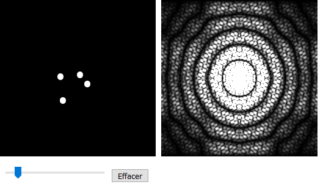

<p>I always wanted to understand and implement 2D (image) Fourier transforms.
<p>I studied Signal Processing at school but it has always been black magic for me, especially FFTs (Fast Fourier Transforms).<br>Contrary to to DFT (Discrete Fourier Transforms), FFT can compute huge amounts of Fourier transforms in just a fraction of the time.
<p>It's pretty easy to find 1D FFT implementations in any language, some are short, some are huge, some are recursive and some are iterative.
<br>My favourite is <a href="https://antimatter15.com/2015/05/cooley-tukey-fft-dct-idct-in-under-1k-of-javascript/">this one by antimatter15</a>: it's in JS, it's iterative, and it's super tiny (about 360b minified).
<p>A 1D Fourier Transform takes a list of numbers (generally real numbers, because they come from the real world (ex: sound samples), but it can also work on complex numbers), and it outputs a list of complex numbers representing the frequencies present in the signal.
<br>FFTs have some little quirks: they only work on signals that have a size equal to a power of two (4, 8, 16, 32, 64, 128, 256, 512, ...), and their output is always symmetric (first == last, second == second-to-last, etc).
<p>And that's pretty much all you can learn about it online.
<p>But how do 2D FFT work? I found some big Github projects that perform 2D FFTs with all the options you can imagine, but I couldn't find any clear explanation on which basic operations are actually required to make them work.
<p>Then it hit me: there's no such thing as a "2D FFT". 2D FFTs algorithms use 1D FFTs for each line and each column of an image and assemble them. How exactly? Well, here again, the Web wasn't very specific, and the people who "know" keep talking about stuff like "radix 2" and other cryptic keywords... but I finally found <a href="https://stackoverflow.com/a/11333566/3124943">this very concise SO answer</a> and went with it.
<p><ul><li>Take a greyscale image (each pixel has a greyscale value between 0 and 255). For example, a 256x256px image.
<li>Compute the 1D FFT of each line of the image. You get 256 FFTs containing 256 complex numbers.
<li>Assemble these 256 1D FFTs on a 2D grid, line by line. The grid is made of 256x256 complex numbers.
<li>Take every column of this grid and compute their 1D FFT. You get 256 new FFT containing 256 complex numbers.
<li>Assemble these new FFTs on a 2D grid (again), column by column.
<li>Compute the magnitude of each complex number in the grid, and plot it on a canvas using a logarithmic scale (because all the values in the FFT are either super tiny or super huge, so if we didn't use this scale, the 2D FFT would be almost entirely black).
</ul>
<p>By chance, when I tried to code it, it worked on the first try!
<p>It was fast, but it wasn't REAL TIME fast (around 80ms for a 256x256px image).
<p>So I remembered that FFTs are symmetric, and managed to compute only half of them on the first pass and on the second pass, and completed the holes by copying all the values, mirrored, in JS, in the other half of the grid. The final plotting was also optimized by drawing only one quarter of the image, and mirroring it in the three other quarters. In the end, the computation time fell down to 25-40ms depending on the computer used. That's fast enough for a 30fps demo!
<p>So I proceeded to make the base image drawable with the mouse, and added some options to change the thickness of the drawing (1 to 100px), its shape (round or square) and its color (black or white). The FFT was instantly computed and drawn on the side.
<p>After forcing for a while, and with the great help of <b>BalintCsala and Subzey</b>, I managed to fit it in 1024b. <b>Corruptio</b> attempted a demake to see how small a basic, non-interactive 2D FFT could be, and reached <a href="https://github.com/justecorruptio/golf/blob/master/fourier.html">409b</a>! (check out the demo <a href="https://rawgit.com/justecorruptio/golf/master/fourier.html">HERE</a>).

<p>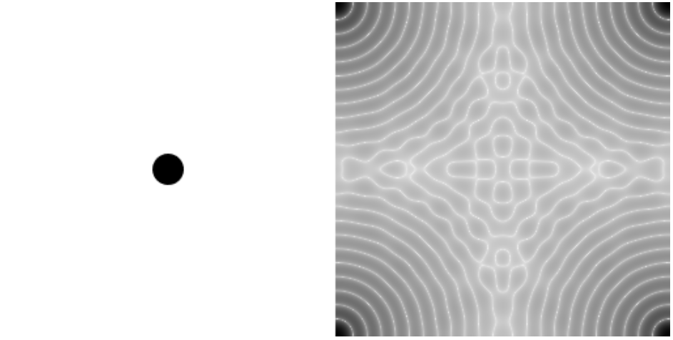

<p>Some Math / golfing tricks to take away:
<p><ul><li>In the JS1K shim, you can use <pre class=code style=display:inline;padding:4px>d.write`...`</pre> to add HTML after a canvas without breaking its 2D context (as opposed to <pre class=code style=display:inline;padding:4px>b.innerHTML+="..."</pre>).
<li>If you want a reset button with free i18n, use <pre class=code style=display:inline;padding:4px>&lt;input type=reset onclick="..."></pre>
<br>
(it doesn't even need a value or a parent &lt;form> to be valid).
<li>Computing the magnitude of a complex number in the form ai+b can be done with <pre class=code style=display:inline;padding:4px>Math.hypot(a,b)</pre>. (Thanks ES6!)
<li>About the logarithmic scale: the highest magnitude of the 2D FFT is saved in a variable "max",<br>then we take its logarithm (<pre class=code style=display:inline;padding:4px>logmax = Math.log(max)</pre>).
<br>Finally, every complex number is drawn on a pixel with a greyscale value equal to its own magnitude divided by logmax.<br>It's not necessary to ensure that the values are well between 0 and 255, it just works out of the box. 🤷‍♂️
</ul>

<p>PS: I recently discovered that JS had a native FFT method - <b>p01</b> and I even used it in our 274b <a href="https://github.com/xem/miniAudioViz">miniAudioviz</a> app - though it only works with an Audio element, and I didn't find any way to feed it with arbitrary data. too bad, it would have been pretty handy to use native FFT instead of reimplementing it!

<br>
<br>
<hr>
<br>

<h3>Shaderandom</h3>

- <a href="https://js1k.com/2018-coins/demo/3063">PLAY</a>
<br>- <a href="https://github.com/xem/shaderandom">GITHUB</a>
<br>- <a href="https://github.com/xem/shaderandom/blob/gh-pages/js1k.html">DETAILED SOURCE CODE</a>

<p>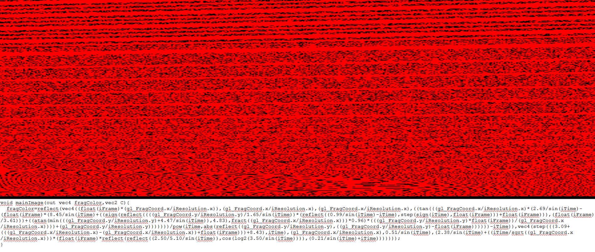

<p>I decided to rework Shaderandom (<a href=" http://xem.github.io/shaderandom">DEMO</a>), the WebGL shader procedual generator I wrote two years ago during our <a href="https://xem.github.io/articles/#webgl_quest">WebGL quest</a>.<br>I especially wanted to make this work in 1kb because it's the only project that I didn't manage to golf properly during <a href="https://xem.github.io/articles/#golfctober_2017">#Golfctober 2017</a> (everything I tried broke the app entirely!).

<p>So I reopened the project, annotated all the code, golfed the WebGL setup and the shader grammar as far as I could, minified it manually to avoid any Closure Compiler error, adjusted some params to have as many visual (and animated) outputs as possible, made the generated code compatible with <b>shadertoy.com</b> and placed it in a textarea under the canvas, so it can be read and copied easily.

<p>No new golf tricks to share here, but a little warning about the JS1K shim's header: this header pushes down your demo's content, so be careful if you stack elements with a total height of "100vh", because if you do so, the page will overflow and scroll. (it happened to me in this demo, but I didn't have the room to fix it).

<br>
<br>
<hr>
<br>

<h3>Epic cycles</h3>

- <a href="https://js1k.com/2018-coins/demo/3124">PLAY</a>
<br>- <a href="https://github.com/xem/epicycles">GITHUB</a>
<br>- <a href="https://github.com/xem/epicycles/blob/gh-pages/index.html">DETAILED SOURCE CODE</a>

<p>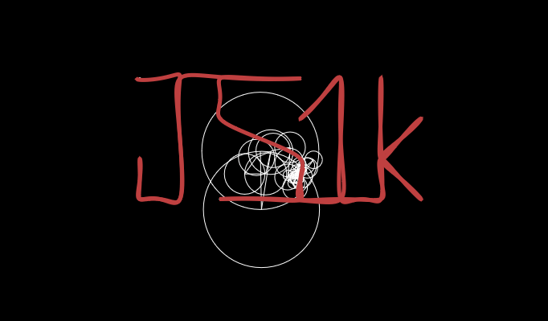

<p>During this month, a big trend appeared on Twitter (even if the concept was <a href="https://www.youtube.com/watch?feature=youtu.be&v=QVuU2YCwHjw">pretty old</a>): drawing stuff with epicycloids.

<p><div id="epicycloidtwitter"><blockquote class="twitter-tweet" data-lang="fr"><p lang="en" dir="ltr">Generative Art. <a href="https://t.co/9bdJfhGeAx">pic.twitter.com/9bdJfhGeAx</a></p>&mdash; じゃがりきん (@jagarikin) <a href="https://twitter.com/jagarikin/status/964037102655586304?ref_src=twsrc%5Etfw">15 février 2018</a></blockquote>
<script async src="https://platform.twitter.com/widgets.js" charset="utf-8"></script>
</div>


<p>A lot of people asked how it worked, and a lot of other people were like:<br> "it's super simple, just fjzfoijef a Fourier $!#@*% then xyxyyzzyxy the phase and magnitude of the complex numbers in the (){[}>)]]} and it's done!". (at least, that's the only words I understood, despite the fact that I had just made a 2D FFT demo).

<p>Thumbs up for <a href="http://eljjdx.canalblog.com/archives/2018/02/15/36145181.html">this blog post (in french)</a> by <b>ElJj</b> explaining in detail how to draw a shape using 2 epicycloids (one for X coordinates and one for Y).

<p>Fortunately, I found two allies in this mission, <b>Román Cortés</b> who gave me a clearer interpretation of the technical mumble up there, and <b>Bálint Csala</b>, who already helped me on MiniFourier and was also about to try and implement epicycloids on his side. So we teamed up to make this entry!

<p>It took us a lot of different attempts, and the discovery of <a href="https://github.com/brettcvz/epicycles/">this github project by brettcvz</a> to finally have a prototype running: I've put all the HTML and JS code of brettcvz in a single, 1500-line HTML page, then removed all the not mandatory parts to end up with a page structured more or less like this:

<p><pre>
&lt;canvas id=a>

&lt;script>
var points = [ /* hardcoded points of a sample "B" shape */ ];
var complex = [ ];
var gears = [ ];

// FFT.js (289 lines)
fft = (output, input) => { ... }

// epicycles.js (89 lines)
calculateGears = (complex, number) => { ... }

// simulator.js (107 lines)
render = () => { ... }

complex = fft(points);
gears = calculateGears(complex, complex.length);
render();

&lt;/script>
</pre>

<p>This worked fine! So on a separate file, we started from the end, by writing our own, simplified render loop:

<p><pre>
gears = [ /* hardcoded gears radii and angles used by the render loop */ ];

setInterval(
  () => {

    /* Render gears */
    
    t += 1/100;
    a.width ^= 0;
    x = centers[0][0];
    y = centers[0][1];
    for(i in complex){
      c.beginPath();
      c.arc(x, y, radii[i], 0, 7)
      c.stroke();
      c.beginPath();
      c.moveTo(x, y);
      x = centers[0][0];
      y = centers[0][1];
      for(j = 0; j <= i; j++){
        x += radii[j] * Math.cos(angles[j] + t * speeds[j]);
        y += radii[j] * Math.sin(angles[j] + t * speeds[j]);
        c.lineTo(x, y);
      }
      c.stroke();
    }
    C.lineTo(x, y);
    C.stroke();
  }, 16
)
</pre>

<p>When this worked, <a href="https://github.com/xem/epicycles/blob/501baee97da279a0e59e4bf1a920f305170d5b1b/index.html">we started golfing calculateGears</a>:
<p>The secret here is that each gear corresponds to a complex number (x): the radius of the gear is equal to the magnitude of x, its initial angle is equal to the phase of x (the angle between x and the horizontal line on a 2D plane - this is computed with Math.atan2), and its speed (frequency) corrsponds to the index of x: when the first gear makes one complete cycle, the second makes two, the third three, etc.

<p><pre>
complex = [ /* hardcoded FFT used to compute gears */ ];
gears = [];

/* Compute gears */
centers = [[300,300]];
angles = [];
radii = [];
speeds = [1,2,3,4,5,6,7];
for(i in complex){
  radii[i] = Math.hypot(complex[i][0], complex[i][1]);
  angles[i] = Math.atan2(complex[i][0], complex[i][1]);
  if(i > 0){
    centers[i] = [centers[i-1][0] + radii[i-1], 300]; 
  }
  C.beginPath();
  C.strokeStyle = "red";
  C.lineWidth = 3;
  C.moveTo(centers[i] + radii[i], 300);
}

setInterval(
  () => {
    /* Render gears */
  }, 16
)
</pre>

<p>When this worked too, we finally attempted the most difficult part: <a href="https://github.com/xem/epicycles/blob/6c612edd21358573e5297eea4b1ed61aec5ff138/index.html">computing the FFT of a list of hardcoded points</a>. by chance, we could reuse the tiny implementation written by antimatter15:

<p><pre>
points = [ /* hardcoded points */ ]
complex = [];
gears = [];

/* Compute points FFT */
for (i = 0; Math.log2(P.length) != (Math.log2(P.length) | 0); i = (i + 2) % P.length)
  P.splice(i + 1, 0, [(P[i][0] + P[i + 1][0]) / 2, (P[i][1] + P[i + 1][1]) / 2]);
for (I = 0; I < P.length; I++) {
  for (A = J = 0, K = P.length; K >>= 1; A++)
    J = J << 1 | (I >> A & 1);
  J > I && ([P[I][0], P[J][0], P[I][1], P[J][1]] = [P[J][0], P[I][0], P[J][1], P[I][1]])
}
for (H = 1; H * 2 <= P.length; H *= 2)
  for (I = 0; I < P.length; I += H * 2)
    for (J = I; J < I + H; J++)
      E = P[J + H][0] * Math.cos(Math.PI * (J - I) / H) + P[J + H][1] * Math.sin(Math.PI * (J - I) / H),
      M = -P[J + H][0] * Math.sin(Math.PI * (J - I) / H) + P[J + H][1] * Math.cos(Math.PI * (J - I) / H),
      P[J + H][0] = P[J][0] - E,
      P[J + H][1] = P[J][1] - M,
      P[J][0] += E,
      P[J][1] += M;

for (G = [[0, Math.hypot(P[0][0], P[0][1]) / P.length, Math.atan2(P[0][1], P[0][0])]], I = 1; I <= P.length / 2; I++)
G.push(
  [I, Math.hypot(P[I][0], P[I][1]) / P.length, Math.atan2(P[I][1], P[I][0])],
  [-I, Math.hypot(P[P.length - I][0], P[P.length - I][1]) / P.length, Math.atan2(P[P.length - I][1], P[P.length - I][0])]
);
G.pop();
G.sort((A, B) => B[1] - A[1]);


/* Compute gears */

setInterval(
  () => {
    /* Render gears */
  }, 16
)
</pre>

<p>The annoying part was to ensure that there are always a number of points equal to a power of two, but Bálint had the nice idea to insert intermediate points between each successive pair of points to fill the array without changing the shape:

<pre>
for (i = 0; Math.log2(points.length) != (Math.log2(points.length) | 0); i = (i + 2) % points.length)
  points.splice(i + 1, 0, [(points[i][0] + points[i + 1][0]) / 2, (points[i][1] + points[i + 1][1]) / 2]);
</pre>

<p>Fun fact from <b>romancortes</b>: the gears can be chained in any order, they will always trace the same pattern. We decided to sort them from the biggest to the smallest for for more interesting visuals. (This explains why the gears speeds often appear in random order)

<p>This entire demo (with hardcoded points) took 862b minified and packed.
<p>After adding a rudimentary drawing feature (just click on the canvas to add points), it was up to 989b. But most importantly, we could finally generate our very own epicycloids!

<p><blockquote class="twitter-tweet" data-lang="fr"><p lang="en" dir="ltr">*cough cough* <a href="https://twitter.com/BalintCsala?ref_src=twsrc%5Etfw">@BalintCsala</a> and I may have something fun to present to <a href="https://twitter.com/js1k?ref_src=twsrc%5Etfw">@js1k</a> soon.<br><br>Something... with epicycles!<br><br>Cheers to the <a href="https://twitter.com/romancortes?ref_src=twsrc%5Etfw">@romancortes</a>, <a href="https://twitter.com/p01?ref_src=twsrc%5Etfw">@p01</a>, <a href="https://twitter.com/ElJj?ref_src=twsrc%5Etfw">@ElJj</a>, <a href="https://twitter.com/antimatter15?ref_src=twsrc%5Etfw">@antimatter15</a> and <a href="https://twitter.com/brettcvz?ref_src=twsrc%5Etfw">@brettcvz</a> for their help and individual work! <a href="https://t.co/UAkHJq0dv7">pic.twitter.com/UAkHJq0dv7</a></p>&mdash; xem 🔵‏ (@MaximeEuziere) <a href="https://twitter.com/MaximeEuziere/status/966404193148964868?ref_src=twsrc%5Etfw">21 février 2018</a></blockquote>
<script async src="https://platform.twitter.com/widgets.js" charset="utf-8"></script>

<blockquote class="twitter-tweet" data-conversation="none" data-lang="fr"><p lang="und" dir="ltr"><a href="https://t.co/woiAecM4hg">pic.twitter.com/woiAecM4hg</a></p>&mdash; xem 🔵‏ (@MaximeEuziere) <a href="https://twitter.com/MaximeEuziere/status/966406359771205633?ref_src=twsrc%5Etfw">21 février 2018</a></blockquote>
<script async src="https://platform.twitter.com/widgets.js" charset="utf-8"></script>

<blockquote class="twitter-tweet" data-conversation="none" data-lang="fr"><p lang="en" dir="ltr">&quot;JS1K&quot; drawn by 29 circles :D <a href="https://t.co/Ocj3lp290H">pic.twitter.com/Ocj3lp290H</a></p>&mdash; xem 🔵‏ (@MaximeEuziere) <a href="https://twitter.com/MaximeEuziere/status/966418060549804033?ref_src=twsrc%5Etfw">21 février 2018</a></blockquote>
<script async src="https://platform.twitter.com/widgets.js" charset="utf-8"></script>


<p>So we started adding cool stuff in the demo... and golfing it at the same time: <a href="https://github.com/xem/epicycles/blob/d4059875efcbbd2f88c897ed3d5f161ed19d8bd1/index.html">1037b</a> after including a build-in JS1K logo, <a href="https://github.com/xem/epicycles/blob/a87ff1acb7fb4d4b727c9252818d152f7e50f678/index.html">1023b</a> after making the canvas fullscreen and compressing all the points into ASCII chars (first, one char per coordinate, then one char for both X and Y), <a href="https://github.com/xem/epicycles/blob/9a046103a83cb30dc13327c2f91dd18f453839fb/index.html">1042b</a> after adding keyboard controls, <a href="https://github.com/xem/epicycles/blob/fc0b586dbf4c32c4b2fba103cbf305b6eef0d5ad/index.html">1010b</a> after optimizing the gears generation with a pen and a piece of paper, <a href="https://github.com/xem/epicycles/blob/1274645674d95db9d8db29772f20ae658af9a0c3/index.html">1051b</a> after implementing a nicer drawing UI (click - move - release), etc...
<p>Then we hit a barrier: we wanted to implement some cool features (like avoiding to draw dozens of points too close to each other by moving the mouse slowly for example), but we couldn't free enough bytes to add them.
<p>Fortunately, Bálint found a way to implement DCT instead of FFT, which suddenly made our demo fall to 930b! (DCT is longer, but it actually requires much less code than FFT).
<p><pre class=code>
// Compute the DFT of P.
// This is black magic inspired by Paul Bourke's C++ code.
_ = [];
for (i in P) {
  _[i] = [0, 0];
  for (k in P)
    // Perform complex rotations or something like that?
    _[i][0] += (P[k][0] * Math.cos(k * -2 * Math.PI * i / P.length) - P[k][1] * Math.sin(k * -2 * Math.PI * i / P.length)),
    _[i][1] += (P[k][0] * Math.sin(k * -2 * Math.PI * i / P.length) + P[k][1] * Math.cos(k * -2 * Math.PI * i / P.length));
}
</pre>
<p>This allowed us to do all the little enhancements we wanted to do, and even put a black background to the page, while the lines were being traced in white.
<p>We're very happy with the result!
<p>In the meantime, <b>3blue1brown</b> published a <a href="https://www.youtube.com/watch?v=spUNpyF58BY">great video</a> showing why FFTs are so associated with rotations. Watching this video suddenly made epicycloids make a lot of sense: the Fourier transform "rolls" the points on a circle, and the epicycloids just do the opposite operation.

<p>After JS1K, Bálint published a similar tool with a much nicer UI (and many extra kilobytes): <a href="http://circlemachine.github.io">CircleMachine</a>.

<p>To finish, here are some of our creations:

<p>
<blockquote class="twitter-tweet" data-lang="fr"><p lang="en" dir="ltr">Stress test for our epicycles generator:<br>an imitation of the famous Homer drawing, traced by 512 gears.<br>Works pretty fine!<br><br>(<a href="https://t.co/1dp3WtACZR">https://t.co/1dp3WtACZR</a>)<a href="https://twitter.com/hashtag/js1k?src=hash&amp;ref_src=twsrc%5Etfw">#js1k</a> <a href="https://twitter.com/BalintCsala?ref_src=twsrc%5Etfw">@BalintCsala</a> <a href="https://t.co/eXU1npJing">pic.twitter.com/eXU1npJing</a></p>&mdash; xem 🔵‏ (@MaximeEuziere) <a href="https://twitter.com/MaximeEuziere/status/966791469708259328?ref_src=twsrc%5Etfw">22 février 2018</a></blockquote>
<script async src="https://platform.twitter.com/widgets.js" charset="utf-8"></script>

<blockquote class="twitter-tweet" data-lang="fr"><p lang="und" dir="ltr"><a href="https://twitter.com/hashtag/js1k?src=hash&amp;ref_src=twsrc%5Etfw">#js1k</a> <br><br>cc. <a href="https://twitter.com/MaximeEuziere?ref_src=twsrc%5Etfw">@MaximeEuziere</a> <a href="https://t.co/y1028vi3qd">pic.twitter.com/y1028vi3qd</a></p>&mdash; Bálint Csala (@BalintCsala) <a href="https://twitter.com/BalintCsala/status/967496488174718983?ref_src=twsrc%5Etfw">24 février 2018</a></blockquote><script async src="https://platform.twitter.com/widgets.js" charset="utf-8"
></script>

<blockquote class="twitter-tweet" data-conversation="none" data-lang="fr"><p lang="en" dir="ltr">1024 circles 👨‍💻 <a href="https://t.co/PRrNuoEFOk">pic.twitter.com/PRrNuoEFOk</a></p>&mdash; xem 🔵‏ (@MaximeEuziere) <a href="https://twitter.com/MaximeEuziere/status/967506782993244160?ref_src=twsrc%5Etfw">24 février 2018</a></blockquote>
<script async src="https://platform.twitter.com/widgets.js" charset="utf-8"></script>

<br>
<br>
<hr>
<br>

<h3>MUS1K</h3>

- <a href="https://js1k.com/2018-coins/demo/3191">PLAY</a>
<br>- <a href="https://github.com/xem/miniMusic">GITHUB</a>
<br>- <a href="https://github.com/xem/miniMusic/blob/gh-pages/1k.html">DETAILED SOURCE CODE</a>

<p>

<p>During the last week of the contest, I saw <a href="https://js1k.com/2018-coins/demo/3126">this entry</a>, aiming to create a melody with the mouse and play it.
<p>It reminded me <a href="https://xem.github.io/miniMusic/">MiniMusic</a>, a tool I hacked in a couple hours before the beginning of JS13kGames 2017.
<p>So I tried to fit that tool in 1kb, without removing any feature, and it worked!
<p>I even added one important change in the generated code snippet: replacing <pre class=code style=display:inline;padding:4px>frequency.value = f</pre> (which is now deprecated) with <pre class=code style=display:inline;padding:4px>frequency.setValueAtTime(f, 0)</pre>.
<p>One little quirk though, about the JS1K shim: the &lt;body>'s margin are forced to 0px, and my attempts to give the page a little margin (with <pre class=code style=display:inline;padding:4px>#b{margin:1em}</pre> or <pre class=code style=display:inline;padding:4px>body{margin:1em}</pre>) failed. The first one failed because the body element doesn't have an id equal to "b", it's just a reference of the body that is stored in b. The second one failed because the body had an inline CSS rule forcing its margin to 0px, and inline CSS is stronger than CSS placed in &lt;style> elements.
<p>I should have used padding, but didn't have the idea before submitting the entry. 🤷‍♂️

<br>
<br>
<hr>
<br>

<h3>BONUS (not submitted): 1KB NES ROM DISASSEMBLER</h3>

- <a href="https://xem.github.io/nes/disassembler.html">DEMO</a>
<br>- <a href="https://github.com/xem/nes">GITHUB</a>
<br>- <a href="https://github.com/xem/nes/blob/gh-pages/disassembler.html">DETAILED SOURCE CODE</a>

<p>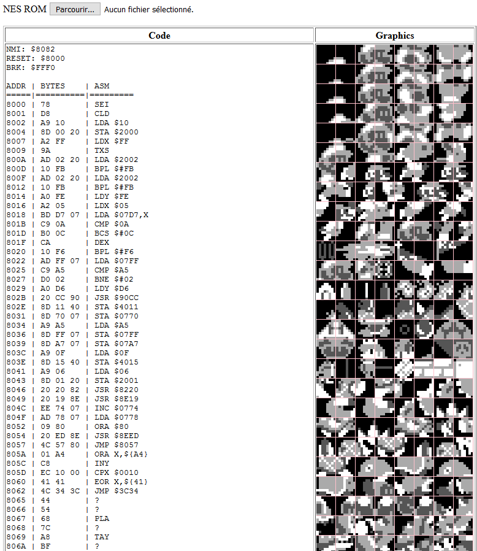

<p>At the beginning of the month, I went a little crazy, imagining that I could make the level 1-1 of Super Mario Bros in 1kb, or maybe a mini NES emulator in 1kb (I guess I was inspired by <a href="https://www.youtube.com/watch?v=y71lli8MS8s">this epic NES emulator coded in 15 minutes</a>).
<p>It would have been in the theme because, you know, Mario collects coins and stuff, but of course, it was not possible.
<p>Though I read a lot of documentation on NES emulation and realized that I could at least do one fun thing: a 1KB NES ROM disassembler, displaying all the program memory in the form of assembler code, and all the graphic memory in the form of consecutive 8x8px sprites, drawn on a canvas.
<p>It was a bit ambitious, but it worked!
<br>...I mean, I could make this disassembler fit in a 1Kb zip file.
<p>Sadly, it was too big to fit unzipped (or regpacked) in a JS1K shim, so I didn't submit it.

<br>
<br>
<hr>
<br>

<h3>(Awesome) results!</h3>
<div class=full>
  <blockquote class="twitter-tweet" data-lang="fr"><p lang="en" dir="ltr">No less than 4 entries submitted by my team and I arrived in the top 20 of <a href="https://twitter.com/js1k?ref_src=twsrc%5Etfw">@JS1K</a> 2018!<br><br>Blog post:<a href="https://t.co/svhBgUDAko">https://t.co/svhBgUDAko</a><br><br>Honorable mentions: Shaderandom &amp; miniFourier:<a href="https://t.co/ZK9JJMy1Yh">https://t.co/ZK9JJMy1Yh</a><br><br>#9: SN1KE:<a href="https://t.co/x9wvbzKxEM">https://t.co/x9wvbzKxEM</a><br><br>#4: Epic Cycles:<a href="https://t.co/Oih300BxAd">https://t.co/Oih300BxAd</a><a href="https://twitter.com/hashtag/js1k?src=hash&amp;ref_src=twsrc%5Etfw">#js1k</a></p>&mdash; xem 🔵‏ (@MaximeEuziere) <a href="https://twitter.com/MaximeEuziere/status/976384849928957952?ref_src=twsrc%5Etfw">21 mars 2018</a></blockquote>
  <script async src="https://platform.twitter.com/widgets.js" charset="utf-8"></script>
</div>

<p>see you next year!

</div>

<div class=section id=golfctober_2017>
<style>
#golfctober_2017 pre { white-space: pre }
#golfctober_2017 iframe { border: 2px solid #ccc !important; border-radius: 5px; width: 45% !important;
display: inline-block !important; vertical-align: top; margin: 0 1% 2% 0; }
</style>
<h2>#Golfctober 2017</h2>
<h3>october 2017</h3>
<p>This year, I tried to follow the trend of <b>#inktober</b> or <b>#blocktober</b>, but adapted to JS code golfing.
<p>I bet I could golf (or regolf) one project a day for 31 days, and called it <b>#golfctober</b>.
<p><blockquote class="twitter-tweet" data-lang="fr"><p lang="en" dir="ltr">Regolfing mini apps with ES6 &amp; the great help and discoveries from the codegolf team and its epic newcomers <a href="https://twitter.com/mmastrac?ref_src=twsrc%5Etfw">@mmastrac</a> and <a href="https://twitter.com/justecorruptio?ref_src=twsrc%5Etfw">@justecorruptio</a> 🙋</p>&mdash; xem 🔵‏ (@MaximeEuziere) <a href="https://twitter.com/MaximeEuziere/status/914808537179676672?ref_src=twsrc%5Etfw">2 octobre 2017</a></blockquote>
<script async src="//platform.twitter.com/widgets.js" charset="utf-8"></script>
<p>By chance, the whole Codegolf Team, with some excellent new recruits, joined the game and helped me find some awesome new tricks, and save a lot bytes on projects we couldn't golf any more.
<p>Here's a recap of all the progress and lessons learned!
<p>Cheers to all the authors: <b>@p01, @aemkei, @subzey, @veubeke, @justecorruptio, @mmastrac, @xen_the, @nderscore, @ETHproductions, @benjamin_js, @atesgoral, @adabeezus, @fusselwurm and Senokai</b> !

<p>NB: you can read more about our previous "new golfing tricks" <a href="http://xem.github.io/articles/#webspeech">HERE</a>!

<br><br><hr><br><h3>Day 1 + day 5: <a href="//xem.github.io/miniCodeEditor">miniCodeEditor</a></h3>

<p><blockquote class="twitter-tweet" data-conversation="none" data-lang="fr"><p lang="en" dir="ltr"><a href="https://twitter.com/hashtag/golfctober?src=hash&amp;ref_src=twsrc%5Etfw">#golfctober</a> episode 1:<br>minicodeEditor is now 3b shorter thanks to a complete rewrite and a &quot;&lt;iframe onload&gt;&quot; trick<a href="https://t.co/VAzvwH66aO">https://t.co/VAzvwH66aO</a> <a href="https://t.co/mBHvjDBBiE">pic.twitter.com/mBHvjDBBiE</a></p>&mdash; xem 🔵‏ (@MaximeEuziere) <a href="https://twitter.com/MaximeEuziere/status/914823629006888960?ref_src=twsrc%5Etfw">2 octobre 2017</a></blockquote>
<script async src="//platform.twitter.com/widgets.js" charset="utf-8"></script>

<blockquote class="twitter-tweet" data-conversation="none" data-lang="fr"><p lang="en" dir="ltr"><a href="https://twitter.com/hashtag/golfctober?src=hash&amp;ref_src=twsrc%5Etfw">#golfctober</a> day 5<br>MiniCodeEditor is back! (78th iteration)<br>Full: 149b =&gt;142b (thx <a href="https://twitter.com/justecorruptio?ref_src=twsrc%5Etfw">@justecorruptio</a>)<br>Mini: 64b =&gt; 62b<a href="https://t.co/YgnawETfLr">https://t.co/YgnawETfLr</a> <a href="https://t.co/F8PPO0OlGP">pic.twitter.com/F8PPO0OlGP</a></p>&mdash; xem 🔵‏ (@MaximeEuziere) <a href="https://twitter.com/MaximeEuziere/status/915830273622847505?ref_src=twsrc%5Etfw">5 octobre 2017</a></blockquote>
<script async src="//platform.twitter.com/widgets.js" charset="utf-8"></script>

<p><b>Progress</b>
<pre class=code>
<b>Previous version (156b)</b>
&lt;body oninput='f.srcdoc=t0[v="value"]+`&lt;script>${t2[v]}&lt;/script>&lt;style>`+t1[v]'onload='for(i=3;i--;)f.outerHTML+=`&lt;textarea id=t${i} rows=9>`'>&lt;iframe id=f>

<b>Get rid of the &lt;body> by using "&lt;iframe onload=...">, use the iframe id as a textarea counter then set it to "f".</b>
&lt;iframe onload='id++&lt;3?outerHTML+=`&lt;textarea oninput="f.srcdoc=t3.value+\`&lt;script>\${t1.value}&lt;/script>&lt;style>\`+t2.value"id=t${id} rows=9>`:id="f"'>

<b>Make each textarea store its content in f[id] after each input, stop prefixing textareas ids with "t".</b>
&lt;iframe onload='id++&lt;3?outerHTML+=`&lt;textarea oninput="f[id]=value;f.srcdoc=f[3]+\`&lt;script>\${f[1]}&lt;/script>&lt;style>\`+f[2]"id=${id} rows=9>`:id="f"'>

<b>Final version (142b): remove the textareas id's altogether and directly update f[id] after each input.</b>
&lt;iframe onload='id++&lt;3?outerHTML+=`&lt;textarea oninput="f[${id}]=value;f.srcdoc=f[3]+\`&lt;script>\${f[1]}&lt;/script>&lt;style>\`+f[2]"rows=9>`:id="f"'>
</pre>

<p><b>New tricks</b>
<ul>
<li>You can execute JS code with &lt;iframe onload=...>
<li>You can use an undefined iframe id as a loop var (<a href="http://jsfiddle.net/adefyhyn/">also works with svg</a>).
<li>The default value of an undefined id is '' (empty string). When you do 'id++', it's set to 1.
<li>changing the iframe's (or svg's) outerHTML re-triggers its onload event, which leads to another loop.
</ul>

<br><br><hr><br><h3>Day 2: <a href="http://xem.github.io/miniBookmarklet/">MiniBookmarklet</a></h3>

<p><blockquote class="twitter-tweet" data-conversation="none" data-lang="fr"><p lang="en" dir="ltr"><a href="https://twitter.com/hashtag/golfctober?src=hash&amp;ref_src=twsrc%5Etfw">#golfctober</a> day 2:<br>miniBookmarklet (80b =&gt; 64b!)<a href="https://t.co/FI4qOaPZy9">https://t.co/FI4qOaPZy9</a><br><br>&lt;a id=a&gt;@&lt;input oninput=&#39;a.href=`javascript:(a=&gt;{${value}})()`&#39;&gt; <a href="https://t.co/8RCQDjhOkL">pic.twitter.com/8RCQDjhOkL</a></p>&mdash; xem 🔵‏ (@MaximeEuziere) <a href="https://twitter.com/MaximeEuziere/status/914924204973264896?ref_src=twsrc%5Etfw">2 octobre 2017</a></blockquote>
<script async src="//platform.twitter.com/widgets.js" charset="utf-8"></script>
<p><b>Progress</b>
<pre class=code>
<b>Previous version (80b)</b>
&lt;p>&lt;a id=a>BM&lt;p>&lt;textarea oninput=a.href='javascript:(function(){'+value+'})()'> 

<b>New version (64b): use ES6 and include the input in the link</b>
&lt;a id=a>@&lt;input oninput='a.href=`javascript:(a=>{${value}})()`'>
</pre>
<p><b>New tricks & reminders</b>
<ul>
<li>Bookmarklets' code need to be embedded in an IIFE "(a=>{...})()", vor various reasons. The most obvious one is to avoid global scope pollution, but more generally, if you don't do it, your code will often be buggy.
<li>The input element is included in the link, and updates this link's href when text is typed inside.
<li>When the link is dragged in the bookmarks, the text content "@" is used for the bookmark's name, the link's href is used for the bookmark's url, and the input is ignored.
</ul>

<br><br><hr><br><h3>Day 3 + day 14 + day 15: <a href="https://xem.github.io/sheet/">sheet</a></h3>

<p><blockquote class="twitter-tweet" data-conversation="none" data-lang="fr"><p lang="en" dir="ltr"><a href="https://twitter.com/hashtag/golfctober?src=hash&amp;ref_src=twsrc%5Etfw">#golfctober</a> day 3:<br>The famous <a href="https://t.co/uay7diKK4U">https://t.co/uay7diKK4U</a> lost 15b over the weekend!<br>thanks to <a href="https://twitter.com/mmastrac?ref_src=twsrc%5Etfw">@mmastrac</a> <a href="https://twitter.com/justecorruptio?ref_src=twsrc%5Etfw">@justecorruptio</a><br>cc <a href="https://twitter.com/subzey?ref_src=twsrc%5Etfw">@subzey</a> <a href="https://twitter.com/p01?ref_src=twsrc%5Etfw">@p01</a> <a href="https://twitter.com/aemkei?ref_src=twsrc%5Etfw">@aemkei</a> <a href="https://t.co/YcYyWZWgPC">pic.twitter.com/YcYyWZWgPC</a></p>&mdash; xem 🔵‏ (@MaximeEuziere) <a href="https://twitter.com/MaximeEuziere/status/915101856317280256?ref_src=twsrc%5Etfw">3 octobre 2017</a></blockquote>
<script async src="//platform.twitter.com/widgets.js" charset="utf-8"></script>
<blockquote class="twitter-tweet" data-conversation="none" data-lang="fr"><p lang="en" dir="ltr"><a href="https://twitter.com/hashtag/golfctober?src=hash&amp;ref_src=twsrc%5Etfw">#golfctober</a> day 3 (bonus):<br>The commented source code of our 188b spreadsheet.<br>A lot of stuff is happening in there!<a href="https://t.co/yxRATIymO7">https://t.co/yxRATIymO7</a> <a href="https://t.co/2aXyXkpd0g">pic.twitter.com/2aXyXkpd0g</a></p>&mdash; xem 🔵‏ (@MaximeEuziere) <a href="https://twitter.com/MaximeEuziere/status/915272497800650753?ref_src=twsrc%5Etfw">3 octobre 2017</a></blockquote>
<script async src="//platform.twitter.com/widgets.js" charset="utf-8"></script>
<blockquote class="twitter-tweet" data-conversation="none" data-lang="fr"><p lang="en" dir="ltr"><a href="https://twitter.com/hashtag/golfctober?src=hash&amp;ref_src=twsrc%5Etfw">#golfctober</a> day 14:<br>(Sprite) sheet just got real!<a href="https://t.co/yxRATIymO7">https://t.co/yxRATIymO7</a><br>2 versions (mini: 188b, full: 253b)<br>&amp; super-detailed source code <a href="https://t.co/YCX7DXP1Lx">pic.twitter.com/YCX7DXP1Lx</a></p>&mdash; xem 🔵‏ (@MaximeEuziere) <a href="https://twitter.com/MaximeEuziere/status/919181675820650496?ref_src=twsrc%5Etfw">14 octobre 2017</a></blockquote>
<script async src="//platform.twitter.com/widgets.js" charset="utf-8"></script>
<blockquote class="twitter-tweet" data-conversation="none" data-lang="fr"><p lang="en" dir="ltr">3) <a href="https://twitter.com/mmastrac?ref_src=twsrc%5Etfw">@mmastrac</a> made a new version of sheet with ABC... / 123... headers, in 277b (plus a bit of optional CSS code)<a href="https://t.co/2SEj9lfBVw">https://t.co/2SEj9lfBVw</a> <a href="https://t.co/pfFsy7mxyI">pic.twitter.com/pfFsy7mxyI</a></p>&mdash; xem 🔵‏ (@MaximeEuziere) <a href="https://twitter.com/MaximeEuziere/status/919499125833465856?ref_src=twsrc%5Etfw">15 octobre 2017</a></blockquote>
<script async src="//platform.twitter.com/widgets.js" charset="utf-8"></script>

<p>Sheet (originally 220b long) was entirely rewritten into three versions: a minimal one in 188b, a full-featured one in less than 256b, and a good-looking one (with excel-like headers) in 277b.
<p><b>source code (full/minimal)</b>
<pre class=code>o=b=>{for(i in{}+o)with(M=Math)M[y='ABCD'[i%5]+-~(i/5%6)]=b?document.write(y&&
i&lt;30?`&lt;input placeholder=${y} id=`+y:'&lt;br',` onfocus=value=[l[id]] onblur=l[id
]=value,o()>`):(top[y].value=[/^=/.test(z=l[y])?eval('x'+z):x=z],x-~x?+x:x)};o
(o(l=localStorage))</pre>
<p><pre class=code>(o=v=>{for(i in z='&lt;input onblur=o[id]=value;o`.value` id=')y="
ABCD"[i%5]+-~(i/5),v?eval(y+(v+o[y]).replace(/[A-Z]\d/g," +$&"+
v)):document.write(y||'&lt;p ',z,y,' onfocus=value=[o[id]]>')})()</pre>
<p><b>New tricks</b>
<p>The commented source code of each version explains in detail all the (new) tricks we used, like:
<ul>
<li>cheap loop: iterate on a function's source code ("for(i in{}+o)" or "for(i in o+o)", if the function is called "o");
<li>creating a var 'y' containing a cell's name, write an input element with id=${y}, then access this element with top[y] (or self[y] if you want your app to be iframe-able);
<li>'/.../.test(z)' is shorter than 'z.match(/.../)' but is also handier because it works even when y is undefined;
<li>'x-~x' is better than "+x" to detect if a string contains a nimber (integer or float), as it supports the value '0';
<li>'+x' acts as 'parseFloat(x)';
<li>given 5 expressions A,B,C,D,E, 'document.write(y?(A,B):(C,D,E))' will execute (A and B), or (C, D and E), but will only write the value returned by B or E, according to the value of y;
<li>Math or document can be used to store values like any other object.
</ul>

<br><br><hr><br><h3>Day 4 + day 15: <a href="https://github.com/xem/miniKeyCode">MiniKeyCode</a></h3>

<p><blockquote class="twitter-tweet" data-conversation="none" data-lang="fr"><p lang="en" dir="ltr"><a href="https://twitter.com/hashtag/golfctober?src=hash&amp;ref_src=twsrc%5Etfw">#golfctober</a> day 4:<br>miniKeyCode (128b=&gt;88b) logs all keyboard events!<br>by <a href="https://twitter.com/mmastrac?ref_src=twsrc%5Etfw">@mmastrac</a>, <a href="https://twitter.com/corruptio?ref_src=twsrc%5Etfw">@corruptio</a>, <a href="https://twitter.com/p01?ref_src=twsrc%5Etfw">@p01</a>, <a href="https://twitter.com/nderscore?ref_src=twsrc%5Etfw">@nderscore</a>, <a href="https://twitter.com/benjamin_js?ref_src=twsrc%5Etfw">@benjamin_js</a>, <a href="https://twitter.com/aemkei?ref_src=twsrc%5Etfw">@aemkei</a><a href="https://t.co/55xsmF6rSw">https://t.co/55xsmF6rSw</a><br><br>Source code (line break included):<br><br>&lt;body onload=&quot;for(let a in b)b[a[4]&gt;&#39;x&#39;&amp;&amp;a]=e=&gt;b.innerText+=`<br>`+[a,e.which]&quot;id=b&gt; <a href="https://t.co/wbU38uyKuh">pic.twitter.com/wbU38uyKuh</a></p>&mdash; xem 🔵‏ (@MaximeEuziere) <a href="https://twitter.com/MaximeEuziere/status/915466626971176960?ref_src=twsrc%5Etfw">4 octobre 2017</a></blockquote>
<script async src="//platform.twitter.com/widgets.js" charset="utf-8"></script>
<blockquote class="twitter-tweet" data-conversation="none" data-lang="fr"><p lang="en" dir="ltr">1) <a href="https://twitter.com/subzey?ref_src=twsrc%5Etfw">@subzey</a> removed 1 byte to MiniKeyCode (79 =&gt; 78b)<a href="https://t.co/ccSl2r0nmM">https://t.co/ccSl2r0nmM</a><br>No more line breaks, but you can still use the zoom ;) <a href="https://t.co/lb6OEkT2Z4">pic.twitter.com/lb6OEkT2Z4</a></p>&mdash; xem 🔵‏ (@MaximeEuziere) <a href="https://twitter.com/MaximeEuziere/status/919494736658026497?ref_src=twsrc%5Etfw">15 octobre 2017</a></blockquote>
<script async src="//platform.twitter.com/widgets.js" charset="utf-8"></script>
<p><b>Progress</b>
<pre class=code>
<b>Previous version (128b)</b>
&lt;body onload='for(i in a=["down","press","up"])eval("onkey"+a[i]+"=function(e){b.innerHTML+=\"&lt;p>key"+a[i]+" \"+e.which}")'id=b>

<b>Use map(), arrow function and temlplate literal</b>
&lt;body onload="['down','press','up'].map(x=>eval(`onkey${x}=e=>b.innerHTML+='&lt;p>key${x} '+e.which`))"id=b>

<b>Use replace() instead of map()</b>
&lt;body onload='eval("down;press;up".replace(/\w+/g,"onkey$&=e=>b.innerHTML+=`&lt;p>key$& `+e.which"))'id=b>

<b>Use innerText and \n instead of innerHTML and &lt;p></b>
&lt;body onload='eval("down;press;up".replace(/\w+/g,"onkey$&=e=>b.innerText+=`\nkey$& `+e.which"))'id=b>

<b>Use e.type to tell the name of the event</b>
&lt;body onload='onkeydown=onkeyup=onkeypress=e=>b.innerHTML+=e.type+" "+e.which'id=b>

<b>Different approach (a bit longer but more golfable): define three global event listeners</b>
&lt;body onload='onkeydown=onkeyup=onkeypress=e=>b.innerHTML+=`&lt;p>${e.type} `+e.which'id=b>

<b>Create all the event listeners in which the 5th char is "y" (onkey...)</b>
&lt;body onload="for(a in b)b[a[4]=='y'?a:0]=e=>b.innerHTML+=`&lt;p>${e.type} `+e.which"id=b>

<b>Simplify "==y" to ">x", and replace the superfluous ternary test with a "&&"</b>
&lt;body onload="for(a in b)b[a[4]>'x'&&a]=e=>b.innerHTML+=`&lt;p>${e.type} `+e.which"id=b>

<b>Reintroduce innerText</b>
&lt;body onload="for(a in b)b[a[4]>'x'&&a]=e=>b.innerText+=`\n${e.type} `+e.which"id=b>

<b>Replace "\n" with a real line break</b>
&lt;body onload="for(a in b)b[a[4]>'x'&&a]=e=>b.innerText+=`
${e.type} `+e.which"id=b>

<b>Replace the space in each line with a comma (default Array to String behavior)</b>
&lt;body onload="for(a in b)b[a[4]>'x'&&a]=e=>b.innerText+=`
`+[e.type,e.which]"id=b>

<b>Use "let a" in the loop to simplify "e.type" into "a"</b>
&lt;body onload="for(let a in b)b[a[4]>'x'&&a]=e=>b.innerText+=`
`+[a,e.which]"id=b>
</pre>
<p><b>New tricks and reminders</b>
<ul>
<li>Contrary to innerHTML, innerText allows to make visible line breaks using '\n', or even shorter: a template literal (``) containing a line break char.
<li>Iterate on all the events of an element to pick only the ones you need can be shorter than naming them.
<li>"let" can be useful in a for loop that generates different functions, to have access to the name of the current element of the loop inside the function (like a closure, but shorter).
<li>Never rely on onkeypress. Its keyCode (a.k.a. which) doesn't match the keyCodes of onkeydown and onkeyup, and it is inconsistent across browsers.
</ul>

<br><br><hr><br><h3>Day 6: <a href="http://xem.github.io/miniURI/">MiniURI</a> </h3>

<p><blockquote class="twitter-tweet" data-conversation="none" data-lang="fr"><p lang="en" dir="ltr"><a href="https://twitter.com/hashtag/golfctober?src=hash&amp;ref_src=twsrc%5Etfw">#golfctober</a> day 6: miniURI<br>99b=&gt;98b / 140b =&gt; 133b<br>drop a file, and it&#39;s transformed in dataURI (mime-type + base64)<a href="https://t.co/pv24AzHdGN">https://t.co/pv24AzHdGN</a> <a href="https://t.co/DFg8FczjGD">pic.twitter.com/DFg8FczjGD</a></p>&mdash; xem 🔵‏ (@MaximeEuziere) <a href="https://twitter.com/MaximeEuziere/status/916199389395333120?ref_src=twsrc%5Etfw">6 octobre 2017</a></blockquote>
<script async src="//platform.twitter.com/widgets.js" charset="utf-8"></script>
<p><b>source code (input/drag&drop)</b>
<pre class=code>&lt;input onchange="with(new FileReader)readAsDataURL(files[0]),onload=s=>outerHTML=result"type=file></pre>
<p><pre class=code>&lt;html ondrop="with(new FileReader)readAsDataURL(event.dataTransfer.files[0]),onload=s=>innerHTML=result;return!1"ondragover=return!1></pre>
<p><b>New tricks</b>
<p>We saved a few bytes here by displaying the URI in plain text instead of putting it inside a &lt;tt> or &lt;input> tag.

<br><br><hr><br><h3>Day 7: <a href="https://github.com/xem/miniDragonCurve#readme">MiniDragonCurve</a> </h3>

<p><blockquote class="twitter-tweet" data-conversation="none" data-lang="fr"><p lang="en" dir="ltr"><a href="https://twitter.com/hashtag/golfctober?src=hash&amp;ref_src=twsrc%5Etfw">#golfctober</a> day 7: miniDragonCurve<a href="https://t.co/yp83mWS7GB">https://t.co/yp83mWS7GB</a><br>112b/118b optimizations by <a href="https://twitter.com/Xen_the?ref_src=twsrc%5Etfw">@xen_the</a>, based on <a href="https://twitter.com/p01?ref_src=twsrc%5Etfw">@p01</a>&#39;s famous 121b DRAGON PUNCH <a href="https://t.co/KPILpgpqRN">pic.twitter.com/KPILpgpqRN</a></p>&mdash; xem 🔵‏ (@MaximeEuziere) <a href="https://twitter.com/MaximeEuziere/status/916651684474081280?ref_src=twsrc%5Etfw">7 octobre 2017</a></blockquote>
<script async src="//platform.twitter.com/widgets.js" charset="utf-8"></script>
<p><b>Progress</b>
<pre class=code>
<b>Previous version: <a href="http://www.p01.org/128b_dragon_punch/">dragon punch</a> by p01 (121b)</b>
&lt;body onload=with(c.getContext('2d'))for(m=8e4;m;rotate(--m&-m&m/2?11:-11))fillRect(0,0,1,1),translate(1,0)>&lt;canvas id=c>

<b>New version (118b): Use getContext`2d` instead of getContext('2d') and svg instead of body</b>
&lt;canvas id=a>&lt;svg onload=with(a.getContext`2d`)for(m=8e4;m;rotate(--m&-m&m/2?11:-11))fillRect(0,0,1,1),translate(1,0)>

<b>Smallest version (112b): no more svg, just a canvas. Click it to start the script</b>
&lt;canvas onclick=with(this.getContext`2d`)for(m=8e4;m;rotate(--m&-m&m/2?11:-11))fillRect(0,0,1,1),translate(1,0)>
</pre>
<p><b>New tricks</b>
<ul>
<li>You can use &lt;canvas onclick=with(this.getContext`2d`)...> to execute your code on click instead of using an extra script, body or svg element to launch it automatically on load. It saves around 6 bytes.
</ul>

<br><br><hr><br><h3>Day 8: <a href="https://github.com/xem/miniSerpinskiTriangle#readme">MiniSerpinskiTriangle</a> </h3>

<p><blockquote class="twitter-tweet" data-conversation="none" data-lang="fr"><p lang="en" dir="ltr"><a href="https://twitter.com/hashtag/golfctober?src=hash&amp;ref_src=twsrc%5Etfw">#golfctober</a> day 8: miniSerpinskiTriangle<a href="https://t.co/Y9X42rh11Q">https://t.co/Y9X42rh11Q</a><br>119b/123b golf by <a href="https://twitter.com/Xen_the?ref_src=twsrc%5Etfw">@xen_the</a> <a href="https://t.co/hKLCy33ItW">pic.twitter.com/hKLCy33ItW</a></p>&mdash; xem 🔵‏ (@MaximeEuziere) <a href="https://twitter.com/MaximeEuziere/status/916933662389817345?ref_src=twsrc%5Etfw">8 octobre 2017</a></blockquote>
<script async src="//platform.twitter.com/widgets.js" charset="utf-8"></script>
<p><b>Source code</b>
<pre class=code>&lt;canvas id=a>&lt;svg onload=setInterval('with(a.getContext`2d`)fillText(drawImage(a,(V=t++%3|0)*Z,V%2*Z,150,Z),1,1)',Z=t=75)></pre>
<p><b>New tricks</b>
<ul>
<li>When X returns 'undefined', usng canvas fillText(X(), 1, 1) can be used to <a href="http://jsfiddle.net/gu3vboa1/">draw a dotted line</a> measuring about 50px on top of a canvas. 
</ul>


<br><br><hr><br><h3>Day 9: <a href="https://jsfiddle.net/2ms9nwmz/">Lorenz</a> </h3>

<p><blockquote class="twitter-tweet" data-conversation="none" data-lang="fr"><p lang="en" dir="ltr"><a href="https://twitter.com/hashtag/golfctober?src=hash&amp;ref_src=twsrc%5Etfw">#golfctober</a> day 9<br>Mini Lorenz attractor (112b=&gt;111b)<br>Based on <a href="https://twitter.com/aemkei?ref_src=twsrc%5Etfw">@aemkei</a>&#39;s: <a href="https://t.co/1YswnrkaOq">https://t.co/1YswnrkaOq</a><br>Golfed by <a href="https://twitter.com/Xen_the?ref_src=twsrc%5Etfw">@xen_the</a>: <a href="https://t.co/coKvGYDL9k">https://t.co/coKvGYDL9k</a> <a href="https://t.co/v26uEOkcZi">pic.twitter.com/v26uEOkcZi</a></p>&mdash; xem 🔵‏ (@MaximeEuziere) <a href="https://twitter.com/MaximeEuziere/status/917342895388192768?ref_src=twsrc%5Etfw">9 octobre 2017</a></blockquote>
<script async src="//platform.twitter.com/widgets.js" charset="utf-8"></script>
<p><b>Progress</b>
<pre class=code>
<b>Previous version (112b)</b>
&lt;svg onload="setInterval(V=>innerHTML+=`&lt;text x=${Z+=(X+=((Y+=X-(X*Z-Y)/99)-X)/9)*Y/Z-1} y=${40+X}>.`,X=Y=Z=1)">

<b>New version (111b), draws a different attractor</b>
&lt;svg onload="setInterval(V=>innerHTML+=`&lt;text x=${N+=X*(E+=X-(X*N-E)/99)/N-1} y=${N+(X+=(E-X)/9)}>.`,X=E=N=1)">
</pre>

<br><br><hr><br><h3>Day 10: Fill an array with all the numbers from 0 to N </h3>

<p><blockquote class="twitter-tweet" data-conversation="none" data-lang="fr"><p lang="en" dir="ltr"><a href="https://twitter.com/hashtag/golfctober?src=hash&amp;ref_src=twsrc%5Etfw">#golfctober</a> day 10<br>Fill an array with all numbers from 0 to N, in 20b:<br>[...Array(n).keys()] <br>by <a href="https://twitter.com/subzey?ref_src=twsrc%5Etfw">@subzey</a>, <a href="https://twitter.com/adabeezus?ref_src=twsrc%5Etfw">@adabeezus</a>, <a href="https://twitter.com/nderscore?ref_src=twsrc%5Etfw">@nderscore</a>, <a href="https://twitter.com/atesgoral?ref_src=twsrc%5Etfw">@atesgoral</a> <a href="https://t.co/93cbTrO0dy">pic.twitter.com/93cbTrO0dy</a></p>&mdash; xem 🔵‏ (@MaximeEuziere) <a href="https://twitter.com/MaximeEuziere/status/917638929687425025?ref_src=twsrc%5Etfw">10 octobre 2017</a></blockquote>
<script async src="https://platform.twitter.com/widgets.js" charset="utf-8"></script>

<p><b>Current record:</b>
<pre class=code>[...Array(n).keys()]</pre>

<br><br><hr><br><h3>Day 11: <a href=""></a> </h3>

<p><blockquote class="twitter-tweet" data-conversation="none" data-lang="fr"><p lang="en" dir="ltr"><a href="https://twitter.com/hashtag/golfctober?src=hash&amp;ref_src=twsrc%5Etfw">#golfctober</a> day 11: miniUnicode<br>Our 7 Unicode slideshows just lost 8+17+22+43+42+2x20b!<br>Tx <a href="https://twitter.com/mmastrac?ref_src=twsrc%5Etfw">@mmastrac</a> <a href="https://twitter.com/p01?ref_src=twsrc%5Etfw">@p01</a> <a href="https://twitter.com/atesgoral?ref_src=twsrc%5Etfw">@atesgoral</a><a href="https://t.co/aG1LkbOtTN">https://t.co/aG1LkbOtTN</a> <a href="https://t.co/gTCErjFvjz">pic.twitter.com/gTCErjFvjz</a></p>&mdash; xem 🔵‏ (@MaximeEuziere) <a href="https://twitter.com/MaximeEuziere/status/918076932255862784?ref_src=twsrc%5Etfw">11 octobre 2017</a></blockquote>
<script async src="//platform.twitter.com/widgets.js" charset="utf-8"></script>
<p><b>Progress</b>
<pre class=code>
<b>Old nano version (58b)</b>
setInterval('document.title=String.fromCodePoint(i++)',99)

<b>New nano version (54b)</b>
i=0;setInterval(`document.body.innerHTML="&#"+i++`,99)
</pre>

<pre class=code>
<b>Old micro version (117b)</b>
&lt;center style="font:50vh/90vh arial"id=a>&lt;script>i=0;setInterval('a.innerHTML=String.fromCodePoint(i++)',99)&lt;/script>

<b>New micro version (93b)</b>
&lt;center style=font:45vh/2'arial' id=a>&lt;svg onload='setInterval(V=>a.innerHTML="&#"+id++,99)'>
</pre>

<pre class=code>
<b>Old mini version (208b)</b>
&lt;center id=u>&lt;script>i=0;setInterval('u.innerHTML="&lt;div style=\'height:90vh;font:50vh/90vh arial\'>"+String.fromCodePoint(i)+"&lt;/div>&lt;b>U+"+(1E9+i.toString(16).toUpperCase()).slice((65536>i++)-5)',99)&lt;/script>

<b>New mini version (179b)</b>
&lt;center id=u>&lt;script>i=0;setInterval(`u.innerHTML="&lt;div style=height:90vh;font:45vh/2'arial'>&#"+i+"&lt;/div>U+"+(1E9+i.toString(16).toUpperCase()).slice((65536>i++)-5)`,99)&lt;/script>
</pre>

<pre class=code>
<b>Old big version (560b)</b>
&lt;body id=u>&lt;script>i=q=r=0;k='style="font:4';setInterval('u.'+k+'vh arial;color:#fff;background:hsl("+(i/9+200)+",80%,50%)";w="86JG3eJG32GP8H10O0NG6HQKMOG8NQILJG2HUKKING6HG8H5IG0G0LPTHKIJG6LGcJK0K5PbJ3UdH8H18H7LRI7PJ06G0Q0QG35H5QNNLbS5TK2G0G0P0L0P6eHH7bH95H2Q05eNNU".replace(/[G-U]/g,a=>-9+(a.charCodeAt()-70).toString(16)).split(-9);u.innerHTML=\'&lt;center>&lt;div '+k+'5vh/85vh arial;height:85vh">\'+String.fromCodePoint(i)+"&lt;/div>&lt;b>U+"+(1E9+i.toString(16).toUpperCase()).slice((65536>i++)-5);++q=="0x"+w[r]+0|0&&(r++,i+="0x"+w[r++]+0|0,r++,q=0)',99)&lt;/script>

<b>New big version (507b)</b>
&lt;body id=u text=#fff bgcolor=#1ae>&lt;script>i=q=r=0;k='style="font:4';setInterval(`u.${k}vh arial";w="86JG3eJG32GP8H10O0NG6HQKMOG8NQILJG2HUKKING6HG8H5IG0G0LPTHKIJG6LGcJK0K5PbJ3UdH8H18H7LRI7PJ06G0Q0QG35H5QNNLbS5TK2G0G0P0L0P6eHH7bH95H2Q05eNNU".replace(/[G-U]/g,a=>-9+(a.charCodeAt()-70).toString(16)).split(-9);u.innerHTML='&lt;center>&lt;div ${k}5vh/85vh arial;height:85vh">&#'+i+"&lt;/div>&lt;b>U+"+(1E9+i.toString(16).toUpperCase()).slice((65536>i++)-5);++q=="0x"+w[r]+0|0&&(r++,i+="0x"+w[r++]+0|0,r++,q=0)`,99)&lt;/script>
</pre>

(huge and epic versions also lost 20 bytes each by using the same techniques)

<br>
<br>

<p><b>New tricks</b>
<ul>
<li>To display any Unicode glyph on a webpage, <b>String.fromCodePoint(i)</b> can be replaced with <b>"&#"+i</b>.
<li>HTML entities usually require a trailing semicolon (&amp;#1234;) but it works fine without it.
</ul>

<br><br><hr><br><h3>Day 12 + day 15: <a href="https://github.com/veu/mini-tetris">MiniTetris</a> </h3>

<p>The hype has been crazy for this project, just look at the stats on @aemkei's tweet, and the comments on <a href="https://www.reddit.com/r/javascript/comments/763efw/a_full_tetris_game_by_veubeke_in_less_than_512/">reddit</a>!

<p><blockquote class="twitter-tweet" data-conversation="none" data-lang="fr"><p lang="en" dir="ltr"><a href="https://twitter.com/hashtag/golfctober?src=hash&amp;ref_src=twsrc%5Etfw">#golfctober</a> day 12: Mini Tetris<br>made by <a href="https://twitter.com/veubeke?ref_src=twsrc%5Etfw">@veubeke</a>,<br>helped by <a href="https://twitter.com/aemkei?ref_src=twsrc%5Etfw">@aemkei</a>, <a href="https://twitter.com/benjamin_js?ref_src=twsrc%5Etfw">@benjamin_js</a> and <a href="https://twitter.com/Fusselwurm?ref_src=twsrc%5Etfw">@Fusselwurm</a><br>(great readme too)<a href="https://t.co/Drs7sIaesW">https://t.co/Drs7sIaesW</a> <a href="https://t.co/cjb6WmXWVK">pic.twitter.com/cjb6WmXWVK</a></p>&mdash; xem 🔵‏ (@MaximeEuziere) <a href="https://twitter.com/MaximeEuziere/status/918434121650704384?ref_src=twsrc%5Etfw">12 octobre 2017</a></blockquote>
<script async src="//platform.twitter.com/widgets.js" charset="utf-8"></script>
<blockquote class="twitter-tweet" data-lang="fr"><p lang="en" dir="ltr">This is by far the best entry of <a href="https://twitter.com/MaximeEuziere?ref_src=twsrc%5Etfw">@MaximeEuziere</a>&#39;s <a href="https://twitter.com/hashtag/golfctober?src=hash&amp;ref_src=twsrc%5Etfw">#golfctober</a> combo: A full TETRIS game by @veubeke 🐌 in less than 512 bytes of HTML and JavaScript!<br><br>▶ Play: <a href="https://t.co/O1cT6PszSz">https://t.co/O1cT6PszSz</a><br>ℹ️ Source: <a href="https://t.co/SmpSv7g3kj">https://t.co/SmpSv7g3kj</a><br><br>With help from <a href="https://twitter.com/benjamin_js?ref_src=twsrc%5Etfw">@benjamin_js</a>, <a href="https://twitter.com/Fusselwurm?ref_src=twsrc%5Etfw">@Fusselwurm</a> and <a href="https://twitter.com/aemkei?ref_src=twsrc%5Etfw">@aemkei</a> (me). <a href="https://t.co/01cl8vSHyR">pic.twitter.com/01cl8vSHyR</a></p>&mdash; Martin Kleppe (@aemkei) <a href="https://twitter.com/aemkei/status/918578557328248833?ref_src=twsrc%5Etfw">12 octobre 2017</a></blockquote>
<script async src="https://platform.twitter.com/widgets.js" charset="utf-8"></script>
<blockquote class="twitter-tweet" data-conversation="none" data-lang="fr"><p lang="en" dir="ltr">4) <a href="https://twitter.com/veubeke?ref_src=twsrc%5Etfw">@veubeke</a> (&amp; all the team) improved the 512b tetris!<br>There&#39;s a game over screen, all 7 shapes are playable, etc. !<a href="https://t.co/Drs7sIaesW">https://t.co/Drs7sIaesW</a> <a href="https://t.co/1ZQDPaL7sf">pic.twitter.com/1ZQDPaL7sf</a></p>&mdash; xem 🔵‏ (@MaximeEuziere) <a href="https://twitter.com/MaximeEuziere/status/919500624047366144?ref_src=twsrc%5Etfw">15 octobre 2017</a></blockquote>
<script async src="//platform.twitter.com/widgets.js" charset="utf-8"></script>

<p><b>Progress</b>
<p>See <a href="https://github.com/veu/mini-tetris/commits/master">commit history</a>

<p><b>Source code</b>

<pre class=code>&lt;body id=Z onload="M=e=>P&&(h=0,b=[...B],p=P.map((v,i)=>(E=~i%2,x=eval(e[0]),E?0:b[h|=x&lt;0|x>9|b[y]>>x&1|y>17,y]|=1&lt;&lt;x,y=x)),h),b=C=Array(9),(onkeydown=_=s=>(s?(k=s.which-38)%2-k||M`k?v-!E*k:P[2]-(P[i^1]-P[3])*(E|1)`&&M`v`:G||(P=P||[...'02121303040506161715'.substr(new Date%7*2,8,B=[...C,...b].filter(v=>v^1023||!(S+=s+=100)).slice(-18))],M`v-E`?k=p&=G=M`v`:0,setTimeout(_,k-2?200:20,0)),P=p,S|=b.map(v=>{S+=`
`;for(x=10;x--;)Z.innerText=S+='□■'[G^(v^1023+P&&v>>x&1)]})))(S=P=k=G=0)"style=font:2em/.6'></pre>

<p><b>New tricks</b>

<ul>
<li>Use '...' to copy an Array to a new Array: A = [...B]
<li>The return value of setTimeout() can be used as a quasi random number
<li>'A?B:0' is shorter than 'A&&(B)' if B is an assignment. Otherwise, 'A&&B' is shorter
</ul>

<p>More information in the project's <a href="https://github.com/veu/mini-tetris#readme">README</a> and <a href="https://github.com/veu/mini-tetris/blob/master/src/tetris.js">commented source code</a>

<br><br><hr><br><h3>Day 13 + day 15 + day 31: <a href="https://github.com/xem/miniASCIISerpinski">Mini ASCII Serpinski</a> </h3>

<p><blockquote class="twitter-tweet" data-conversation="none" data-lang="fr"><p lang="en" dir="ltr"><a href="https://twitter.com/hashtag/golfctober?src=hash&amp;ref_src=twsrc%5Etfw">#golfctober</a> day 13:<br>mini ASCII Serpinski triangle<br>golfed from 96b to 64/65b!!<br>thanks <a href="https://twitter.com/benjamin_js?ref_src=twsrc%5Etfw">@benjamin_js</a> &amp; <a href="https://twitter.com/justecorruptio?ref_src=twsrc%5Etfw">@justecorruptio</a><a href="https://t.co/ceBpd4MM6D">https://t.co/ceBpd4MM6D</a> <a href="https://t.co/CYcy4O3tb4">pic.twitter.com/CYcy4O3tb4</a></p>&mdash; xem 🔵‏ (@MaximeEuziere) <a href="https://twitter.com/MaximeEuziere/status/918887293557116928?ref_src=twsrc%5Etfw">13 octobre 2017</a></blockquote>
<script async src="//platform.twitter.com/widgets.js" charset="utf-8"></script>
<blockquote class="twitter-tweet" data-conversation="none" data-lang="fr"><p lang="en" dir="ltr">2) <a href="https://twitter.com/Xen_the?ref_src=twsrc%5Etfw">@xen_the</a> improved big MiniASCIISerpinski:<br>- Autoplay (61b) <a href="https://t.co/jT9Q2xUzwX">https://t.co/jT9Q2xUzwX</a><br>- Click quotes to run (57b) <a href="https://t.co/urV9mGjrEN">https://t.co/urV9mGjrEN</a> <a href="https://t.co/0l3NnY5Jot">pic.twitter.com/0l3NnY5Jot</a></p>&mdash; xem 🔵‏ (@MaximeEuziere) <a href="https://twitter.com/MaximeEuziere/status/919497692853792768?ref_src=twsrc%5Etfw">15 octobre 2017</a></blockquote>
<script async src="//platform.twitter.com/widgets.js" charset="utf-8"></script>
<blockquote class="twitter-tweet" data-conversation="none" data-lang="fr"><p lang="da" dir="ltr"><a href="https://twitter.com/hashtag/golfctober?src=hash&amp;ref_src=twsrc%5Etfw">#golfctober</a> bonus 4<br>MiniASCIISerpinski+<a href="https://twitter.com/subzey?ref_src=twsrc%5Etfw">@subzey</a> = 63b<a href="https://t.co/mNf4WIrQkP">https://t.co/mNf4WIrQkP</a><br>&lt;svg onload=&#39;for(i=1024;i--;)write(i%63&lt;32?`&lt;p&gt;`:i&amp;i&gt;&gt;5&amp;&amp;`_`)&#39;&gt; <a href="https://t.co/HzwTrM5ygw">pic.twitter.com/HzwTrM5ygw</a></p>&mdash; xem 🔵‏ (@MaximeEuziere) <a href="https://twitter.com/MaximeEuziere/status/925748512209489920?ref_src=twsrc%5Etfw">1 novembre 2017</a></blockquote>
<script async src="https://platform.twitter.com/widgets.js" charset="utf-8"></script>

<p><b>Progress</b>
<pre class=code>
<b>Previous version: <a href="http://www.p01.org/128b_sierpinski/">serpinski gasket</a> by p01 (96b)</b>
&lt;body onload=for(A=[],A[49]=i=1;i&lt;3137;)document.write(i++%98?'_#'[A[i]|=A[i-97]^A[i-99]]:'\n')>

<b>Shorter loop, real line breaks, ans use zeros instead of "#" to print black "pixels"</b>
&lt;body onload='for(i=0;i&lt;4&lt;&lt;8;)i++%63>30&&document.write(i%31.5?i&i>>5?`_`:0:`&lt;br>`)'>

<b>Use an svg, with implicit 'document'</b>
&lt;svg onload='for(i=0;i&lt;4&lt;&lt;8;)i++%63>30&&write(i%31.5?i&i>>5?`_`:0:`&lt;br>`)'>

<b>Use %63 instead of %31.5</b>
&lt;svg onload='for(i=0;i&lt;4&lt;&lt;8;)i++%63>30&&write(i%63?i&i>>5?`_`:0:`&lt;br>`)'>

<b>Shorter and simpler loop</b>
&lt;svg onload='for(i=1024;i--;)write(i%63?i%63&lt;32?``:i&i>>5?`_`:0:`&lt;br>`)'>

<b>Simpler test, use &lt;p> instead of &lt;br></b>
&lt;svg onload='for(i=1024;i--;)write(i%63&lt;32?`&lt;p>`:i&i>>5?`_`:0)'>

<b>Final version (63b): use '&&`_`' instead of '?`_`:0`'</b>
&lt;svg onload='for(i=1024;i--;)write(i%63&lt;32?`&lt;p>`:i&i>>5&&`_`)'>
</pre>

<pre class=code>
<b>Bigger output (65b)</b>
&lt;svg onload='for(i=4096;i--;)write(i%127&lt;64?`&lt;p>`:i&i/64?`_`:0)'>
</pre>
<p><b>New tricks and reminders</b>
<ul>
<li>In &lt;svg onload=...>, the svg itself and 'document' are implicit
<li>You can sometimes replace the number after % (modulo) with a multiple of this number, and it can save you some bytes
</ul>

<br><br><hr><br><h3>Day 16 + day 17 + 22 + 23: <a href="https://github.com/xem/miniCliffordAttractor">Mini Clifford Attractor</a> + <a href="https://github.com/xem/miniPeterDeJongAttractor">Mini Peter De Jong Attractor</a> + HD versions</h3>

<p><blockquote class="twitter-tweet" data-conversation="none" data-lang="fr"><p lang="en" dir="ltr"><a href="https://twitter.com/hashtag/golfctober?src=hash&amp;ref_src=twsrc%5Etfw">#golfctober</a> day 16:<br>Mini Clifford Attractor (226=&gt;220b, canvas=&gt;svg)<br>w/ <a href="https://twitter.com/p01?ref_src=twsrc%5Etfw">@p01</a> &amp; <a href="https://twitter.com/subzey?ref_src=twsrc%5Etfw">@subzey</a><br>Pick 4 numbers &amp; wait for it!<a href="https://t.co/Cq4ZfX30He">https://t.co/Cq4ZfX30He</a> <a href="https://t.co/P9Olk15aba">pic.twitter.com/P9Olk15aba</a></p>&mdash; xem 🔵‏ (@MaximeEuziere) <a href="https://twitter.com/MaximeEuziere/status/920008735455633408?ref_src=twsrc%5Etfw">16 octobre 2017</a></blockquote>
<script async src="https://platform.twitter.com/widgets.js" charset="utf-8"></script>
<blockquote class="twitter-tweet" data-conversation="none" data-lang="fr"><p lang="en" dir="ltr"><a href="https://twitter.com/hashtag/golfctober?src=hash&amp;ref_src=twsrc%5Etfw">#golfctober</a> day 17:<br>Mini Peter de Jong Attractor (226b=&gt;220b) &amp; The One Ring (229b=&gt;223b)<br>golfed with <a href="https://twitter.com/p01?ref_src=twsrc%5Etfw">@p01</a> &amp; <a href="https://twitter.com/subzey?ref_src=twsrc%5Etfw">@subzey</a><a href="https://t.co/RGAnRsjAjh">https://t.co/RGAnRsjAjh</a> <a href="https://t.co/3Y4pvYZ5vs">pic.twitter.com/3Y4pvYZ5vs</a></p>&mdash; xem 🔵‏ (@MaximeEuziere) <a href="https://twitter.com/MaximeEuziere/status/920242407882592256?ref_src=twsrc%5Etfw">17 octobre 2017</a></blockquote>
<script async src="//platform.twitter.com/widgets.js" charset="utf-8"></script>
<blockquote class="twitter-tweet" data-conversation="none" data-lang="fr"><p lang="en" dir="ltr"><a href="https://twitter.com/hashtag/golfctober?src=hash&amp;ref_src=twsrc%5Etfw">#golfctober</a> day 22:<br>HD clifford attractors with custom parameters, in 279b<a href="https://t.co/FJxvzu0DrO">https://t.co/FJxvzu0DrO</a> <a href="https://t.co/FTEfdBWEsw">pic.twitter.com/FTEfdBWEsw</a></p>&mdash; xem 🔵‏ (@MaximeEuziere) <a href="https://twitter.com/MaximeEuziere/status/922016829517811712?ref_src=twsrc%5Etfw">22 octobre 2017</a></blockquote>
<script async src="//platform.twitter.com/widgets.js" charset="utf-8"></script>
<blockquote class="twitter-tweet" data-conversation="none" data-lang="fr"><p lang="en" dir="ltr"><a href="https://twitter.com/hashtag/golfctober?src=hash&amp;ref_src=twsrc%5Etfw">#golfctober</a> day 23:<br>HD Peter De Jong Attractor (279b) + &quot;the one ring&quot; (281b)<br>(both allow custom parameters)<a href="https://t.co/h6x1YeQIHZ">https://t.co/h6x1YeQIHZ</a> <a href="https://t.co/ELnYiAMpRD">pic.twitter.com/ELnYiAMpRD</a></p>&mdash; xem 🔵‏ (@MaximeEuziere) <a href="https://twitter.com/MaximeEuziere/status/922536954427854848?ref_src=twsrc%5Etfw">23 octobre 2017</a></blockquote>
<script async src="//platform.twitter.com/widgets.js" charset="utf-8"></script>
<p><b>Source code</b>
<pre class=code>
<b>Mini Clifford Attractor (SVG, 220b)</b>
&lt;svg onload="[A,B,C,D]=prompt('A,B,C,D','-1.8,-2,-.5,-.9').split`,`;with(Math)setInterval(V=>{innerHTML+=`&lt;text x=${250+99*(X=sin(A*Y)+C*cos(A*U))} y=${250+99*(Y=sin(B*U)+D*cos(B*Y))}>.`;U=X},U=Y=1)"width=600 height=600>
</pre>
<pre class=code>
<b>Mini Clifford Attractor (HD canvas, 280b)</b>
&lt;canvas id=c>&lt;svg onload=c.width=c.height=999;z=c.getContext`2d`;[A,B,C,D]=prompt('A,B,C,D','-1.8,-2,-.5,-.9').split`,`;setInterval`with(Math)for(i=1e4;i--;)z.fillStyle='rgba(0,0,0,.01)',z.fillRect(500+199*(X=sin(A*Y)+C*cos(A*U)),500+199*(Y=sin(B*U)+D*cos(B*Y)),1,1${U=Y=1}U=X)`>
</pre>
<pre class=code>
<b>Mini Peter De Jong Attractor (SVG, 220b)</b>
&lt;svg onload="[A,B,C,D]=prompt('A,B,C,D','-2.7,-.09,-.86,-2.2').split`,`;with(Math)setInterval(V=>{innerHTML+=`&lt;text x=${250+99*(X=sin(A*Y)-cos(B*U))} y=${250+99*(Y=sin(C*U)-cos(D*Y))}>.`;U=X},U=Y=1)"width=600 height=600>
</pre>
<pre class=code>
<b>Mini Peter De Jong Attractor (HD canvas, 280b)</b>
&lt;canvas id=c>&lt;svg onload=c.width=c.height=999;z=c.getContext`2d`;[A,B,C,D]=prompt('A,B,C,D','-2.7,-.09,-.86,-2.2').split`,`;setInterval`with(Math)for(i=1e4;i--;)z.fillStyle='rgba(0,0,0,.01)',z.fillRect(500+199*(X=sin(A*Y)-cos(B*U)),500+199*(Y=sin(C*U)-cos(D*Y)),1,1${U=Y=1}U=X)`>
</pre>
<p><b>New tricks and reminders</b>
<ul>
<li>Instead of doing 'prompt()' four times, do it just once, and split the result with a separator character like a comma or a space
<li>In &lt;svg onload=...>, the variables x and y are not modifiable
<li>Subtlety of 'with' - this works: 'with(Math)setInterval(z=>alert(sin(n)))' - this doesn't work, because 'sin' will become undefined: 'with(Math)setInterval("alert(sin(n))")
</ul>

<br><br><hr><br><h3>Day 18: <a href="https://github.com/xem/miniBurrowsWheeler">Mini Burrows-Wheeler</a> </h3>

<p><blockquote class="twitter-tweet" data-conversation="none" data-lang="fr"><p lang="en" dir="ltr"><a href="https://twitter.com/hashtag/golfctober?src=hash&amp;ref_src=twsrc%5Etfw">#golfctober</a> day 18:<br>Mini (&lt;128b) Burrows-Wheeler Transform &amp; Untransform<br>Golfed w/ <a href="https://twitter.com/mmastrac?ref_src=twsrc%5Etfw">@mmastrac</a>, <a href="https://twitter.com/benjamin_js?ref_src=twsrc%5Etfw">@benjamin_js</a>, @veubeke<a href="https://t.co/wRFVG7lsyu">https://t.co/wRFVG7lsyu</a> <a href="https://t.co/6v90ufShDL">pic.twitter.com/6v90ufShDL</a></p>&mdash; xem 🔵‏ (@MaximeEuziere) <a href="https://twitter.com/MaximeEuziere/status/920713019335770112?ref_src=twsrc%5Etfw">18 octobre 2017</a></blockquote>
<script async src="https://platform.twitter.com/widgets.js" charset="utf-8"></script>
<p><b>Source code</b>
<pre class=code>
<b>Transform</b>
s=>[...s+='ÿ'].map((_,i)=>s[S='slice'](i)+s[S](0,i)).sort().map(x=>x[S](-1)).join``

<b>Untransform</b>
(d,t=d.indexOf`ÿ`)=>[...[...d].keys()].sort((x,y)=>d[a='charCodeAt'](x)-d[a](y)||x-y).map((m,_,i)=>d[t=i[t]]).join``.slice(0,-1)
</pre>
<p><b>New tricks</b>
<ul>
<li>The transform and untransform functions need to agree on which char is used as the end-of-string delimiter. This is boring to do for the user, so they both automatically use the char "ÿ" for that. It's appended during the transform, and removed at the end of the untransform.
<li>The second parameter of a function can contain an expression that includes the first parameter: '(d,t=d.indexOf`ÿ`)=>...'
<li>' "...".slice(0,-1)' is the shortest way (as far as we know) to remove the last char of a string.
</ul>

<br><br><hr><br><h3>Day 19: <a href="https://github.com/xem/atree">atree</a> </h3>

<p><blockquote class="twitter-tweet" data-conversation="none" data-lang="fr"><p lang="en" dir="ltr"><a href="https://twitter.com/hashtag/golfctober?src=hash&amp;ref_src=twsrc%5Etfw">#golfctober</a> day 19:<a href="https://twitter.com/Xen_the?ref_src=twsrc%5Etfw">@Xen_the</a> golfed atree from 137b to 134b: <a href="https://t.co/bUsec0wOfm">https://t.co/bUsec0wOfm</a><br>and even 121b (click to start): <a href="https://t.co/0XewVzc9DN">https://t.co/0XewVzc9DN</a> <a href="https://t.co/wzFJJo9Jh5">pic.twitter.com/wzFJJo9Jh5</a></p>&mdash; xem 🔵‏ (@MaximeEuziere) <a href="https://twitter.com/MaximeEuziere/status/921126528985026561?ref_src=twsrc%5Etfw">19 octobre 2017</a></blockquote>
<script async src="//platform.twitter.com/widgets.js" charset="utf-8"></script>
<p><b>Progress</b>
<pre class=code>
<b>Previous version (137b)</b>
&lt;body onload=setInterval("c.width|=Q=Math.cos;for(i=57;i--;)c.getContext('2d').fillRect(99+i*Q(o),i*3,z=2+Q(o+=14),z)",o=9)>&lt;canvas id=c>

<b>New version (134b) use svg instead of body and getcontext`2d` instead of getContext('2d')</b>
&lt;canvas id=c>&lt;svg onload=setInterval("c.width|=Q=Math.cos;for(i=57;i--;)c.getContext`2d`.fillRect(99+i*Q(o),i*3,z=2+Q(o+=14),z)",o=9)>

<b>Demake (121b, click to start)</b>
&lt;canvas id=c onclick=setInterval("for(c.width|=i=57;i--;)c.getContext`2d`.fillRect(99+i*Math.cos(o+=14),i*3,i/9,8)",o=1)>
</pre>

<br><br><hr><br><h3>Day 20: <a href="https://github.com/xem/miniTetrisTheme">Mini Tetris Theme</a> </h3>

<p><blockquote class="twitter-tweet" data-conversation="none" data-lang="fr"><p lang="en" dir="ltr"><a href="https://twitter.com/hashtag/golfctober?src=hash&amp;ref_src=twsrc%5Etfw">#golfctober</a> day 20:<br>Tetris theme, with loop, golfed in 182b by <a href="https://twitter.com/mmastrac?ref_src=twsrc%5Etfw">@mmastrac</a>, <a href="https://twitter.com/p01?ref_src=twsrc%5Etfw">@p01</a>, <a href="https://twitter.com/justecorruptio?ref_src=twsrc%5Etfw">@justecorruptio</a> &amp; me.<a href="https://t.co/DjLwQWlCFv">https://t.co/DjLwQWlCFv</a><a href="https://twitter.com/hashtag/noscreenshot?src=hash&amp;ref_src=twsrc%5Etfw">#noscreenshot</a></p>&mdash; xem 🔵‏ (@MaximeEuziere) <a href="https://twitter.com/MaximeEuziere/status/921438098688544768?ref_src=twsrc%5Etfw">20 octobre 2017</a></blockquote>
<script async src="//platform.twitter.com/widgets.js" charset="utf-8"></script>
<p><b>Source code</b>
<pre class=code>
with(new AudioContext)with(createOscillator())connect(destination),start(setInterval(V=>frequency.value=`R>AIA>77${d='ARIA>>AIRRA777'}IIWnbWRR${d}`.charCodeAt(++t%64*.75)*6,t=192))
</pre>
<p><b>New tricks</b>
<ul>
<li>Changing the frequency of the oscillator at regular intervals is shorter, and much less "clicky" than stopping each note before starting the next one. Actually, it's not clicky at all!
</ul>

<br><br><hr><br><h3>Day 21: UTF-8 bytes counter </h3>

<p><blockquote class="twitter-tweet" data-conversation="none" data-lang="fr"><p lang="en" dir="ltr"><a href="https://twitter.com/hashtag/golfctober?src=hash&amp;ref_src=twsrc%5Etfw">#golfctober</a> day 21:<br>An UTF-8 bytes counter function golfed in 39b with <a href="https://twitter.com/ETHProductions?ref_src=twsrc%5Etfw">@ETHProductions</a>:<br><br>s=&gt;encodeURI(s).split(/%..|./).length-1 <a href="https://t.co/MQL5SdPk2I">pic.twitter.com/MQL5SdPk2I</a></p>&mdash; xem 🔵‏ (@MaximeEuziere) <a href="https://twitter.com/MaximeEuziere/status/921677234116747264?ref_src=twsrc%5Etfw">21 octobre 2017</a></blockquote>
<script async src="//platform.twitter.com/widgets.js" charset="utf-8"></script>
<blockquote class="twitter-tweet" data-conversation="none" data-lang="fr"><p lang="en" dir="ltr"><a href="https://twitter.com/hashtag/golfctober?src=hash&amp;ref_src=twsrc%5Etfw">#golfctober</a> bonus 2:<br>Our UTF-8 bytes counter is down to 32b thanks to <a href="https://twitter.com/subzey?ref_src=twsrc%5Etfw">@subzey</a>:<br><br>s=&gt;unescape(encodeURI(s)).length<a href="https://t.co/4oy51Jh0lJ">https://t.co/4oy51Jh0lJ</a></p>&mdash; xem 🔵‏ (@MaximeEuziere) <a href="https://twitter.com/MaximeEuziere/status/925669262500532224?ref_src=twsrc%5Etfw">1 novembre 2017</a></blockquote>
<script async src="https://platform.twitter.com/widgets.js" charset="utf-8"></script>
<p><b>Progress</b>
<pre class=code>
<b>v1</b>
s=>encodeURI(s).split(/%..|./).length-1

<b>V2</b>
s=>unescape(encodeURI(s)).length
</pre>

<br><br><hr><br><h3>Day 24: <a href="https://xem.github.io/attractorandom/">attractorandom</a> </h3>

<p><blockquote class="twitter-tweet" data-conversation="none" data-lang="fr"><p lang="en" dir="ltr"><a href="https://twitter.com/hashtag/golfctober?src=hash&amp;ref_src=twsrc%5Etfw">#golfctober</a> day 24:<br>Random attractors in 356b!<br>w/ <a href="https://twitter.com/Xen_the?ref_src=twsrc%5Etfw">@Xen_the</a> <a href="https://twitter.com/veubeke?ref_src=twsrc%5Etfw">@veubeke</a> <a href="https://twitter.com/p01?ref_src=twsrc%5Etfw">@p01</a> <a href="https://twitter.com/nderscore?ref_src=twsrc%5Etfw">@nderscore</a> <a href="https://twitter.com/justecorruptio?ref_src=twsrc%5Etfw">@justecorruptio</a> <a href="https://twitter.com/ETHprod?ref_src=twsrc%5Etfw">@ETHprod</a> senokai <a href="https://t.co/bZg9WprT6S">https://t.co/bZg9WprT6S</a> <a href="https://t.co/DauMhoL9mY">pic.twitter.com/DauMhoL9mY</a></p>&mdash; xem 🔵‏ (@MaximeEuziere) <a href="https://twitter.com/MaximeEuziere/status/922892477517979648?ref_src=twsrc%5Etfw">24 octobre 2017</a></blockquote>
<script async src="//platform.twitter.com/widgets.js" charset="utf-8"></script>
<p><b>Progress</b>
<p><a href="https://github.com/xem/attractorandom/commits/gh-pages">here</a>
<p><b>Source code</b>
<pre class=code>&lt;a id=l>&lt;/a>&lt;canvas id=a width=900 height=900 style=width:90%;height:80%>&lt;svg onload='s=z=>(r=Math.random()*500|0,`+Math.${r&2?"cos":"sin"}(${(r-250)/25}*${"XY"[r&1]})`)
l.href="#"+(l.innerHTML=q=(h=decodeURI(location.hash))?h.slice(1):[s()+s(),s()+s()])
setInterval("for(i=1e4;i--;a.getContext`2d`.fillRect(450+99*X,450+99*Y,.1,.1))[X,Y]=["+q+"]",X=Y=1)'></pre>
<p><b>New tricks</b>
<p>'Math.random()*N|0' is shorter than '~~(Math.random*N)' 


<br><br><hr><br><h3>Day 25: <a href="https://xem.github.io/miniPlot/">Mini Plot</a> </h3>

<p><blockquote class="twitter-tweet" data-conversation="none" data-lang="fr"><p lang="en" dir="ltr"><a href="https://twitter.com/hashtag/golfctober?src=hash&amp;ref_src=twsrc%5Etfw">#golfctober</a> 25:<br>miniPlot, an interactive curve plotter, with axis and legends,<br>golfed in 243b with <a href="https://twitter.com/p01?ref_src=twsrc%5Etfw">@p01</a><a href="https://t.co/L0U4CxIza9">https://t.co/L0U4CxIza9</a> <a href="https://t.co/OPLQkXdOMf">pic.twitter.com/OPLQkXdOMf</a></p>&mdash; xem 🔵‏ (@MaximeEuziere) <a href="https://twitter.com/MaximeEuziere/status/923290703182123009?ref_src=twsrc%5Etfw">25 octobre 2017</a></blockquote>
<script async src="https://platform.twitter.com/widgets.js" charset="utf-8"></script>
<blockquote class="twitter-tweet" data-conversation="none" data-lang="fr"><p lang="en" dir="ltr"><a href="https://twitter.com/hashtag/golfctober?src=hash&amp;ref_src=twsrc%5Etfw">#golfctober</a> bonus 3:<br>We didn&#39;t realize miniPlot was upside-down...😣<br>It&#39;s fixed now! And still 243b.<br>Thanks <a href="https://twitter.com/subzey?ref_src=twsrc%5Etfw">@subzey</a>!<a href="https://t.co/L0U4CxIza9">https://t.co/L0U4CxIza9</a> <a href="https://t.co/wWMpPmfS1h">pic.twitter.com/wWMpPmfS1h</a></p>&mdash; xem 🔵‏ (@MaximeEuziere) <a href="https://twitter.com/MaximeEuziere/status/925718880017936386?ref_src=twsrc%5Etfw">1 novembre 2017</a></blockquote>
<script async src="https://platform.twitter.com/widgets.js" charset="utf-8"></script>
<p><b>Source code</b>
<pre class=code>&lt;input oninput=with(c=a.getContext`2d`)for(c.z=fillRect,c.Z=fillText,z(0,75,W=a.width|=0,1),z(u=150,0,1,W),Z(0,155,70),Z(u,280,70),Z(75,155,9),x=-u;x&lt;u;x+=.01)z(u+x,75-eval(value),1,1) value=y=99/x id=f>&lt;p>&lt;canvas id=a>&lt;svg onload=f.oninput()></pre>
<p><b>Tricks used</b>
<p>The function is evaluated and drawn 30,000 times in total (for x=0.01, 0.02, 0.03, etc.), to ensure there are no discontinuities in the plot. 

<br><br><hr><br><h3>Day 26: <a href="https://ethproductions.github.io/golf/tic-tac-toe/">Mini Tic-Tac-Toe</a> </h3>

<p><blockquote class="twitter-tweet" data-conversation="none" data-lang="fr"><p lang="en" dir="ltr"><a href="https://twitter.com/hashtag/golfctober?src=hash&amp;ref_src=twsrc%5Etfw">#golfctober</a> day 26:<br>miniTicTacToe<br>golfed by <a href="https://twitter.com/ETHprod?ref_src=twsrc%5Etfw">@ethprod</a>, <a href="https://twitter.com/nderscore?ref_src=twsrc%5Etfw">@nderscore</a>, <a href="https://twitter.com/atesgoral?ref_src=twsrc%5Etfw">@atesgoral</a> and me.<br>Full: 225b. Mini: 167b.<a href="https://t.co/zrycFSyWbU">https://t.co/zrycFSyWbU</a> <a href="https://t.co/YpPzBzL1AO">pic.twitter.com/YpPzBzL1AO</a></p>&mdash; xem 🔵‏ (@MaximeEuziere) <a href="https://twitter.com/MaximeEuziere/status/923676861204520961?ref_src=twsrc%5Etfw">26 octobre 2017</a></blockquote>
<script async src="https://platform.twitter.com/widgets.js" charset="utf-8"></script>
<p><b>Source code (full/minimal)</b>
<pre class=code>
for(i=12;--i;d.write(i%4?`&lt;input type=button value=" "onclick="
value-1?value=d[${i}]='XO'[i++%2]:0;for(b of'1345')for(a of'12359')
for(q of(c=d[a])&&c==d[a-=-b]&c==d[+b+a]?d.all:[])q.value=c"style=
width:30>`:`&lt;br>`))d=document
</pre>
<pre class=code>
for(i=12;--i;d.write(i%4?`&lt;a onclick="innerText=d[${i}]=d[${i}]||i
++%2+1;for(b of'1345')for(a of'12359')d[a]&d[a-=-b]&d[+b+a]&&d.
write(d[a])">_&lt;/a> `:`&lt;p>`))d=document
</pre>
<p><b>Tricks used</b>
<p>There's a very clever way to detect when a player has won, using two loops (one for start, one for offset). More details <a href="https://github.com/ETHproductions/golf/blob/gh-pages/tic-tac-toe/minimal-commented.js">here</a>!
</ul>

<br><br><hr><br><h3>Day 27: "paste my email here" bookmarklet </h3>

<p><blockquote class="twitter-tweet" data-conversation="none" data-lang="fr"><p lang="en" dir="ltr"><a href="https://twitter.com/hashtag/golfctober?src=hash&amp;ref_src=twsrc%5Etfw">#golfctober</a> day 27:<br>&quot;paste my email here&quot; bookmarklet in 66b<br>javascript:(a=&gt;{with(document.activeElement)value=innerHTML=&quot;me@domain.com&quot;})() <a href="https://t.co/GhDdx42k1n">pic.twitter.com/GhDdx42k1n</a></p>&mdash; xem 🔵‏ (@MaximeEuziere) <a href="https://twitter.com/MaximeEuziere/status/924006257329147904?ref_src=twsrc%5Etfw">27 octobre 2017</a></blockquote>
<script async src="https://platform.twitter.com/widgets.js" charset="utf-8"></script>
<p><b>Progress</b>
<pre class=code>
<b>Old version (149b)</b>
javascript:(function(d){d=document.activeElement;if(d.tagName=="INPUT"||d.tagName=="TEXTAREA"||d.contentEditable=="true"){d.value=d.innerHTML="JOHN@DOE.COM"}})()

<b>New version (66b) - stops checking if the focused element is an input, a textarea or if it has contenteditable</b>
javascript:(a=>{with(document.activeElement)value=innerHTML="JOHN@DOE.COM"})()
</pre>

<br><br><hr><br><h3>Day 28: <a href="">CodegolfIDE</a> </h3>

<p><blockquote class="twitter-tweet" data-conversation="none" data-lang="fr"><p lang="en" dir="ltr"><a href="https://twitter.com/hashtag/golfctober?src=hash&amp;ref_src=twsrc%5Etfw">#golfctober</a> day 28:<br>an online IDE (handy for code golfing) in 491b (+ CodeMirror)<a href="https://t.co/F2mLGHAhhw">https://t.co/F2mLGHAhhw</a> <a href="https://t.co/Y1rddB2Vqe">pic.twitter.com/Y1rddB2Vqe</a></p>&mdash; xem 🔵‏ (@MaximeEuziere) <a href="https://twitter.com/MaximeEuziere/status/924322746103975937?ref_src=twsrc%5Etfw">28 octobre 2017</a></blockquote>
<script async src="https://platform.twitter.com/widgets.js" charset="utf-8"></script>
<p><b>Source code</b>
<pre class=code>
&lt;link rel=stylesheet href=c.css>&lt;textarea id=c>&lt;body text=blue id=b onload=b.innerHTML="Hello,World!">&lt;/textarea>&lt;iframe id=f>&lt;/iframe>&lt;script src=c.js>&lt;/script>&lt;script>E=CodeMirror.fromTextArea(c,{lineNumbers:!0,lineWrapping:!0,mode:"htmlmixed"});(U=z=>f.srcdoc=E.getValue())();E.on("keyup",z=>{console.clear(),document.title=encodeURI(U()).split(/%..|./).length-1+"b"})&lt;/script>&lt;style>*{margin:0;font-size:12px}.CodeMirror,#f{width:100%;height:50%;border:1px solid;box-sizing:border-box
</pre>
<p><b>New tricks and reminders</b>
<ul>
<li>Body's background color and text color can be set through its bgColor and text attributes.
<li>Everything in a trailing &lt;style> tag can stay unclosed (parenthesis, curly brace, and aven the closing tag &lt;/style>).
</ul>

<br><br><hr><br><h3>Day 29: <a href="https://xem.github.io/miniAudioViz/">Mini Audio Viz</a> </h3>

<p><blockquote class="twitter-tweet" data-conversation="none" data-lang="fr"><p lang="en" dir="ltr"><a href="https://twitter.com/hashtag/golfctober?src=hash&amp;ref_src=twsrc%5Etfw">#golfctober</a> day 29<br>MiniAudioViz, golfed in 274b with <a href="https://twitter.com/p01?ref_src=twsrc%5Etfw">@p01</a><br>Works with any mp3 file provided you rename it as &quot;3&quot;.<a href="https://t.co/bR4gAYr7ei">https://t.co/bR4gAYr7ei</a> <a href="https://t.co/5UruLMaQHC">pic.twitter.com/5UruLMaQHC</a></p>&mdash; xem 🔵‏ (@MaximeEuziere) <a href="https://twitter.com/MaximeEuziere/status/924543703242420225?ref_src=twsrc%5Etfw">29 octobre 2017</a></blockquote>
<script async src="https://platform.twitter.com/widgets.js" charset="utf-8"></script>
<p><b>Progress</b>
<pre class=code>

<b>Original source code inspired by p01</b>

canvas id=c>&lt;script>
x=c.getContext`2d`;
a=new Audio("song.mp3");
a.autoplay=a.loop=!0;
with(new AudioContext)
with(createMediaElementSource(a))
connect(destination),
A=createAnalyser(),
connect(A);
setInterval(z=>{
c.width^=0;
A.getByteFrequencyData(D=new Uint8Array(A.frequencyBinCount));
m=1;
D.map((y,i)=>x.lineTo(i,150-D[i]/150*m++));
x.stroke();
},9)
&lt;/script>

<b>(...)</b>

<b>Call the mp3 file "3"</b>
&lt;canvas id=c>&lt;svg onload="a=new Audio(3);with(new AudioContext)with(createMediaElementSource(a))connect(destination),connect(A=createAnalyser());setInterval('A.getByteFrequencyData(D=new Uint8Array(c.width=512));D.map((v,i)=>c.getContext`2d`.fillRect(i,150,1,-v*.58))',a.autoplay=a.loop=9)">

<b>Use an audio tag</b>
&lt;canvas id=c>&lt;audio src=3 id=a autoplay loop>&lt;svg onload="with(new AudioContext)with(createMediaElementSource(a))connect(destination),connect(A=createAnalyser());setInterval('A.getByteFrequencyData(D=new Uint8Array(c.width=512));D.map((v,i)=>c.getContext`2d`.fillRect(i,150,1,-v*.6))',9)">

<b>Replace &lt;svg onload=...> with &lt;audio onplay=...></b>
&lt;canvas id=c>&lt;audio src=3 onplay="with(new AudioContext)with(createMediaElementSource(this))connect(destination),connect(A=createAnalyser());setInterval('A.getByteFrequencyData(D=new Uint8Array(c.width=512));D.map((v,i)=>c.getContext`2d`.fillRect(i,150,1,-v*.6))',9)"autoplay>

<b>Reset the canvas value to its default value, 300, at each loop (c.width^=0), and use it for the size of the frequency data array</b>
&lt;canvas id=c>&lt;audio src=3 onplay="with(new AudioContext)with(createMediaElementSource(this))connect(destination),connect(A=createAnalyser());setInterval('A.getByteFrequencyData(D=new Uint8Array(c.width^=0));D.map((v,i)=>c.getContext`2d`.fillRect(i,150,1,-v/2))',9)"autoplay>
</pre>
<p><b>New tricks</b>
<ul>
<li>A mp3 file can be called "3" with no extension, and played with &lt;audio src=3>.
<li>To execute JS when the page is loaded, you can use the &lt;audio>'s onplay event, if it also has an autoplay attribute.
</ul>

<br><br><hr><br><h3>Day 30: Mini Game Of Life <a href="http://xem.github.io/miniGameOfLife/">1</a> & <a href="http://xem.github.io/miniGameOfLife2/">2</a> </h3>

<p><blockquote class="twitter-tweet" data-conversation="none" data-lang="fr"><p lang="en" dir="ltr"><a href="https://twitter.com/hashtag/golfctober?src=hash&amp;ref_src=twsrc%5Etfw">#golfctober</a> day 30:<br>MiniGameOfLife 1 &amp; 2:<a href="https://t.co/GDPcu68nGZ">https://t.co/GDPcu68nGZ</a> (238&gt;200b)<a href="https://t.co/f5uvCVVUtj">https://t.co/f5uvCVVUtj</a> (182&gt;176b)<br>with <a href="https://twitter.com/mmastrac?ref_src=twsrc%5Etfw">@mmastrac</a> <a href="https://twitter.com/p01?ref_src=twsrc%5Etfw">@p01</a> <a href="https://twitter.com/Xen_the?ref_src=twsrc%5Etfw">@xen_the</a> <a href="https://t.co/NosjDLwRoU">pic.twitter.com/NosjDLwRoU</a></p>&mdash; xem 🔵‏ (@MaximeEuziere) <a href="https://twitter.com/MaximeEuziere/status/924903357420097536?ref_src=twsrc%5Etfw">30 octobre 2017</a></blockquote>
<script async src="https://platform.twitter.com/widgets.js" charset="utf-8"></script>
<blockquote class="twitter-tweet" data-conversation="none" data-lang="fr"><p lang="en" dir="ltr">Bonus: MiniGameOfLife2 &quot;autoplay&quot; is also shorter (182 =&gt; 179b)<br>thanks to <a href="https://twitter.com/justecorruptio?ref_src=twsrc%5Etfw">@justecorruptio</a> <a href="https://t.co/Xi9J4ytodA">https://t.co/Xi9J4ytodA</a> <a href="https://t.co/km4pRPGPAs">pic.twitter.com/km4pRPGPAs</a></p>&mdash; xem 🔵‏ (@MaximeEuziere) <a href="https://twitter.com/MaximeEuziere/status/924918744173957125?ref_src=twsrc%5Etfw">30 octobre 2017</a></blockquote>
<script async src="https://platform.twitter.com/widgets.js" charset="utf-8"></script>
<p><b>Progress</b>
<pre class=code>
<b>ASCII version before (238b)</b>
&lt;body onkeyup="a=b;b=[h='&lt;pre>'];for(i=40;i--;h+='\n')for(j=80;j--;){k=80*i+j;d=0;for(z in e=[1,79,80,81])d+=a[k+e[z]]+a[k-e[z]];h+='&lt;a onclick=innerHTML=q[b['+k+']^=1]>'+q[b[k]=3==d|a[k]&2==d]}innerHTML=h"onload=f.onkeyup(b=q=".@") id=f>

<b>Simplify the loop</b>
&lt;body onkeyup="a=b;b=[h='&lt;pre>'];for(i=k=2048;i--;h+=--k&63?'':'\n'){d=0;for(e of[1,63,64,65])d+=a[k+e]+a[k-e];h+='&lt;a onclick=innerHTML=q[b['+k+']^=1]>'+q[b[k]=3==d|a[k]&2==d]}innerHTML=h"onload=f.onkeyup(b=q=".@") id=f> 

<b>Move d initialization</b>
&lt;body onkeyup="a=b;b=[h='&lt;pre>'];for(i=k=2048;i--;h+=--k&63?'':'\n'){for(e of[d=1,63,64,65])d+=a[k+e]+a[k-e];h+='&lt;a onclick=innerHTML=q[b['+k+']^=1]>'+q[b[k]=[1,a[k]][4-d]|0]}innerHTML=h"onload=f.onkeyup(b=q=".@") id=f>

<b>Move everything</b>
&lt;body onkeyup="a=b;b=[h='&lt;pre>'];for(i=k=2048;d=0,i--;h+=--k&63?'&lt;a onclick=innerHTML=q[b['+k+']^=1]>'+q[b[k]=3==d|a[k]&2==d]:'\n')for(e of[1,63,64,65])d+=a[k+e]+a[k-e];innerHTML=h"onload=f.onkeyup(b=q=".@") id=f> 

<b>Use template literals</b>
&lt;body onkeyup="a=b;b=[h='&lt;pre>'];for(i=k=2048;d=0,i--;h+=--k&63?`&lt;a onclick=innerHTML=q[b[${k}]^=1]>`+q[b[k]=3==d|a[k]&2==d]:'\n')for(e of[1,63,64,65])d+=a[k+e]+a[k-e];innerHTML=h"onload=f.onkeyup(b=q=".@") id=f>

<b>Move everything again and use a line break char inside the &lt;pre tag to make a new line, instead of \n</b>
&lt;body onkeyup="a=b;b=[h='&lt;pre>'];for(i=2048;i--;h+=i&63?`&lt;a onclick=innerHTML=q[b[${i}]^=1]>`+q[b[i]=[1,a[i]][4-d]|0]:`
`)for(e of[d=1,63,64,65])d+=a[i+e]+a[i-e];innerHTML=h"onload=f.onkeyup(b=q=".@") id=f>

<b>New version (200b) - Move the alphabet (.@) before the &lt;pre> tag</b>
&lt;body onkeyup="a=b;b=[h='.@&lt;pre>'];for(i=2048;i--;h+=i&63?`&lt;a onclick=innerHTML=h[b[${i}]^=1]>`+h[b[i]=[1,a[i]][4-d]|0]:` 
`)for(e of[d=1,63,64,65])d+=a[i+e]+a[i-e];innerHTML=h"onload=b.onkeyup() id=b> 
</pre>

<pre class=code>
<b>Canvas autoplay version before (182b)</b>
&lt;canvas id=a>&lt;svg onload=setInterval('for(a.width=e=[i=1e4];i--;a.getContext`2d`.fillRect(i%k,i/k,1,e[i]=d?d[i]+n==4||n==4:3&lt;i%9))for(jof[n=1,97,k=98,99])n+=d[i+j]+d[i-j];d=e',d=0)>

<b>New version (179b)</b>
&lt;canvas id=a>&lt;svg onload=setInterval('for(a.width=e=[i=6e3];i--;a.getContext`2d`.fillRect(i%k,i/k,1,e[i]=(n-1|d[i])==3|i%9&!d))for(jof[n=1,73,k=74,75])n+=d[i+j]+d[i-j];d=e',d=0)>
</pre>

<p><b>Tricks used</b>
<p>The vertical tab trick, used here, is explained <a href="http://xem.github.io/articles/#webspeech">in this blog post</a>!

<br><br><hr><br><h3>Day 31: <a href="https://rawgit.com/justecorruptio/golf/master/tetris.html">Tetris</a> </h3>

<p><blockquote class="twitter-tweet" data-conversation="none" data-lang="fr"><p lang="en" dir="ltr"><a href="https://twitter.com/hashtag/golfctober?src=hash&amp;ref_src=twsrc%5Etfw">#golfctober</a> 31:<br>A new tiny tetris game in 370b by <a href="https://twitter.com/justecorruptio?ref_src=twsrc%5Etfw">@justecorruptio</a> &amp; all the team<br>play: <a href="https://t.co/rWfzq4R3HP">https://t.co/rWfzq4R3HP</a><br>read: <a href="https://t.co/JefHcRG24d">https://t.co/JefHcRG24d</a> <a href="https://t.co/mryVJso2RR">pic.twitter.com/mryVJso2RR</a></p>&mdash; xem 🔵‏ (@MaximeEuziere) <a href="https://twitter.com/MaximeEuziere/status/925259350679130113?ref_src=twsrc%5Etfw">31 octobre 2017</a></blockquote>
<script async src="https://platform.twitter.com/widgets.js" charset="utf-8"></script>
<p><b>Source code</b> (<a href="https://github.com/justecorruptio/golf/commits/master">progression</a>)
<pre class=code>
&lt;body onload="x=y=4;B=[~!setInterval(onkeyup=e=>{u=[x,y,i=r+4];e&&(g=e.which-38)-2?g?x-=g:r++:y++;C=[...B];for(z=S;--i;(B[b+=24-y]|2049)&(k=1&lt;&lt;a+x)?[x,y,r,u]=u:i&lt;T?Z.innerText=z+=`_#
`[C[b]|=k,i%11?C[i/11+1|0]>>i%11&1:2]+'| ':0)for(a='547690681'[i%4+(i&2&&t)],b=a&3,a>>=2,j=r&3;j--;a=f)f=b,b=3-t/5-a|0;B=u||e?B:C.filter(_=>_-2046?x=y=4:!++S,t=r%7)},r=T=210),t=S=0]"id=Z>
</pre>

<p><b>Tricks used</b>
<p>Read the <a href="https://github.com/justecorruptio/golf/blob/master/tetris_annotated.html">annotated source code</a>!


<br><br><hr><br>

<h3>CSS golfing</h3>

<p>Once again, we managed to lose a few bytes in inline CSS code, and once again, it's about the "font" property!

<p>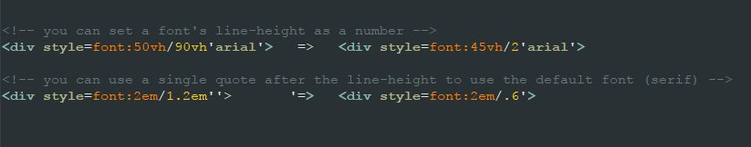

<br><br><hr><br>

<h3>Bonuses</h3>

<blockquote class="twitter-tweet" data-conversation="none" data-lang="fr"><p lang="en" dir="ltr"><a href="https://twitter.com/hashtag/golfctober?src=hash&amp;ref_src=twsrc%5Etfw">#golfctober</a> bonus 1:<br>print all unicode characters in 57b!<a href="https://t.co/DodHniPmkS">https://t.co/DodHniPmkS</a><br> setInterval(`document.body.innerHTML+=&quot;&lt;wbr&gt;&amp;#&quot;+i++`,i=0) <a href="https://t.co/MqRw1USxZJ">pic.twitter.com/MqRw1USxZJ</a></p>&mdash; xem 🔵‏ (@MaximeEuziere) <a href="https://twitter.com/MaximeEuziere/status/925668550810927105?ref_src=twsrc%5Etfw">1 novembre 2017</a></blockquote>
<script async src="https://platform.twitter.com/widgets.js" charset="utf-8"></script>
<blockquote class="twitter-tweet" data-conversation="none" data-lang="fr"><p lang="en" dir="ltr"><a href="https://twitter.com/hashtag/golfctober?src=hash&amp;ref_src=twsrc%5Etfw">#golfctober</a> bonus 5:<br>nanoid golfed by <a href="https://twitter.com/subzey?ref_src=twsrc%5Etfw">@subzey</a> in 106b<br>(+ some gzip optimizations explained on his twitter timeline)<a href="https://t.co/AhLycp0m1x">https://t.co/AhLycp0m1x</a></p>&mdash; xem 🔵‏ (@MaximeEuziere) <a href="https://twitter.com/MaximeEuziere/status/925749938641883138?ref_src=twsrc%5Etfw">1 novembre 2017</a></blockquote>
<script async src="https://platform.twitter.com/widgets.js" charset="utf-8"></script>
<blockquote class="twitter-tweet" data-conversation="none" data-lang="fr"><p lang="en" dir="ltr"><a href="https://twitter.com/hashtag/golfctober?src=hash&amp;ref_src=twsrc%5Etfw">#golfctober</a> bonus 6:<br>A 389b maze-shaped maze generator: <a href="https://t.co/ZQk45vxLo2">https://t.co/ZQk45vxLo2</a><br>and a 319b maze solver: <a href="https://t.co/w5UjoDBybE">https://t.co/w5UjoDBybE</a><br>by <a href="https://twitter.com/aemkei?ref_src=twsrc%5Etfw">@aemkei</a> <a href="https://t.co/T61ogWxRwE">pic.twitter.com/T61ogWxRwE</a></p>&mdash; xem 🔵‏ (@MaximeEuziere) <a href="https://twitter.com/MaximeEuziere/status/925752045155635200?ref_src=twsrc%5Etfw">1 novembre 2017</a></blockquote>
<script async src="https://platform.twitter.com/widgets.js" charset="utf-8"></script>

<br><br><hr><br>

<p>To finish, there's a faux-ami golfing trick that we thought we had discovered earlier this month: <a href="http://jsfiddle.net/mrf6m8ta/">leaving the last HTML tag unclosed</a>.
<p>It works on jsfiddle because JSfiddle adds a lot of stuff at the end of your HTML code, which gets merged with your unclosed tag without bad consequences, but in reality, in a standalone demo, it's just broken.

<br><br><hr><br>

Cheers!
<br>
xem & the team!
</div>


<div class=section id=js13k17>
<style>
#js13k17 img { border: 2px solid #888; margin-top: 5px; }
</style>
<h2>JS13kGames 2017 making-of: LOSSST</h2>
<h3>july-september 2017</h3>
<p style=text-align:center><iframe style=width:95% width=600 height=400 src="https://www.youtube.com/embed/ynh-eJVKGAw?showinfo=0&controls=0" frameborder="0" allowfullscreen></iframe>
<br style=clear:both>
<hr>
<br>
<h3>TL;DR</h3>
<p>
<ul>
<li>This post explains in detail the development of LOSSST, and contains spoilers about the game's content. It's recommended to play the game first!</a>
<li>You can play the game here: <a href="http://js13kgames.com/entries/lossst">LOSSST on JS13KGAMES</a>
<li>You can see all the bonuses: <a href="https://xem.github.io/JS13k17/bonus">HERE</a>
<li>You can see the game's source code here: <a href="https://github.com/xem/JS13k17">LOSSST on GITHUB</a>
<li>And don't forget to <a href="https://twitter.com/MaximeEuziere/status/907913678145679361">RETWEET</a>!
<li>LOSSST was ranked <b>#2 on desktop, #2 in community vote, #1 on Twitter and #1 on mobile!</b> (out of 254 games!)
<li>See all the winners <a href="http://2017.js13kgames.com/#winners">HERE</a>!
</ul>
<br>
<hr>
<br>
<h3>Introduction</h3>
<p><a href="http://js13kgames.com/">JS13kgames</a> is certainly the most important game jam for code golfers every year, and I wouldn't miss it for any reason!
<p>
<ul>
<li>In 2014, my game <a href="http://js13kgames.com/entries/alchemixer">AlcheMixer</a> was ranked 72th on desktop and our team entry <a href="http://js13kgames.com/entries/quintessence">Quintessence</a> 23th on desktop and 8th on mobile!
<li>In 2015, my game <a href="http://js13kgames.com/entries/geoquiz">GeoQuiz</a> was ranked 12th on desktop and 18th in the community awards (and it's now available <a href="http://xem.github.io/JS13k15/mobile/">on all devices</a>!).
<li>Last year, my game <a href="http://js13kgames.com/entries/super-chrono-portal-maker">Super Chrono Portal Maker</a> was ranked 3rd on desktop and 2nd in the community awards,<br>and our team entry <a href="http://js13kgames.com/entries/26-games-in-1">26 games in 1</a> was awarded the "super special prize", and was ranked 10th in the community awards.
<li>All these games (and LOSSST) figure in <a href="https://twitter.com/MaximeEuziere/status/921402564612182016">the 500 most visited pages of JS13kGames.com</a> since it opened!
</ul>
<p>This progression makes me want to build something even better and bigger every year!
<p>This year, I decided to make a game that uses emoji and CSS3D, like I did for my JS1k 2017 entry <a href='https://github.com/xem/1karrot/'>Can I haz 1Karrot?</a>. It'll be a game for desktop and mobile. I also want to include a bit of storytelling, a few cinematics and exploration phases between each gameplay session, and if possible, different ambiances. I want it to be speedrunnable. I want a WOW effect when people launch it. Also, I'll try to fill the whole 13kb with HTML, CSS and JS code only. No images, no kilobytes of binary data, only code! It'll be my biggest solo project (in terms of lines of code, hours of work and also in terms of thought) since Super Chrono Portal Maker... and maybe this year it'll be so big that I'll really have to golf it in less than 13kb at the end! That would be cool.
<br>
<br>
<hr>
<br>
<h3>Preparation</h3>
<p>Since last JS13k, I've listed a dozen game concepts on paper (mostly puzzle or reflection games, because that's the genre I like the most), and waited for this year's theme to see which idea would suit it the most...
<p>I also worked on many CSS3D tools, techniques and prototypes, to cite a few:
<ul>
<li>A mini <a href="https://twitter.com/MaximeEuziere/status/868485687263277056">Portal clone in CSS3D</a>
<br>
<li><a href="https://github.com/xem/3D-level-editor">3D-level-editor</a>, a CSS3D scene editor allowing to place shapes, sprites, and controlling the camera, including switching from 3D view to 2D isometric view, like in the game Fez (I live-tweeted the progress <a href="https://twitter.com/MaximeEuziere/status/876077765916860416">here</a>).
<br>
<li>A prototype of <a href="https://twitter.com/MaximeEuziere/status/891185716276940800">controllable cube in 3D</a> (also tweeted <a href="https://twitter.com/MaximeEuziere/status/891185716276940800">here</a>)
<br>
<li>A technique allowing to <a href="https://twitter.com/MaximeEuziere/status/891770683365220353">render a CSS3D cube of any size</a> by editing a single CSS variable.
<br>
<br>
<br>(Related: I discovered that scale(.1) is not enough to resize a CSS3D object, <a href="https://twitter.com/MaximeEuziere/status/893757285008379904">scaleZ(.1) is also needed</a>)
<li>A technique allowing to generate <a href="https://twitter.com/MaximeEuziere/status/892293325738455040">emoji shadows in pure CSS</a> (based on <a href="https://codepen.io/xem/pen/aJpaQo">this pen</a>).
<br>
<li>I tweeted <a href="https://twitter.com/MaximeEuziere/status/883044404453294080">a sub-140b JS game framework</a> that seems to have helped some folks to kickstart their game project this year.
<li>I also wrote about how to make CSS3D games in <a href="http://xem.github.io/articles/#css3d">this blog post</a>, along with <a href="https://github.com/xem/CSS3Dprototypes">these Mario Kart prototypes</a>, and completed it with <a href="http://xem.github.io/articles/#js1k2017">this blog post</a> where I explain in detail the making of my JS1k entry "Can I haz 1Karrot".
<br>
<li>And only 3 hours before the start of the compo, I made a <a href="//github.com/xem/miniMusic">tiny visual music editor</a> that lets you draw and export any melody with a JS player as small as 150 bytes.
<br>
</ul>
<p>Finally, I took 2 weeks of holidays to be able to work on this entry as much as I wanted!
<br>
<br>
<hr>
<br>
<h3>Week 1</h3>

<h3>The idea</h3>

<p>When the theme was announced (<b>Lost</b>), I picked an idea in my list.
<p>It'll be a game loosely inspired by these japanese games where people need to pass through holes in moving walls.
<p>Instead of humans, the game will feature a snake made of (CSS3D) cubes.
<p>The 3D snake is also an hommage to this extraordinary mobile game called Snaky Snake (free on <a href="https://play.google.com/store/apps/details?id=com.nicoplvgames.snakysnake">Android</a> / <a href="https://itunes.apple.com/us/app/snaky-snake-the-spherical-snake/id1255560499?mt=8">iOS</a>), and there'll be a little influence of the games The Witness and Polarium DS too (but it'll still be completely original!)
<p>Instead of going through moving walls, the snake will enter a series of puzzles in which it has to fit more and more complex shapes, first in 2D, then with wrap-around, and finally in 3D.
<p> I really like this concept because I've never seen it before in a video game, it's super simple to understand and use, and it allows a big variety of puzzles, from very simple to very complex.

<p>The theme "Lost" will be part of the game's scenario: the game will be labyrinthic, and the hero (the snake) has to find his kid. I made a little intro cinematic with animated emoji eyes, but I'll need to improve it later.

<p>

<p><b>Sketches!</b>

<p>During this week, I sketched on paper most of the game's puzzles, as well as a basic storyboard and a lot of notes. If all goes well, the game will contain about 80 puzzles and a puzzle editor.

<p>

<p><b>First, a puzzle editor!</b>

<p>During this first week, I focused on the development of a good-looking puzzle editor. The first goal of this tool is to easily create all the puzzles of the game, but also to be included as a bonus, so people can create and exchange custom levels on social networks.

<p>It's made in HTML, all the sizes are in "vh" units to make it responsive and playable on vertical screens, and the background colors (including the sun) are made of radial gradients. The snake's shadow is made of semi-transparent squares below each cube, and its head is stylized with Unicode / Emoji characters<br>( Y, ‿, 👀 ).

<p>Here's the basic feature where you can set the grid's and snake's size, draw a 2D puzzle on the ground, solve it with the arrow keys and share it as an URL:

<p>

<p>In the second group of puzzles, you can wrap from left to right and from top to bottom, a la Pac-Man:

<p>

<p>In the last group of puzzles, you can move in the 3 dimensions, first to reproduce patterns drawn on the vertical wall:

<p>

<p>Then you must match both grids (the wall and the ground) in 3D:

<p>

<p>And at the end, you have to match both grids, in 3D, and with wraps:

<p>

<p>The checkboxes interactions (to enable or disable the ground, the wall or the wraps) are made in pure CSS, with rules like that:

<pre class=code>/* Hide all cells */
.cell {
  opacity: 0;
}

/* Show ground/wall cells if ground/wall checkboxes are enabled */
#ground:checked ~ .puzzle .cell,
#wall:checked ~ .puzzle .cell {
  opacity: 1;
}

/* Show wrap surfaces if wrap checkbox is enabled */
#wrap:checked ~ .puzzle .wrap > div {
  background: rgba(200,200,200,.25);
}
</pre>

<p>Wrap surfaces have the CSS property <b>pointer-events: none</b>, allowing to draw the puzzles even if they're in the middle.

<p>As you can see in the previous images, I also implemented more boring (but essential) things, like:
<ul>
<li>The ability to resize the grid and the snake, edit/test the puzzle, reset everything and export the puzzle as an url. (Ex: <b>"http://(game-url)/#5,5,1,,1000010000111001110011111"</b>). Hopefully this compact notation will allow to include all the built-in levels in the game files...
<li>when playing, the cells coloring in red and green according to the movements of the snake, and many tests are performed to check if a puzzle is solved,
<li>the collision checks to avoid going in a place that already contains a snake's cube (but allow to take the place of the very last cube, because when the head of the snake will move there, the last cube will move away, freeing that spot!),
<li>prevent the 3D snake from going below the ground (unless the wrap is enabled of course, because that actually makes it go upward),
<li>disable keyboard inputs during the snake's transition,
<li>and enable warping only for the cubes that try to get out of the puzzle, but not on the cubes that haven't entered the puzzle yet.
</ul>

<p><b>Screw you, Firefox!</b>

<p>The most complicated task this week has been to debug Firefox. Firefox (on desktop) is super bad with CSS3D. It got a bit better in april 2017 by allowing more than 100 CSS3D elements to appear at the same time in a page, but they still haven't fixed (and they may never fix) their z-ordering and CSS3D intersections (as you can see <a href="http://jsfiddle.net/yNfQX/21/">here</a>).
<p>I spent hours ordering and reordering the elements in my page to have the best result possible, and added little offsets everywhere to ensure that two shapes never intersect each other. This fixed the most important problems (for example in that gif), but there are still a lot of glitches that I can't fix yet, like the cube's faces that behave normally when the "camera" moves, and disappear randomly as soon as the scene is still:


<p>

<p>But in general, in order to have the best result possible (at least on Firefox), the secret is to organize your DOM such as the first elements hide the last ones, or appear in front of them. Sort of doing the z-ordering manually.

<p>I also noticed that most of the glitches that remain on Firefox disappear when my browser is not in fullscreen. Weird.

<p>Anyway, on Webkit it's perfect, so let's stop losing time on this issue for now, there's a game to make!

<p>As in every big project, it took me quite a lot of time to find a good way to organize my code and my files to work properly. At the end of the first week, everything is still chaotic... 

<p>Anyway, the byte count is currently 19.5kb (commented and uncompressed), and only 3.4kb (not golfed, but minified and zipped).

<p>At first I thought <a href="https://babeljs.io/repl">BabelJS</a> (and its Babili/ES2017 presets) was the new Holy Grail of JS minification, but no! The slow and ugly <a href="https://closure-compiler.appspot.com/home">Google Closure compiler</a>, even if it outputs only ES5 code, is still the best compressor for JS code out there! (its output is around 3% smaller than BabelJS's, and ES5 ensures a better compatibility with older or bad browsers, like the ones on iOS, so it's win-win)

<p>I also thought of a few melodies that may be played in the different sections of the game. We'll see that later.

<br>
<br>
<hr style=clear:both>
<br>
<h3>Week 2</h3>

<p>Let's start by fixing a few boring details. First, the controls. I've tried many configuration and finally implemented the one that seems the most natural: arrow keys to move forward, backward, left and right (relative to the camera), shift to go upward, ctrl to go downward. I won't provide a way to just "look up", "look down" like in the moving cube prototype. On mobile, there will be buttons on the screen to simulate these 6 keys.

<p>Another important fix is to make the wraps much clearer visually. Instead of transitioning to the other side of the level, the cubes can now leave the level, disappear, reappear on the other side, and then transition to the right place. Easier said than done, it took me an entire day and a headache to get this result:

<p>

<p>The code used to do this animation is super dirty but it'll be rewritten many times during the compo.

<p>And while we're talking of little details, don't forget to hide the snake's shadows when its cubes are not touching the ground!
<p>

<br><br>

<p><b>The hub (and screw you, Chrome!)</b>

<p>Instead of making a game containing only a list of puzzles, I decided to make a "hub", a big room where the game starts and from which the character (the snake) can evolve and access all the puzzles, editor, etc. Though, I soon realized that this hub can't be too big, because on my computer, Chrome crops the backgrounds of CSS3D elements when they exceed a size of about 32k pixels squared. (Ex: this green div measures 900vh * 900vh, and these circles are placed at its center. Chrome seems to crop everything that exceeds ~6500px in width and height).


<p>There's another issue I encountered on Chrome on my laptop: localStorage becomes locked (impossible to read or write) when my PC gets back from hibernation mode. It took me a while to understand that. I searched a bug in my code for a long time, and finally everything got back to normal when I closed and restarted Chrome. (NB: closing a tab is not enough to fix that. All chrome tabs must be killed!)

<p>A last issue specific to Chrome Windows (that I already encountered during JS1k) is that the emoji lose their fill colors when they exceed a certain computed size <i>in pixels</i>. Here, the sizes are in vh, so if I have a screen too big, or a zoom too important, they can glitch quite randomly when the window is resized:

<p>

<p>On Mac it's even worse, the trees don't appear at all:

<p>

<p>During all the month of the jam, I semi-fixed these issues as well as I could, by changing the camera's zoom, angle, perspective, and by making the trees smaller, but there was no miracle solution... until the very last days! We'll talk about it later. 

<p>An important refactoring allowed me to use the same code for controlling the snake in the editor's tests and the "real" game.

<p>The main difference with the puzzle editor is that here, the snake first gets out of the ground, can move but doesn't have a puzzle to solve (yet), and the camera must follow it around the scene.

<p>I rewrote the code of the trees and tree shadows to appear at precise coordinates and with solid hitboxes. The trees are slightly slanted backward from the camera (when I first used this trick, I discovered it was <a href="https://twitter.com/maximeeuziere/status/835607608971128832">also used in Super Mario 64!</a>).
<p>I also added a few custom transitions and timeouts on the scene and the snake's head to make a mini opening cinematic. Here's a first preview (with camera rotations to show how the trees are tilted backward):

<p>

<p><b>Eat apples, grow longer, and move back!</b>

<p>The snake will have to eat apples to get longer, and thus, solve more and more difficult puzzles. But by doing so, two issues become apparent:
<ul>
<li>If a cube is added at the tail of the snake, where should it be placed?
<li>If the snake reaches a length of 9 cubes or more, how can we avoid it to get stuck like that?
</ul>
<p> 
<p>There's a single answer to these two issues: I have to record all the positions of the snake's head since the beginning of the game. By doing so, I can place any new cube where the tail was one move ago, and add a button (Alt ot backspace) to let the snake get back to any previous position when it's stuck.
<p>Here's the result after one day of refactoring:

<p>

<p>Side note: my error messages are still very stylish in CSS3D!

<p>

<p>It took me a long time to wonder if a collision between the head and the tail could occur when the snake goes back to a previous position, or when it eats an apple. Turns out, it can't happen. Believe me, I tried hard!

<p><b>Doors, rooms... and autosaves?</b>

<p>To ease the progression of the player, I wanted to implement doors and paths to travel from a room to another. The doors will open if the snake approaches it with a sufficient length, or if it has solved all the puzzles in the room.

<p>The tests (in JS) and animations (in CSS) to open the door were pretty easy (even it it had to be rewritten a few times to work correctly in the four directions), and going in a new room simply consists of loading a different HTML page, but this feature still required a big refactoring to maintain the snake's length and all the doors and apples states when we travel between rooms, and to make the snake spawn at the right place in the new room every time it goes through a door. All these pieces of data are stored in the browser's localStorage. This has the advantage to be persistent between pages, but it also constitutes an automatic save and load feature for when the player quits the game and relaunches it later.

<p>I actually didn't intend to implement autosave/autoload so soon, nor to implement it like that, but this use of localStorage brought it very naturally and basically for free. Awesome!

<p>After a big effort of refactoring, each room just needs to declare the positions and behaviors of its emoji (trees, apples, ...), doors, paths and puzzles, and the game's engine will just do the rest.

<p>

<p>Well... after thinking about it a little, loading a different HTML page for each room turned out to be kinda dirty, and caused two issues: when the player loads his/her save data, he/she will land on index.html (the hub), instead of the last visited room. And the other issue is for the music: it'll stop playing and restart from start when the page changes, and I don't want that. So instead of loading a different page when the snake goes through a door, I prefer to reset and redraw everything in the same page (index.html). This page will load the hub by default, or the last visited room if it's saved in localStorage, but it will never reset the music. As a bonus, having a single, generic HTML page saves some hundred bytes in total!

<p>This refactoring wasn't as easy as I thought. At some point, when I passed a door, the result was a mix of the last room and the new room!

<p>

<p>But this was fixed quickly (I forgot to empty the objects container before drawing a new room). And with this new organization, I also have camera transitions from a room to the other for free. Cool!

<p><b>The first 2D puzzles</b>

<p>A new challenge appears: display many puzzles in a room and let the player solve them in any order. Moreover, the camera must focus on the puzzle's grid while the snake is inside, and the game engine must show the solved state of every puzzle and save it in localStorage (in order to avoid solving a puzzle multiple times). Finally, the snake can leave a puzzle before it finishes solving it.

<p>

<p>I finished this week by adding apples animations, higher platforms, and explaining how to backtrack and open doors in the hub:

<p>

<p>I'm quite happy with this little effect: the platform on the left is not rectangular: it's made of many little cubes, but each cube has a computed background and background-position, which gives an homogeneous radial gradient to the whole surface:
<br>(The performance on Firefox is so terrible that I only kept a little portion of the platform in the final game, but it still has this fancy radial gradient!)

<p>

<p>Current progress: 1783 lines of code, 45.6kb uncompressed and commented, 7.19kb minified and zipped.

<br>
<br>
<hr>
<br>

<h3>Week 3</h3>


<p><b>All the 2D puzzles!</b>

<p>After showing the game to two friends, I realized that my 2D puzzles were quite easy and risked to be annoying. So when I made the three other 2D puzzle rooms, I discarded most of my original puzzles designs and replaced them with most difficult ones.
<p>I originally planned to have 4 x 6 2D puzzles, but to spice things up a little, I removed a room completely, and made more apples appear before each new room, which makes six 2D puzzles for a snake of length 8, six for length 11 and six for length 13. I also added cubes here and there to make the puzzles solutions less obvious.
<p>The rooms are arranged in circle to easily return to the hub when they're completed.

<p>

<p>I threw away a lot of puzzles, but for a good cause: I want the players (and the judges) to quickly discover the two other sections of the game!

<p>Budget-wise, I'm quite happy that these 3 rooms and 18 puzzles only add 600b to my zip (even though they add nearly 4kb in the source code). Of course they need more decoration but it's alredy a nice compression.

<p><b>Cleanup!</b>

<p>To continue coding in good conditions, let's clean up all the dead/bad code that piled up during the last two weeks, and organize it such as all the variables names get automatically reduced to 1 char when passed into Closure Compiler.

<p>This cleanup made the project much cleaner, and made the zip 1kb smaller! Yay!

<p><b>God mode!</b>

<p>When you make a game with a long intro and progression, you quickly get annoyed when you have to replay from the beginning to arrive at a certain point. In that case I highly recommend to create a "god mode": a secret menu containing shortcuts to different places or states in the game. Here's mine:

<p>

<p>Adding these shortcuts to load each room with the corresponding snake length, and buttons to rotate the camera or erase all saved data took only a few minutes and really changed my life!

<p><b>Hints</b>

<p>Some beta-testers are very confused about the gameplay (how to backtrack, how apples/doors/puzzles work, etc...), so let's take some time to add hints explaining how the game works. These signboards only appear when the snake has a given size, allowing to display different messages at the start of the game, and later.

<p>

<p>When I added these hints in the game, I realized something with CSS3D sprites (eg. the trees, and apples, and now the hints). They won't appear at the right place if you set this in their CSS: (imagine that W, H, L and T represent respectively a width, a height, a left offset and a top offset in vh)
<pre class=code>width: W;
height: H;
left: L;
top: T;
transform-origin: 50% 100%;
transform: rotateX(-90deg);</pre>

<p>This doesn't work fine because the "top" property will set an Y offset to the top of the sprite before it's rotated along the X axis. After fiddling a little, I discovered that the good way to do it is:

<pre class=code>width: W;
height: H;
left: L;
bottom: 0;
transform-origin: 50% 100%;
transform: translateY(T) rotateX(-90deg);</pre>

<p>When you do it this way, the point at the bottom center of the sprite is moved at the exact coordinates L:T in the scene, thanks to the "bottom: 0" that makes it start exactly from the top of the scene!

<p><b>Access to the editor</b>

<p>Now that the 2D puzzles are done, the hub allows to access the puzzle editor to make other 2D puzzles. (wraps and 3D options are hidden for now.)

<p>

<p><b>The wrap area</b>

<p>The second area of the game contains all the 2D puzzles with wrap, and are playable with a snake of length 14, then 15, then 16 then 20.
<p>It starts with a little hub explaining the principle of the wrap: a wall blocks the way and a puzzle with shiny sides invites the player to follow the black path and arrive to the other side.

<p>

<p>Everyone likes this tutorial puzzle. It shows with extreme simplicity how wraps work, and also brings a little "wow" effect.

<p>One particularity of the wrap puzzles is that the snake is trapped inside the shiny walls until it solves the puzzles. It can also backtrack many times to return to a place out of the puzzle, but beta testers told me they wanted to reset a puzzle entirely instead of backtracking, so I added a reset feature when we press the key "R".

<p>

<p>The snake can then go into a room containing 12 puzzles. The first room was very complicated to design because its puzzles form a big easter egg, that I won't spoil here. With the help of the beta-testers, I managed to enhance the puzzles and optimize this room so that the easter-egg is more easy to see. If you already saw it, you can see a before/after picture <a href="images/js13k17/easteregg.png" target=_blank>here</a>, and the final version with extra highlight <a href="images/js13k17/easteregg.gif" target=_blank>here</a>. It's indeed much clearer like that!

<p>Then, there are just 2 puzzles of size 16 and 2 puzzles of size 20, because of a sudden lack of ideas. I spent hours trying to design other puzzles for these rooms but all of them were too easy or didn't have a solution, so it's a sign that it's time to move to something else!

<p>

<p>When these rooms are completed, the puzzle editor gets a new option to draw 2D wrap puzzles.


<p>However, beta tests showed that the difficulty curve was too steep between the tutorial  and the 12 first wrap puzzles, so I added an extra room with 4 "easy" wrap puzzles, just after the tutorial, and it seems to be very helpful indeed.

<p>

<p>So let's start the final part of the game!

<p><b>Preparing for the 3D puzzles</b>

<p>The 3D puzzles require a new ability (move up and down), and less cubes (at least 6). But our current snake is now 21 cubes long and doesn't have the ability to move up and down. So it's the good time to find the lost kid snake, that will solve the last puzzles, in 3D. The switch has been quite complex to implement, but it's done!

<p>

<p>Basically, the orange snake becomes a pile of immobile CSS3D cubes (but keeps its hitboxes by having all its cubes' coordinates added to the list of ground cubes), a flag (called "son") is set to true, all the snake's data structures are reset, and the function that resets the snake is called. This function is modified to create a new snake, and let the player control it when the "son" flag is set to 1. The flag is also saved in localStorage, to let the player continue playing with this snake when a savefile is loaded.
<br>

<p><b>Gravity</b>

<p>Our little snake can go up and down, but it must not fly! So I added a big bunch of code to test if all the parts of the snake are on the floor or on a cube, and if they're not, all the snake's cubes get instantly lowered.

<p>

<p>If the snake backtracks just after being lowered by the gravity, some of its parts can glitch a little because their "history" has been rewritten, but I won't fix that, it's too complex. Let's say it's an hommage to last year's "glitch" theme...

<p>Fast-forward a few days: this gravity system caused me a big headache in a particular edge case that has some chances to happen during a normal gameplay: when the snake is entering a 3D puzzle by the top side, and falls inside the puzzle because it's not tall enough, and if we press R to quit the puzzle, the snake gets stuck in an infinite loop of quitting the puzzle and falling inside it, and it can't move anymore. Eventually, my (dirty) fix was to put a try/catch around the falling code and if it detects an infinite loop, the game rollbacks for a number of moves equal to the snake's size. It'll generally land a few steps before the entrance of the puzzle and won't be stuck anymore. And besides a little freeze, the result is practically unnoticeable! Ex:

<p>


<p>And that's the end of week 3!

<p><p>Current progress: 39 puzzles, 2448 lines of code, 63.3kb uncompressed and commented, 8.49kb minified and zipped.

<p>A word from my fellow musician Anders Kaare maybe?...

<p>"I'm really busy at the moment (secret project!) but if I can write the music as quickly as usual I can probably squeeze you in :)"

<p>A hypothetical music for the very last days of the compo, just like the previous years :D ... Quite scary! 

<br>
<br>
<hr>
<br>

<h3>Week 4</h3>

<p><b>The 3D area</b>

<p>The 3D puzzles, that must be solved with the little snake, required a few days to design (designing 2D puzzles was hard, but designing 3D puzzles is super hard!). And yes, still on paper, because I'm more inspired when I'm outside.

<p>

<p>

<p>In the end there will be about 40 of them, including wall-only puzzles, wall+ground puzzles and wall+ground+wrap puzzles, for a snake of length 6 to length 20. This represent a half of the game! But the first ones are very easy, to avoid discouraging the players (but some of them will be cut and included in the game's bonus, to avoid annoying people too much). Here's how the 3D rooms look like (wip pictures):

<p>

<p>By chance, all these new levels compress very well and as far as I tested, they won't add much more than 1kb in my zip. So, plenty of room left for the rest!

<p>I designed the last room with a final easter egg, and developped the end cinematic at the same time. (Here's a gif: <a href="images/js13k17/end.gif">spoiler!</a> don't click before playing the game!).

<p><b>Final puzzle editor</b>

<p>After all these puzzles are completed, the final puzzle editor is finally available for the player. I made a few arrangements to make the snake black and able to go up and down only if the vertical wall is enabled, and orange otherwise.

<p>I also prevented the snake from going through the vertical wall of the 3D puzzles, except if the wrap is enabled.

<p>Finally, I ensured that the editor stays fully unlocked even if the players start a new game.

<p>

<p>It's also time to add a level loader and a dedicated room for player-created levels. This room reminds the controls to the player and has a path to return to the "real" game.
(wip: the design was simplified before release)

<p>

<p><b>Unexpected fun with boolean golfing</b>

<p>While I was working on the last puzzle editor and hints improvements, I happened to write two interesting tests, which I had fun trying to simplify with a friend. They looked like this:

<pre class=code>if((f && mousedown) || !f){ ... }

if((son && hints[i][5]) || (!son && !hints[i][5])){ ... }</pre>

<p>Which can be simplified to:

<pre class=code>if((A & B) || !A) { ... }

if((A & B) || (!A && !B) { ... }</pre>

<p>For the first one we had no idea, but we drew a truth table before realizing that if A is false, it's okay, and otherwise it's necessarily true so we don't have to repeat it when we test B. So, the golfed version is: 

<pre class=code>if(!A || B){ ... }</pre>

<p>For the second one, it was a bit harder. When we drew the truth table, nothing was obvious, except that it was basically the opposite of a XOR. So I tried an assumption: what if it was a XAND? After a quick check on Stack Overflow, it appeared that there's actually no such thing as "XAND" (ha ha! silly me), and what we were looking for was actually a NXOR. Hey, not far! How to do a NXOR in JS, you ask? Easy!

<pre class=code>if(!(A ^ B)){ ... }</pre>

<p>That was a fun pause! Let's go back to work.

<p><b>Final name</b>

<p>
One idea of title for the game was "pattern-alism", referencing both the patterns constituting the puzzles, and the fact that the father snake must find his son. But it's too complicated.
<p>I wanted to find a pun like "Lost in translations" as a reference to all the CSS3D translate's in my code, or "SNAKE un au-revoir", but they would have been too much geeky/private jokes, so let's go with LOSSST instead.
<br>
At least it respects the theme, and it's a reference to the snakes in the game!

<p><b>Main menu, mobile controls... and screw you, localStorage!</b>

<p>I had honestly no big inspiration fot the title screen so I made something with an exaggerated 3D rotation and a solid text-shadow as a wink to the TV show "LOST".

<p>

<p>It took a few days to have the main menu and mobile controls work properly, and to adapt all the signposts to the device used (keyboard for desktop, buttons for mobile).

<p>Here are some traps that made me lose quite a lot of time:
<ul>
<li>Disable pinch-zoom, and other history-related touch events, with this meta tag:
<pre class=code>&lt;meta name=viewport content="width=device-width, user-scalable=no"></pre>
<lu>Disable tap-highlight (making the whole screen blue after each touch event) with the help of a bunch of annoying CSS rules:
<pre class=code>* {
  -webkit-touch-callout: none;
  -webkit-user-select: none;
  -moz-user-select: none;
  user-select: none;
  -webkit-tap-highlight-color: rgba(0,0,0,0); /* old webkit hack */
  -webkit-tap-highlight-color: transparent; /* new webkit hack */
}</pre>
<li>Mobile fullscreen: with the help of Twitter friends, I <a href="https://twitter.com/MaximeEuziere/status/903222067490955265">found a way to do it</a>, but finally I abandoned the idea of forcing fullscreen display on mobile because of the lack of iOS support for the fullscreen API, and the need to save bytes. 
<li>localStorage does not write or delete entries instantly. If you create or delete a localStorage key, always have local variables updated at the same time, because when you need them later, localStorage may not have updated itself yet, and there are chances it won't contain what you think it contains.
<li>When you press a button on mobile, there's no recurrent event being fired, telling you that the button is still being pressed, contrary to keyboard keys, firing keypress events all the time. To make long presses on directional buttons behave like long presses on real keys, the trick is to start a setInterval on touchstart, calling the desired function at each loop, and stop it on touchend. But on touchend, it must be stopped after a certain delay, or else it won't loop once if you just tap quiclky the button! And finally, to avoid having many uncancellable intervals by tapping the buttons too fast, we have to cancel any previous loop when a button is touched. Here's how it looks in my code (pro tip: touchstart and touchend trigger the real keyboard events):
<pre class=code>
touchstart = (n) => {

  // Cancel previous loop (if any)
  if(touchintervals[n])clearInterval(touchintervals[n]);

  // call onkeydown immediately
  onkeydown({which:"+n+"});

  // And loop every 150ms
  touchintervals[n] = setInterval("onkeydown({which:"+n+"})",150);
};

touchend = (n) => {
  // Clear loop after 150ms
  setTimeout("clearInterval(touchintervals["+n+"]);onkeyup()",150);
}
</pre>

</ul>

<p>The mobile mode has quite a lot of buttons (to move in all directions, backtrack, exit puzzles and move the camera), but to avoid shocking the player with this ton of buttons, I made them appear progressively, when the player reaches a zone where these buttons become necessary.

<p>

<p><b>OCD challenges</b>

<p>For OCD players, I added a move counter and a time counter, that are able to save and resume their states when the game is played in multiple sessions. The players are invited to beat my best scores and create puzzles when they finish the game

<p>

<p>Current zip size: 18.5kb. WHAAAAT? After a few hours stressfully wondering how to lose weight, and make room for the music, I realized I had actually zipped my minified JS plus my unnecessary, unminified JS. Without that dumb mistake, the zip is below 11.5kb. Oof!

<p><b>Beta-test</b>

<p>

<p>This year I have the chance to have a lot of volunteers for testing my game. I gathered a lot of feedback by watching them play IRL, or by interviewing them when they live in other countries.
<ul>
<li>Tommy Hodgins
<li>Adrien Guéret
<li>Julien Laville
<li>Odilon Ghedin
<li>Vincent Vidal
<li>Lucas Dupuy
<li>Victoire Yau
<li>Pierre Vignaux
<li>Jules Baratoux
<li>Nicolas Pierre-Loti-Viaud
<li>Anders Kaare
<li>Matthew Mccord
<li>Ryan Malm
<li>Veubeke
<li>The_coder
<li>Theprogrammerjack
<li>Nicoloz
<li>Subzey
<li>Antonio Salvati
<li>My parents
</ul> 
<p>All went very well, a lot of puzzles, hints and features were added thanks to them. You guys rock!

<p>One sad note though (but it's my fault): almost no one reads my signposts. Most of the testers wondered how to eat the second apple without getting stuck. There's a signpost a few centimeters ahead that tells to press Alt to backtrack, but it's still not clear enough. Meh... I don't know what else I can do if people don't wanna read anything!

<p><b>Decoration</b>

<p>For decoration, there was not much room available, so I just added an emoji animal in each room, and applied a little CSS animation to the animals and the apples. It's a little detail but it makes the world less static.

<p>When I added the animals, I realized that all my emoji shadows were wrong: they actually needed an extra "scaleX(-1)" and a bigger angle to be symmetrical to the actual emoji. Here are the "emoji shadows 2.0":

<p>

<p><b>Browsers, OS, Devices</b>

<p>To avoid nasty visual glitches, I decided to degrade the visual quality on Firefox, MacOS and mobiles, by hiding all the shadows in the game (except the snake shadows).

<p>I also made two versions of the intro (for Firefox and for the others: on Firefox the snake waits the end of the camera movement to get its head out of the ground, otherwise it's all glitchy) and two versions of the easter-egg animations (less zoomed on mobile and more zoomed on desktop, to ensure that everything is visible even if the mobile is held in portrait mode).

<p>Moreover, on MacOS, the emoji have line-heights different than all the other OS's, so I added specific hacks to have the trees, apples and animals actually touch the ground.

<p>Current size: 87.8kb unminified, 13.1kb minified and zipped. There are a few days left to add music and actually golf the code! Yay!

<p><b>Trees fix!</b>

<p>Remember my problem of disappearing trees? Webkit browsers (Chrome, Safari, Android) don't like to draw trees exceeding a certain font-size <i>in pixels</i>, so I finally found the right solution. I made all the elements of my game almost two times smaller, and made the camera two times closer to the scene to compensate. It required a lot of edits (in CSS and in JS, especially the cinematics) but it worked like a charm. The trees appear about as big as before, but with a font-size technically two times smaller, they don't glitch anymore!

<p><b>Lose weight!</b>

<p>The first attempt to lose bytes consisted in replacing all my classNames, ids and localStorage keys with one-char variables. It failed miserably (I forgot that in CSS, ids and classnames were case-insensitive, so my ".a" collided with my ".A", my "#a" with my "#A", and same problem for all the rest of the alphabet), so I reverted everything.

<p>New tactic: rewrite my beloved puzzle editor, but much simpler, and reusing all the code of the game engine to resize the grid or move the snake. I also followed the idea of some beta-testers and removed the ability to draw a puzzle completely. Now to make a puzzle, you just have to place the snake as you want on the grid and click "share":

<p>

<p>This editor rewrite saved 900b in my zip. (12.2kb)

<p>(You may wonder why I talked so much about the previous puzzle editor if I removed it from the game... In fact, it's so handy that I decided to included it in the game's bonuses.)

<p>After adding a bit of decoration and byte-consuming visual enhancements (especially for the "shiny wrap walls", the highlighting of the easter-eggs, and spawning a signpost after the first easter-egg to show where the exit is), finishing the puzzle editor, and making the 3D wrap puzzles walls solid after they're completed, nearly 800b were added to the zip size.

<p>After putting all my code in a single file, removing more dead code, and retrying (successfully) to reduce the names of my ids and localStorage keys into 1 or 2 chars, I managed to save plenty of space.

<p>I'm still very close to 13kb... and there's no music yet...

<br>
<br>
<hr>
<br>

<h3>Week 5</h3>

<p><b>Music!</b>

<p>As usual, Anders Kaare saved my life at the end of the last week-end of the compo, and he had a great idea: to play a melody that he composed, but play all the notes one by one, each time the snake moves! That's pretty original and works very well, with a very small overhead. Thanks a lot to him, and to McCoordinator who also kindly offered to make a music for my game. I'm keeping his prototypes and stay in touch for my next games! :D You guys rock too!

<p>Anders shared a few details about how he made the two melodies of the game: (verbatim)

<i>
<ul>
<li>The source code for the songs is here: <a href="https://github.com/sqaxomonophonen/hodgepodge/tree/master/codes/js13kmusic">on Github</a>.
<li>I used <a href="https://www.renoise.com/">Renoise</a> to compose the music. It was unexpectedly nice for the task because [enter] steps through the music just like moving does in the game, so I could verify the music worked with an unsteady tempo, without having to build index.html first.
<li>Renoise's music format is open and XML-based, so I simply wrote Python script that compiles the notes into a JS string (well, initially a JS array), and then some bash scripts to throw the data into index.html.
<li>The Python stuff was salvaged and repurposed from an earlier Ludum Dare entry of mine that also exported/converted Renoise music (<a href="https://github.com/sqaxomonophonen/ld32-drums-of-the-dead">Github</a>).
<li>I also reused the Audio()/base64 stuff we used both this and last year. I thought it would be better for on-demand sound (because you could argue the music is a kind of sound fx), rather than WebAudio API stuff that's better for streaming
</ul>
</i>

<p>To clear things up (or scare you a little more, depending on how you react to dirty hacks explanations), each sound effect in the game, and each note of the melodies, constitutes a specific "wave shape", that is represented with 44100 floating numbers, per second and sent to the speakers.

<p>For example, here are all the samples for the sound that I used to tell that a puzzle is completed, plotted. This ~150ms sound is made of 16000 floating-point samples! (full list <a href="images/js13k17/win.txt">here</a>)

<p>

<p>Of course, all these values are not stored in the game's code, but are computed procedurally, placed in a wav file that is created out of thin air, converted in base64'd and played on-the-fly with an Audio tag.

<pre class=code>
// mkaudio generates samples based on a function passed in parameter, creates a wav file and exposes a "play" method
function mkaudio(fn) {
	var data = [];
	for (var i = 0;;i++) {
		var smp = fn(i);
		if (smp === null) break;
		data.push(smp);
	}
	var l = data.length;
	var l2=l*2;

	var b32 = function (v) {
		var s = 0;
		var b = "";
		for (var i=0; i<4; i++,s+=8) b+=String.fromCharCode((v>>s)&255);
		return b;
	};
	var b16 = function (v) {
		var b = b32(v);
		return b[0]+b[1];
	};
  
	var SR=48e3;
	var b = "RIFF"+b32(l2+36)+"WAVEfmt "+b32(16)+b16(1)+b16(1)+b32(SR)+b32(SR*2)+b16(2)+b16(16)+"data"+b32(l2);
	for (var i in data) b+=b16(data[i]*10e3);
	return new Audio("data:audio/wav;base64,"+btoa(b));
}

P=Math.pow;
S=Math.sin;
function t(i,n) {
	return (n-i)/n;
}

// Here's the "equation" for the win sound
function win(i) {
	var n=1.6e4;
	var c=n/7;
	if (i > n) return null;
	var q=P(t(i,n),2.1);
	return (i < c ? ((i+S(-i/900)*10)&16) : i&13) ?q :-q;
}</pre>

<br>
<p>Demo:
<p><button id=winsound>mkaudio(win).play()</button>

<script>winsound.onclick=()=>{
function mkaudio(fn) {
	var data = [];
	for (var i = 0;;i++) {
		var smp = fn(i);
		if (smp===null) break;
		data.push(smp);
	}
	var l = data.length;
	var l2=l*2;

	var b32 = function (v) {
		var s = 0;
		var b = "";
		for (var i=0; i<4; i++,s+=8) b+=String.fromCharCode((v>>s)&255);
		return b;
	};
	var b16 = function (v) {
		var b = b32(v);
		return b[0]+b[1];
	};
  
	var SR=48e3;
	var b = "RIFF"+b32(l2+36)+"WAVEfmt "+b32(16)+b16(1)+b16(1)+b32(SR)+b32(SR*2)+b16(2)+b16(16)+"data"+b32(l2);
	for (var i in data) b+=b16(data[i]*10e3);
	return new Audio("data:audio/wav;base64,"+btoa(b));
}

P=Math.pow;
S=Math.sin;
function t(i,n) {
	return (n-i)/n;
}

function win(i) {
	var n=1.6e4;
	var c=n/7;
	if (i > n) return null;
	var q=P(t(i,n),2.1);
	return (i < c ? ((i+S(-i/900)*10)&16) : i&13) ?q :-q;
}

mkaudio(win).play();

}</script>

<p>(don't get me wrong, even if I can kinda explain what happens, this code is still black magic for me)

<p>The demo/code of the melodies he sent me during the last sunday of the jam is available <a href="http://veralin.dk/js13k_17.html">here</a>.

<p>By the way, no new sound effects were made this year, I just reused sounds that Anders had made for my 2016 entry (for example, the "win" sound above was used when a coin was collected in the previous game).
 
<p><b>Add stuff, Minify, Golf, Zip, Advzip, Repeat! (and Screw you, Closure Compiler!)</b>

<p>After adding the music and sound effects, and compressing everything, I realized that my zip had reached a size of 13.4kb plus a few bytes. Pretty cool! The music and sounds really create an ambiance in the game and end up taking less than 1/2kb zipped!

<p>However, something less cool occurred. My minified JS code was all buggy, because when Closure Compiler minified my code and renamed all my vars, it didn't rename them in my 44 setTimeout's and 7 setInterval's, in which the JS code was stringified. Ex:
<pre class=code>
var Song = () => { /*...*/ } // This function gets renamed as "A"

setInterval("Song.forward()",500); // After minification, the browsers throw an error saying "Song is not defined"</pre>

<p>Closure Compiler transpiles ES6 to ES5 but doesn't interpret strings passed to setTimeout and setInterval. I didn't know that and it was pretty annoying.

<p>Even if it was a bit late, the solution was to spend a few hours rewriting all my intervals and timeouts using functions instead of strings... The most boring task was to use closures to be able to pass vars to the delayed/repeated functions when they're in for loops. Ex:

<pre class=code>// Before
for(var i in apples){
  if(applecanappear[i]){
    setTimeout('top["apple"'+i+'].className="emoji apple"',800);
  }
}

// After
for(var i in apples){
  if(applecanappear[i]){
    setTimeout(
      function(i){
        return function(){
          top["apple"+i].className="emoji apple"
        }
      }(f),90
    );
  }
}</pre>

<P>Then, with the kind help of @kuvos, @veubeke, @AdrienGueret and @salvan13, I was able to gather 3 different ways to rewrite a "string interval" as a "non-string" interval. They're listed <a href="//jsfiddle.net/f0mbessr/">here</a>.
<br>After a pass in Closure Compiler, two of them are transformed to the same code. The last one becomes a closure. <a href="https://twitter.com/MaximeEuziere/status/907124053802143744">weird</a>. But good to know.

<p>As there was still a lot of bytes to remove, I continued my manual rewriting session, and renamed all the hardcoded classNames and ids as one or 2 chars, by following <a href="https://github.com/xem/JS13k17/blob/gh-pages/dico.txt">this rudimentary dictionary</a>.

<p>After a long rename/debug session, and after dropping a few useless signposts, I managed to fall below 13kb 15h before the deadline, only to realize later in the night that my editor was all broken, once again because of Closure Compiler:
<br>
Closure Compiler renames all vars, even if they're global, and even if they're declared as "top.varname = 1234;". But I still had dozens of places in my code where I had to call a variable by its id in the top object (ex: top["u"]), but Closure Compiler also didn't interpret that correctly. It renamed the original "u" but kept the top["u"] as-is. The solution was to "force" it to not rename these vars that are required in strings, by being more silly than it:

<pre class=code>
// Before
u=r=d=l=s=c=B=0;

// After
window["u"]=window["r"]=window["d"]=window["l"]=window["s"]=window["c"]=window["B"]=0

// Then after mnification, I paste the result in my min.html file, and replace the "after" snippet by the "before" one to save bytes.
</pre>

<p>Last warning: Closure Compiler adds line breaks in minified JS code. This is a good practice for real-life JS code, but for js13kgames, all these line breaks (75 in my case) can and must be removed.

<p><b>Final scare</b>

<p>I submitted my game at 1h40 AM, less than 12h before the deadline, and went to sleep.

<p>The next morning, I saw it online and tried it. All my "return to main menu" links were broken. Turns out, these links had a href="." attribute, and js13kgames.com didn't support that. So I renamed each "." in "index.html", and everything went back to normal after I sent an updated version to Andrzej at 9h30.

<p>Final version of the game, after all the necessary hacks and renames: ~200h of work (including thinking + drawing + coding + beta-testing), 86.1kb commented, 80 global vars (including functions), 3175 lines of code, 41.6kb minified, 13300 bytes zipped and advzipped. Just 12b below the limit!

<p>BTW, If you don't know advzip, it's a zip recompressor that optimizes any zip as strongly as possible. Without it, my final zip would have been over 13.4kb. A real life saver. <a href="https://twitter.com/MaximeEuziere/status/905787255721263105">How to use it</a>.

<p><b>Bonus</b>

<p>During my spare time, I prepared <a href="https://xem.github.io/JS13k17/bonus.html">a bonus page</a>, on my Github repo, where I could put all the levels I didn't include in the game, and all the levels shared on Twitter plus a link to this making-of / my Github / my Itch page, as well as the game credits, and a trailer and a video of my dev speedrun, recorded september 13 at 9h00, just before updating and sending my updated zip to Andrzej!

<br>
<br>
<hr>
<br>

<h3>End of week 5 (mini-conclusion)</h3>

<p>After the release, the game had super nice reviews from a lot of friends and strangers IRL, on Twitter and on Slack. Most of the other contestants really enjoyed the music (maybe because they know how hard it is to make music for a 13kb game, and they don't have the chance to have Anders as a magi-musi-cian).
<p>Some people even told me that they had more fun with the interactive music than with the game itself, heh!
<p>Anders didn't remember the name of the old song that inspired him the second melody of the game, but someone on Twitter <a href="https://www.youtube.com/watch?v=npQUK_OJONA">found it</a>!
<p>I also went into each room of the game and counted all the HTML elements generated by my game's engine, and dumped all the HTML code generated in a single file.
<p>I teased the result with <a href="https://twitter.com/MaximeEuziere/status/908016906732556288">this poll</a>, then revealed the answer <a href="https://twitter.com/MaximeEuziere/status/908401502410211330">here</a>: 7434 elements and 1.26MB of HTML is generated by my 13kb game! How crazy is that?!

<p>So, I'm very happy with this year's game and by the people's reactions. It's the game I wanted to make when I started, and the lack of extra time only prevented me from trying to fix my code for a better result on Firefox, and on Safari Mac / iOS. Meh. These browsers are not ready for so much CSS3D and so many emoji anyway.

<br>
<br>
<hr>
<br>
 
<h3>Week 7 (real conclusion)</h3>

<p>Here we are, two weeks after the end of the jam.

<p><b>More details!</b>

<p>First, let's address a few details that I forgot in the rest of the making-of, or dicovered afterwards:
<ul>
<li>Surprisingly, many contestants didn't know the existence of localStorage and thought the only way to save/recover a game state was through cookies (or maybe cheat codes?). Most didn't even bother making multi-session games. On my side, I used localStorage, and I used it a lot. It may not be obvious, but I use localStorage to save a lot of metadata (desktop / mobile, time counter, moves counter, snake length, snake color, current room, snake position in the room, number of puzzles solved, puzzle editor features unlocked, ...) but I also use it to save the state of each door (open / closed), each apple (appeared / not appeared yet, eaten / not eaten yet), each puzzle (solved / not solved yet) and each mobile button (appeared / not appeared yet), for a total of nearly 200 different persistent items.
<br>
All these keys are deleted when we click "new game", except one: the key that says that the full puzzle editor has been unlocked. All these localStorage keys are prefixed with the string "lossst_", so I can easily delete just my keys, instead of just doing localStorage.clear(), that would also delete the saves of all the other games hosted on js13kgames.com.
<br>
For some reason, sometimes, the browser freezes when you click "new game" after the game over screen, but no JS error appears whatsoever, so the only solution is to kill and restart the browser before continuing. Welp. Who would play that game many times anyway?
<br>
PS: Gheja decided to <a href="https://github.com/gheja/lost13k/commit/b3a5e3f63628d44a1f14c4449a00185e2ff17541">use prefixed keys</a> for his game after reading this making-of, and credit me! Cheers!
<li>Something fun happened when I pasted my JS code in a new, unique index.html file, encoded in UTF-8: most emoji suddenly broke.
<br>
Turns out, my new file didn't contain the famous &lt;meta charset=utf-8> tag, and in order to avoid writing it, I converted my HTML file in "UTF-8 with BOM". This 3-byte prefix is enough to tell the browser to interpret the file in UTF-8 instead of windows-1252.
<br>Later, this BOM also became useless due to Closure Compiler escaping every emoji in the JS source code (ex: "🍎" => "\ud83c\udf4e"). At first sight, it looks like I could have saved a lot of bytes by replacing every escaped emoji with the corresponding glyph, but in reality, I was too lazy, and moreover, it wouldn't have saved such a lot of space, because escaped emoji are in ASCII, and contain a lot of repeated characters (like "\ud..."), which makes their zip compression very efficient, contrary to their 3 or 4-byte equivalent glyph that gets almost no compression at all during gzip... plus the size of the BOM!
<br>
Speaking of emoji, at some point a few developers showed on js13k's slack a spritesheet of all the graphical assets they used in their games. Here's my (troll) answer:
<br>

<li>Due to the lack of time, and the chance that my zipped code didn't overflow the size limit too much, I couldn't really golf anything, I basically just relied on Closure Compiler, manual variable renames, zip and advzip to fit everything under the 13kb limit. Though, I really think the game could have been much much smaller with some extra efforts, like for example, storing the puzzles in binary instead of long strings of 0's and 1's, converting back all my code to ES6 (with arrow functions, template literals), converting back all my setTimeouts and setIntervals' arguments to strings, merging <a href="https://github.com/xem/JS13k17/blob/gh-pages/index.html#L75-L154">the two mkaudio() functions into one</a>, etc...

<li>Speaking of music, you may hear some "clicking" after some of the notes, especially on Chrome (they're also present in the speedrun video). This clicking generally happens when a note is stopped abruptly during playback, but there's no reason for it to happen, especially on just one browser. Anyway, restarting Chrome and having no other sound playing on the computer at the same time generally helps fixing this issue.

<li>As you may have noticed, there's no sound on mobile, and I don't know why! Ander's demos work perfectly on mobile, but not in my game, even though each sound is triggered more or less directly by touch inputs.
<br>Also, on some PCs (including mine), Firefox only plays the low-frequency notes and skips all the high ones. *shrug* !

<li>Remember the boolean golfing episode? Turns out the NXOR (a.k.a. XNOR) could be golfed even more than "if(!(A^B))", by doing "if(A^B^1)" instead, and as A and B were both booleans, we could just have used "if(A==B)". Thanks to Magna for this extra black magic (and for letting me know <a href="https://en.wikipedia.org/wiki/Karnaugh_map">Karnaugh maps</a> also existed for this particular need)!

<li>I may not have emphasized it enough, but I'm very happy that I managed to make a big, real 3D game, that also works on (good) mobiles, with cool graphics and sounds (the two most hazardy parts of my game, as they mostly didn't depend on me), without blocking on any technical problem (besides browsers bugs -_- ) for more than a couple hours. All the rest of the development went surprisingly smoothly, even if it took an awful lot of time (nearly 200 hours, if I count everything from thinking to coding, to beta-testing and to debugging). It doesn't mean I find my game perfect: for me, it still lacks a ton of details (like particles effects, more animations, different visual ambiances, smarter hints, etc...). And there's one point that I'm particularly not proud of: my build process. Here's a video showing all the steps required to generate the zip of my game from the commented source file. Yes, it's unbearably long, and I had to do that many times each day during the fifth week of development. Never again!

<br><iframe width="560" height="315" src="https://www.youtube.com/embed/JWzKXj_FzmU" frameborder="0" allowfullscreen></iframe>

<br>Anecdote: a colleague whose daily job is to automate every process in my company saw me do that one day, and almost exploded. Promise, I'll automate my build process next years!

<li>Another thing I'm not proud of, is that this month of development was also a month of junk-food, and it made me gain not 13 kb, but 4 kgs. I'll be more careful next time!
 
<li>Finally, here's a fun fact, all the extra snake cubes are actually already present in the scene, and hidden below the ground. When the snake eats an apple, I just increment the variable representing the snake's length, and the game's engine will automatically handle one extra cube as if it was always there. This hack was much easier and less glitchy than redrawing all the snake at the right position, plus an extra cube, after each apple eaten. Here's how the intro looks with a transparent floor. You can see the cubes stock below the ground, and one cube "jumping" on the snake's tail when it touches the apple: 

<p>

<p>But how many cubes are there under the floor? Answer: just the right amount - there are as many hidden cubes as not-yet-eaten apples in each room.

<p>In the puzzle editor though, the snake is entirely rewritten every time its size is changed. This wasn't mandatory, but it allowed better performances on bad browsers like Firefox, that don't handle very well having 30 to 40 useless 3D shapes below the scene. Also, in the editor, the snake can be shortened, which never happens in the real game. So overall, it was a bit easier to do like that, even if it used more code than a generic implementation.

</ul>

<p><b>Feedbacks</b>

<p>Before the results, I received A LOT of positive feedback on my game, I'm really impressed by the people's kindness and nice words to describe my game:
<ul>
<li>"LOSSST - #js13k \ @MaximeEuziere Great game; nice puzzle ideas and a unique use of the emoji. My no 1 vote." - AndrewHS
<li>"@MaximeEuziere I hate you :P Some puzzles are so hard @_@ But I'll finish them all sooner or later!" - Mattia Fortunati
<li>"A fantastic game with unique mechanics, challenging puzzles, yet with very well balanced learning curve. 👏 Bravo, @MaximeEuziere!" - Subzey
<li>"The theatrics of this entry are so good: the opening, the little sounds that play on movement" - Logan Franken
<li>"This is such a really cool #js13k entry!!" - Matthew McCord
<li>"as ever, your entry is awesome! Both the idea and the engine are amazing! Great job!" - Mattia Fortunati
<li>"Bravo @MaximeEuziere il est vraiment top ton jeu ! 👏👏👏" - J.C. Chemin
<li>"super neat! great puzzle concept. fun emojis. something weird about the controls (can't press too fast) & the camera motion; still enjoyable" - Gaëtan Renaudeau‏
<li>"good job maxime! 👏🏻" - Kelly Hodgins
<li>"Wanted to quickly check this 13K JS game out, got immediately hooked :)" - Ates Goral
<li>"the game is amazing ! Well done it's impressive" - Cyril Moreau
<li>"allez un dernier .... aller encore un .... arrrrrrrrgh" - Cyril Moreau, 5 minutes later
<li>"Hey, EUZIERE I love your game. Thank you so much for that. The idea is great. And I think it's great that the music is as fast as you walk." - Sven Herz
<li>"I guess I found the glitch ;) Thanks for the game, I love what your puzzles require from my brain cells :)" - Bartek Szopka
<li>"tu t'es gavé!" - Amaury Beauzac
<li>"very cool game! quite polished and long :)" - Anders Kaare
<li>"Still amazing what you can accomplish for 13k competition with limited size" / "It's easy to understand, fun to play and it's really good combination of easy and hard puzzles" / "almost threw my laptop from balcony while doing last puzzle before entering door 21" - Nicoloz
<li>"excellent ton jeu! bravo !" - Ange Albertini
<li>"I thought that was super clever. It's a puzzle game but has a bit of adventure thrown in. Love it @xem!" - Ryan Malm
<li>"played Lossst yesterday, when saw the warping i was like: what. dude, what. Oh, and the one step one note music is really fun, really like it" - Gabor Heja
<li>"Can I get a link to that cool lookin snake game?" - mccoordinator (august 20)
</ul>
<br>
<p><b>Feedbacks about this making-of</b>

<ul>
<li>"Sometimes, you feel like a "front end dev", then sometimes you read an article like that, and your day to day life feels like a scam." - Amaury Beauzac
<li>"This is a super fascinating peek behind the scenes at how a browser-based game is built using JavaScript, HTML, and CSS!" - Tommy Hodgins
</ul>

<br>
<p><b>My first shootout !</b>

<p>Ryan Malm (a.k.a. Rybar), the dude (and friend) who arrived first in the desktop category with the game Greeble, added a shout-out to me and other golfers who helped him during the development of his game, in his game over screen!

<br>

<p>So shout out to him too! If you haven't done it yet, <a href="http://js13kgames.com/entries/greeble">go check out his game!</a>.

<p><b>Custom puzzles</b>

<p>Nearly a dozen players finished my game at 100% (congrats!) and some players even solved the bonus puzzles (including the glitchy ones), and created very cool custom puzzles. Some of them were hard to solve, <a href="https://twitter.com/salvan13/status/908456372802637825">even for me</a>! You can find them here: 

<a href="https://twitter.com/search?f=tweets&vertical=default&q=%23LOSSSTlevels&src=typd">#LOSSSTlevels</a>.

<p>I also couldn't resist the urge to create 26 bonus puzzles representing all the alphabet, because these kind of puzzles were pretty fun to design for the easter-eggs. So now, the bonus page contains 26 "hard-ish" letter-shaped puzzles!

<br>

<p>With all the in-game puzzles, and all the bonuses, I designed a total of 111 puzzles for this game!

<p><b>miniMusic</b>

<p>At least one entry (<a href="http://js13kgames.com/entries/polyhedron-runner">Polyhedron Runner</a>, by Alex Swan, one of my favourites this year) actually used miniMusic for its theme! Woohoo!... but he had to hack the code to be able to play the melody repeatedly, as Webkit doesn't like when we create more than 6 AudioContexts. The solution is to reuse the same over and over, and destroy it between each use.

<p>I'm gonna enhance this tool and make it more dev-friendly before the next game jam!

<p><b>Speedrun!</b>

<p>I progressed on the game's speedrun, and managed to beat the game in 742s and 2266 moves. These scores will be the final dev times appearing on the game over screen (I included them when I sent a litte bug's hotfix to Andrzej a few days after the end of the compo).

<p>It's far from perfect: I did a few mistakes during the run, and the route could be simplified for some puzzles solutions (Jupiter Hadley's solution for one of the first puzzles of the game was much easier than the one I used, though I had never thought of using this solution before I saw her video:

<p><b>Jupiter Hadley's video test</b>

<p>You can see the video test of LOSSST by Jupiter Hadley (one of the judges, and indie game expert) here, at 9:49

<p><iframe width="560" height="315" src="https://www.youtube.com/embed/qc-66CAKn74?start=589" frameborder="0" allowfullscreen></iframe>

<p>I'm also present at the beginning of <a href="https://www.youtube.com/watch?v=8gSTuXrFyIc">this compilation video</a> made by one other judge, Agar3s.

<p>Thanks!

<p><b>Jam results!</b>

<p>They're finally <a href="http://2017.js13kgames.com/#winners">here</a>, and they're very good!

<p>Community awards (I'm #2):

<br>

<p>Twitter specials (I'm #1):

<br>

<p>Mobile awards (I'm #1):

<br>

<p>Desktop awards (I'm #2):

<br>

<p>Here are the lovely judge's feedbacks on <a href="http://js13kgames.com/entries/lossst">my entry's page</a>:

<br>

<p>I really liked the comparison with Braid, and the typo at the end (the music is synced to whaaaat?)

<p>Here are some kind messages I received from after the results:

<ul>
<li>"Congrats on second place! I really enjoyed your entry!" - James Wright
<li>"Congratulations on second place Maxime You did a great job and you really earned the second place." - Sven Herz
<li>"GG Max!!" / "c'est mérité le jeu est ultra bon!" - my colleagues
<li>"Beautiful!" - Agar3s (one of the judges)
<li>"well deserved dude ! Try LOSSST guys, if you love puzzle games, will be your best/worst friend today :)" - Cyril Moreau
<li>"I totally agree, LOSSST is great! The idea, the puzzles, the music :) With some tweaks it can become a bigger title for a wider audience!" - Mattia Fortunati
<li>"Keep being awesome!" - McFunkyPants (one of the judges)
<li>"y'a un super concept. Faut absolument que tu le portes sur iOS, Android & Steam. Tous ceux à qui je l'ai montré ont KIFFE" - re Cyril Moreau
<li>"Where’s the app though? ;)" - Veubeke
<li>"Time to port it to Aframe 😜 your game has potential and iterations will make it even better :)" - Marc Guinea
<li>"Congrats! I really enjoyed playing your game!" - Thunraz
<li>"For sure I enjoyed it! I've already started some of the letter levels you posted, looking forward for further developments/releases :)" - re Mattia Fortunati
<li>"That's the best puzzle I've played in ages, you should push it further. Congrats =)" - Fernando Meyer
<li>"Truely awesome for a js13k entry. Greedle is technically impressive too, but I beat it in 3 minutes compare to almost 3 hours for LOSSST. As a coder, I find more value in Greedle, but as a gamer, yours is #1 by far. LOSSST has great gameplay, creative ideas, details in mechanics, progressive difficulty, and CSS3D camera is 💯. I played LOSSST 3 hours in a row and never got bored. Such depth is very rare for a code golf, it felt like a game I could pay for" - Sylvain PV (+ <a href="https://twitter.com/SylvainPV/status/914103719238733824">thread</a>)
<li>"I could never design the mind-bending puzzles in your game or cram as much content in as you do on top of a level editor. I take my hat off to you sir." - Ryan Malm (Desktop category winner)
<li>"Dude, btw, I'm really amazed, for reals, your game is the one changes the way of thinking. Much like the "tetris effect"! That's none of my business, but… Maybe you should polish it a little and submit it into Steam" - Subzey
<li>"Looking forward to play Lossst on the AirConsole" - herebefrogs
</ul>

<p>Mattia Fortunati also praised my mini canvas framework and LOSSST in <a href="https://www.mattiafortunati.com/a-day-in-the-life-and-js13kgames-2017/">his writeup about A day in the life</a>!

<br>


<p>The jam results also had a lot of success on <a href="https://news.ycombinator.com/item?id=15371919">Hacker News</a>, where I found these feedbacks about LOSSST:
<ul>
<li>Some of these are really impressive. There have been several surprises where the developer(s) went the extra mile in ways that are surprising. Like in Lossst, when finishing a level, it'll zoom the camera to the next door and back to the worm. It's amazing that someone working within such a tight limit can think, "I know, we'll do this nice zooming thing which has no real relation to game play but will feel nice!" - SwllJoe
<li>"Uses ALT for a crucial move, ALT triggers my browser's menu. Got stuck. Quit." - Aw3c2 (ಠ_ಠ)
<li>"I just played Lossst and was sure it had been made with WebGL... I couldn't believe my eyes when I realized the author used divs and css transforms for everything. I really had no idea how much can be done with just css3." - pagnol
</ul>
<p>Thank everyone! Anders Kaare, the testers, the players, everyone who helped me, the judges, and Andrzej. You're all fabulous!
<p><b>What's next?</b>

<p>First, I'm gonna adapt this entry for AirConsole, and present it to their upcoming game jam. (I "just" moved the mobile controls into a separate page that communicates with the game with WebRTC messages). Here's how it looks in AirConsole's simulator:

<br>

<p>And on real hardware (a bit laggy but enjoyable. It even works with two players, controlling the snake together):

<br>

<p><b>And then?</b>

<p>It seems clear that this game deserves some kind of further development, and by chance, I have a ton of new ideas that couldn't be implemented during the compo!

<p>I'm currently gathering people and ideas to work on something much bigger, yet still based on this basic pattern-matching schema.

<p>I don't want to spoil you the surprises , but I'll still leave you with some food for thought...<br>What if...?

<p>What if the black and white tiles were not just square?
<p>What if the puzzles were not just placed on flat surfaces like floors and walls?
<p>What if the snake had more than one color?
<p>What if there was more than one snake?

<p>The answers to these questions, and probably many others, may be coming on Ssssteam or on an App Sssstore near you in 2018!

<p>Until then, take care and don't forget to support both arrow keys, WASD and ZQSD for keyboard controls!

<br>
<br>
<hr>
<br>
 
<h3>Week 12</h3>

<p>PS: we just received some great stats from Andrzej: <a href="images/js13k17/august.pdf">the 100 most visited pages since august</a>, and <a href="images/js13k17/2012.pdf">the 500 most visited pages since 2012</a>.
<p>LOSSST and all my/our previous games performed very well!
<p><blockquote class="twitter-tweet" data-lang="fr"><p lang="en" dir="ltr">The 100 most visited <a href="https://twitter.com/hashtag/js13kgames?src=hash&amp;ref_src=twsrc%5Etfw">#js13kgames</a> since august 13<br>- LOSSST is 2nd (7372 visits)<br>- Super Chrono Portal Maker is 48th (368)<br>cc <a href="https://twitter.com/sqaxomonophonen?ref_src=twsrc%5Etfw">@sqaxomonophonen</a> <a href="https://t.co/aFOuFPNwYd">pic.twitter.com/aFOuFPNwYd</a></p>&mdash; xem 🔵‏ (@MaximeEuziere) <a href="https://twitter.com/MaximeEuziere/status/920589929142505472?ref_src=twsrc%5Etfw">18 octobre 2017</a></blockquote>
<script async src="//platform.twitter.com/widgets.js" charset="utf-8"></script>
<br>
<p><blockquote class="twitter-tweet" data-lang="fr"><p lang="en" dir="ltr">The 500 most visited <a href="https://twitter.com/hashtag/js13kgames?src=hash&amp;ref_src=twsrc%5Etfw">#js13kgames</a> pages since 2012:<a href="https://t.co/bhXS4ZkJ5x">https://t.co/bhXS4ZkJ5x</a><br>Awesome! All my/our entries are here! :D<a href="https://twitter.com/sqaxomonophonen?ref_src=twsrc%5Etfw">@sqaxomonophonen</a> <a href="https://twitter.com/subzey?ref_src=twsrc%5Etfw">@subzey</a> <a href="https://t.co/z6HvxGhSNf">pic.twitter.com/z6HvxGhSNf</a></p>&mdash; xem 🔵‏ (@MaximeEuziere) <a href="https://twitter.com/MaximeEuziere/status/921402564612182016?ref_src=twsrc%5Etfw">20 octobre 2017</a></blockquote>
<script async src="//platform.twitter.com/widgets.js" charset="utf-8"></script>
<br>
<p>Andrzej also told me that:
<ul>
<li>I was showing your game at our local meetup on Tuesday, and people were seriously impressed - when I told them it ended up 2nd in overall they were like "whaaaaa? who's 1st then?", plus when they saw the post mortem it was mostly "dude, I need a free month to read that, it's so cool!"
</ul>

<br>
<br>
<hr>
<br>
<p>Cheers!
<br>xem

</div>


<div class=section id=webgl_quest_2>
  <h2>WebGL quest #2: tiny raymarching bootstrap with Distance Estimation functions</h2>
	<h3>may 2017</h3>
  <br>
  <hr>
  <br>
  <h3>TL;DR</h3>
  <p>A simple WebGL raycasting algorithm, accepting any Distance Estimation function and rendering it with distance fog and no distorsion, can be as short as <b>135b</b>! (<a href="https://www.shadertoy.com/view/MdsfRr">DEMO</a>)
  <pre class=code>void mainImage(out vec4 r,vec2 d){vec3 D=normalize(vec3(d+d-(r.xy=iResolution.xy),r.y));r-=r;for(int i=0;i&lt;50;i++)r+=DE(D*r.x);r=1./r;}</pre>
  <br>
  That's for the shader alone. For a complete demo including a WebGL bootstrap in HTML/JS and the shader input "F" as a frame counter, the total is <b>531b</b>. (<a href="demos/webgl/full.html">DEMO</a>)
  <br>
  
  <br>
  <hr>
  <br>
  <h3>Introduction</h3>
  <p>This article is the sequel of <a href="#webgl_quest">our first WebGL quest</a>, that should be read first.
  <p>After JS1k 2017 (where we presented <b><a href="#js1k2017">MiniShadertoy</a></b> based on our 349b WebGL bootstrap), we started reading many articles and tutorials explaining how to draw 3D shapes, with shadows, using raymarching algorithms and distance estimation functions, with WebGL.
  <p>Here are some of the best resources we've found on this subject:
  <ul>
    <li><a href="http://blog.hvidtfeldts.net/index.php/2011/06/distance-estimated-3d-fractals-part-i/">Distance Estimated 3D Fractals</a>
    <li><a href="http://iquilezles.org">iquilezles.org</a> (the entire site but especially the pages about <a href="http://iquilezles.org/www/articles/distfunctions/distfunctions.htm">distance functions</a> and <a href="http://iquilezles.org/www/articles/distfunctions/distfunctions.htm">avoiding trigonometry</a>)
    <li><a href="https://www.youtube.com/watch?v=s8nFqwOho-s">How to Create Content with Signed Distance Functions (awesome video)</a>
    <li><a href="mercury.sexy/hg_sdf/">hg_sdf</a>, the lib used in the video above.
    <li><a href="http://www.geeks3d.com/20130524/building-worlds-with-distance-functions-in-glsl-raymarching-glslhacker-tutorial-opengl/">Building Worlds With Distance Functions in GLSL (Raymarching)</a>
    <li><a href="http://jamie-wong.com/2016/07/15/ray-marching-signed-distance-functions/">Ray Marching and Signed Distance Functions</a>
    <li><a href="http://xoofx.com/blog/2009/10/12/potatro-and-raymarching-story-of/">Potatro, RayMarching and DistanceFields : a story of SphereTracing</a>
    <li><a href="http://alexsimes.com/sphere-tracing-distance-fields-and-fractals.pdf">Sphere Tracing, Distance Fields, and Fractals</a>
    <li><a href="http://www.scratchapixel.com/">Scratchapixel (Learn Computer Graphics From Scratch!)</a>
    <li><a href="https://www.reddit.com/r/twotriangles/comments/1hy5qy/tutorial_1_writing_a_simple_distance_field/">Writing a simple distance field raymarcher</a>
    <li><a href="https://www.shadertoy.com/view/MlGSWm">A simple shadertoy demo made by LiterallyLara</a> (uncomment line 38 to render a torus instead of a sphere)
    <li><a href="https://www.shadertoy.com/view/XllGW4">HOWTO Get Started With Ray Marching by MysticReddit</a>
    <li><a href="https://gist.github.com/sephirot47/f942b8c252eb7d1b7311">GLSL Raymarch ShaderToy tutorial and example code by sephirot47</a>
    <li><a href="https://www.youtube.com/watch?v=yxNnRSefK94">ShaderToy Raymarch Tutorial video (with super short source code)</a>
    <li><a href="https://www.shadertoy.com/view/4dfXDn">2D distance functions (interesting too!)</a>
    <li><a href="https://www.shadertoy.com/view/4dSfRc">a tutorial about ray marching distance fields (using a ray marcher in Shadertoy)</a>
	
</a>
  </ul>
  <p>Once all that was understood, our goal was to make a WebGL raymarcher compatible with any distance estimation function, and as small as possible.
  <br>
  <br>
  <hr>
  <br>
  <h3>Raymarching? Distance estimation?</h3>
  
  <p>To sum up very quickly (and not exhaustively), this rendering technique consists in sending a ray from the camera, in a 3D scene, for each pixel of the canvas...
  <p>The scene is defined with an equation, or the combination of many equations representing each of the objects we want to draw. These equations can be translated in source code, that's what we call Distance Estimation (DE) functions. These functions have the advantage to tell you how far from the object is any point in the 3D space...
  <p>Each ray then "marches" (advances in the scene) in many steps, by computing at the beginning, and at each step, its distance from the nearest object of the scene, and progressing that exact distance in the scene until the closest object is hit (or close enough to be considered as hit). In this case, the corresponding pixel of the canvas can be colored with the color of the hit object.
  <p>Fog can be applied very easily, based on the hit distance, to give a sense of depth, or hide the objects that are further than the max ray distance.
  <p>Shadows and light reflections can also be rendered quite easily by aiming for the the light source from each hit point and seeing if something is placed in-between or not.
  <p>If a ray doesn't hit any object, it must be stopped after a certain distance to avoid an infinite loop.
  <p>
  <p>Simple operations can be applied to the DE (Distance Estimation) functions to rotate, translate, scale or twist any object.
  <br>
  Combining a DE function with a modulo operator allows to render a plane or a space filled with "infinite" objects.
  <br>
  <p>DE functions exist for most 3D shapes (and even 3D fractals), and they can be combined pretty easily to generate complex scenes. In "real" projects like video games, scenes are generally only comprised of a multitude of triangles, because triangles are the shapes for which the rendering is the easiest and the most optimizable for a computer.
  <p>NB: The canvas can use either a 2D context or a WebGL context, the logic will be the same, but with WebGL, you'll have much better performance (because the computations for each pixel are parallelized on the GPU), and the renderer will need to be written in GLSL instead of JS.
  <br>
  <br>
  <hr>
  <br>
  <h3>Let's code!</h3>
  <p>So here's an example of commented shader that does the job with very little code. On <a href="https://www.shadertoy.com/view/ldScWc">the Shadertoy version</a>, you can change the settings in the first lines of code to change the shapes to be drawn.
  <br>
  <pre class=code>
<div style=float:right>
<p><blockquote class="twitter-tweet" data-conversation="none" data-lang="fr"><p lang="en" dir="ltr">Sphere, cube, torus,<br>oprations with cube and sphere: union, substraction, intersection,<br>and scaling.<a href="https://twitter.com/hashtag/webgl?src=hash">#webgl</a><a href="https://t.co/aLyBMBHTeb">https://t.co/aLyBMBHTeb</a> <a href="https://t.co/wIUwY3k0bf">pic.twitter.com/wIUwY3k0bf</a></p>&mdash; xem (@MaximeEuziere) <a href="https://twitter.com/MaximeEuziere/status/861549757336100864">8 mai 2017</a></blockquote>
<script async src="//platform.twitter.com/widgets.js" charset="utf-8"></script>
</div>
// =========================================

// SETTINGS:

// Shape: 0 = sphere, 1 = box, 2 = torus, 3 = union, 4 = substraction, 5 = intersection
int shape = 0;

// Infinite: 0 = no, 1 = yes
int infinite = 1;

// =========================================

// Distance Estimation function
float DE(vec3 p){
    
    // Infinite
    if(infinite == 1){
      p = mod(p, 2.0) - 0.5 * 2.0;
    }
    
    // Scaling based on a cosinus wave
    float scale = ((cos(iGlobalTime) + 2.5) / 2.7);
    p = p / scale;
    
    float r;
    
    // Sphere
    if(shape == 0){
      r = length(p) - 0.7;
    }
    
    // Box
    if(shape == 1){
      r = length(max(abs(p) - 0.5, 0.0));
    }
    
    // Torus
    if(shape == 2){
      vec2 q = vec2(length(p.xy) - 0.5, p.z);
      r = length(q)-0.1;
    }
    
    // Union
    if(shape == 3){
      r = min(length(p) - 0.7, length(max(abs(p) - 0.55, 0.0)));
    }
    
    // Substraction
    if(shape == 4){
      r = max(-(length(p) - 0.7), length(max(abs(p) - 0.55, 0.0)));
    }
    
    // Intersection
    if(shape == 5){
      r = max(length(p) - 0.7, length(max(abs(p) - 0.5, 0.0)));
    }
    
    // End of scale
    return r * scale;
}

// Main function (called for each pixel)
void mainImage(out vec4 fragColor,vec2 fragCoord){
	
    // Adjust to canvas size
    vec2 uv = fragCoord.xy / iResolution.xy;
    uv = uv * 2.0 - 1.0;
    uv.x *= iResolution.x / iResolution.y;
    
    // Create a ray that goes forward
    vec3 r = normalize(vec3(uv, 1.0));
    
    // The origin o is the camera's position
    vec3 o;
    
    // Infinite: Make the camera move
    if(infinite == 1){
        o = vec3(0.0, iGlobalTime, iGlobalTime);
    }
    
    // Not infinite: place the camera at (0,0,-2)
    if(infinite == 0){
        o = vec3(0.0, 0.0, -2.0);   
    }
    
    // Raymarching loop (calling DE() at each step)
    float t = 0.0;
    vec3 p;

    for(int i = 0; i &lt; 99; i++)
    {
        p = (o + r * t);// * 0.3;
    	  float d = DE(p);
        t += d;
    }
    
    // Fog
    float fog = 1.0 / (1.0 + t * t * 0.3);
    
    // Color the current pixel according to the fog
    fragColor = vec4(vec3(fog), 1.0);
}
</pre>


  <br>
  <br>
  <hr>
  <br>
  <h3>Let's golf it!</h3>
  <p>The following code was golfed with the help of the team plus a shadertoy user called coyote. Thanks to them! Here's a <a href="https://www.shadertoy.com/view/MdsfRr">live demo</a>.
  <p>
  <pre class=code>void mainImage(out vec4 r,vec2 d){
  
  // Direction vector
  vec3 D=normalize(vec3(d+d-(r.xy=iResolution.xy),r.y));
  
  // r represents the current pixel's color, which is proportional to the accumulated distance
  r-=r;
  
  // Loop
  for(int i=0;i&lt;50;i++)
	
  // Add the result of DE to all the components of r (flagColor) to produce a shade of grey
  // Camera origin is implied (0,0,0).
  r+=DE(D*r.x);
	
  // Fog (make the furthest points darker)
  r=1./r;
}
  </pre>
  <br>
  <p>If we count the useful chars only, the results fits in <b>135b</b>!
  <pre class=code>void mainImage(out vec4 r,vec2 d){vec3 D=normalize(vec3(d+d-(r.xy=iResolution.xy),r.y));r-=r;for(int i=0;i&lt;50;i++)r+=DE(D*r.x);r=1./r;}</pre>
  
  <br>
  <p>It's possible to combine that with our first WebGL bootstrap (source code and demo are available at the beginning of this article)
  
  <br>
  <br>
  <hr>
  <br>
  
  <h3>Further experiments</h3>
  
  <p>- Golfing-wise, the raymarching algorithm could have been a byte shorter by reversing the for loop: <b>for(int i=50;i-->0;)</b>. This works on Shadertoy, but it triggers a syntax error on other environments like MiniShadertoy, so we preferred not using it.
  
  <br>
  <p>- It's very fun to play with the numbers and variables contained in the raymarching algorithm and the DE function. Here are some examples:
  
  <br>
  <p>- If you change the normalization part, for example <b>(d+d-(r.xy=iResolution.xy))*50.</b>, the shape distorsion can be quite awesome:
  <blockquote class="twitter-tweet" data-conversation="none" data-lang="fr"><p lang="en" dir="ltr">Oops. I mean, Waw!<br>This is what I get when I add edit this part: &quot;(d+d-(r.xy=iResolution.xy))*50.&quot; <a href="https://t.co/OarJH2VT6R">pic.twitter.com/OarJH2VT6R</a></p>&mdash; xem (@MaximeEuziere) <a href="https://twitter.com/MaximeEuziere/status/864579100798853120">16 mai 2017</a></blockquote>
<script async src="//platform.twitter.com/widgets.js" charset="utf-8"></script>

  <br>
  <p>- If you reduce the number of iterations in the loop, the image will get blurry, because the rays won't approach the surface of the scene's objects as accurately as they're supposed to.
  <blockquote class="twitter-tweet" data-conversation="none" data-lang="fr"><p lang="en" dir="ltr">And this shiny/blurry effect is made by stopping the raymarching loop too soon (ex. here: &quot;for(int i=0;i&lt;10;++i)&quot; ) <a href="https://t.co/E6zBuULFo3">pic.twitter.com/E6zBuULFo3</a></p>&mdash; xem (@MaximeEuziere) <a href="https://twitter.com/MaximeEuziere/status/864581329903640578">16 mai 2017</a></blockquote>
<script async src="//platform.twitter.com/widgets.js" charset="utf-8"></script>

  <br>
  <p>- You can reverse the colors in order to have black shapes and white fog. This also saves 2 bytes in the golfed raymarching algorithm.
  
  <blockquote class="twitter-tweet" data-conversation="none" data-lang="fr"><p lang="en" dir="ltr">Black shapes coming out of white fog?<br>&quot;r/=6.;&quot;<br>(golfing-wise, that&#39;s 2b shorter) <a href="https://t.co/y8khwI7IUz">pic.twitter.com/y8khwI7IUz</a></p>&mdash; xem (@MaximeEuziere) <a href="https://twitter.com/MaximeEuziere/status/864585547884486656">16 mai 2017</a></blockquote>
<script async src="//platform.twitter.com/widgets.js" charset="utf-8"></script>

  <br>
  <p>- Mistakes can be pretty too! (this happened when I made a typo in my raymarching loop)
  <blockquote class="twitter-tweet" data-conversation="none" data-lang="fr"><p lang="en" dir="ltr">Animated scaling <a href="https://t.co/wrxHx3dcYt">pic.twitter.com/wrxHx3dcYt</a></p>&mdash; xem (@MaximeEuziere) <a href="https://twitter.com/MaximeEuziere/status/863450569062699008">13 mai 2017</a></blockquote>
<script async src="//platform.twitter.com/widgets.js" charset="utf-8"></script>
  <br>
  <br>
  <hr>
  <br>
  <h3>Conclusion</h3>
  <p>Of course, these experiments are just scratching the surface of what can be done with raymarching, and a lot of cool stuff is still to discover (shadowing, lighting, coloring, texturing, rendering goddamn Mandelboxes...), but that's for a future episode! I'm already very proud of the team for coming up with this tweetable generic raymarching algorithm! :D
  <p>Cheers!
</div>

<div class=section id=js1k2017>
  <h2>JS1K 2017: some kind of magic (plus a few other news)</h2>
	<h3>febuary 2017</h3>
  <br>
  <hr>
  <br>
  <p><b>News:</b>
  <br>
  <br>there's now a Slack room dedicated to JS code-golfing: <a href="//jsgolf.club">jsgolf.club</a>.
  <br>You can fill <a href="//register.jsgolf.club">this form</a> to get an invite!</i>
  <p>And a big thumbs up for <a href="//dwitter.net">Dwitter</a>: a platform allowing to make art on a canvas in 140b...
  <p>Also, Dwitter inspired <a href="http://js1k.com/2017-magic/demo/2894">this entry by p01</a>, and <a href="https://github.com/nderscore/tiny-dwitter">this 140b clone by nderscore</a>.
  <br><br><hr><br>
  <b>Update: results!</b>
  <br>
  <br>
  <i>MiniShadertoy</i> arrived 7th and <i>Can I Haz 1Karrot?</i> arrived 8th!
  <br>
  <a href="//js1k.com/2017-magic">More info on js1k.com</a> (many entries of the Codegolf Team members are in the top 10!)
  <br><br><hr><br>
  <p><b>JS1k:</b>
  <br>
  <br>JS1k is certainly the most important rendez-vous for JS code-golfers each year,
  <br>
  and this time a lot of people have been very busy to submit incredible entries with the theme "<b>some kind of magic</b>"!
  <br>
  Here are the 5 entries I worked on, in team and alone, plus some anecdotes and tricks we found while making them!
  <br>
  <br>
  <hr>
  <br>
  <h3>Mini Shadertoy</h3>
  <p>made with literallylara, nderscore, innovati, subzey, p01, sqaxomonophonen (and aemkei for the non-js1k version)
  <p>
  - <a href="http://js1k.com/2017-magic/demo/2645">PLAY</a>
  <br>
  - <a href="https://github.com/xem/MiniShadertoy/blob/gh-pages/js1k.html">COMMENTED SOURCE</a>
  <br>
  - <a href="https://github.com/xem/miniShadertoy#readme">GITHUB</a>
  <p>Our first team entry is inspired by our previous work on WebGL: <a href="http://xem.github.io/MiniShadertoy">MiniShadertoy</a>, <a href="http://xem.github.io/MiniShadertoyLite">MiniShadertoyLite</a> and <a href="http://xem.github.io/articles/#webgl_quest">WebGL playground</a>.
  <p>We completely reworked these apps to include a split-screen UI, shareable URLs, a perfect compatibility with Shadertoy's syntax and a cool built-in example. (plus a fullscreen view on double-click).
  <p>As a result, our entry is able to play demos from shadertoy.com (like <a href="https://www.shadertoy.com/view/Ms2SD1">Seascape</a>), provided they only contain one shader code, and no extra buffers or channels.
  <p>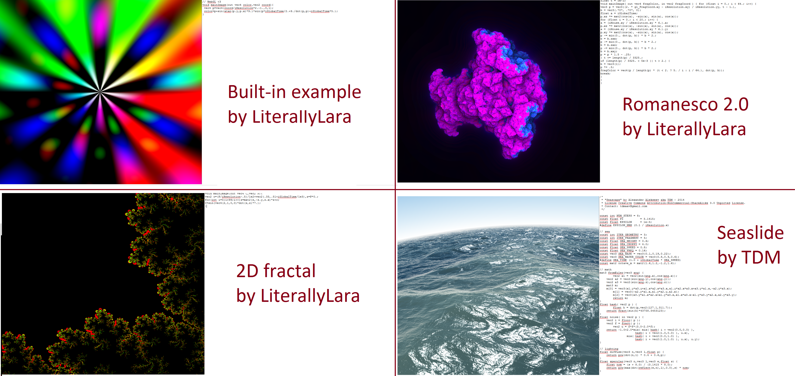
  <br>
  <br>
  <p><h4>Tricks and lessons learned:</h4>
  <ul>
  <li>Making this demo was not as easy as taking our 349b WebGL bootstrap (minus the free <b>g=a.getContext`webgl`</b>) and packaging it in a nice UI. We decided to include the same shader inputs as Shadertoy's (iResolution, iGlobalTime, iTimeDelta, iFrame, iMouse and iDate). To do so, we made a loop that sets/updates these variables at each frame (<a href="https://github.com/xem/MiniShadertoy/blob/gh-pages/js1k.html#L251-L294">here</a>), while the g.createShader (called on load and after each keyboard input) starts with the declaration of these variables (<a href="https://github.com/xem/MiniShadertoy/blob/gh-pages/js1k.html#L187">here</a>).
  <li>The fragment shader declares a main function, that calls mainImage(), which is editable in the demo. (<a href="https://github.com/xem/MiniShadertoy/blob/gh-pages/js1k.html#L189">here</a>).
  <li>To have the same color rendering as shadertoy, the main function always sets the alpha byte of the current pixel to 1 just after calling mainImage. (<a href="https://github.com/xem/MiniShadertoy/blob/gh-pages/js1k.html#L189">here</a>).
  <li>Our WebGL bootstrap also had a special way of computing the pixel coordinates: the origin was centered on the canvas because we used the vertex position (passed to the fragment shader as a varying variable) as normalized coordinates (often called `uv` in Shadertoy demos); Conforming with Shadertoy's coordinates (with the origin on the bottom-left corner) required to change "<b>varying lowp vec4 p</b>" into "<b>attribute vec4 p</b>" <a href="https://github.com/xem/MiniShadertoy/blob/gh-pages/js1k.html#L216">here</a>. Then we added this line in the built-in demo to make it look fine: "<b>vec4 p=vec4(coord/iResolution*2.-1.,0,1);</b>"
  <br>
  (the "*2" is used to stay in the [-1:+1] range, and the coord/iResolution*2.-1. is used to center the pattern on the canvas.)
  <li>The WebGL canvas and its context are provided by JS1k's shim, but we couldn't add the textarea in the DOM with "b.innerHTML+='&lt;textarea>...": that would have rewritten the canvas and its 2D context would no longer be valid. So instead, we used insertedAdjacentHTML: <a href="https://github.com/xem/MiniShadertoy/blob/gh-pages/js1k.html#L77-L96">here</a>.
  <li>With JS1k, you can never assume (or force) the intrinsic width and height of the canvas, you can only set its max-width and max-height. So to adapt our demo to this constraint, we measure the canvas' width and height and use this measure when we update iResolution (<a href="https://github.com/xem/MiniShadertoy/blob/gh-pages/js1k.html#L277-L278">here</a>) and iMouse (<a href="https://github.com/xem/MiniShadertoy/blob/gh-pages/js1k.html#L239-L248">here</a> and <a href="https://github.com/xem/MiniShadertoy/blob/gh-pages/js1k.html#L300-L304">here</a>). Then, the canvas is distorted in CSS to fit one half of the screen (or all the screen after a doubleclick): <a href="https://github.com/xem/MiniShadertoy/blob/gh-pages/js1k.html#L307-L325">here</a>.
  </ul>
  <br>
  <hr>
  <br>
  <h3>PERIOD1k reloaded</h3>
  <p>made with innovati and subzey
  <p>
  - <a href="http://js1k.com/2017-magic/demo/2839">PLAY</a>
  <br>
  - <a href="https://github.com/codegolf/period1k/blob/gh-pages/golfed.commented.html">COMMENTED SOURCE</a>
  <br>
  - <a href="https://github.com/codegolf/period1k#readme">GITHUB</a>
  <p>Last year, we submitted PERIOD1k, a periodic table drawn on a canvas.
  <br>This time, we rewrote it entirely and the result is much better!
  <br>It's rendered in HTML/CSS and generated with a big chunk of ES6 template literals (26kb of generated code in total!)
  <br>It contains the definitive names for the last four elements (officialized in june 2016), better responsiveness, and a new information: the state of each element at room temperature (Liquid / Solid / Gas).
  <p>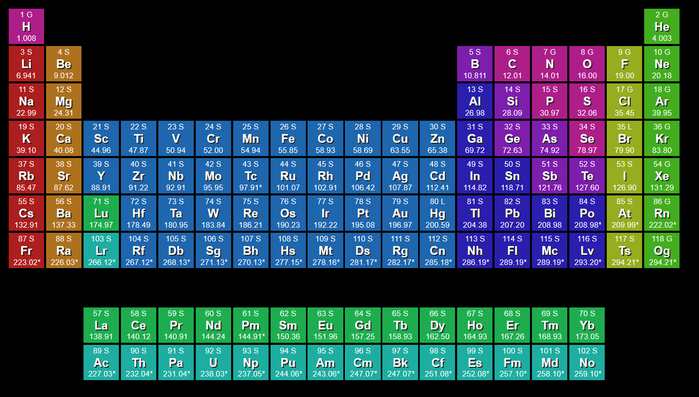
  <br>
  <br>
  <p><h4>Tricks and lessons learned:</h4>
  <ul>
    <li>When you think something can't be golfed any more, try rewriting it entirely! Very often, new optimizations will appear just by reordering your code differently.
    <li>With this version, switching from canvas to pure HTML wasn't really shorter, but had the advantage to produce a scalable periodic table, without any pixellization. So, definitely a plus.
    <li>On the other hand, one huge improvement consisted in merging all the data (name, color, atomic mass, plus the new info: the state at room temperature) in one big string that's easily splittable by cutting before the capital letter present at the beginning of each element's name (<a href="https://github.com/codegolf/period1k/blob/gh-pages/golfed.commented.html#L15-L141">here</a>). This new organization allowed to stop encoding the 118 element's colors separately, but instead, only encode an element's color if it's different from the previous one, and saving one byte if it has the same color. There are only 46 color variations from one element to the next, so 46 bytes are enough to store them. The code used to decode each color correctly fits in 10 bytes (<a href="https://github.com/codegolf/period1k/blob/gh-pages/golfed.commented.html#L176-L191">here</a>).
    <li>The free space allowed to add one char for each of the 2 liquids and a char for each of the 12 gases. All the other elements are solid so it's the default state. The states are then represented by a letter (L / G / S) with a very simple test (<a href="https://github.com/codegolf/period1k/blob/gh-pages/golfed.commented.html#L200-L201">here</a>).
  </ul>
  <br>
  <br>
  <hr>
  <br>
  <h3>If the Moon was 1px</h3>
  <p>made with innovati
  <p>
  - <a href="http://js1k.com/2017-magic/demo/2717">PLAY</a>
  <br>
  - <a href="https://github.com/xem/if-the-moon-was-1px/blob/gh-pages/commented.js1k.html">COMMENTED SOURCE</a>
  <br>
  - <a href="https://github.com/xem/if-the-moon-was-1px">GITHUB</a>
  <p>This demo is a tribute to <a href="http://joshworth.com/dev/pixelspace/pixelspace_solarsystem.html">If the Moon were only 1px</a> by Josh Worth, reimagined with the hard constraint of 1kb.
  <br>
  We wanted to make an extremely complete and precise solar system, with all the planets, dwarf planets, satellites and belts.
  <br>
  We almost nailed it: all the planets positions are precise with a margin error &lt; 1000px, and their size is pixel-perfect;
  <br>
  the major satellites have pixel-perfect positions and their full names are displayed in the page;
  <br>
  The only important size/accuracy compromises are the belts (not drawn in the page) and the minor satellites (placed at pseudo-random positions and not named).
  <p>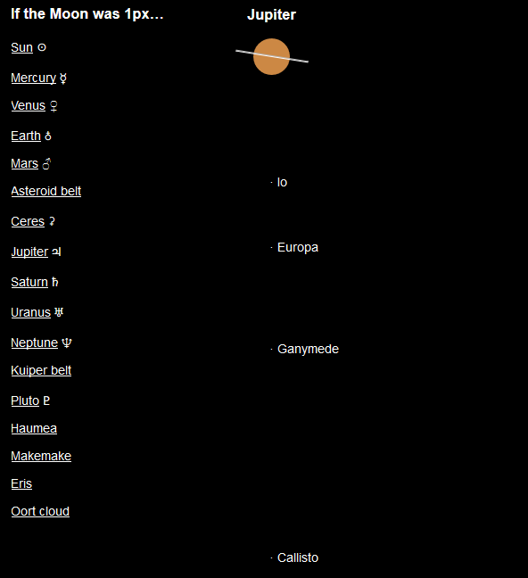
  <br>
  <br>
  <p><h4>Tricks and lessons learned:</h4>
  <ul>
    <li>Always aim big to see how many things you have to cut! At first, we had made a big table with all the names and position for the 21 moons and the 161 minor satellites. This took a lot of time, but trying to compress it has made us understand that we could not fit all the minor satellites information in our entry, as the dataset was already bigger than 1kb. but it was a good starting point to golf and simplify our data. by ignoring all the minor satellites, we saw that all the rest could fit pretty comfortably in 1kb, and this allowed us to make a nice UI (with a legend, a title, comfortable margins everywhere, etc) and add interesting details, like the planets Unicode symbols (<a href="https://github.com/xem/if-the-moon-was-1px/blob/gh-pages/commented.js1k.html#L120-L121">here</a>) and the rings for Jupiter, Saturn, Uranus and Neptune (<a href="https://github.com/xem/if-the-moon-was-1px/blob/gh-pages/commented.js1k.html#L162-L177">here</a>).
    <li>We wanted to display the moons centered horizontally in the screen, and have their names written on the right side, centered vertically. Since all the moons sizes are rounded to 1px, the trick was to represent them with a braille character containing one dot at the center ("<b>·</b>"), followed by a non-breaking space ("<b>\xa0</b>") followed by the moon's name, and place all that in a container with a 5px width (<a href="https://github.com/xem/if-the-moon-was-1px/blob/gh-pages/commented.js1k.html#L207-L222">here</a>). The illusion is perfect! (NB: the minor satellites are just ASCII points: "<b>.</b>").
    <li>If the CSS doesn't behave like you want, force it! For example, all the moons had very precise positions, but because of planets margins and rings, and the moons names' font-sizes and line-height, plus the space contained in the braille character, all the moons were displayed in a wrong position! After trying to understand and fix that (in vain), I finally decided to adjust manually all the distances in the dataset, in order to have a perfect result, even if the hardcoded values are wrong. ("ah, this one is 9px too low... welp, let's change its offset from 62 to 53!", etc).
    <li>We wanted to make everything twice as big (like, "if the moon was 2px!") to display more details, but there was an unexpected problem: the page was too long, and browsers stopped rendering them after a certain height. Haumea, Makemake and Eris were broken, so we decided to switch back to a 1px Moon. If you want to see more details, you can still use your browser's zoom!
    <li>Planet X was considered, but is too hypothetical, too mysterious and too far to be displayed accurately.
    <li>The Oort cloud, of course, couldn't be shown on the page, because it's more than 200 times further from the Sun than Eris. So we added a little indication to say that it's far away (<a href="https://github.com/xem/if-the-moon-was-1px/blob/gh-pages/commented.js1k.html#L179-L181">here</a>).
  </ul>
  <br>
  <br>
  <hr>
  <br>
  <h3>Can I haz 1Karrot?</h3>
  <p>Individual entry
  <p>
  - <a href="http://js1k.com/2017-magic/demo/2794">PLAY</a>
  <br>
  - <a href="https://github.com/xem/1karrot/blob/gh-pages/index.commented.html">COMMENTED SOURCE</a>
  <br>
  - <a href="https://github.com/xem/1karrot#readme">GITHUB</a>
  <br>
  <p>I always wanted to make something cool with CSS3D and emoji, but never had the good idea... until a week after the start of JS1k, when I realized I could make a game with a rabbit in a hat that could run through a maze to find its carrot, and with a surprising ending. All the other details were improvised during the next ~3 weeks of intensive development.
  <p>This demo relies heavily on two CSS and golfing experiments from 2016:
  <br>
  - <a href="http://xem.github.io/articles/#jsgamesinputs">JS games inputs</a> (to support both arrow keys, WASD and ZQSD in 82 bytes);
  <br>
  - <a href="http://xem.github.io/articles/#css3d">How to make games in CSS3D</a>
  <br>(though all the "good practices" of this tutorial were heavily tortured and trespassed in this demo in order to save every byte possible).
  <p>Mobile controls would have been cool (moreover, mobile browsers have no problem displaying the demo), but it would have been so heavy to listen to touch events and bypass their default behavior to make the rabbit move (around 200b), that too many features would have been cut out (no animals, bad collisions, bad camera, less trees, etc.) and it was too much of a downgrade to me, so I abandoned it.
  <p>Same thing for the sound or the interaction with the animals: they were sacrified to make the main thing more enjoyable.
  <p>Big thanks to Keith Clark for his CSS3D expertise, and to the friends from the Codegolf Team for their tests!
  <br>
  <p>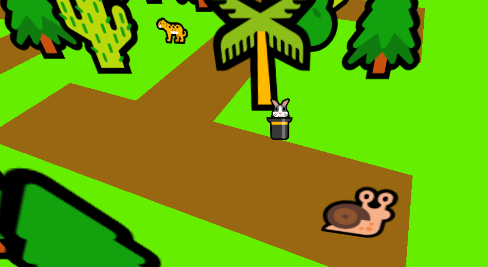
  <br>
  <br>
  <p><h4>Video:</h4>
  I made a video recording to show the demo played in the best conditions (Windows 10 + Webkit):
  <br>
  (<b>WARNING: SPOILERS!</b>)
  <br>
  <div style="position:relative;height:0;padding-bottom:56.25%"><iframe src="https://www.youtube.com/embed/Ai3IJGfBBWQ?ecver=2" width="640" height="360" frameborder="0" style="position:absolute;width:100%;height:100%;left:0" allowfullscreen></iframe></div>
  <br>
  <p><h4>Tricks and lessons learned:</h4>
  <ul>
    <li><b>CSS3D is fun!</b>. It provides a 3D engine almost for free! No need to implement any kind of raycasting, depth-sorting, etc. !
    <li>CSS3D is still highly experimental. We're in febuary 2017, and Firefox explodes (I mean: stops doing any kind of z-sorting) when a page contains more than 100 "CSS3D" elements (i.e. elements with rotate / translate transformations). Firefox 53 will finally drop this limit, but it'll only release in april. So for this JS1k, my game had to respect this limit, and if you count the trees, the ground tiles, the animals, the carrot, the rabbit and the hat, you'll find a total of exactly 100. I could have added much more trees and other items to make this forest much more dense, but it was too expensive. Firefox still has a few little visual glitches but nothing dramatic...
    <li>All the ground tiles could have been replaced by just one element, and the entire path could have been drawn with multiple brown CSS box-shadows on this element (like <a href="http://xem.github.io/miniShadowArt/">here</a>). It was too glitchy on some browsers, mostly the MacOS ones, and I had to revert that. (too bad! the box-shadow trick weighs as many bytes as the current method but it would have made room for a few dozens extra trees).
    <li>At the minimum, you have to use 2 div containers around your scene objects to make the CSS3D magic work.
    <br>
    The outer div acts as the viewport, and must have a width, a height, a perspective and overflow:hidden (like <a href="https://github.com/xem/1karrot/blob/gh-pages/index.commented.html#L106-L109">here</a>). Avoid using the body element as a viewport, as it can cause weird effects too.
    <br>
    The inner div gets the "<b>transform-style:preserve-3d</b>" CSS property to enable realistic perspective for all the scene, and has margins to have its top-left origin placed at the center of the viewport (like <a href="https://github.com/xem/1karrot/blob/gh-pages/index.commented.html#L111-L115">here</a>). I call it the scene container.
    <li>All the children of the scene container can be placed where you want either with margin-left + margin-top, or transform:translate(x,y) or translate3D(x,y,z) (which is handy to place them above the floor). The objects in the scene do not need, and MUST NOT have the CSS property "<b>transform-style:preserve-3d</b>", because it can lead to weird behaviors and important visual glitches on some browsers. Setting it on the scene container only is enough.
    <li><b>Emoji are fun!</b> They provide cute visual assets almost for free!
    <li>Emoji are a pain to use consistently across browsers and OS's. Not only they'll appear differently everywhere (ugly on Mac, monochrome or tofu on Linux and Edge, and quite good on other Windows 10 browsers), but they'll also have different horizontal and vertical alignments. I've spent most of these weeks fighting with flying trees, animals going below the ground, and the rabbit head always placed on one side of the hat or the other, depending on the OS...
    <br>
    In the end, I had no choice but detecting MacOS (with the trick "<b>navigator.platform[5]</b>") to set different sizes and positions on MacOS and other platforms (<a href="https://github.com/xem/1karrot/blob/gh-pages/index.commented.html#L138-L144">here</a>). Thanks to the codegolf team for helping me find such a short MacOS detection script!
    <li>No need to set a big green floor in 3D under the scene, setting a green background to the viewport div does the trick! (so technically, the trees and animals fly above an infinite void, but painted in green).
    <li>
    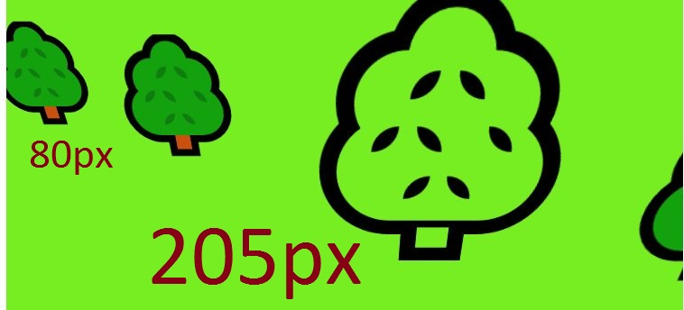Some browsers / OS's have a threshold for multicolor emoji:
    <br><a href="https://twitter.com/MaximeEuziere/status/827890520085131266">they become monochrome after a certain font-size.</a>
    <br>
    This limit varies a lot from a system to another,
    <br>
    but a font-size of 7em seemed to work everywhere.
    <br>
    (In the context of this demo, 1em is 16px, so 7em is 112px.)
    <br>
    Sadly, 7em is too small for my trees!
    <br>
    The solution was to scale the trees 2.5 times with <a href="https://github.com/xem/1karrot/blob/gh-pages/index.commented.html#L217">an extra CSS transform</a>.
    <li>The polyglot keyboard code (arrows / WASD / ZQSD) was originally 82 bytes long, but this demo uses a modified version, with more repetitions, in order to RegPack much better (<a href="https://github.com/xem/1karrot/blob/gh-pages/index.commented.html#L67-L99">here</a>).
    <br>
    Also, the "onkeyup" word is reused a lot in the rest of the code to differenciate trees and animals (<a href="https://github.com/xem/1karrot/blob/gh-pages/index.commented.html#L117-L136">here</a> and <a href="https://github.com/xem/1karrot/blob/gh-pages/index.commented.html#L213-L228">here</a>), which is a good byte saver. 
    <li>The demo consists of a few variables initialized to 0 (frame counter, tree counter and keys states), and a game loop, in which the frame counter is incremented at each frame.
    <br>RegPack 5.0.0 featured a "refactor with setInterval" feature that was cool but added unnecessary code inside the packed code (this was then fixed in regPack 5.0.1).
    <br>
    So while RegPack was being fixed, in order to achieve the best compression, I RegPacked the content of my loop function as usual, then I replaced the final "<b>eval(_)</b>" with "<b>setInterval(_,33)</b>", and replaced "<b>_=join(shift())</b>" with "<b>_=join(shift(q=u=d=l=r=f=0))</b>" (I included my 6 variables initializations in the shift function).
    <li>Do you know the "- It hurts when I do it - Then don't do it!" principle? For some reason, the rabbit could escape the maze on the left (behind the snail) and on the top of the "1" and the "k", i.e. when its x or y was below zero. It could only escape inside one virtual square though, but couldn't go anywhere else in the green infinity. I couldn't find a convincing explanation for this behavior, but fixed it in my collision detection (<a href="https://github.com/xem/1karrot/blob/gh-pages/index.commented.html#L263-L272">here</a>).
    <br>
    <b>Edit: I finally understood what caused this glitch: the x and y coordinates of the rabbit are divided by 3 and floored with "~~" to determine what floor tile is under the hat. If the rabbit can go on the 0'th tile of a line, or any tile of the 0'th line, it can also go to the tile "-1" (or the column "-1"), because when you floor any number between 0 and -1 (excluded) with the "~~" operator, you get 0!</b>
    <br>The whole collision detection script uses the same principle actually: at each frame, the rabbit moves according to the keys pressed, and if its position is not on the path, cancel the move and keep the rabbit at its previous position. Works like a charm!
    <li>By the way, the snail is a wink to Rebecca (@veubeke) who's the biggest snail fan I've ever met, and a great golfer too!
    <li>
    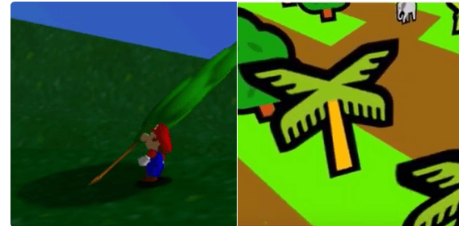
    While making this demo, I had the idea to tilt all the objects (trees, animals, carrot...) towards the camera, to make them look less uncomfortably vertical.<br>This trick is quite unnoticeable during gameplay, but can be seen in the "glitchy state" after the end of the game, when the camera follows the rabbit with a 5-second delay.
    <br>
    Fun fact: I discovered after submitting my entry that <a href="https://twitter.com/MaximeEuziere/status/835607608971128832/photo/1">Mario 64 did exactly the same thing for its sprites!</a> (<a href="http://www.suppermariobroth.com/post/157560405110/trees-in-super-mario-64-always-tilt-to-be">source</a>)
    <li>One final ES6 trick, found on Twitter with the great help of to Mathias Bynens (@mathias) and @FakeUnicode: the shortest way to make an array of Unicode symbols without breaking surrogate pairs is: "<b>[..."unicode text"]</b>". (I used it for the trees list <a href="https://github.com/xem/1karrot/blob/gh-pages/index.commented.html#L195-L197">here</a>).
  </ul>
  <br>
  <br>
  <p><h4>WIP screenshots and funny glitches:</h4>
  <ul>
    <li>At the beginnong, I tried to show a mountained horizon, and make a floor that was only comprised of emoji color variation characters
    <br>(such as 🏻 🏼 🏽 🏾 🏿).
    <br>This was abandoned for being too heavy and too inconsistent across browsers and OS's.
    <br>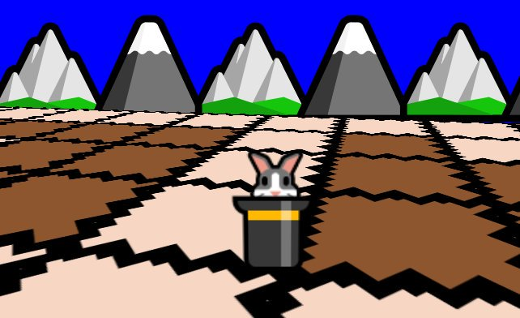
    <li>Here's how the first prototype "seen from above" looked on Firefox, Edge, Chrome, Safari Mac, Android 5.0 and Ubuntu:
    <br>The rabbit-in-hat offset was then adjusted to be good on all OS's except Mac, and a MacOS hack was added on top to make it look good.
    <br>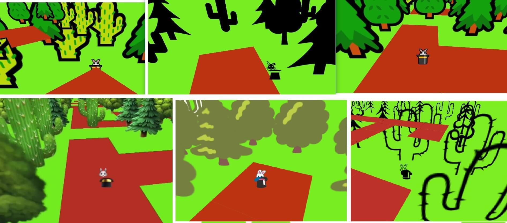
    <li>
    At least, my undefined errors appear in 3D! (this happened when I tried to hide some trees) 
    <br>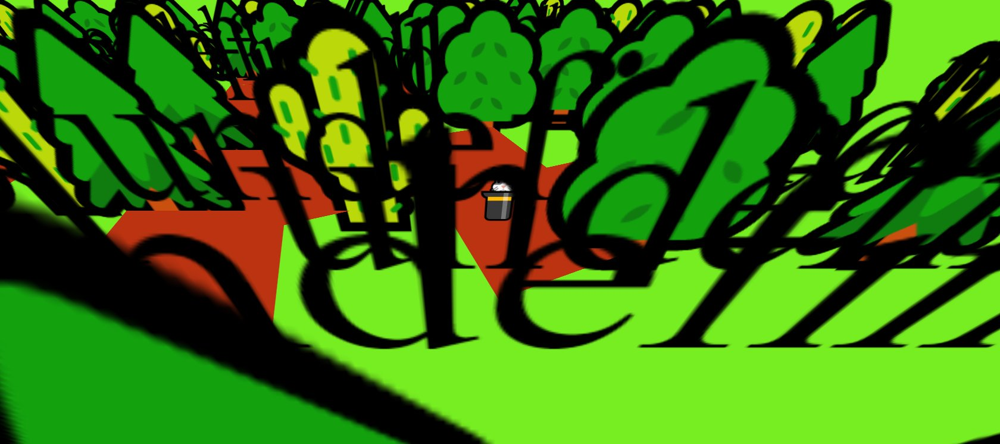
    <li>
    The animals could have talked to the rabbit... (but there wasn't enough room for that)
    <br>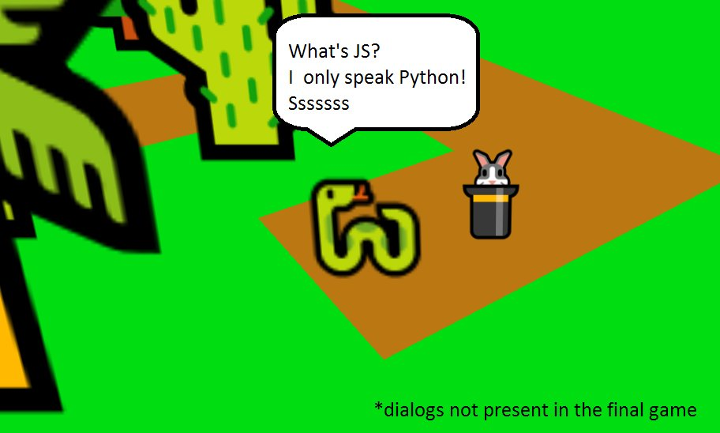
    <li>
    This appeared when I tried to refactor the inline style of the trees...
    <br>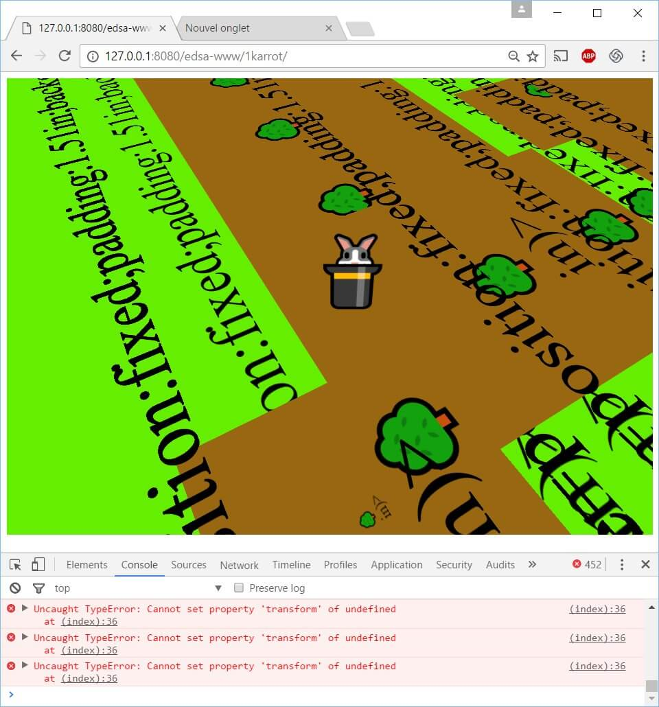
    <li>
    This happened when I tried to animate the animals but not the trees...
    <br>
    <li>
    This happened when I tried to apply CSS transitions from the beginning of the game instead of applying it only at the end...
    <br>
    Bad idea, even though if it would have made a funny introduction.
    <br>
    <li>
    This happened when I refactored my emoji...
    <br>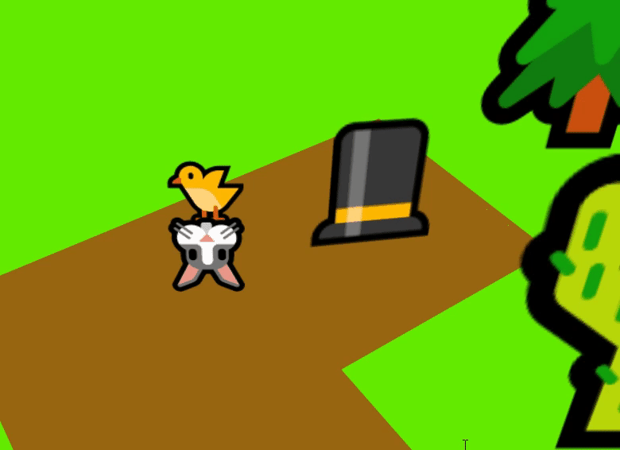
    <li>And finally, the Carrot Update © ! On MacOS Sierra &lt; 10.2.3 there is no carrot emoji. Nothing appears where the carrot is supposed to be. That's why the demo description says it's only suited for MacOS 10.2.3+... Jokingly, we imagined that Apple deployed Mac0S 10.2.3 as "The Carrot Update ©", just to fix the missing emoji 🥕 :D
  </ul>
  <br>
  <br>
  <hr>
  <br>
  <h3>1Kind of magic</h3>
  <p>Individual entry
  <p>
  - <a href="http://js1k.com/2017-magic/demo/2834">PLAY</a>
  <br>
  - <a href="https://github.com/xem/1kind-of-magic/blob/gh-pages/commented.html">COMMENTED SOURCE</a>
  <br>
  - <a href="https://github.com/xem/1kind-of-magic">GITHUB</a>
  <br>
  <p>This demo was rushed during the last week of the compo, after seeing @literallylara's entry <a href="http://js1k.com/2017-magic/demo/2814">magic flute</a>. (which has a remarkably readable source code).
  <br>As a joke, I asked "what if we played Queen's "A kind of magic" in JS? that'd be a fun interpretation of the theme!".
  <br>I ended up handwriting every note of the song and playing them with two JS oscillators (one for the melody and one for the drums starting after 12 seconds).
  <br>The remaining room was used to display some emoji at the center of the page, changing the background after each note, and using a little bit of JS speech synthesis to pronounce the first 3 lyrics of the song.
  <br>It was also a good occasion to finally make a non-mute demo for js1k!
  <br>The Speech Synthesis is inspired by <a href="https://github.com/xem/miniSpeechSynthesis/">miniSpeechSynthesis</a>.
  <p>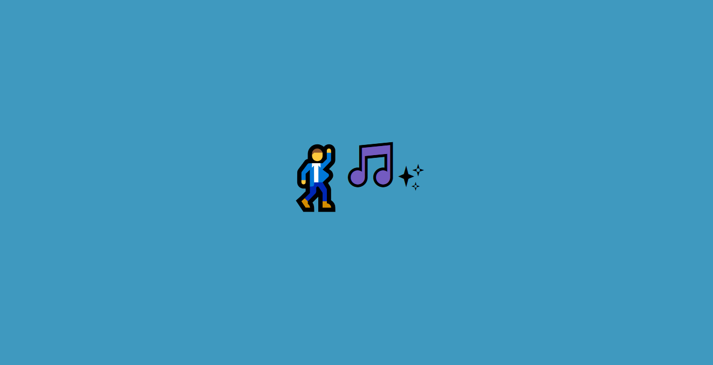
  <br>
  <br>
  <p><h4>Tricks and lessons learned:</h4>
  <ul>
    <li>Lara managed to convert a MIDI file into a ready-to-use array of numbers. Unfortunately, this didn't worked well for the MIDI interpretations of "A kind of magic", the melody was corrupted after a few seconds. That's why I plotted all the content of the MIDI file with <a href="this tool"> and wrote each note and each silence by hand in a big array of numbers (<a href="https://github.com/xem/1kind-of-magic/blob/gh-pages/commented.html#L19-L413">here</a>)
    <li>Then, each note was encoded on two ASCII chars: the first one represents String.fromCharCode(50 + note offset) and the other String.fromCharCode(50 + duration). Each silence was encoded on one char: String.fromCharCode(97 + duration)</b>. This encoding allowed to avoid annoying characters like ", ', `, \ and the control characters (U+0001 to U+0020) used by RegPack to compress the demo. (<a href="https://github.com/xem/1kind-of-magic/blob/gh-pages/commented.html#L415-L432">here</a> and <a href="https://github.com/xem/1kind-of-magic/blob/gh-pages/commented.html#L458-L459">here</a>)
    <li>The rest was pretty straightforward, except when I wanted to make the melody more quiet, in order to make the speech synthesis more hearable. The audioContext's gainNode is very poorly documented, and the team helped me wire it correctly to the oscillator (<a href="https://github.com/xem/1kind-of-magic/blob/gh-pages/commented.html#L480-L502">here</a>).
    <li>For some reason, a gain of 0.5, even 0.1 didn't change anything. I spent a long time trying to figure out why it didn't reduce the notes volume, until I tried 0.001 and finally heard a very low volume. The final code has a 0.005 gain on the melody and a 0.01 gain on the drums. It kinda made a good balance between the music and the voice on my laptop, but again, for some reason, it was super quiet on other PC's or browsers. Welp. At least it's kinda working everywhere, even if the voice can be a bit too loud for some people. And I'm quite happy with the length of the melody I managed to fit in this tiny budget!
  </ul>
  <br>
  <br>
  <hr>
  <br>
  <h3>Bonus: CSS golfing</h3>
  <p>To finish, I'd like to talk about a code-golf trick that I found while making these demos, and it's about inline CSS code.
  <p>It generally saves 1 byte per element, but hey, every byte counts!
  <p>Inline CSS looks like "<b>&lt;div style='...'></b>", and as you may know, the attribute quotes can be omitted if the inline style doesn't contain any space, for example "<b>&lt;div style=color:#fff;background:#000;border-radius:50%></b>".
  <p>My demos contained many CSS properties that generally use spaces, and I discovered I could get rid of most of these spaces, by removing them or replacing them with a "<b>+</b>" or quotes (<b>''</b>). Here are some examples:
  <ul>
    <li><b>"margin: 50vw 50vh"</b> can be simplified to <b>margin:50vw+50vh</b>
    <li><b>"box-shadox: 2px 2px #222"</b> can be simplified to <b>box-shadox:2px+2px#222</b>
    <li><b>"font: 12px / 14px arial"</b> can be simplified to <b>font:12px/14px'arial'</b> (for a custom font-family)
    <li><b>"font: 12px / 14px sans-serif"</b> can be simplified to <b>font:12px/14px""</b> (if you want to keep the default font-family)
  </ul>
  <p>The only spaces that can't be removed so far are:
  <ul>
    <li>spaces around the + and - in "<b>calc(1px + 2em - 3vw)</b>" (if they were absent, it'd make ambiguous signed numbers)
    <li>spaces around keywords, for example in "<b>font:bold 12px'arial'</b>" or "<b>background:url(...)no-repeat red</b>".
  </ul>
  <p>There's a second CSS trick that can save many bytes when you write a lot of CSS functions, but I don't really recommend it because it doesn't work on Safari: all the closing parenthesis at the end of CSS rules (or at the end of inline styles) can be omitted, ex:
  <ul>
    <li>width:calc(10px + 10vw
    <li>transform:translate(x,y)scale(2
    <li>etc.
  </ul>
  <br>
  <br>
  <hr>
  <br>
  Cheers!
</div>

<div class=section id=gameoflife>
  <h2>Golfing the Game of Life (and its variations)</h2>
	<h3>october 2016</h3>
  <br>
  <hr>
  <br>
  <p>We golfed the Game of Life many times in the past few years, in many different forms:
  <p>First, when 140byt.es still existed, we golfed the algorithm alone in less than 140 bytes (<a href="https://gist.github.com/aemkei/1134658">135b by aemkei</a> and <a href="https://gist.github.com/xem/6465061">126b by me</a>);
  <p>Subzey joined us to golf <a href="http://xem.github.io/miniGameOfLife/">miniGameOfLife</a>, a complete Game of Life simulation in ASCII in 238b, which used the mouse and the keyboard to set the initial state and evolve;
  <p>Aemkei golfed a <a href="http://aem1k.com/life/">pure HTML version in 176b</a> and he presented <a href="https://youtu.be/1uvIw7X0u48?t=1104">many</a>... <a href="https://youtu.be/T3xMyZH93i8?t=1184">obfuscated</a>... <a href="https://youtu.be/ET3iKgqPzjw?t=1437">versions</a>... <a href="https://youtu.be/-QZSJx8oXus?t=1136">on stage</a>;
  <p>We made <a href="http://xem.github.io/miniGameOfBraille/">MiniGameOfBraille</a> in 389b;
  <p>And finally, we ended up golfing <a href="http://xem.github.io/miniGameOfBraille/canvas.html">a super tiny version</a> on a 100x100px canvas inspired by aemkei's talks, in just 221b, featuring ES6 and a pseudo-random initial state.
  <pre class="code">&lt;canvas id=a>&lt;svg onload=z=a.getContext`2d`;s=!setInterval`p=a;a=[];for(i=1e4;a[i]=s?3==k|p[i]&2==k:3&lt;i%9,k=0,i--;)for((j)of[1,97,v,99])k+=p[i+j]+p[i-j];for(s=1e4;s--;)z[a[s]?'fillRect':'clearRect'](s%v,s/v|0,1${v=98}1)`></pre>
  <p>During months, we really thought we couldn't do better than that. We even included this version in our js13kgames entry <a href="http://js13kgames.com/entries/26-games-in-1">26-games-in-1</a>.
  <p>We also golfed other cellular automata like <a href="https://github.com/xem/miniLangtonAnt/">miniLangtonAnt</a>, <a href="http://xem.github.io/miniLangtonLoops/">miniLangtonLoops</a> and <a href="http://xem.github.io/cellularandom/">cellularandom</a>.
  <br>
  <br>
  <hr>
  <br>
  <p>This week, we discovered a new, <a href="https://www.reddit.com/r/cellular_automata/comments/59mimg/sierpinski_triangle_formed_by_a_slight_variation/">intriguing variation of the Game of Life</a>, that produced a Serpinski triangle fractal while it evolved from a vertical line.
  <p>
  <p>So I tried to reproduce it and golf it from scratch with @sqaxomonophonen @subzey @nderscore and @veubeke. The result is <a href="https://github.com/xem/miniConwaySerpinski">HERE</a>, and it fits in just 188b!
  <p>Here are the different steps of this quite epic golfing session, just after we realized that the rules of this game were the same as Game of Life's, except that cells live with 0 or 3 live neighbours instead of 2 or 3 live neighbours:
  <p>The commented source code can be found <a href="https://github.com/xem/miniConwaySerpinski/blob/gh-pages/index.html">HERE</a>.
  <div style=overflow-x:auto>
  <pre class=code style=width:1800px><b>// Just minified, not golfed yet.</b>
&lt;canvas id=a>&lt;script>d=[];k=0;setInterval(function(){a.width^=0;e=[];for(i=0;i&lt;98*98;i++){if(!k){d[i]=((i%98)==49)?1:0;}else{n=0;for(j of[1,97,98,99])n+=!!d[i+j]+!!d[i-j];if(e[i]=[x=d[i],,x,!x][n])a.getContext`2d`.fillRect(i%98,~~(i/98),1,1);}}if(k)d=e;k++;},9)&lt;/script>

<b>// Move k (a flag telling if the game has started or not) into d (an array representing all cells' state). Pass a string to setInterval. Move the rest of the code to remove some curly braces.</b>
&lt;canvas id=a>&lt;script>d=[k=0];setInterval(`a.width^=0;e=[];for(i=0;i&lt;98*98;i++){n=0;if(k)for(j of[1,97,98,99])n+=!!d[i+j]+!!d[i-j];else d[i]=e[i]=((i%98)==49)?1:0;if(e[i]=[x=d[i],,x,!x][n])a.getContext("2d").fillRect(i%98,~~(i/98),1,1);}d=e;k++`,9)&lt;/script>

<b>// Move some code inside e (an array representing the new state of the grid). Use .map() to iterate on the set of neighbours offsets. </b>
&lt;canvas id=a>&lt;script>d=[k=0];setInterval(`for(e=[a.width^=i=0];i&lt;98*98;i++)n=0,k?[1,97,98,99].map(j=>n+=!!d[i+j]+!!d[i-j]):d[i]=e[i]=i%98-49?0:1,(e[i]=[x=d[i],,x,!x][n])&&a.getContext("2d").fillRect(i%98,~~(i/98),1,1);d=e;k++`,9)&lt;/script>

<b>// Reverse the loop (from 10000 to 0) to iterate on all the cells. Move n reset at the end.</b>
&lt;canvas id=a>&lt;script>d=[k=0];setInterval(`e=[a.width^=0];for(i=1e4;i--;k?[1,97,98,99].map(j=>n+=!!d[i+j]+!!d[i-j]):d[i]=e[i]=i%98-49?0:1,(e[i]=[x=d[i],,x,!x][n])&&a.getContext("2d").fillRect(i%98,~~(i/98),1,1))n=0;d=e;k++`,9)&lt;/script>

<b>// Instead of incrementing k at each loop, just set it to the value of e after the first iteration</b>
&lt;canvas id=a>&lt;script>     d=[k=0];setInterval(`e=[a.width^=0];for(i=1e4;i--;k?[1,97,98,99].map(j=>n+=!!d[i+j]+!!d[i-j]):d[i]=e[i]=i%98-49?0:1,(e[i]=[x=d[i],,x,!x][n])&&a.getContext("2d").fillRect(i%98,~~(i/98),1,1))n=0;k=d=e`,9)&lt;/script>

<b>// Place all the JS code in an svg onload. Reorder the code a little, and simplify the game's rules (e[i]=!(d[i]?n^2&n:n^3) instead of e[i]=[x=d[i],,x,!x][n])</b>
&lt;canvas id=a>&lt;svg onload="d=[k=0];setInterval('e=[a.width^=0];for(i=1e4;i--;k?[1,97,98,99].map(j=>n+=d[i+j]+d[i-j])|(e[i]=!(d[i]?n^2&n:n^3))&&a.getContext`2d`.fillRect(i%98,i/98|0,1,1):e[i]=i%98==49)n=0;k=d=e',9)">

<b>// Set d to zero and use it as the second parameter of setInterval (it's not useful as an array at the beginning ant it's set to the value of e after each iteration)</b>
&lt;canvas id=a>&lt;svg onload="setInterval('e=[a.width^=0];for(i=1e4;i--;d?[1,97,98,99].map(j=>n+=d[i+j]+d[i-j])|(e[i]=!(d[i]?n^2&n:n^3))&&a.getContext`2d`.fillRect(i%98,i/98|0,1,1):e[i]=i%98==49)n=0;k=d=e',d=0)">

<b>// k is not needed anymore, the truthiness of d is enough to choose between "initiate the grid" (when d=0) and "iterate" (when d=e)</b>
&lt;canvas id=a>&lt;svg onload="setInterval('e=[a.width^=0];for(i=1e4;i--;d?[1,97,98,99].map(j=>n+=d[i+j]+d[i-j])|(e[i]=!(d[i]?n^2&n:n^3))&&a.getContext`2d`.fillRect(i%98,i/98|0,1,1):e[i]=i%98==49)n=0;d=e',d=0)">

<b>// Do not floor the y position of each pixel (at this scale, it's almost not noticeable)</b>
&lt;canvas id=a>&lt;svg onload="setInterval('e=[a.width^=0];for(i=1e4;i--;d?[1,97,98,99].map(j=>n+=d[i+j]+d[i-j])|(e[i]=!(d[i]?n^2&n:n^3))&&a.getContext`2d`.fillRect(i%98,i/98,1,1):e[i]=i%98==49)n=0;d=e',d=0)">

<b>// Try to use a boolean in d... but it doesn't work on Firefox (Fx needs an integer as second param of setInterval)</b>
&lt;canvas id=a>&lt;svg onload="d=!setInterval('e=[a.width^=0];for(i=1e4;i--;d?[1,97,98,99].map(j=>n+=d[i+j]+d[i-j])|(e[i]=!(d[i]?n^2&n:n^3))&&a.getContext`2d`.fillRect(i%98,i/98,1,1):e[i]=i%98==49)n=0;d=e')">

<b>// Rollback</b>
&lt;canvas id=a>&lt;svg onload="setInterval('e=[a.width^=0];for(i=1e4;i--;d?[1,97,98,99].map(j=>n+=d[i+j]+d[i-j])|(e[i]=!(d[i]?n^2&n:n^3))&&a.getContext`2d`.fillRect(i%98,i/98,1,1):e[i]=i%98==49)n=0;d=e',d=0)">

<b>// Move some code inside e[i]=xxx (e[yyy,i]=xxx is valid in JS!)</b>
&lt;canvas id=a>&lt;svg onload="setInterval('e=[a.width^=0];for(i=1e4;i--;e[[1,97,98,99].map(j=>n+=d[i+j]+d[i-j]),i]=d?(d[i]?n^2&n:n^3)?0:!a.getContext`2d`.fillRect(i%98,i/98,1,1):i%98==49)n=0;d=e',d=0)">

<b>// Move some code (declaration of e and reset of a.width) inside the for loop and mix it with "i=1e4". Also, save the number 98 in a variable (k) to reuse it many times.</b>
&lt;canvas id=a>&lt;svg onload="setInterval('for(a.width|=e=[i=1e4];i--;e[[1,97,k=98,99].map(j=>n+=d[i+j]+d[i-j]),i]=d?(d[i]?n^2&n:n^3)?0:!a.getContext`2d`.fillRect(i%k,i/k,1,1):i%k==49)n=0;d=e',d=0)">

<b>// Simplify the rules with a global "n xor"</b>
&lt;canvas id=a>&lt;svg onload="setInterval('for(a.width|=e=[i=1e4];i--;e[[1,97,k=98,99].map(j=>n+=d[i+j]+d[i-j]),i]=d?n^(d[i]?2&n:3)?0:!a.getContext`2d`.fillRect(i%k,i/k,1,1):i%k==49)n=0;d=e',d=0)">

<b>// Moved rules inside of height argument of fillRect.</b>
&lt;canvas id=a>&lt;svg onload="setInterval('for(a.width&=e=[i=1e4];i--;a.getContext`2d`.fillRect(i%k,i/k,1,e[i]=d?!(d[i]?n^2&n:n^3):i%k==49))[1,97,k=98,99].map(j=>n+=d[i+j]+d[i-j],n=0);d=e',d=0)">

<b>// Simplify the rules again (reuse the global "n xor" trick) and simplify "i%k==49" into "i%k^49".</b>
&lt;canvas id=a>&lt;svg onload="setInterval('for(a.width&=e=[i=1e4];i--;a.getContext`2d`.fillRect(i%k,i/k,1,e[i]=!(d?n^(d[i]?2&n:3):i%k^49)))[1,97,k=98,99].map(j=>n+=d[i+j]+d[i-j],n=0);d=e',d=0)">

<b>// Remove the quotes of the svg onload attribute, and replace the map() with "for(j of[...])". The space is replaced with a vertical tab character (considered as a space in JS but not in HTML)</b>
&lt;canvas id=a>&lt;svg onload=setInterval('for(a.width&=e=[i=1e4];i--;a.getContext`2d`.fillRect(i%k,i/k,1,e[i]=!(d?n^(d[i]?2&n:3):i%k^49))){n=0;for(jof[1,97,k=98,99])n+=d[i+j]+d[i-j]}d=e',d=0)>

<b>// Move n=0 at the beginning of the loop to get rid of two more curly braces.</b>
&lt;canvas id=a>&lt;svg onload=setInterval('for(a.width&=e=[i=1e4];n=0,i--;a.getContext`2d`.fillRect(i%k,i/k,1,e[i]=!(d?n^(d[i]?2&n:3):i%k^49)))for(jof[1,97,k=98,99])n+=d[i+j]+d[i-j];d=e',d=0)></pre>
  </div>
  <br>
  <br>
  <hr>
  <br>
  <p>With this extremely small code, we tried to re-golf miniGameOfLife with the same principle, and got it down from 221b to 183b! The result is <a href="https://github.com/xem/miniGameOfLife2">HERE</a>!
  <pre class=code>&lt;canvas id=a>&lt;svg onload=setInterval('for(a.width&=e=[i=1e4];i--;a.getContext`2d`.fillRect(i%k,i/k,1,e[i]=d?d[i]+n==4||n==4:3&lt;i%9))for(jof[n=1,97,k=98,99])n+=d[i+j]+d[i-j];d=e',d=0)></pre>
  <p><blockquote class="twitter-tweet" data-lang="fr"><p lang="en" dir="ltr">New mini projects!<br>MiniconwaySerpinski golfed in 188b - <a href="https://t.co/B3a6iAlIy8">https://t.co/B3a6iAlIy8</a><br>and miniGameOfLife2 golfed in 184b - <a href="https://t.co/WAI1CdvRO9">https://t.co/WAI1CdvRO9</a> <a href="https://t.co/AVdS64MCzK">pic.twitter.com/AVdS64MCzK</a></p>&mdash; xem (@MaximeEuziere) <a href="https://twitter.com/MaximeEuziere/status/791966802062417922">28 octobre 2016</a></blockquote>
<script async src="//platform.twitter.com/widgets.js" charset="utf-8"></script>
  <br>(to save one extra byte, Subzey also had the idea to rewrite the rule "<b>e[i]=(d[i]&&n==2)||n==3</b>" into "<b>e[i]=d?d[i]+n==4||n==4</b>")
  <br>
  <br>
  <hr>
  <br>
  To conclude, I'd like to show that this model can actually be used as a bootstrap for any Game of Life variation, not only these two:
  <pre class=code>&lt;canvas id=a>&lt;svg onload=setInterval('for(a.width&=e=[i=1e4];i--;a.getContext`2d`.fillRect(i%k,i/k,1,e[i]=d?<b>[RULES]</b>:<b>[INITIAL STATE]</b>))for(jof[n=1,97,k=98,99])n+=d[i+j]+d[i-j];d=e',d=0)></pre>
  <p>Replace <b>[RULES]</b> with the conditions that make e[i] (the current cell) alive based on d[i] (the previous state of the current cell) and n (the number of live neighbours);
  <br>and replace <b>[INITIAL STATE]</b> with the code that defines the initial state of the grid, based on i (the cell counter).
  <p>For example, if you use the rules of <a href="https://en.wikipedia.org/wiki/Life_without_Death">Life without Death</a>, you can get something like this:
  <p>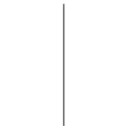
  <p>Cheers,
  <br>the Team
</div>


<div class=section id=webspeech>
  <h2>Web Speech API golfing (plus our new best JS golfing tricks)</h2>
	<h3>october 2016</h3>
  <br>
  <hr>
  <br>
  <p>The Codegolf Team and I constantly make new codegolf-related discoveries, sometimes completely randomly. 
  <p>Our most recent ones are the following:
  <ul>
  <li>ES6 template literals allow to get rid of parenthesis in functions accepting a string or a string + other parameters. Examples:
  <pre class="code">document.write`Hi`;
setTimeout`foo=1,bar=2${99}baz=3`;</pre>
  The last snippet may look a little cryptic, but yes, you can replace one comma in the template literal with an invokation of the next parameter (here, it's 99). The browser splits the template literal into an array (["foo=1,bar=2","baz=3"]), which is transformed into a string ("foo=1,bar=2,baz=3") which in turn, is passed to setInterval, along with the second parameter (99).
  <br>
  <br>
  <li>The obsolete HTML attribute bgColor (that we generally set to the body) can also be set to "document":
  <pre class=code>document.bgColor=0</pre>
  And remember that bgColor is much more permissive than CSS. <a href="http://stackoverflow.com/questions/8318911/why-does-html-think-chucknorris-is-a-color">You can even use "chucknorris" inside</a>!
  <br>
  <br>
  <li>The code we put inside &lt;svg onload=...> is interpreted with two implied scopes: "this" and "document". So it's totally possible to write things like:
  <pre class=code>&lt;svg onload=outerHTML="Hi!">
&lt;svg onload=write`Hi!`>
&lt;svg onload=bgColor=123456></pre>
  <br>
  <li>The "Vertical Tab" control character (U+000B), a.k.a VT, is interpreted as a space in JS but not in HTML. As a result, we can write this kind of attributes with no quotes:
  <pre class="code">&lt;svg onload=alert(newDate)></pre>
  (there's a VT between "new" and "Date").
  <br>Sadly, you can't replace spaces in strings with this character because it won't show up in your page.
  </ul>
  <br>
  <br>
  <hr>
  <br>
  <p>We also discovered the Web Speech API, allowing to make your browsers generate voices from any text you input (Speech Synthesis) and vice-versa (Speech Recognition)!
  <p>Naturally, we tried to golf these new features as much as possible, and here is the result:
  <ul>
  <li><a href="https://github.com/xem/miniSpeechSynthesis">miniSpeechSynthesis</a> (+ Bonus app with a language selection)
  <li><a href="https://github.com/xem/miniSpeechRecognition">miniSpeechRecognition</a> (+ Bonus app featuring a voice commanded color switcher)
  <li><a href="https://github.com/xem/miniSpeechRecognitionAndSynthesis">miniSpeechRecognitionAndSynthesis</a> (this one repeats what you say in the mic)
  </ul>
  <p>And as many people are curious about how we make things like that, here's the detail, for miniSpeechSynthesis, golfed by @p01, @subzey, @nderscore, @veubeke, @literallylara, @sqaxomonophonen and I:
  <div style="overflow-x:auto">
  <pre class=code style="width:900px"><b>// Non golfed</b>
&lt;input id=i>&lt;button onclick="s=speechSynthesis;u=new SpeechSynthesisUtterance(i.value);u.voice=s.getVoices()[0];s.speak(u)">Speak!

<b>// Use new() to avoid using a space, and remove attribute quotes</b>
&lt;input id=i>&lt;button onclick=s=speechSynthesis;u=new(SpeechSynthesisUtterance)(i.value);u.voice=s.getVoices()[0];s.speak(u)>Speak!

<b>// Add speechSynthesis's scope to get rid of "s."</b>
&lt;input id=i>&lt;button onclick=with(speechSynthesis)u=new(SpeechSynthesisUtterance)(i.value),u.voice=getVoices()[0],speak(u)>Speak!

<b>//Use ES6 destructuring to set u.voice to getVoices()[0] implicitly</b>
&lt;input id=i>&lt;button onclick=with(speechSynthesis)u=new(SpeechSynthesisUtterance)(i.value),[u.voice]=getVoices(),speak(u)>Speak!

<b>// Move a bit of previous code in empty parenthesis</b>
&lt;input id=i>&lt;button onclick=with(speechSynthesis)[u.voice]=getVoices(u=new(SpeechSynthesisUtterance)(i.value)),speak(u)>Speak!

<b>// Get rid of the button (speak when the input changes), the voice and the id "i" because it's implied now</b>
&lt;input onchange=speechSynthesis.speak(new(SpeechSynthesisUtterance(value)))>

<b>// Use the onblur event (shorter and more handy: indeed, triggering the speaker at each keystroke was not nice)</b>
&lt;input onblur=speechSynthesis.speak(new(SpeechSynthesisUtterance)(value))>

<b>// Use a VT character between "new" and "SpeechSynthesisUtterance"</b>
&lt;input onblur=speechSynthesis.speak(newSpeechSynthesisUtterance(value))></pre>
  </div>
  <br><b>Demo:</b>
  <br><input onblur=speechSynthesis.speak(newSpeechSynthesisUtterance(value)) size=50 placeholder="Type anything then click outside!">
  <br>
  <br>
  <hr>
  <br><p>The other apps use very similar techniques as you can see for example in the source code of miniSpeechRecognition (webkit only):
  <pre class=code>&lt;svg onload='with(new webkitSpeechRecognition)start(onresult=e=>write(e.results[0][0].transcript))'></pre>
  <br>...or its bgColor variant, using the trick described at the beginning of this article:
  <pre class=code>&lt;svg onload='with(new webkitSpeechRecognition)start(onresult=e=>bgColor=e.results[0][0].transcript)'></pre>
  <br>... and as a bonus, an app that repeats with Speech Synthesis what you say in the microphone, interpreted by Speech Recognition! The lite version is only 146b (webkit only)
  <pre class=code>&lt;svg onload='with(new webkitSpeechRecognition)start(onresult=e=>speechSynthesis.speak(new SpeechSynthesisUtterance(e.results[0][0].transcript)))'></pre>
  <p>Cheers!
  <hr>
  <br>
  <hr>
  <br>
  <p>Update 01/17: <a href="https://appendto.com/2016/12/javascript-easy-speech-recognition-and-speech-synthesis/#comment-6527">a nice article on appendto.com explains these tricks with more detail</a>.
</div>

<div class=section id=css3d>
  <h2>How to make a game in CSS3D</h2>
	<h3>october 2016 - june 2017</h3>
  <br>
  <hr>
  <br>
  <p>This article is aimed at developers that are already familiar with JS game making and CSS3D.
  <p>If you don't already know CSS3D, I also recommend reading the following resources:
  <br>- <a href="https://24ways.org/2010/intro-to-css-3d-transforms/">An Introduction to CSS 3D Transforms</a>
  <br>- <a href="https://css-tricks.com/things-watch-working-css-3d/">Things to watch when working with CSS3D</a>
  <br>- <a href="http://www.keithclark.co.uk/">Keith Clark's articles and demos about CSS3D engine, lighting, shadowing, etc.</a>
  <br>- <a href="http://thingsinjars.com/post/434/super-mario-kart-css/">Super Mario Kart in CSS,</a> it's heavy, old, not optimized, not cross-browser, but that's what inspired me to do this today :)
  <p>I won't cover all the features of CSS3D, but instead I'll focus on some discoveries I've made, like how to deal with the rotation and translation axis, how to simulate a camera and how to make CSS3D scenes interactive with a little bit of JS.
  <p>In parallel with this article, I'm updating <a href="https://github.com/xem/CSS3Dprototypes">this Github repo</a> with my experiments. 
  <br>
  <br>
  <hr>
  <br>
  <h3>Why?</h3>
  <p>Why make games in CSS3D? Because it works fine (most of the time), because it's fun and hacky, and also because it's super lightweight! You can literally make a 3D scene interactive with a few lines of HTML, CSS and JS (<a href="https://github.com/xem/CSS3Dprototypes/blob/gh-pages/1/index.html">example</a>) (<a href="https://xem.github.io/CSS3Dprototypes/1/">demo</a>), so it can be useful for lazy coders, or code-golfers trying to work with the size limits of <b>js1k</b> or <b>js13kgames</b>!
  <br>
  <br>
  <hr>
  <br>
  <h3>Spoiler: 3D games often are just 2D games plus perspective</h3>
  <p>It seems stupid to say it like that, but it's one of the most important things I realized while experimenting: if you can make a 2D game in JS (for example a chess game or a racing game seen from above, or anything else you can imagine), you literally just need to look at your scene from a slightly different angle and you have turned it into a 3D game "for free".
  <br>
  You can see what I mean with this <a href="https://xem.github.io/CSS3Dprototypes/5/">Mario Kart prototype</a>: the only real difference between the 2D view and the 3D view is rotation of 80 degrees along the X axis!
  <p>
  <p>But we'll see that in greater detail later.
  <br>
  <br>
  <hr>
  <br>
  <h3>So let's get started with CSS3D!</h3>
  <br>Nowadays, CSS3D is pretty easy to use. Modern browsers don't require vendor-prefixes anymore and their performances are... decent.
  <p>All you have to do is set "perspective: 400px" to a container in your page (avoid the &lt;body> though) - of course you can replace 400px with any length you want; as far as I understand, this length represents the distance between the container and the virtual camera that will "see" the scene in perspective. (the lower the perspective, the more deformed the scene is). Then fill the container with elements, apply all the CSS3D transforms you want to these elements, don't forget to set "transform-style: preserve-3d;" to render them in "real 3D" (otherwise, the browsers will flatten all the scene and make it look as if it's in perspective, but there would be no depth at all in reality), and you're done!
  <p>
  <p>But now, let's dig into some subtleties that you may face while playing with this new toy!
  <br>
  <hr>
  <br>
  <h3>Subtlety #1: HTML elements vs. axis, translations and rotations?</h3>
  <br>
  By default, each HTML element of your page is drawn at a certain position according to the flow of the page and the CSS you applied to the element, its neighbours and its ancestors. It has no translation and no rotation, and its default transform-origin it at their top-left corner. This transform-origin is editable, and it's the starting point of all the possible CSS transforms, but six of them are particularly important here: rotateX / Y / Z and translateX / Y / Z. The X axis goes on the right, the Y axis goes downward, and the Z axis goes in depth towards your eyes, as you can see in the following demo:
  <p><a href="demos/css3d/transform.html">DEMO!</a>
  <p>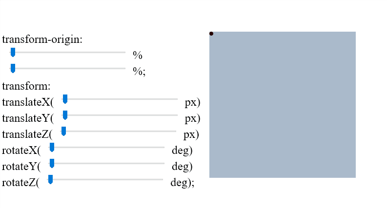
  <p>The demo above allows to move the transform-origin of a square (represented by a red dot), and allows to translate in X,Y and Z axis and rotate along X,Y and Z axis, in this order. All the range inputs go from 0 to 100 (regardless to the units used).
  <p>Note that translateX and translateY can be expressed in percent units, but not translateZ. If you try to sate a translateZ in %, the whole transform will be discarded.
  <p>Note also that the order of the transforms is extremely important. For example here, you can translate the square then rotate it, but you wouldn't get the same result if you rotated the square before translating it. Transforms are accumulated from the first one to the last one, while the transform-origin can only have one value used by all the transforms. (of course, even if its value never changes, the transform-origin moves with the element when it's translated).
  <p>This principle allows, for example, to rotate an element, then translate in, then rotate it back to the original angle, to make an object move <a href="http://lea.verou.me/2012/02/moving-an-element-along-a-circle/">around a circle</a>!
  <p>Finally, note that the X, Y and Z axis of an element can have different orientations than the ones by default if a parent element is rotated. (for example, if the parent of the square above had a 90 degrees rotation along its X axis, the square would undergo this parent transform and have its Y and Z axis rotated 90 degrees along the X axis of the parent, i.e. the Y axis would behave like a Z axis and the Z axis would behave like X axis.
  <p>The <a href="https://developer.mozilla.org/fr/docs/Web/CSS/transform">other possible CSS transforms</a> include matrix, translate, scale, scaleX, scaleY, skew, skewX, skewY, matrix3d, translate3D, scale3D, rotate3D and perspective, but we won't study them here. ( for the record, matrix3D has <a href="http://franklinta.com/2014/09/08/computing-css-matrix3d-transforms/">very interesting applications</a>!)
  <br>
  <hr>
  <br>
  <h3>Subtlety #2: The HTML structure</h3>
  <p>Even if a container (with perspective) and its children (with CSS transforms) are enough to test CSS3D, a good HTML structure  will make your work (and calculations) much easier, especially if you want to do a CSS3D game. Here's the one I recommend:
  <p>First, you need a viewport (the equivalent of a canvas element when you do a canvas-based JS game). For example, use a 600x400px div. The perspective will be applied to this element.
  <p>At the center of this viewport, we place a 0x0px div called "camera". It's not REALLY the camera (more details in the next paragraph), but the point that will always be watched by the camera, something like a global transform-origin for the game.
  <p>Inside this "camera" point, we can place a scene container with a defined size and inside it, all the scene objects in their order of appearance (for a better browser support - more details at the end of the article). For example, we can put inside the kart, the tree, and finally the circuit.
  <p>Here's the template's HTML:
  <pre class=code>&lt;div id=viewport>
  &lt;div id=camera>
    &lt;div id=scene>
      (...scene content...)
    &lt;/div>
  &lt;/div>
&lt;/div></pre>
  <p>And CSS:</p>
  <pre class=code>* { transform-style: preserve-3d; box-sizing: border-box; }
#viewport { width: 600px; height: 400px; overflow: hidden; perspective: 400px; }
#camera { width: 0px; height: 0px; position: relative; left: 300px; top: 200px; }
#scene { width: 4000px; height: 4000px; transform-origin: 0 0; }
/* scene content... */
#scene { transform: rotateX(80deg) translateZ(-70px); }</pre>
  <p>All your scene objects can be placed in the scene the same way you'd place them in 2D on a HTML page (using left/top, or margins, or translateX/Y, etc.).
  <p>The last CSS line (rotateX and translateZ on the #scene element) enables the 3D view, exactly like in the previous Gif. The translateZ is optional, its goal is to place the camera a little above the scene, and avoid some bugs (more details later).
  <p>You can find a demo <a href="./demos/css3d/template.html">HERE</a>.
  <p>In this demo, the viewport is shown in red, the camera in blue, and the scene in green (you can see the top-left corner of the scene in perspective).
  <p>In the screenshot below, you can see what the template looks like before and after adding the last line of CSS (the 3D toggle)
  <p>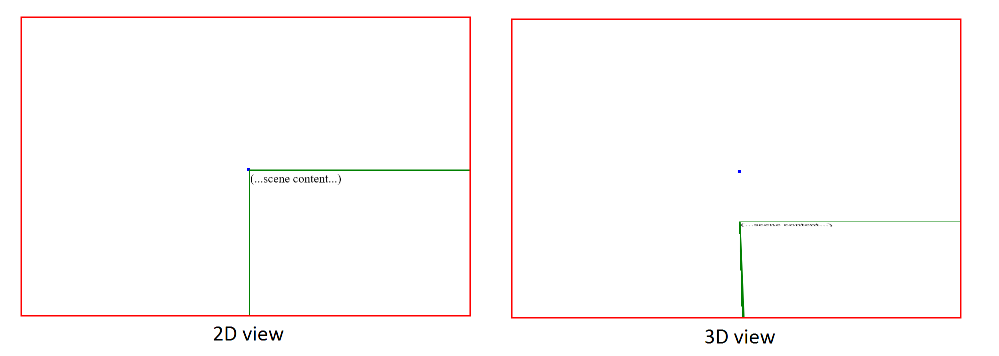
  <p>That's all! Everything else depends on your content and your creativity!
  <br>
  <hr>
  <br>
  <h3>Subtlety #3: A "camera"?</h3>
  <p>In a webpage, there's no "camera", but there's a viewport (the portion of the page visible in browser's window).
  <p>In most cases, and even in 2D games, the notion of camera is completely neglected, and we generally call "camera" the current view, i.e. the rectangle in which the user can see your game.
  <p>But in 3D, we should never forget that the camera is a point in the space, and the scene is "seen" from this point.
  <p>Remember, when you make a scene in CSS3D, you set a given perspective to a container, and it defines how all the children are rendered. Well, here it is! If your scene has a perspective set to "400px", the camera is just 400px away, along the Z axis. Its a virtual point in the air between your screen and your eyes.
  <p>So, can you guess what happens if you perform a "translateZ(400px)" transformation on your scene?
  <p>Yep, what you get is a first-person view!
  <p>
  <p>Here you can see the translateZ(400px) being enabled and disabled in the Mario Kart prototype (there's also a toggle of the kart's opacity), and of course, you can have this transformation always enabled if you make a CSS3D FPS for example!
  <br>
  <br>
  <hr>
  <br>
  <h3>Subtlety #4: Interactivity!</h3>
  <p>Adding interactivity (controls) to a 3D scene is rather simple if you're well organized and keep <a href="https://gist.github.com/xem/99930986c5333125a13b0ea50600391f">a few trigonometry basics</a> in mind:
  <p>(NB: the following tips mostly apply to CSS3D games with first-person or third-person view, like a FPS or Mario Kart.)
  <p>For example, you may want to look around you using the mouse or the keyboard, so you can declare a var called angle_z, and update it every time you move the mouse or press Left/Right arrows.<br>For more simplicity, this var will contain your Z rotation in radians (one turn = 2 * PI ~= 6.28 radians). It's possible to use degrees but all the JS Math functions work in radians and you'd need to convert units all the time, so I don't recommend it.
  <p>You'll probably want to move too, that's why you can declare two vars x_pos and y_pos. If you're surprised by the "Y" axis used to walk forward and backward, remember that our 3D game starts as a 2D game, and in 2D, the Y axis allows you to move up and down, which will become a forward-backward movement after passing in 3D view. These vars can be updated with keyboard inputs for example. 
  <p>Remark: naively, we can think that it's okay to move along the X axis when we press left and right keys, and move along the Y axis when we press up and down keys, but in first-person or third-person view, it's often not what we want at all. What we want is to go forward according to our current angle! So when we press "up", the right thing to do is probably something like:
  <pre class=code>pos_x += walk_speed * Math.sin(angle_z);
pos_y += walk_speed * Math.cos(angle_z);</pre>
  <p>Finally, we want to apply these vars to our scene at each frame, and to do so, we just have to generate a CSS transform string and apply it with JS; something like:
  <pre class=code>scene.style.transform = "rotateZ(" + angle_z + "rad) translateX(" + pos_x + "px) translateY(" + pos_y + "px)";</pre>
  <p>All the rest is just a slight variation of this principle. For example, to place the kart at the right position and the right angle, in front of the camera, you have to do something like:
  <pre class=code>kart.style.transform = "translateX(" + (-pos_x - kart_width / 2) + "px) translateY(" + (-pos_y - kart_width / 2) + "px) translateZ(" + kart_height + "px) rotateZ(" + (-angle_z) + "rad)";</pre>
  <p>It takes a few fails and retries to get the right values and the right order for all the transforms, but with practice it becomes more and more logical and natural.
  <p><b>Hack:</b> if you're super lazy, your third-person sprite (for example the kart) can be placed over the viewport! You can see a demo <a href="https://xem.github.io/CSS3Dprototypes/2/">HERE</a>. The illusion is perfect... until something passes between the subject and the camera...
  <p>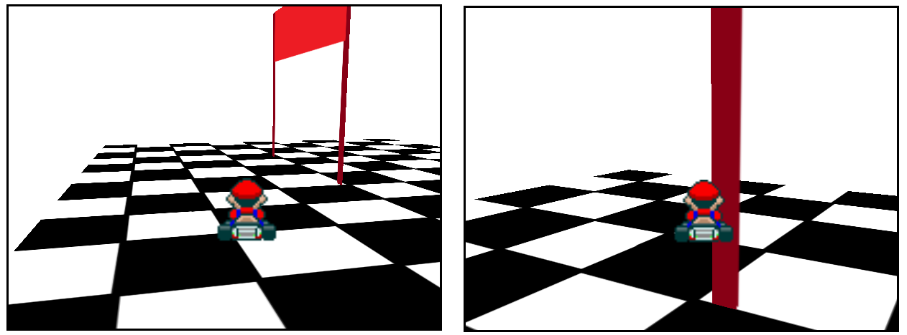
  <br>
  <br>
  <hr>
  <br>
  <h3>Subtlety #5: browser support?</h3>
  <p>I said earlier that CSS3D works fine... most of the time. Indeed, you may encounter a few glitches, or even some elements that disappear completely while they should be here, but that's the fault of the browsers, and Firefox in particular.
  <p>First, some parts of the scene can look broken if the camera is too close to them. It happens with the road for example, as you can see during a few frames of the previous GIF. This happens on both Chrome and Firefox, but for their defense, my camera was VERY close to the road (like, 20px high). The solution is to put the camera a bit higher.
  <p>Then, with the great help from Keith Clark, I understood why Firefox hides the kart behind the scene in this case: 
  <blockquote class="twitter-tweet" data-lang="fr"><p lang="en" dir="ltr"><a href="https://t.co/3dQEHSz4zW">https://t.co/3dQEHSz4zW</a><br>Most Chrome glitches are fixed by putting the camera a bit higher. But sadly <a href="https://twitter.com/firefox">@Firefox</a> still has too many depth bugs: <a href="https://t.co/phGJaGOGTU">pic.twitter.com/phGJaGOGTU</a></p>&mdash; xem (@MaximeEuziere) <a href="https://twitter.com/MaximeEuziere/status/782996905840304129">3 octobre 2016</a></blockquote>
  <script async src="//platform.twitter.com/widgets.js" charset="utf-8"></script>
  <p>As you can see in his <a href="https://github.com/xem/CSS3Dprototypes/pull/1">super detailed pull request</a>, the order of the elements in the DOM is super important to help the browsers draw the "above" elements above, and the "below" elements below, and not the other way around. He also explains that Firefox completely stops doing any depth-ordering effort if your scene contains more than 100 children. In that case, you need to reorganize your DOM manually at each frame... or more realistically, just completely drop Firefox support for your game!
  <br>
  <br>
  <hr>
  <br>
  <b>2017 update:</b>
  <br>
  - My JS1k entry "Can I haz 1Karrot" uses many tricks discussed here plus a lot of new ones. It arrived 8th!<br>You can read more in the dedicated blog post and detailed source code <a href="http://xem.github.io/articles/#js1k2017">HERE</a>.
  <br>
  <br>
  - Since April, Firefox no longer limits CSS3D scenes to a maximum of 100 elements! You can use as many elements as you want, but don't rejoice too fast: Firefox is still very glitchy with CSS3D...
  <br>
  - My JS13KGames entry LOSSST is also entirely rendered in CSS3D (and emoji). It arrived 1st twice and 2nd twice. <br> There's a complete making of <a href="http://xem.github.io/articles/#js13k17">HERE</a>
  <hr>
  <br>
  <p>Happy game making! If you have questions, feel free to get in touch on <a href="https://twitter.com/MaximeEuziere">Twitter</a>, <a href="https://gitter.im/codegolf/JS-golfing">Gitter</a> or <a href="https://js13kgames.slack.com/messages/general/">Slack</a>!
  <p>Cheers,
  <br>@MaximeEuziere
</div>


<div class=section id=jsgamesinputs>
  <h2>Some subtleties of keyboard inputs in JS games</h2>
	<h3>september 2016, january 2017, febuary 2018</h3>
  <br>
  <hr>
  <br>
  <p><b>TL;DR - state of the art:</b>
  <pre class=code><b>// Update four variables (u,l,d,r) based on Arrow keys, WASD or ZQSD inputs. (73b)</b>
u=l=d=r=0;onkeydown=onkeyup=e=>top['lld*rlurdu'[e.which%32%17]]=e.type[5]</pre>
  <br>
  <hr>
  <br>
  <p>After <b>JS13kGames 2016</b>, <a href="https://js13kgames.slack.com/archives/general/p1474388987001061">we realized on Slack</a> that many games were only playable with W, A, S, D keys, and many players were bothered by that.
  <p>In this article I'll cover this point plus a few other subtleties of keyboard input in JS, and provide a tiny library that you can drop directly in your future games to get these problems out of the way.
  <br>
  <br>
  <hr>
  <br>
  <p><h3>The WASD issue</h3>
  <p>WASD keys can be used as an alternative for arrow keys in a vast majority of keyboards worldwide. All QWERTY and QWERTZ keyboards (and some hybrid keyboards like <a href="http://cdn1.matadornetwork.com/blogs/1/2012/03/Russian-Keyboard-13-600x267.jpg">QWERTY/russian</a> for example) support this pattern just fine. But there's another layout widely used too (especially in France, Belgium and Canada): AZERTY. On this kind of keyboard, WASD becomes ZQSD. Other minor layouts exist but we can ignore them for now.
  <p>So the idea is to teach game developpers to natively support not only WASD, but also ZQSD <b>AND</b> arrow keys! Why support only one scheme when we can please everyone with a super light overhead?
  <p>To sum up, up arrow must be aliased with W and Z, left arrow with A and Q, right arrow with D, and down arrow by S.
  <br>
  <br>
  <hr>
  <br>
  <p><h3>The JS keyboard events issue</h3>
  <p>As you can see on <a href="http://xem.github.io/miniKeyCode/complete.html">this page displaying the keyCodes of all your keyboard events</a>, when you press a key, two events are fired by the browser: keydown and keypress. when you release it, another event is fired: keyup. And if you keep a key pressed for a moment (depending on your OS settings), after a short pause during which nothing happens, both keydown and keypress are fired repeatedly. There's also an "input" event, but it happens only in form elements, so it's not really relevant here.
  <p>There are many problems with this default behavior: firstly, this pause that happens after pressing a key is not good for a video game. If you play a platform game, you don't want Mario to stay idle for a few frames before running or jumping. And secondly, the keypress event is totally messed up (look at the keyCode returned by this event when you press letter keys or arrow keys, and you'll see absurd values almost everytime, and different absurd values depending on the browser you're using.
  <p>So my advice is to avoid relying on keypress events altogther, and also to avoid relying on keydown at each frame to see if a key is down or not, because the pause will bother your players.
  <br>
  <br>
  <hr>
  <br>
  <p><h3>The solution</h3>
  <p>So here's a super short solution to all these issues.
  <p>It introduces four global boolean variables to keep in memory the state of each direction.
  <p>Of course, feel free to fork it and replace them with non-global vars if you want, but for this example, I'll just keep things simple, and who cares about global vars in code-golfing anyway? <a href="https://twitter.com/SuperCPMaker/status/769855521302151168">Okay, maybe everyone cares, but not me!</a> :p
  <p>So here's the code:
  <pre class=code>// Keys states (false: key is released / true: key is pressed)
up = right = down = left = false;

// Keydown listener
onkeydown = (e) => {

  // Up (up / W / Z)
  if(e.keyCode == 38 || e.keyCode == 90 || e.keyCode == 87){
    up = true;
  }
  
  // Right (right / D)
  if(e.keyCode == 39 || e.keyCode == 68){
    right = true;
  }
  
  // Down (down / S)
  if(e.keyCode == 40 || e.keyCode == 83){
    down = true;
  }
  
  // Left (left / A / Q)
  if(e.keyCode == 37 || e.keyCode == 65 ||e.keyCode == 81){
    left = true;
  }
}

// Keyup listener
onkeyup = (e) => {
    
  // Up
  if(e.keyCode == 38 || e.keyCode == 90 || e.keyCode == 87){
    up = false;
  }
  
  // Right
  if(e.keyCode == 39 || e.keyCode == 68){
    right = false;
  }
  
  // Down
  if(e.keyCode == 40 || e.keyCode == 83){
    down = false;
  }
  
  // Left
  if(e.keyCode == 37 || e.keyCode == 65 || e.keyCode == 81){
    left = false;
  }
}
</pre>
  <p>Then, during you game loop, you just need to rely on the state of these four variables to know if the player is currently pressing a direction (or an alias in WASD or ZQSD) or not!
  <p>Want to see a demo? Of course! Just launch the first level of <a href="http://js13kgames.com/entries/super-chrono-portal-maker">my js13kgames entry</a>. It uses this exact technique :)
  <br>
  <br>
  <hr>
  <br>
  <p>P.S: if you want a minified ang golfed version, here it is: only 160b! (the four vars u,r,d,l, are not booleans but just truthy and falsy)
<pre class=code>u=r=d=l=0;onkeydown=(e)=>t(e,1);onkeyup=(e)=>t(e);t=(e,v,l,i)=>{for(i in l={u:[38,90,87],r:[39,68],d:[40,83],l:[37,65,81]})if(l[i].includes(e.keyCode))top[i]=v}</pre>
<p>P.P.S: Here's a 122b version by @p01, using a radically different idea: a look-up table of keyCodes represented as a string, and ".which" instead of ".keyCode" (because it's the same thing):
<pre class=code>u=r=d=l=0;onkeyup=t=(e,v)=>top['lurd************************l**r************l*d***u**u'[e.which-37]]=v;onkeydown=e=>t(e,1)</pre>
  <br>
  <hr>
  <br>
  <p><b>january 2017 golfing</b>
  <p>I made a new version that's only 87b, but it works if the only keys you need to support are arrows, WASD and ZQSD (most of the other keys may collide with one of the four directions):
  <pre class=code>u=d=l=r=0;onkeyup=t=(e,v)=>top['lurdl*d*l*ur*u'[(e.which-37)%20]]=v;onkeydown=e=>t(e,1)</pre>
  <p>It fell down to 85b with the help of <b>nderscore</b>:
  <pre class=code>u=d=l=r=0;onkeydown=e=>(onkeyup=(e,v)=>top['lurdl*d*l*ur*u'[(e.which-37)%20]]=v)(e,1)</pre>
  <p>then 83, by merging the two event listeners:
  <pre class=code>u=d=l=r=0;onkeydown=onkeyup=e=>top['lurdl*d*l*ur*u'[(e.which-37)%20]]=e.type[3]<'u'</pre>
  <p>and finally 82 with <b>Subzey</b>'s touch:
  <pre class=code>u=d=l=r=0;onkeydown=onkeyup=e=>top['lurdl*d*l*ur*u'[(e.which+3)%20]]=e.type[3]<'u'</pre>
  <p><a href="demos/arrowkeys/1.html">(DEMO)</a>
  <br>
  <p>Note: there's no collision with the keys "E", "R", "T" "space", "shift" and "Enter", so you can also handle them just fine with just a 100 bytes:
  <pre class=code>E=R=T=_=s=e=u=d=l=r=0;onkeydown=onkeyup=z=>top['lurdlRdTl*urEu*_e**s'[(z.which+3)%20]]=z.type[3]<'u'</pre>
  <p><a href="demos/arrowkeys/2.html">(DEMO)</a>
  <br>
  <hr>
  <br>
  <p><b>Febuary 2018 update, thanks to @BalintCsala and @ETHProd !</b>
  <p>Here's how to save the state of four variables (u,l,d,r) based on Arrow keys, WASD or ZQSD, in 78b:
  <pre class=code>u=l=d=r=0;onkeydown=onkeyup=e=>top['lld*rlurdu'[e.which%32%17]]=e.type[5]</pre>
  <br>
  <p>And here's a different approach, where keydown events directly update two variables called X and Y using the arrow keys, in 56b only!
  <pre class=code>X=Y=0;onkeydown=e=>top["YXYX"[g=e.which%4]]-="0220"[g]-1</pre>
  <p>Unfortunately, if you keep one key pressed, the browser will make a short pause just after firing the first event, before firing around 60 times per second.
  <br>
  <p>NB: if you make a JS1k or itch.io game using these techniques, you'll need to replace 'top' with 'this' to avoid escaping your iframe.
  <br>
  <br>
  <hr>
  <br>
  <p>Cheers,
  <p><b>@MaximeEuziere</b>
</div>

<div class=section id=js13k2016>
  <h2>JS13kGames 2016: Super Chrono Portal Maker</h2>
	<h3>august-september 2016</h3>
  <br>
  <hr>
  <br>
  <h3>TL;DR:</h3>
  <p>You can play the game <a href="http://js13kgames.com/entries/super-chrono-portal-maker">HERE</a>! (please share!)
  <p>Try also my Codegolf Team's entry "26 games in 1" <a href="http://js13kgames.com/entries/26-games-in-1">HERE</a> (please share too)! 
  <p>You can see all the shared levels (and share yours) <a href="https://twitter.com/search?f=tweets&q=%23SuperChronoPortalMaker">HERE</a>.
  <p>You can follow the official account @SuperCPMaker <a href="https://twitter.com/SuperCPMaker">HERE</a>.
  <p>The Github repo of the game is <a href="https://github.com/xem/js13k16">HERE</a>.
  <p>The speedruns of the game are <a href="http://www.speedrun.com/Super_Chrono_Portal_Maker">HERE</a>. (warning: spoilers!)
  <p>The game was ranked 3rd in the <a href="http://js13kgames.com/#winners">Desktop category</a>!
  <br>
  <br>
  <hr>
  <br>
  <h3>Preparation</h3>
  <p>This year, I was really into 2D platforming.
  <p>I developed a <a href="https://github.com/xem/platform-engine">platform engine</a> during my free time.
  <p>We also discussed on <a href="https://js13kgames.slack.com">JS13k's slack</a> about the idea of a "13kb Mario Maker". This idea made me develop <a href="https://github.com/xem/js13k-level-editor">a 1kb level editor</a> with shareable URLs, that all js13k's devs can use in their games...
  <p>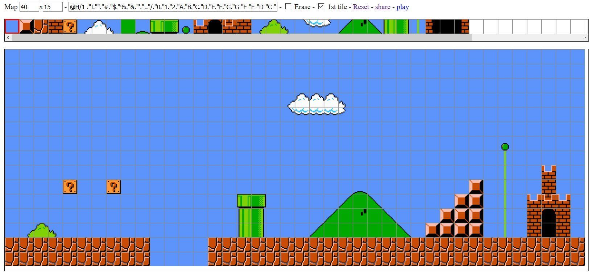
  <p>As I was a bit rusty on 2D maths, I also made this <a href="https://gist.github.com/xem/99930986c5333125a13b0ea50600391f">trigonometry cheat-sheet for 2D games</a> that many people found very useful.
  <p>I also made a <a href="https://github.com/xem/js13k-graphics-editor">tiny graphics editor</a>, to help devs produce line-based graphics quickly and lightly (like I did for my 2015 entry GeoQuiz).
  <p>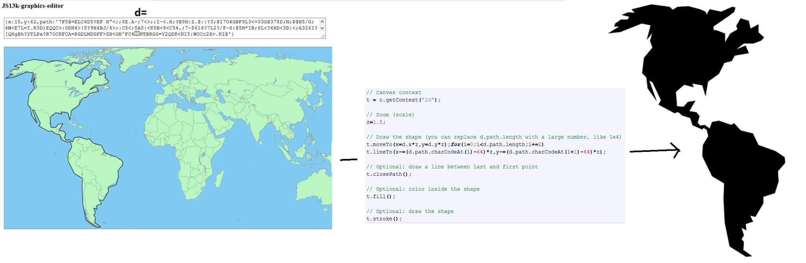
  <p>And finally, <b>@innovati</b>, <b>@p01</b> and I, made a graphical music composer called <a href="http://xem.github.io/miniPiano">miniPiano</a> that lets you draw a melody and outputs a tiny piece of JS code to play it back.
  <p>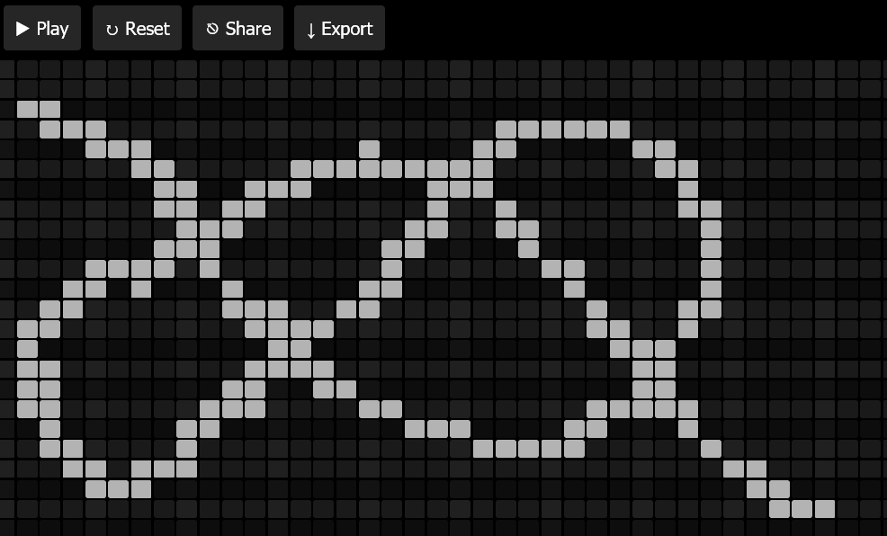
  <p>Everything is ready to make a cool game now!
  <br>
  <hr>
  <br>
  <h3>Week-end 1</h3>
  <p>When JS13kGames 2016 started, I remembered this Mario Maker idea and decided to mix it with two other of my favourite games, Portal (no presentation needed) and <a href="http://www.kongregate.com/games/scarybug/chronotron">Chronotron</a> (a Flash game that lets you rewind time and collaborate with your past self to solve puzzles).
  <p>The idea of mixing Mario and Portal also comes from <a href="files/SuperMarioPortal.zip">Super Mario Portal</a> by "Moumou" (20Mb, made with RPG Maker!) and <a href="http://stabyourself.net/mari0/">Mari0</a> by StabYourself.
  <p>The idea of mixing Portal and time travel also comes from <a href="http://store.steampowered.com/app/286080/">Thinking with Time Machine</a>, a great Portal 2 mod.
  <p>Some inspiration can also be found in <a href="http://braid-game.com/">Braid</a> (for time travel) and <a href="http://www.kongregate.com/games/radx/enough-plumbers">Enough Plumbers</a> (for the multiple Mario gameplay).
  <p>And for the record, <a href="https://blog.applepinegames.com/2d-portals-e293dc41a61e?gi=fb8d223c78e9">this article</a> is a great resource about 2D portals implementation!
  <p>So I wanted to make a game featuring most of the cool mechanics of these three games (Mario, portal gun, time travel, mechanisms, companion cube, traps, and of course a level editor), but also being something completely unseen before.
  <p>The theme of js13k this year is "Glitch!", and to include it in my game, I decided to provoke glitches in case of time paradoxes... (and in a few other cases).
  <p>Like previous years, my personal challenge was to make a game so big that it would be complicated to make it fit in 13kb. So with this puzzle-maker idea, I believed it would be a hard (and fun) task to achieve. I really wanted to make a game that was a complete system with a lot of interesting rules, and with a quality high enough that no player would guess that its size was limited (and make them wonder how all that can fit in 13kb).
  <p>Unlike previous years, my source code before minification will be really readable: well commented, cut into multiple files, and with explicit variable names! I'll do all the optimizations at the end instead. I can't promise that the code will be clean and mainainable, but at least, it'll be readable.
  <p>Last detail: last year, half of the zip was used by the game's data (the world map, the names of countries, capitols, famous places, etc), but this year, I'll really focus on filling it with a lot of code and a ton of features, instead of data. So, to sum up, I don't wanna look lazy this year...
  <br>
  <p>During this first week-end, I wrote the game's specs, then I drew all the images of my game into this spritesheet...
  <p>
  <p>... of course, inspired by Super Mario Maker, Chronotron and Portal, but without the copyrights:
  <p>
  <p>I also developed basic menus (title screen, level selection screen...) and started to develop the main features of the level editor (select tiles, place them on the map, etc).
  <p>All the following screenshots show the interface at the end of the week-end...
  <p>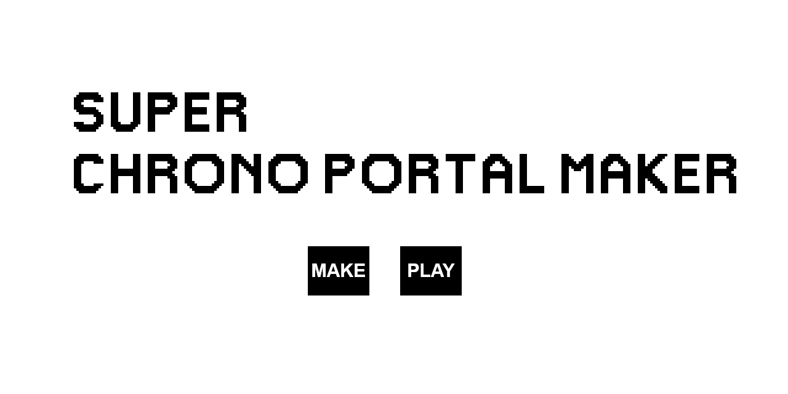
  <p>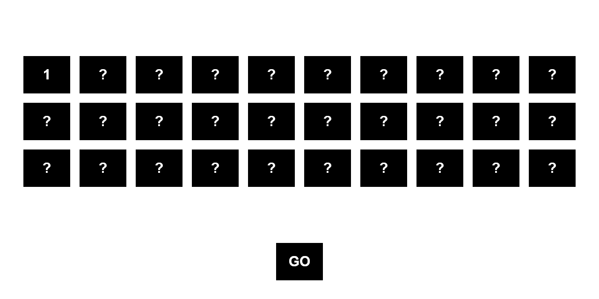
  <p>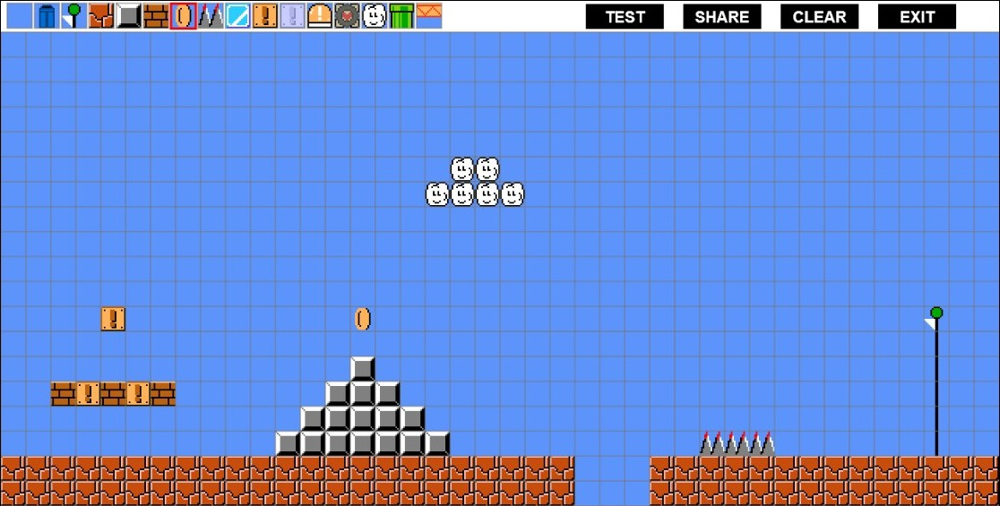
  <p>Current code size: ~7kb commented, ~1.5kb minified and gzipped. (plus a 1.8kb PNG)
  <br>
  <br>
  <hr>
  <br>
  <h3>Week 2</h3>
  <p>During the first half of this week, I developed the level editor, to give it strict rules (eg. only one starting point, only one end flag, the ability to place green pipes and switches that make them go up and down, the ability to place pairs of balanced platforms, etc...).
  <p>To do that, I had to define a precise format for saving the levels, a format that allows to store all the level's tiles in a grid of 40 * 20 ASCII characters (which is the most compressible output I could find while developing the 1k level editor), plus information about linked elements (pipes and switches, pairs of balanced platforms, etc). And all this data needs to be serializable in a string shorter than 4096 bytes, in order to be easily shareable via an URL on twitter.
  <p>Here's what the data of a level looks like:
  <p><pre class=code>// As a JS object:
level_data = {
  tiles: [
    [0, 0, 1, 2, ...],
    [3, 2, 0, 0, ...],
    ...
  ],
  pipes: [
    [x, height_1, height_2, switch_x, switch_y],
    ...
  ],
  balances: [
    [x1, y1, x2, y2],
    ...
  ]
};</pre>
  <p><pre>// As an URL:
http://...#{hash:"0012...",I:[[x,height_1,height_2,switch_x,switch_y]...],J:[[x1,y1,x2,y2]...]}</pre>
  <p>I also added many checks in the code of the editor to prevent to draw overlapping pipes and balances, and also to avoid overwriting important elements of the map (like the pipes or the time machine) to avoid bugs.
  <p>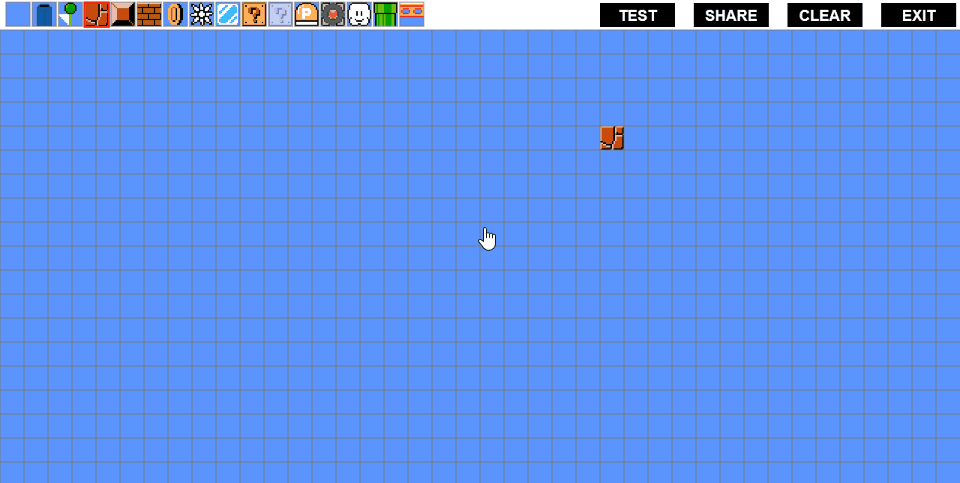
  <p>The whole code, including the menus, the complete level editor, as well as the "share", "clear" and "exit" buttons, is 19kb commented, and 2.16kb minified and gzipped. (plus the usual 1.8kb PNG)
  <p>~
  <p>At the end of the week, I designed the first levels of the game, which will be useful for me, to develop the game's engine in "real conditions".
  <br>
  <br>
  <hr>
  <br>
  <h3>Weeks 3 &amp; 4</h3>
  <p>During these two weeks I wrote the game's engine, little by little. Here's my TO DO list, plus some GIFs I tweeted while developing it:
  <p><b>General stuff:</b>
  <ul>
  <li>✅ Load/draw a level
  <li>✅ Restart with "R"
  <li>✅ Quit by clicking on the black "x" 
  <li>✅ Record all the inputs (in order to be able to play them back after time travels)
  <li>✅ Animate the hero (use different sprites, walk, jump, die, turn left or right, etc)
  </ul>
  
  <p><b>Basic controls:</b>
  <ul>
  <li>✅ Fall
  <li>✅ Move left / right
  <li>✅ Jump
  <li>✅ Collisions in the four directions
  <li>✅ Break brick tiles by jumping under them
  <li>✅ Collect coins
  <li>✅ Die by falling (<a href="https://twitter.com/SuperCPMaker/status/764910763442114560">Oops!</a>)
  <li>✅ Die by touching a spike
  <li>✅ Win by touching the flag if all the coins are collected
  <li>✅ Hold/drop/throw a companion cube
  <li>✅ Stand on companion cubes (they're only solid on the top side)
  <li>✅ Stack cubes (<a href="https://twitter.com/SuperCPMaker/status/765800431884828672">Oops!</a>) (<a href="https://twitter.com/SuperCPMaker/status/774631449462964225">WOW!</a>)
  <li>✅ Slip on ice (unless we're standing still) (<a href="https://twitter.com/SuperCPMaker/status/769540427875815424">Nice!</a>)
  </ul>
  <p>(at this point (and after a little refactoring session), the JS code fits in ~3.6kb minified and gzipped. The zip takes 5.4kb.)
  <p><b>Mechanisms</b>:
  <ul>
  <li>✅ "!" blocks and toggle switches (<a href="https://twitter.com/SuperCPMaker/status/768152146642698242">Oops!</a>) (<a href="https://twitter.com/SuperCPMaker/status/766972885097324544">Nice!</a>)
  <li>✅ Pipe elevators and switches makes them move  
  <li>✅ The hero dies if he's crushed by a pipe or a balance (<a href="https://twitter.com/SuperCPMaker/status/769547241845645312">Nice!</a>)
  <li>✅ Switches can be pressed by cubes (<a href="https://twitter.com/SuperCPMaker/status/766967775541669888">Oops!</a>) (<a href="https://twitter.com/SuperCPMaker/status/766969188405555200">Nice!</a>)
  <li>✅ Balanced platforms (that move if more weight is on one side)
  <li>✅ The hero can go on a platform from below (only solid on top)
  <li>✅ Cubes can make balanced platforms move (<a href="https://twitter.com/SuperCPMaker/status/767001327369003008">Oops!</a>) (<a href="https://twitter.com/SuperCPMaker/status/767033151067750400">Nice!</a>)
  </ul>
  <p>(Little refactoring... current zip size with 5 levels: 6.5kb)
  <p><b>Portals:</b>
  <ul>
  <li>✅ Portals (mouse to aim, left/right click to shoot) (<a href="https://twitter.com/SuperCPMaker/status/768511361466916864">WIP</a> <a href="https://twitter.com/SuperCPMaker/status/768879901084614656">Nice!</a>)
  <li>✅ Portals push you out (<a href="https://twitter.com/SuperCPMaker/status/769232540934823936">Nice!</a>)
  <li>✅ Portal ray bounces on ice (<a href="https://twitter.com/SuperCPMaker/status/769446044388233216">Nice!</a>)
  <li>✅ The hero keeps his momentum when he goes through a portal (<a href="https://twitter.com/SuperCPMaker/status/769293696420417536">Nice!</a>)
  <li>✅ Cubes an be dropped or carried through a portal (they keep momentum too) (<a href="https://twitter.com/SuperCPMaker/status/769533899651346432">Oops!</a>) (<a href="https://twitter.com/SuperCPMaker/status/769536708949991424">Nice!</a>)
  </ul>
  <p>(Huge refactoring (it took 5 days)... current zip size with 10 levels: 8.2b)
  <p><b>Time travel:</b>
  <ul>
  <li>✅ Time machine (press shift to rewind time and play with your previous version(s)) (<a href="https://twitter.com/SuperCPMaker/status/772184450637656065">Nice!</a>)
  <li>✅ Multiple time travels (<a href="https://twitter.com/SuperCPMaker/status/772399726092312576">Nice!</a>)
  <li>✅ Show which one is the "current" hero
  <li>✅ The hero can walk on a cube held/dropped/thrown by another version (<a href="https://twitter.com/SuperCPMaker/status/773943440518316032">Nice!</a>)
  <li>✅ Game over if a previous version doesn't reach the time machine (a.k.a. Paradox) (<a href="https://twitter.com/SuperCPMaker/status/772893860360024064">Glitch!</a>)
  <li>✅ Game over if a previous version dies too
  <li>✅ Previous version can collect coins, take/drop cubes, press switches, walk on pipes, walk on balanced platforms, launch portals, go through past/present/future portals, get the flag.
  <li>✅ Previous versions can "steal" cubes to present hero and disable his portals by firing their own portals (and vice-versa)
  <li>✅ Clouds! (<a href="https://twitter.com/SuperCPMaker/status/774522976356237312">Nice!</a>).
  </ul>
  <p>(Another refactoring...current zip size with 15 levels: 10.5kb)
  <br>
  <br>
  <hr>
  <br><h3>Weeks 5 &amp; 6</h3>
  <p>These two weeks (actually, one week plus two days) were consacred to the creation of the final levels included in the game, the music, the debugging and the polishing:
  <ul>
  <li>✅ Proper custom level testing and sharing (on Twitter).
  <li>✅ 30 levels in total (most of them are actually tutorial levels). Thanks to Adrien Guéret for designing a few and beta-testing the others!
  <li>✅ Sound (Thanks to Anders Kaare!)
  <li>✅ Next levels unlock after clearing one.
  <li>✅ Save progress and chronos in Local Storage
  <li>✅ "Developer times" to beat by speedrunners (cumuled record: 9 min 55 sec)
  <li>✅ Video record for all the dev times (for speedrun.com)
  <li>✅ Final title screen
  <li>✅ Inline the tileset in base64
  </ul>
  <p>(current zip size: 13.9kb)
  <br>
  <p>There's an <a href="https://twitter.com/SuperCPMaker/status/773988452903903232">important discovery</a> made a few days before the deadline: Advzip, a zip optimizer/recompressor is able to save around 1kb out of a 13kb zip. By passing my current zip through Advzip, it only takes 12.8kb. We're still below the limit! Maybe we can have some music...
  <p>At this point, my commented source code weighs 114kb (scattered in 12 files and containing more than 3600 lines of code), and shrinks to 72.4kb when minified (including 27kb of level data)
  <p>And yes, as incredible as it sounds, once zipped, all that code fits in less than 13kb!
  <p><b>Golfing:</b>
  <ul>
  <li>✅ Just one HTML file with all the game contents
  <li>✅ Inline the functions that are only called once
  <li>✅ Optimize the JSON of the built-in levels
  <li>✅ All the game variables, hero / level / cube properties and functions are renamed to 1 to 2 chars
  <li>✅ All the function params are renamed to e,f,g,h
  <li>✅ Explicit "window" references are removed
  <li>✅ Shorten Twitter URL
  <li>✅ Minification, zip, advzip
  </ul>
  <p>Zip size after this golfing: 11.1kb!
  <br>
  <br>
  <p><b>Final touch</b>
  <p>With 24 hours left and nearly 2kb available in my zip, I called Anders Kaare to save my life once again. He made me <a href="http://codepen.io/xem/pen/amdOQr">a great collection of sounds</a> plus <a href="http://codepen.io/xem/pen/VKZvaj">a gorgeous musical theme</a> in no time!
  <p>I also added a hidden, super difficult level and recorded all my developer times as a challenge for speedrunners.
  <p>All these latest details were added in a hurry, without any form of optimization or golfing.
  <p><a href="https://twitter.com/SuperCPMaker/status/775285475691167744">Final beta-testing with my colleagues!</a> 
  <br>
  <br>
  Final interface:
  <br>
  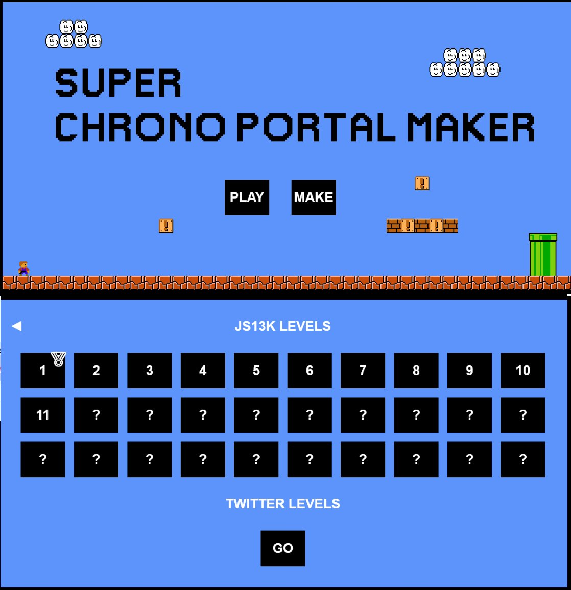
  <br>
  <br>
  <hr>
  <br>
  <p><b>Conclusion</b>
  <p>This project took me nearly 200h to complete, much more than any of my previous entries, and more than any of my previous personal projects!
  <p>There's a lot more that could be done, but I ran out of time and energy... but never ran out of free space! My final zip is just 12.5kb!
  <p>I'm still very happy with the result, and hope that a lot of people will enjoy it and create stunning levels!
  <p>Thanks js13kgames, and Andrzej, and Anders for the music, and all the people that helped me and supported me during this compo, and see you next year for something even bigger! :D
  <br>
  <br>
  <hr>
  <br>
  <p><b>One week later</b>:
  <p>People play and enjoy the game, they also start <a href="https://twitter.com/hashtag/superchronoportalmaker?f=tweets&vertical=default&src=hash">making cool levels</a>, and <a href="https://twitter.com/bartaz/status/776345873659863040">they speedrun it too</a>! That's great!
  <p>I also took the time to speedrun it as fast as I could (better than my own "dev times" in the game), and you can see the result <a href="https://www.youtube.com/embed/tPVFB0ZtQD8">here</a> (warning, spoilers!):
  <p>But even if you create something and think you master it, <a href="https://twitter.com/bartaz/status/776461265208221696">someone will always be better than you</a>, and it's just awesome!
  <br>
  <br>
  <hr>
  <br>
  <p><b>Two weeks later</b>:
  <p>Publication of the <a href="http://js13kgames.com/#winners">final results</a>:
  <p>- Super Chrono Portal Maker was ranked 2nd in Community votes. 26 games in 1 was ranked 10th! Thanks guys! 
  <p>- Super Chrono Portal Maker was ranked 3rd in the Desktop category (and 26-games-in-1 54th)! Thanks jury!
  <br>
  <br>
  <p>Also, these playtests by Jupiter Hadley:
  <p>- <a href="https://youtu.be/HCs5G8TH1kc?t=802">Super Chrono Portal Maker</a>
  <p>- <a href="https://youtu.be/vlpkjNJ8UmQ?t=449">26-games-in-1</a>
  <br>
  <br>
  <hr>
  <br>
  <p><b>2017 update:</b> <a href="//youtu.be/M4OpUwAvZEY">A new speedrun in 6:18.40!</a>
  <br>
  <br>
  <hr>
  <br>
  <p><b>Cheers!<br>@MaximeEuziere</b>
</div>


<div class=section id=eqcss>
  <h2>EQCSS: The Search For The Holy Grail: How I Ended Up With Element Queries, And How You Can Use Them Today</h2>
	<h3>july 2016</h3>
  <p>A great article written by @innovati about our Element Queries library got published on Smashing Magazine!
  <p>You can read it <a href="https://www.smashingmagazine.com/2016/07/how-i-ended-up-with-element-queries-and-how-you-can-use-them-today/">HERE</a>!
  <p>
</div>

<div class=section id=fatigue>
  <h2>Shitty systems & superfluous hacking fatigue</h2>
  <b>or: How we waste most of our lives struggling to obtain the most basic features from overly complicated and badly designed systems</b>
	<h3>june 2016</h3>
  <p>For once, this isn't a regular front-end blog post. It's a rant post, complaining about the fatigue of having to hack our way through the shitty systems that surround us more and more everyday. Heck, I'm an old engineer, I'm used to shitty systems. My work even consists in dealing with some of the most shitty systems out there: Web browsers. But today, I'll complain about what they call "smart" phones. Warning: curses inside.
  <p>I won't mention my own phone, as it's a Lumia 735 that comes from a batch built with some shitty component that makes it <a href="https://www.google.com/search?q=lumia+735+reboot&ie=utf-8&oe=utf-8&client=firefox-b-ab">reboot randomly</a>, and which is not even capable of installing or updating any application since I (painfully) installed Windows 10 on it. So I'm already screwed in this domain.
  <p>But as every engineer, I have relatives that think it's my job to "know these things" and my passion to make them work.
  <p>Anyway, my mom has a relatively new Samsung Galaxy S5 Mini smartphone, running on Android 4.4. She makes a very basic usage of it, besides calling people: she takes a ton of pictures, "edits" them through the Google Photos app and posts them on Facebook.
  <p>It all began when she wanted "more memory", translate: more space to store the photos on the phone, even if they're backed up in the cloud. Sure, whatever, a 64GB Samsung microSD card is less than 25€ nowadays, so let's buy one and install it.
  <p>Rightaway, I try to use my PC to transfer all the photos from the internal 16GB memory to the microSD card... For some reason, i'm not allowed to do it, and have to use the embedded shitty file explorer to do it directly on the phone. It takes hours, and in the process, changes the creation date of every file to the present day, which results in many albums being mixed up in Google Photos. Screw you, file explorer. 
  <p>Fast forward a few days, I get a complaint that the phone freezes every couple hours, and that Google Photos pops a write error everytime we try to edit a photo and save it. And since I'm the last one who touched it, It's my fault, obviously.
  <p>So I take the phone back and try to figure out what the fuck is shittening... After a long search, it turns out this version of Android has a default setting that locks writes on the MicroSD card for most non-native applications, for the user's safety or some shit like that. That's why the default camera app could take pictures and save them on the card, but Google Photos, installed via the Play Store, couldn't edit them in place. And even if I have no proof, I'm pretty certain that Google Photos provoked some sort of memory leak because of this card lock, which was responsible of the freezes. But I digress. Also, I won't mention the fact that an OS made by Google forbids an application made by Google to write on my SD card for my safety, because fuck logic.
  <p>Before going further, I take a look at the "firmware update" page of the phone settings, which tells me that a 900MB update to Android 5 is downloaded and ready to install, but every attempt to start the upgrade fails lamentably and there's no solution. WHATEVER. 
  <p>Okay so how can I disable this default SD lock on 4.4? Turns out, it's just a matter of setting a value to "true" in a XML file stored in the system partition of the phone. But it would be too simple if this partition was visible with a file explorer or a PC. No, I have to install one of the dozens "SD unlock" apps of the Play Store, which will do that for me.
  <p>But here's the joke, all those apps weigh a few MB and require something called "root access". Yes. All that, just to edit a fucking line in a fucking XML file. Okay whatever Google, tell me how I can root your shitty OS, I'm tired now.
  <p>Rooting an S5 Mini, for some reason, is not as easy as any other fucking Android phone. On this one, the regular rooting solutions fail, and tell me to try somewhere else, generally redirecting me to a Windows software with better success rates.
  <p>I plug the phone to my laptop using the mini-USB data cable of my Windows Phone (that's the only one I have on me)... Error: Unrecognized peripheral. Moving to the USB3 port... it works. ah, no. Ah, yes. Ah, no. this motherfucker blinks, and alternates between connected and disconnected every second. The fuck! Root tutorials tell me to install a fork of the Samsung USB drivers without some shitty adware that they include in every exe... impossible to find a live download link. Fuck it, I install the official drivers. It changes nothing. FUCK. Just to be sure, I borrow a genuine Samsung mini-USB data cable... oh. well, it seems to work, but I wouldn't call it stable (still makes some disconnection blinks every minute or so.) Modern Android systems don't behave like a hard drive when connected to a PC but use another shitty "multimedia storage" protocol that seem to be the reason why it's so unstable. Whatever I try, I gotta do it very quickly. I start KingoRoot (the only software that seems genuine in the middle of all the scams), and it tells me to enable the "USB debugging" feature of my phone.
  <p>Huh? No USB debugging in the settings.
  <p>- Me: "Google, WTF?"
  <br>- Google: "USB debugging is in the developper settings ( ͡° ͜ʖ ͡°)".
  <br>- Me: "Oh okay, cool... wait, Google, where are the developper settings?"
  <br>- Google: "They're hidden, for your safety ( ͡° ͜ʖ ͡°)".
  <br>- Me: "FUCK YOU GOOGLE, HOW DO I SHOW THEM?"
  <br>- Google: "Go in System Settings and tap eight times the 'version number' line ( ͡° ͜ʖ ͡°)".
  <br>- Me: "(╯°□°)╯︵ ┻━┻".
  <br>- Google: "¯\_(ツ)_/¯"
  <p>A few minutes later, KingoRoot agrees to start working, and at 70%, the phone restarts. Wait, what? Is that part of the process? Of course not. KingoRoot hangs, the phone reboots half-rooted, which is as useful as no rooted at all.
  <p>Second try: plug the phone, launch KingoRoot, wait until 100%, and both KingoRoot and the phone tell me victoriously that the root has been successful... ly... removed. THE FUCK? all it did was removing the previous root attempt.
  <p>Third try: Same process, it arrives to 100%, and this time it tells me that it seems to have worked.
  <p>I launch the SD unlock app, it asks me the permission to request root access, I say OK, it says "processing...", then "Failed. Your phone may not be rooted.". EAT MY ASS, PHONE!
  <p>I install and launch another 25MB (!) app called Root Checker whose only purpose is to tell me if my phone is rooted, and the answer is yes. GODDAMMIT.
  <p>I retry the SD unlock app, allow it to ask root access, "processing...", and then it tells me that it's sorry but my XML file has already been successfully edited. GO BURN IN HELL, APP.
  <p>I finally made it, after hours of shitty hacking. Hours of my life wasted because of shitty systems, with shitty protections, shitty drivers, shitty protocols and shitty error handling. And it's not the first time something like that happens to me or to someone I know! But apart from tiring the hell out of me, this adventure made me wonder...
  <p>How could a non-engineer, or someone who doesn't have an entire day to waste could have resolved this problem? How could my mother could have done one percent of what I did? She doesn't even have a computer! Are non-tech-savvy people doomed to live with more and more buggy products? Will they soon be rejected by the society, where only the best hackers will be able to make modern devices work? Will we reach a point where even the best hackers, or the people who make these systems, won't event be able to use them?
  <p>Or will there be a savior, a company that builds better systems than Google, Apple and Windows, systems that just work, without any hack? Free startup idea for you, guys! How about me? I won this battle, but the shit-hack fatigue got me. I'm gonna live in the wood and tame goats. See ya.
  <p><b>Xem</b>
</div>


<div class=section id=webgl_quest>
  <h2>The quest of the 🌍🔬🕸🇬🇱🎠 (World's Smallest WebGL Playground)</h2>
	<h3>april to june 2016, january 2017</h3>
  
  <br>
  <hr id="webgl_quest_2017">
  <br>
  <h3>01/2017 update</h3>
  <p>We made an entry for JS1k 2017 featuring all the tricks of this article, plus a nice UI and great compatibility with Shadertoy.com. It was ranked #7!
  <p>
  <br>
  <br>
  <p>You can find the entry <a href="http://js1k.com/2017-magic/demo/2645">HERE</a>.
  <br>
  <p>The commented source code is <a href="https://github.com/xem/MiniShadertoy/blob/gh-pages/js1k.html">HERE</a>.
  
  <br>
  <br>
  <hr>
  <br>
  <h3>Full Story</h3>
  <p>During the last few weeks, the codegolf team (including Mathieu 'p01' Henri, Martin 'Aemkei' Kleppe, Subzey, Anders Kaare, ...) has welcomed new members (LiterallyLara & HellMood, authors of JS1K 2016 winning entry <a href="http://js1k.com/2016-elemental/demo/2552">Romanesco 2.0</a>) and gave itself a nice challenge: develop the smallest possible HTML/JS (ES6) boilerplate that's able to run a WebGL fragment shader. It's currently as short as <b>349b</b>, and looks like this:
  <pre class=code style=padding:5px>&lt;canvas id=a>&lt;svg onload='for(i in g=a.getContext`webgl`)g[i[0]+i[6]]=g[i];with(g)vA(P=cP(setInterval(x=>dr(6,vertexAttrib1f(1,NO++),3),A=s=>sS(S=cS(FN++),id+"varying lowp vec4 p,t;void main(){gl_"+s)|ce(S)|!aS(P,S))),2,5120,bD(B=ET-3,Int8Array.of(A`FragColor=<b>[SHADER]</b>}`,B,!eV(bf(B,cB(id="attribute vec4 P,T;"))),A`Position=p=P;t=T;}`),B+82),!lo(P),ug(P))'></pre>
  <p>See <a href=#webgl_detailed_code>detailed source code</a> below!
  <p>With this boilerplate, you have access to a time counter <b>t.x</b> (a frame counter), the clip space coordinates <b>c</b> (representing gl_PointCoord), and all you need to do is replace <b>[SHADER]</b> with the value set by your shader to gl_FragColor, for example: <b style=background:#def>p+sin(atan(p.y,p.x)*9.)*sin(p*t.x/40.+9./dot(p,p)+t.x/40.);</b> (<a href=demos/webgl/psych.html>DEMO</a>).
  <p><u>Optional:</u>
  <p>- You can set the size of the canvas with things like <b style=background:#def>a.width=a.height=600;</b> or <b style=background:#def>a.width=outerWidth;a.height=outerHeight;</b> at the beinning of the JS code.
  <br>- You can change the animation speed by changing the way t is incremented, <b>NO+=.1</b> (t incremented by 0.1 at each frame) is often a better trade-off than <b>NO++</b> (t incremented by 1 at each frame).
  <p>Here are <a href="https://rawgit.com/literallylara/7c1f8dbe2effc415c746f3684beb8530/raw/08e31826be41cf87473a6949e0885b131328f807/Tiny%2520WebGL%2520Boilerplate.html">some gorgeous demos</a> made by LiterallyLara, with this template, in less than 512b.
  <p><a href="https://rawgit.com/literallylara/7c1f8dbe2effc415c746f3684beb8530/raw/08e31826be41cf87473a6949e0885b131328f807/Tiny%2520WebGL%2520Boilerplate.html">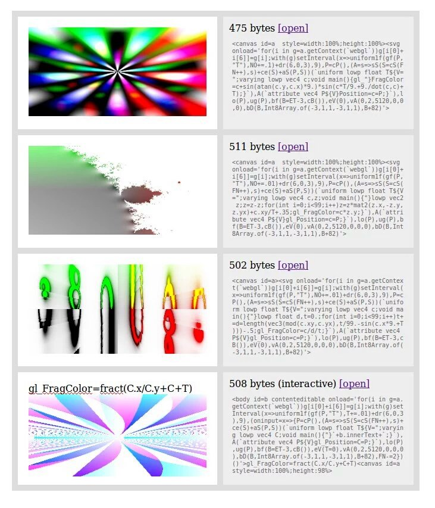</a>
  <p>For code-golfers and demosceners, this boilerplate offers a total of 163b dedicated to the shader in a 512b demo (or 675b in a 1kb demo, not counting the gain of RegPack or gzip): more than never before in the history of WebGL demo'ing!
  <br>
  <br>
  <hr>
  <br>
  <h3>Making-of & Interactive playground</h3>
  <p>Between 2014 and 2015, it took us nearly 60 golfing iterations to make the Codepen clone <a href="//xem.github.io/miniCodeEditor">miniCodeEditor</a> fit in 158b. Since then, I talked with Subzey and wondered if we could do something similar with WebGL, maybe a clone of <a href="//shadertoy.com">Shadertoy</a>. I tried many times to understand / simplify the source code of shadertoy, but it was too big and too complex (694kb of JS, with 148kb really dedicated to the app's engine.)
  <p>So I reversed the problem and decided to start from a finished, milimalist WebGL demo and try to make it editable, like on ShaderToy.
  <p>WebGL implementation is very (very) cryptic, but by chance, Lara's post-mortem gave me all the keys to get started.
  <blockquote class="twitter-tweet" data-lang="fr"><p lang="en" dir="ltr"><a href="https://twitter.com/elias_schuett">@elias_schuett</a> <a href="https://twitter.com/subzey">@subzey</a> well, this answers our questions about WebGL golfing. Thank for the post mortem! :)</p>&mdash; xem (@MaximeEuziere) <a href="https://twitter.com/MaximeEuziere/status/723863692245258240">23 avril 2016</a></blockquote>
<script async src="//platform.twitter.com/widgets.js" charset="utf-8"></script>
  <p>As a result, we managed to release, and golf <a href="//xem.github.io/MiniShadertoy">MiniShadertoy</a>, including almost all the features of Shadertoy in less than 1kb...
  <br>
  <br>
  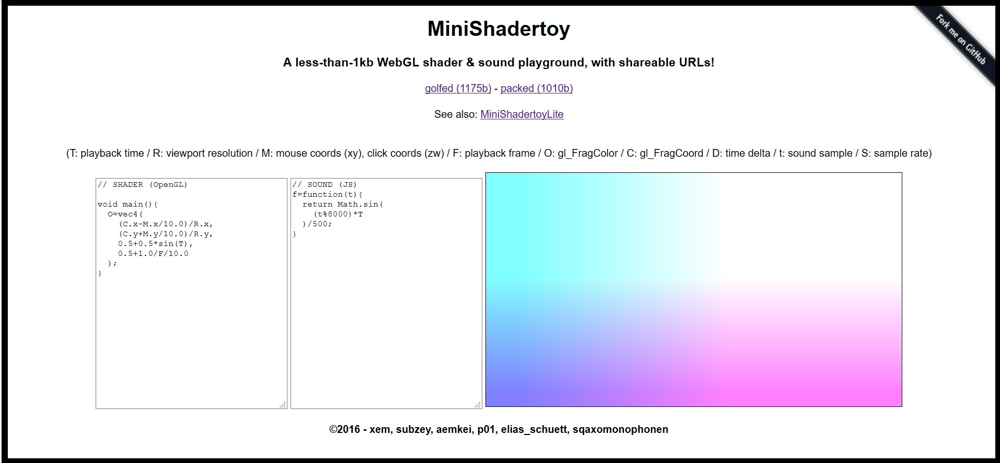
  <br>
  <p>and then <a href="//xem.github.io/MiniShadertoyLite">MiniShadertoyLite</a>, allowing to fiddle with just a fragment shader in less than 512b.
  <br>
  <br>
  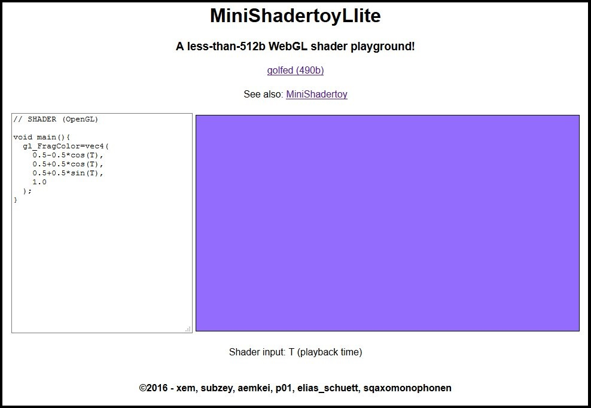
  <br>
  <p>While we were discussing about it, and how we could golf it even better, Aemkei had the idea to make a "static" boilerplate, basically the same thing as MiniShadertoy, but not editable. Just the strict minimum required to play a hardcoded shader.
  <p><br><a href="https://jsbin.com/qafebosibu/edit?html,output">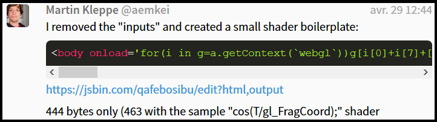<br></a>
  <p>You'll find below a sumary of all the golfing steps that led it to its final, almost unreadable form, and a "clean", commented version.
  <br>
  If you're not familiar with WebGL, you can start by reading the commented source code of MiniShadertoyLite <a href="https://github.com/xem/MiniShadertoyLite/blob/ab7a4b7f137745020d283a155b5210676055731a/index.html#L28-L92">HERE</a>. 
<p>How we code-golfed it, step by step:
<pre style="white-space:pre">
<b>// Step 1: start from MiniShadertoyLite, ignore the textarea, minify, apply RegPack's webgl method hashing, replace all the constants with their numeric value</b>

&lt;body onload='for(i in g=a.getContext(`webgl`))g[i[0]+i[7]+[i[13]]]=g[i];setInterval(`g.uniform1f(g.goa(P,"T"),T++);g.da(6,0,3)`,9);with(g)P=cr(),so(S=ch(35633),`attribute vec2 P;${V="void main(){gl_"}Position=vec4(P,0,1);}`),cS(S),ah(P,S),so(S=ch(35632),`precision lowp float;uniform float T;${V}FragColor=[SHADER]}`),cS(S),ah(P,S),lg(P),ur(P),bf(B=34962,cu()),eet(T=0),vto(0,2,5120,0,0,0),ba(B,new Int8Array([-3,1,1,-3,1,1]),35044)'>&lt;canvas id=a>

<b>// Step 2: simplify `gl_Position=vec4(P,0,1)` to `gl_Position.xy=P`</b>

&lt;body onload='for(i in g=a.getContext(`webgl`))g[i[0]+i[7]+[i[13]]]=g[i];setInterval(`g.uniform1f(g.goa(P,"T"),T++);g.da(6,0,3)`,9);with(g)P=cr(),so(S=ch(35633),`attribute vec2 P;${V="void main(){gl_"}Position.xy=P;}`),cS(S),ah(P,S),so(S=ch(35632),`precision lowp float;uniform float T;${V}FragColor=[SHADER]}`),cS(S),ah(P,S),lg(P),ur(P),bf(B=34962,cu()),eet(T=0),vto(0,2,5120,0,0,0),ba(B,new Int8Array([-3,1,1,-3,1,1]),35044)'>&lt;canvas id=a>

<b>// Step 3: place the `;` in the template, reuse B at the end</b>

&lt;body onload='for(i in g=a.getContext(`webgl`))g[i[0]+i[7]+[i[13]]]=g[i];setInterval(`g.uniform1f(g.goa(P,"T"),T++);g.da(6,0,3)`,9);with(g)P=cr(),so(S=ch(35633),`attribute vec2 P${V=";void main(){gl_"}Position.xy=P;}`),cS(S),ah(P,S),so(S=ch(35632),`precision lowp float;uniform float T${V}FragColor=[SHADER]}`),cS(S),ah(P,S),lg(P),ur(P),bf(B=34962,cu()),eet(T=0),vto(0,2,5120,0,0,0),ba(B,new Int8Array([-3,1,1,-3,1,1]),B+82)'>&lt;canvas id=a>

<b>// Step 4: `with(g)` including the setInterval, arrow function inside setInterval, `int8array.of()`</b>

&lt;body onload='for(i in g=a.getContext(`webgl`))g[i[0]+i[7]+[i[13]]]=g[i];with(g)setInterval(x=>uniform1f(goa(P,"T"),T++)+da(6,0,3),9),P=cr(),so(S=ch(35633),`attribute vec4 P${V=";varying lowp vec4 c;void main(){gl_"}Position=c=P;}`),(A=x=>cS(S)+ah(P,S))(),so(S=ch(35632),`uniform lowp float T${V}FragColor=[SHADER]}`),A(),lg(P),ur(P),bf(B=34962,cu()),eet(T=0),vto(0,2,5120,0,0,0),ba(B,Int8Array.of(-3,1,1,-3,1,1),B+82)'>&lt;canvas id=a>

<b>// Step 5: move some reused code inside the `A()` function, and reuse B better</b>

&lt;body onload='for(i in g=a.getContext(`webgl`))g[i[0]+i[7]+[i[13]]]=g[i];with(g)setInterval(x=>uniform1f(goa(P,"T"),T++)+da(6,0,3),9),P=cr(),B=35633,(A=s=>so(S=ch(B--),s)+cS(S)+ah(P,S))(`attribute vec4 P${V=";varying lowp vec4 c;void main(){gl_"}Position=c=P;}`),A(`uniform lowp float T${V}FragColor=[SHADER]}`),lg(P),ur(P),bf(B=34962,cu()),eet(T=0),vto(0,2,5120,0,0,0),ba(B,Int8Array.of(-3,1,1,-3,1,1),B+82)'>&lt;canvas id=a>

<b>// Step 6: replace "body onload=..." with "svg onload=..."</b>

&lt;canvas id=a>&lt;svg onload='for(i in g=a.getContext(`webgl`))g[i[0]+i[7]+[i[13]]]=g[i];with(g)setInterval(x=>uniform1f(goa(P,"T"),T++)+da(6,0,3),9),P=cr(),B=35633,(A=s=>so(S=ch(B--),s)+cS(S)+ah(P,S))(`attribute vec4 P${V=";varying lowp vec4 c;void main(){gl_"}Position=c=P;}`),A(`uniform lowp float T${V}FragColor=[SHADER]}`),lg(P),ur(P),bf(B=34962,cu()),eet(T=0),vto(0,2,5120,0,0,0),ba(B,Int8Array.of(-3,1,1,-3,1,1),B+82)'>

<b>// Step 7: use a simpler hashing (`g[i[0]+i[6]]` instead of `g[i[0]+i[7]+[i[13]]]`)</b>

&lt;canvas id=a>&lt;svg onload='for(i in g=a.getContext(`webgl`))g[i[0]+i[6]]=g[i];with(g)setInterval(x=>uniform1f(gf(P,"T"),T++)+dr(6,0,3),9),P=cP(),B=35633,(A=s=>sS(S=cS(B--),s)+ce(S)+aS(P,S))(`attribute vec4 P${V=";varying lowp vec4 c;void main(){gl_"}Position=c=P;}`),A(`uniform lowp float T${V}FragColor=[SHADER]}`),lo(P),ug(P),bf(B=34962,cB()),eV(T=0),vA(0,2,5120,0,0,0),bD(B,Int8Array.of(-3,1,1,-3,1,1),B+82)'>

<b>// Step 8: replace the first usages of `B` (36532, 36533) with hashed properties (`g.FN` and `g.FN+1`, simplified to `g.FN++` called twice)</b>

&lt;canvas id=a>&lt;svg onload='for(i in g=a.getContext(`webgl`))g[i[0]+i[6]]=g[i];with(g)setInterval(x=>uniform1f(gf(P,"T"),T++)+dr(6,0,3),9),P=cP(),(A=s=>sS(S=cS(FN++),s)+ce(S)+aS(P,S))(`uniform lowp float T${V=";varying lowp vec4 c;void main(){gl_"}FragColor=[SHADER]}`),A(`attribute vec4 P${V}Position=c=P;}`),lo(P),ug(P),bf(B=34962,cB()),eV(T=0),vA(0,2,5120,0,0,0),bD(B,Int8Array.of(-3,1,1,-3,1,1),B+82)'>

<b>// Step 9: replace `T` with `g.NO`, which is already set to 0</b>

&lt;canvas id=a>&lt;svg onload='for(i in g=a.getContext(`webgl`))g[i[0]+i[6]]=g[i];with(g)setInterval(x=>uniform1f(gf(P,"T"),NO++)+dr(6,0,3),9),P=cP(),(A=s=>sS(S=cS(FN++),s)+ce(S)+aS(P,S))(`uniform lowp float T${V=";varying lowp vec4 c;void main(){gl_"}FragColor=[SHADER]}`),A(`attribute vec4 P${V}Position=c=P;}`),lo(P),ug(P),bf(B=34962,cB()),eV(0),vA(0,2,5120,0,0,0),bD(B,Int8Array.of(-3,1,1,-3,1,1),B+82)'>

<b>// Step 10: simplify the constant `34962` with `g.ET-3`</b>

&lt;canvas id=a>&lt;svg onload='for(i in g=a.getContext(`webgl`))g[i[0]+i[6]]=g[i];with(g)setInterval(x=>uniform1f(gf(P,"T"),NO++)+dr(6,0,3),9),P=cP(),(A=s=>sS(S=cS(FN++),s)+ce(S)+aS(P,S))(`uniform lowp float T${V=";varying lowp vec4 c;void main(){gl_"}FragColor=[SHADER]}`),A(`attribute vec4 P${V}Position=c=P;}`),lo(P),ug(P),bf(B=ET-3,cB()),eV(0),vA(0,2,5120,0,0,0),bD(B,Int8Array.of(-3,1,1,-3,1,1),B+82)'>

<b>// Step 11: Subzey joins the game... remove `getContext` parenthesis, replace the second param of `g.dr` (0) with the result of the neighbour function `uniform1f()`. Renamem c into p and T to t</b>

&lt;canvas id=a>&lt;svg onload='for(i in g=a.getContext`webgl`)g[i[0]+i[6]]=g[i];with(g)setInterval(x=>dr(6,uniform1f(gf(P,"t"),NO++),3),P=cP(),(A=s=>sS(S=cS(FN++),s)+ce(S)+aS(P,S))(`uniform lowp float t${V=";varying lowp vec4 p;void main(){gl_"}FragColor=[SHADER]}`),A(`attribute vec4 P${V}Position=p=P;}`),lo(P),ug(P),bf(B=ET-3,cB()),eV(0),vA(0,2,5120,0,0,0),bD(B,Int8Array.of(-3,1,1,-3,1,1),B+82))'>

<b>// Step 12: get rid of some more zeros</b>
&lt;canvas id=a>&lt;svg onload='for(i in g=a.getContext`webgl`)g[i[0]+i[6]]=g[i];with(g)setInterval(x=>dr(6,uniform1f(gf(P,"t"),NO++),3),P=cP(),(A=s=>sS(S=cS(FN++),s)+ce(S)+aS(P,S))(`uniform lowp float t${V=";varying lowp vec4 p;void main(){gl_"}FragColor=[SHADER]}`),vA(A(`attribute vec4 P${V}Position=p=P;}`),2,5120,lo(P),ug(P),eV(bf(B=ET-3,cB()))),bD(B,Int8Array.of(-3,1,1,-3,1,1),B+82))'>

<b>// Step 13: move `A` declaration into `cP()`</b>

&lt;canvas id=a>&lt;svg onload='for(i in g=a.getContext`webgl`)g[i[0]+i[6]]=g[i];with(g)setInterval(x=>dr(6,uniform1f(gf(P,"t"),NO++),3),P=cP(A=s=>sS(S=cS(FN++),s)+ce(S)+aS(P,S)),A(`uniform lowp float t${V=";varying lowp vec4 p;void main(){gl_"}FragColor=[SHADER]}`),vA(A(`attribute vec4 P${V}Position=p=P;}`),2,5120,lo(P),ug(P),eV(bf(B=ET-3,cB()))),bD(B,Int8Array.of(-3,1,1,-3,1,1),B+82))'>

<b>// Step 14: move `vA`, replace the ones in `Int8Array.of()` with neighbor functions</b>

&lt;canvas id=a>&lt;svg onload='for(i in g=a.getContext`webgl`)g[i[0]+i[6]]=g[i];with(g)setInterval(x=>dr(6,uniform1f(gf(P,"t"),NO++),3),!vA(P=cP(A=s=>sS(S=cS(FN++),s)+ce(S)+aS(P,S)),2,5120,A(`uniform lowp float t${V=";varying lowp vec4 p;void main(){gl_"}FragColor=[SHADER]}`),eV(bf(B=ET-3,cB())),bD(B,Int8Array.of(-3,1,!A(`attribute vec4 P${V}Position=p=P;}`),-3,!lo(P),!ug(P)),B+82)))'>

<b>// Step 15: move `vA(P=cP(...))` around the `setInterval`</b>

&lt;canvas id=a>&lt;svg onload='for(i in g=a.getContext`webgl`)g[i[0]+i[6]]=g[i];with(g)vA(P=cP(setInterval(x=>dr(6,uniform1f(gf(P,"t"),NO++),3),A=s=>sS(S=cS(FN++),s)+ce(S)+aS(P,S))),2,5120,A(`uniform lowp float t${V=";varying lowp vec4 p;void main(){gl_"}FragColor=[SHADER]}`),eV(bf(B=ET-3,cB())),bD(B,Int8Array.of(-3,1,!A(`attribute vec4 P${V}Position=p=P;}`),-3,!lo(P),!ug(P)),B+82))'>

<b>// Step 16: change the Int8Array's vertices to `3,-1,-1,3,-1,-1` and use `~` to turn `null` into `-1`</b>

&lt;canvas id=a>&lt;svg onload='for(i in g=a.getContext`webgl`)g[i[0]+i[6]]=g[i];with(g)vA(P=cP(setInterval(x=>dr(6,uniform1f(gf(P,"t"),NO++),3),A=s=>sS(S=cS(FN++),s)+ce(S)+aS(P,S))),2,5120,A(`uniform lowp float t${V=";varying lowp vec4 p;void main(){gl_"}FragColor=[SHADER]}`),eV(bf(B=ET-3,cB())),bD(B,Int8Array.of(3,-1,~A(`attribute vec4 P${V}Position=p=P;}`),3,~lo(P),~ug(P)),B+82))'>

<b>// Step 17: Make `A()` always return `-1`</b>

&lt;canvas id=a>&lt;svg onload='for(i in g=a.getContext`webgl`)g[i[0]+i[6]]=g[i];with(g)vA(P=cP(setInterval(x=>dr(6,uniform1f(gf(P,"t"),NO++),3),A=s=>sS(S=cS(FN++),s)|ce(S)|~aS(P,S))),2,5120,0,eV(bf(B=ET-3,cB())),bD(B,Int8Array.of(3,A(`uniform lowp float t${V=";varying lowp vec4 p;void main(){gl_"}FragColor=[SHADER]}`),A(`attribute vec4 P${V}Position=p=P;}`),3,~lo(P),~ug(P)),B+82))'>

<b>// Step 18: change the shape of the triangle, using the return value of `setInterval` (usually between 1 and 127) as first param of `Int8Array`</b>

&lt;canvas id=a>&lt;svg onload='for(i in g=a.getContext`webgl`)g[i[0]+i[6]]=g[i];with(g)vA(P=cP(),2,5120,bD(B=ET-3,Int8Array.of(B,setInterval(x=>dr(6,uniform1f(gf(P,"t"),NO++),3),A=s=>sS(S=cS(FN++),s)|ce(S)|aS(P,S)),!A(`uniform lowp float t${V=";varying lowp vec4 p;void main(){gl_"}FragColor=[SHADER]}`),B,!eV(bf(B,cB())),!A(`attribute vec4 P${V}Position=p=P;}`)),B+82),lo(P),ug(P))'>

<b>// Step 19: introduce C and T as attributes, set `t.x=T.x`, and use `vA` (vertexAttrib1f) instead of `uniform1f`</b>

&lt;canvas id=a>&lt;svg onload='for(i in g=a.getContext`webgl`)g[i[0]+i[6]]=g[i];with(g)vA(P=cP(),2,5120,bD(B=ET-3,Int8Array.of(B,setInterval(x=>dr(6,vertexAttrib1f(1,NO++),3),A=s=>sS(S=cS(FN++),s)|ce(S)|aS(P,S)),!A(`${V="varying lowp vec4 p,t;void main(){gl_"}FragColor=[SHADER]}`),B,!eV(bf(B,cB())),!A(`attribute vec4 P,T;${V}Position=p=P;t.x=T.x;}`)),B+82),lo(P),ug(P))'>

<b>// Step 20: Set `t=T` directly</b>

&lt;canvas id=a>&lt;svg onload='for(i in g=a.getContext`webgl`)g[i[0]+i[6]]=g[i];with(g)vA(P=cP(),2,5120,bD(B=ET-3,Int8Array.of(B,setInterval(x=>dr(6,vertexAttrib1f(1,NO++),3),A=s=>sS(S=cS(FN++),s)|ce(S)|aS(P,S)),!A(`${V="varying lowp vec4 p,t;void main(){gl_"}FragColor=[SHADER]}`),B,!eV(bf(B,cB())),!A(`attribute vec4 P,T;${V}Position=p=P;t=T;}`)),B+82),lo(P),ug(P))'>

<b>// Step 21: Set 5th parameter of vA (i.e. `vertexAttribPointer`), stride, to 1, to  make the coordinate pairs overlap: `int8Array.of(x1 = 1, y1 = x2 = -3, y2 = x3 = 1, y3 = 1)`. Also, the setTimeout is moved into `cP` (i.e. `createProgram`)</b>

&lt;canvas id=a>&lt;svg onload='for(i in g=a.getContext`webgl`)g[i[0]+i[6]]=g[i];with(g)vA(P=cP(setInterval(x=>dr(6,vertexAttrib1f(1,NO++),3),A=s=>sS(S=cS(FN++),s)|ce(S)|aS(P,S))),2,5120,bD(B=ET-3,Int8Array.of(!A(`${V="varying lowp vec4 p,t;void main(){gl_"}FragColor=[SHADER]}`),B,!eV(bf(B,cB())),!A(`attribute vec4 P,T;${V}Position=p=P;t=T;}`)),B+82),!lo(P),ug(P))'>

<b>// Step 22: Make `A` return 1 in order to avoid calling `!A()` with a `!` twice</b>

&lt;canvas id=a>&lt;svg onload='for(i in g=a.getContext`webgl`)g[i[0]+i[6]]=g[i];with(g)vA(P=cP(setInterval(x=>dr(6,vertexAttrib1f(1,NO++),3),A=s=>sS(S=cS(FN++),s)|ce(S)|!aS(P,S))),2,5120,bD(B=ET-3,Int8Array.of(A(`${V="varying lowp vec4 p,t;void main(){gl_"}FragColor=[SHADER]}`),B,!eV(bf(B,cB())),A(`attribute vec4 P,T;${V}Position=p=P;t=T;}`)),B+82),!lo(P),ug(P))'>

<b>// Step 23: Rearrange `Int8Array.of()` arguments to place `!eV()` first, and move `V` declaration into `cb()`</b>

&lt;canvas id=a>&lt;svg onload='for(i in g=a.getContext`webgl`)g[i[0]+i[6]]=g[i];with(g)vA(P=cP(setInterval(x=>dr(6,vertexAttrib1f(1,NO++),3),A=s=>sS(S=cS(FN++),s)|ce(S)|!aS(P,S))),2,5120,bD(B=ET-3,Int8Array.of(!eV(bf(B,cB(V="varying lowp vec4 p,t;void main(){gl_"))),B,A(V+`FragColor=[SHADER]}`),A(`attribute vec4 P,T;${V}Position=p=P;t=T;}`)),B+82),!lo(P),ug(P))'>

<b>// Step 24: use the svg's id (which is an empty string)</b>

&lt;canvas id=a>&lt;svg onload='for(i in g=a.getContext`webgl`)g[i[0]+i[6]]=g[i];with(g)vA(P=cP(setInterval(x=>dr(6,vertexAttrib1f(1,NO++),3),A=s=>sS(S=cS(FN++),id+"varying lowp vec4 p,t;void main(){gl_"+s)|ce(S)|!aS(P,S))),2,5120,bD(B=ET-3,Int8Array.of(A`FragColor=[SHADER]}`,B,!eV(bf(B,cB(id="attribute vec4 P,T;"))),A`Position=p=P;t=T;}`),B+82),!lo(P),ug(P))'>

</pre>

<p>Mini WebGL boilerplate, commented:

<pre style="white-space:pre" id=webgl_detailed_code>
&lt;canvas id=a>
&lt;script>

// Canvas methods hashing:
// This loop creates tiny shortcuts for all the webgl context's methods/constants we need:
// g.createProgram => g.cP
// g.shaderSource => g.sS
// g.createShader => g.cS
// g.compileShader => g.ce
// g.attachShader => g.aS
// g.linkProgram => g.lo
// g.useProgram => g.ug
// g.bindBuffer => g.bf
// g.createBuffer => cB
// g.enableVertexAttribArray => g.eV
// g.vertexAttribPointer => g.vA
// g.bufferData => g.bD
// g.getUniformLocation => g.gf
// g.drawArrays => g.dr
// g.NO_ERROR => g.NO (value = 0)
// g.FRAGMENT_SHADER => g.FN (value: 35632)
// g.ELEMENT_ARRAY_BUFFER_BINDING => g.ET (value: 34965)
for(i in g=a.getContext(`webgl`)){
  g[i[0]+i[6]]=g[i];
}

id = "";                                    // The following code is minified and placed in an &lt;svg onload="...">. The variable "id" below is therefore an empty string, until we rename it.

with(g){                                    // Keep g into scope for future function calls (ex: vA == g.vA)
  vA(                                       // Call vA (vertexAttribPointer) with the following params: vertex_index = 0, components_per_vertex_attribute = 2, vertex_attributes_type = g.BYTE = 5120, normalized = 0, stride = 1, offset = 0.
    P=cP(                                   // Call cP (createProgram) to create the program P and return 0 as 1st param of vA
      setInterval(                          // Start the main loop
        x=>dr(6,vertexAttrib1f(1,NO++),3),  // Inside the loop, increase the uniform variable T (by reusing g.NO, initialized at 0) and call g.drawArrays with the params: mode = g.TRIANGLE_FAN = 6, first = 0, count = 3.
        A=s=>{                              // Then define the function A that takes a source string s...
          sS(                               // set the shader's source (sS = shaderSource)...
            S=cS(FN++),                     // with a new shader (cs = createShader), increases g.FN...
            id                              // and use as source the svg's id, plus a constant piece of code, plus s.
            +
            "varying lowp vec4 p,t;void main(){gl_"
            +
            s                               
          )
          |ce(S)                            // compiles the shader (ce = compileShader)...
          |!aS(P,S)                         // attaches the shader to P (aS = attachShader), and return 1 because Firefox needs a positive integer as the 2nd param of setInterval.
        }
      )
    ),                                      
    2,                                      // 2nd param of vA
    5120,                                   // 3rd param of vA
    bD(                                     // Fill bD (bufferData), and return 0 as 4th param of vA
      B=ET-3,                               // Initialize B (1st param of bD) to g.ARRAY_BUFFER = 34962 = g.ET - 3. we can't use g.AB as it's overwritten during hashing, and doesn't correspond to g.ARRAY_BUFFER anymore)
      Int8Array.of(                         // Set the coordinates of a big triangle surrounding the canvas (x1=1, y1=x2=B, y2=x3=1, y3=1) as the 2nd param of bD. The coordinates overlap because the "stride" param of vA is set to 1.
        A`FragColor=[SHADER]}`,             // x1 = A("FragColor=[SHADER]}") = 1. We call A() a first time to define the fragment shader (at this moment, g.FN = g.FRAGMENT_SHADER = 36532)
        B,                                  // y1 = x2 = B = 34962
        !eV(                                // y2 = x3 = !eV(0) = !enableVertexAttribArray(0) = 1
          bf(                               // Use bf (bindBuffer) to bind the buffer created on-the-fly with cB and return 0
            B,                              // g.ARRAY_BUFFER
            cB(                             // g.createBuffer
              id="attribute vec4 P,T;"      // set the id of the svg, as a prefix for the next time we call A()
            )                               
          )
        ),
        A`Position=p=P;t=T;}`               // y3 = A(Position=p=P;t=T;}) = 1. We call A() a second time to create the vertex shader (at this moment, g.FN = 35633 = g.VERTEX_SHADER)
      ),
      B+82                                  // 3rd param of bD: g.STATIC_DRAW = 35044 = 34962 + 82
    ),
    !lo(P),                                 // Link the program P (lo = linkProgram), return 1 as 5th param of vA
    ug(P)                                   // Use the program P (ug = useProgram), return 0 as 6th param of vA
  )
}

&lt;/script>
</pre>

<br>
<br>
<hr>
<br>
<p>With all this progress, MiniShadertoyLite became a little outdated... so we made a new version including all the previous improvements.
<br>
There's now enough space to include a fullscreen canvas and a contenteditable body and remain under 512b!
<br>
Here's the <a href="http://xem.github.io/MiniShadertoyLite/">last version of MiniShadertoyLite</a>:
<br>
<br>
<a href="http://xem.github.io/MiniShadertoyLite/">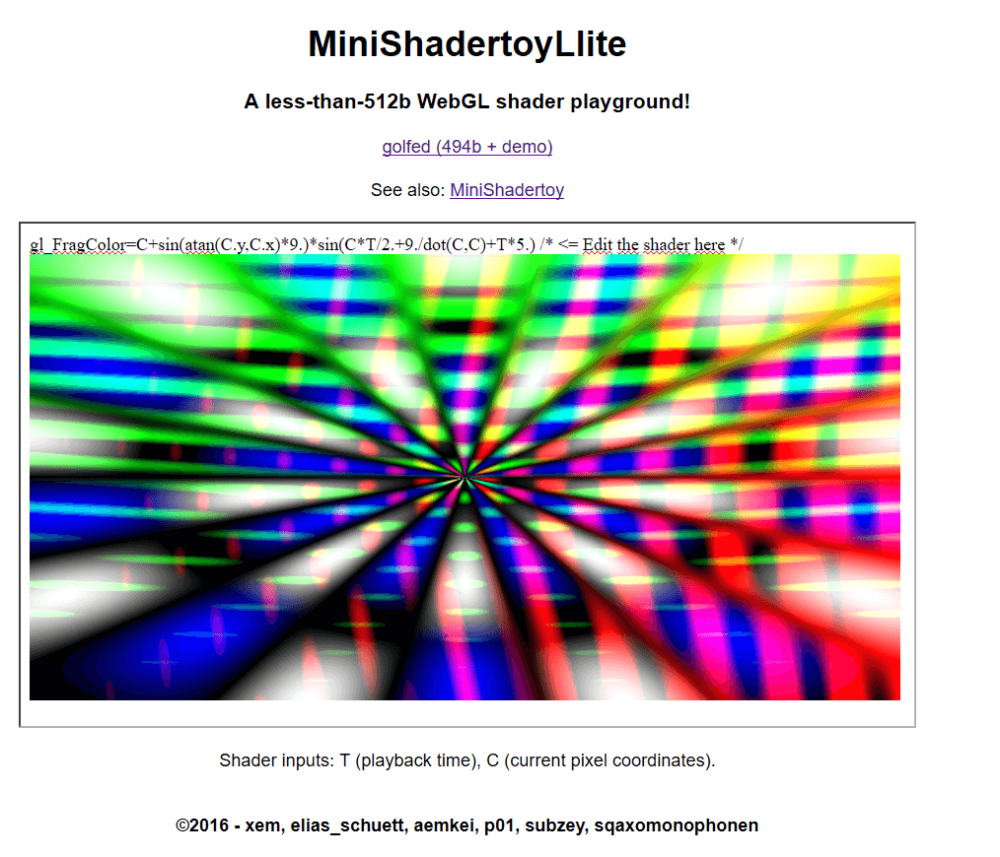</a>

<p>And thanks to <b>@innovati</b> for the Emoji title: 🌍🔬🕸🇬🇱🎠 !
<br>
<br>
<hr>
<br>
<p>Cheers!
<p><b>The Codegolf team</b>
</div>

<div class=section id=js1k2016>
  <h2>JS1k 2016</h2>
	<h3>febuary - march 2016</h3>
  <p><a href="//js1k.com">JS1k</a> is certainly code-golfing event that makes me wait for febuary to come, during all the rest of the year.
  <p>This year, the theme was <b>EleMental</b>, and I decided to make two chemistry-related demos with the help of my friends <b>Innovati</b> and <b>Subzey</b> (a.k.a. The Codegolf Team), plus a couple of entries by myself.
  <p>If you're curious about how they were made or how they can fit in 1kb, take a look at the detailed source code. It's very detailed.
  <p>If you want to support us for the "social prize", you can upvote the demos on reddit!
  <br>
  <br>
  <hr>
  <br>
  <h3>PERIOD1k</h3>
  <p>Our first challenge was to draw a pretty periodic table of chemical elements with as much information as possible. After long efforts of data compression dead-ends and successes, we released PERIOD1k. It was the first entry of the compo.
  <br>
  <br>
  
  <br>
  <br>- <a href="http://js1k.com/2016-elemental/demo/2402">The entry on js1k</a> (1024b)
  <br>- <a href="https://www.reddit.com/r/js1k/comments/43xi81/demo_2402_period1k_by_codegolf_team_canvas_1024/">The post on reddit</a>
  <br>- <a href="https://github.com/codegolf/period1k">The project (with bonuses) on Github</a>
  <br>- <a href="https://github.com/codegolf/period1k/blob/gh-pages/final.html">The detailed source code</a>
  <br>
  <br>
  <hr>
  <br>
  <h3>JSOTOPES</h3>
  <p>We then gave ourselves another compression challenge: draw a complete table of isotopes (or table of nuclides). This time, there was so much data to include th the app that the JS code used to draw the chart only takes ~10% of the demo, all the rest is used for the position, number and decay types of all the known isotopes.
  <br>
  <br>
  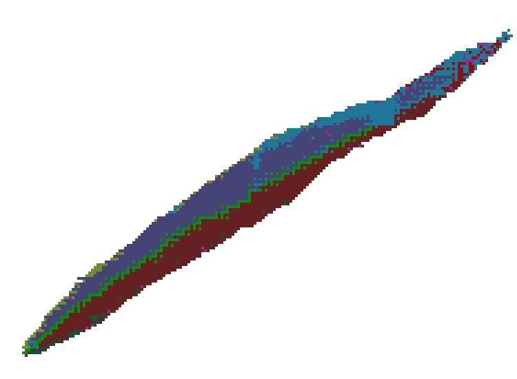
  <br>
  <br>- <a href="http://js1k.com/2016-elemental/demo/2420">The entry on js1k</a> (1023b)
  <br>- <a href="https://www.reddit.com/r/js1k/comments/45pcv4/demo_2420_jsotopes_by_codegolf_team_canvas_1023/">The post on reddit</a>
  <br>- <a href="https://github.com/codegolf/JSotopes">The project (with bonuses) on Github</a>
  <br>- <a href="https://github.com/codegolf/JSotopes/blob/gh-pages/index.html">The detailed source code</a>
  <br>
  <p>PS: In febuary, researchers discovered the tetraneutron particle. I didn't manage to include it in our demo in less than 1025b. ARRGGH.
  <br>
  <hr>
  <br>
  <h3>UN1kODE</h3>
  <p>For my first individual entry, I wanted to revisit a Unicode slideshow that I made a few months earlier, called <a href="https://github.com/xem/MiniUnicode#readme">MiniUnicode</a>. It's actually a collection of slideshows made to fit in 64b, 128b, 256b, 512b, 4kb, 512kb, including more and more details at each version. The 512b version only shows the assigned code points, but the 4kb version includes all the Unicode blocks names. I decided to do something in the middle: a demo that shows all the assigned code points, but is also aware of all the blocks sizes, and able to start the animation from any of these blocks. That required a lot of compression and transformation of the original code, but it worked!
  <br>
  <br>
  
  <br>
  <br>- <a href="http://js1k.com/2016-elemental/demo/2440">The entry on js1k</a> (1024b)
  <br>- <a href="https://www.reddit.com/r/js1k/comments/46e3k7/demo_2440_un1kode_by_maxime_euzi%C3%A8re_pure_1024/">The post on reddit</a>
  <br>- <a href="https://github.com/xem/miniUnicode#readme">The project on Github</a>
  <br>- <a href="https://github.com/xem/miniUnicode/blob/gh-pages/js1k.html">The detailed source code</a>
  <br>
  <br>
  <hr>
  <br>
  <h3>MiniBeautifier</h3>
  <p>This final challenge came as a surprise, while I was developping my <a href="http://codegolf.github.io/codegolfIDE">code-golfing IDE</a>. Subzey suggested that I add a code beautifier to see the "unminified" version of our code in real time, so I decided to develop one from scratch. Subzey also told me it was impossible to achieve this task using RegExes, so I took it as a personal challenge, and succeeded. Then I golfed my code a little and realized it could fit in 1kb with some extra compression. And that's what I did.
  <br>
  <br>
  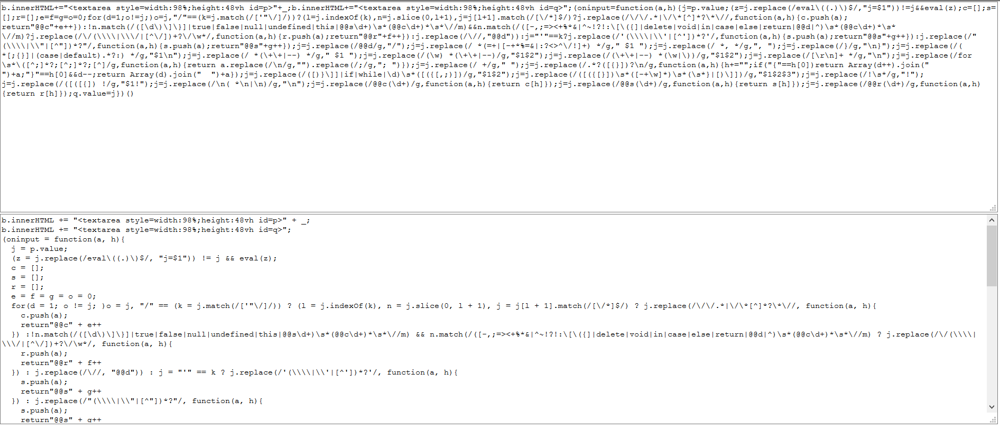
  <br>
  <br>- <a href="http://js1k.com/2016-elemental/demo/2484">The entry on js1k</a> (1022b)
  <br>- <a href="https://www.reddit.com/r/js1k/comments/47sewf/demo_2484_minibeautifier_by_maxime_euzi%C3%A8re_pure/">The post on reddit</a>
  <br>- <a href="https://github.com/xem/miniBeautifier">The project on Github</a>
  <br>- <a href="https://github.com/xem/miniBeautifier/blob/gh-pages/index.html#L317">The detailed source code</a>
  <br>
  <br>
  <hr>
  <br>
  <h3>Bonus: emulation!</h3>
  <p>There are some other 1kb projects that I started to prepare before febuary, but they weren't good enough (or small enough) to be submitted. Here they are in exclusivity, just for you:
  <br>
  <br>Here's <a href="http://xem.github.io/chip8/c8.decompiler.min.pack.html">a Chip8 ROM decompiler</a> (1024b gzipped)
  <br>
  <br>
  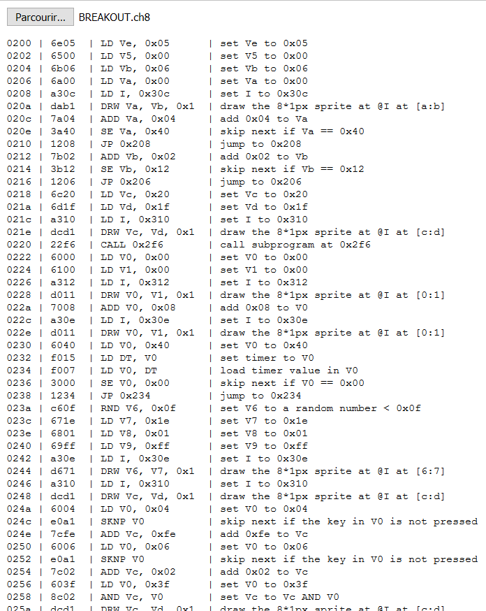
  <br>
  <br>
  <br>And <a href="https://rawgit.com/xem/chip8/js1k/emu.html">a Chip8 emulator with sound, packed in a js1k shim</a> (~1040b regpacked, but still buggy)
  <br>
  <br>
  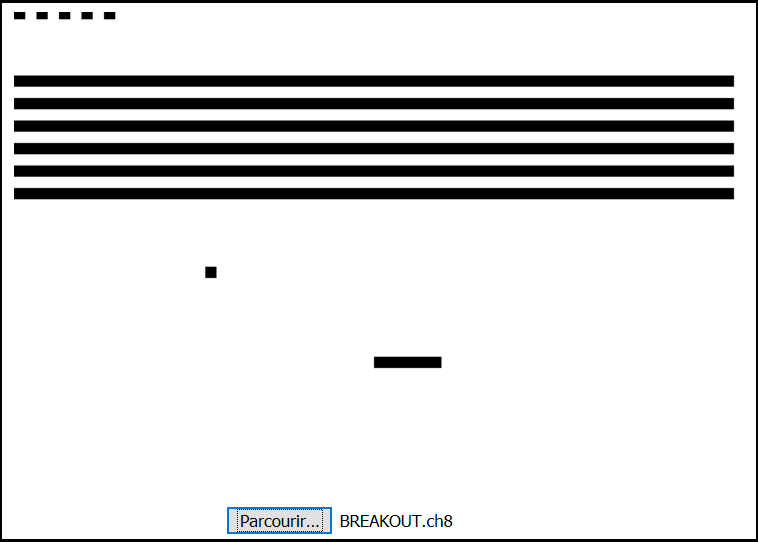
  <br>
  <br>
  (Both are inspired by my old <a href="http://xem.github.io/chip8">Chip8 emulator</a> project, where I had made a PNG-bootstrapped Chip8 emulator, without sound, in 1028b).
  <br>
  <br>
  <hr>
  <br>
  <h3>Bonus 2: Compilations!</h3>
  <br>I also prepared two compilations including all the tiny apps and games that I golfed with the team <br>(<b>@p01</b>, <b>@subzey</b>, <b>@aemkei</b>, <b>@0ndras</b>, <b>@maettig</b> and <b>@ilesinge</b>) during the past year.
  <br>Sadly, none of them fits in 1kb but you can try them here!
  <br>
  <br><h3><a href="demos/js1k16/games.html">4 Games</a> (1230b)</h3>
  <br>(Featuring <a href="https://github.com/xem/miniGameOfBraille">MiniGameOfBraille</a>, <a href="https://github.com/codegolf/miniFlappyBraille">MiniFlappyBraille</a>, <a href="https://github.com/codegolf/ping">Ping</a> & <a href="">Pacman</a>)
  <br>
  <br>
  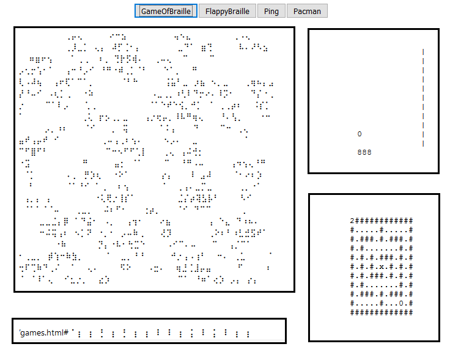
  <br>
  <br><h3><a href="demos/js1k16/apps.html">7 Apps</a> (1157b)</h3>
  <br>(Featuring <a href="https://github.com/xem/miniMandelbrot">MiniMandelbrot</a>, <a href="https://jsbin.com/kinihavigo/edit?html,js,output">MiniMandelbrot ASCII</a>, <a href="https://github.com/xem/miniBookmarklet">MiniBookmarklet</a>, <a href="https://jsbin.com/nahegi/edit?html,output">Countdown 2017</a>, <a href="https://jsfiddle.net/subzey/oahnujcv/">Xmas trees</a>, <a href="https://github.com/xem/miniKeyCode">MiniKeyCode</a> & <a href="https://github.com/xem/miniUnicode">MiniUnicode</a>)
  <br>
  <br>
  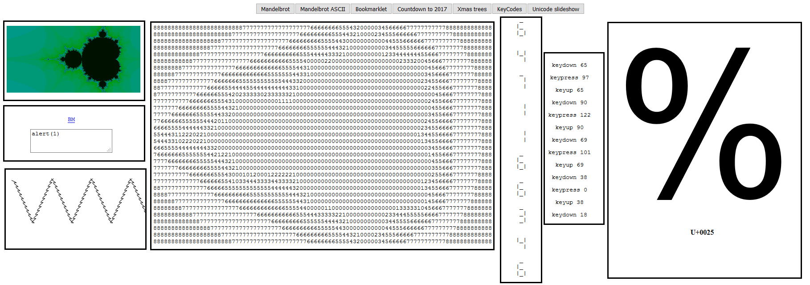
  <br>
  <br>
  <hr>
  <br>
  <br>
  Cheers,
  <br>
  <b>xem</b>
</div>

<div class=section id=obfuscatweet_url_en>
  <h2>Obfusc-a-tweet reloaded</h2>
	<h3>november-december 2015</h3>
  <br>
  TL;DR - the app is here: <a href="http://xem.github.io/obfuscatweet-reloaded">xem.github.io/obfuscatweet-reloaded</a>
  <br>
  <br>
  <hr>
  <br>
	<p>Last year, <b>Subzey</b> and I introduced <a href="../golfing/#jstweet_en">Obfusc-a-tweet</a>, allowing to fit 190 chars of JavaScript in a single 140-chars tweet, by packing a pair of ASCII chars in 95 Unicode symbols and using the other 45 chars to unpack and execute them.
  <p>This time, the idea is to take advantage of Twitter's URL shortener!
  <p>When you tweet an URL, Twitter currently shrinks it (or lenghtens it) into a 23-chars URL, in the form <b>https://t.co/xxxxxxxxxx</b>.
  <p>In the final tweet, your original URL can appear truncated on the left or on the right, or both, according to <a href="https://twitter.com/MaximeEuziere/status/669865248447438849">this rule</a>.
  <p>But when you copy-paste such a tweet from Twitter to a text editor or a JS console, you get the entire original URL (instead of the shortened URL or the truncated URL), followed by a space and an "…" ellipsis character.
  <br>
  <hr>
  <br>
  <h3>Testing the limits</h3>
  <p>I made some experiments so find the limits of this system and here's what I found:
  <ul>
  <li>A tweet can contain up to 5 URLs, separated by a space or a punctuation. (5 URLs take 119 chars. If you add a 6th one, it would overflow to 143 chars)
  <li>A tweeted URL can be up to 4096 chars long. If it's longer, <a href="images/twitter-4097-chars-url.png">an alert will tell you that your tweet is longer than 140 chars</a>, even if the counter disagrees.
  <li>International domain names (IDN) are not well supported. For example, you can tweet "http://mañana.com" and it will work fine. If you tweet a 140-chars-long URL like "http://mañññ(...)ññññññana.com", it will appear as text instead of a link, and if you try to tweet an IDN longer than 140 chars, <a href="images/twitter-unicode-url.png">Twitter will encounter an internal server error and the char counter will go nuts</a>.
  <li>If you stick to regular domain names (limited to letters, numbers and dashes), and if you choose a two-letter-long top-level domain like ".fr", the URL's domain name can take up to 4086 letters or numbers. The 10 remaining chars will be used by the automatic "http://" and the TLD ".fr". As you can imagine, this is not very interesting to store JS code.
  <li>But if you choose a one letter-long domain-name and a two-letter-long top-level-domain (like "a.fr/..."), the URL can contain up to 4084 chars after the slash. (The 12 remaining chars will be used by "http://a.fr/"). This is interesting to store JS code, because these 4084 chars can include any url-encoded text... and more!
  </ul>
  <br>
  <hr>
  <br>
  <h3>Packing JS code</h3>
  <p>So, if we want to store a lot of text in a 140-chars tweet, the theorical limit is about 5 x 4084 url-encoded chars (stored into 5 URLs) + 4 spaces or punctuations between each URL + 21 other characters.
  <p>But our goal is to have an executable tweet, that can be copied as-is into a JS console and run instantly. Thus, the tweet needs to contain some long URLs plus a small JS unpacker and executer. After a lot of trial and error, here is the most efficient solution I could find: (it contains only 4 URLs and uses all the other chars to unpack and execute the JS code).
  <pre class=code>eval(decodeURI(" 🖝http://a.fr/WWW http://a.fr/XXX http://a.fr/YYY http://a.fr/ZZZ".replace(/ .{1,14}/g,'')))</pre>
  <p>... where WWW, XXX, YYY and ZZZ are url-encoded strings up to 4084 chars long.
  <p>Note that the four URLs are placed into a long string, surrounded by JS code.
  <p>When this message is tweeted, it takes exactly 140 characters.
  <p>When it's copy-pasted from Twitter to a JS console, the result is almost the same thing, the only difference being the spaces and ellipsis added after each URL:
  <pre class=code>eval(decodeURI(" 🖝http://a.fr/WWW … http://a.fr/XXX … http://a.fr/YYY … http://a.fr/ZZZ …".replace(/ .{1,14}/g,'')))</pre>
  <p>When you execute that into a JS console, here's what happens:
  <pre class=code>
// step 0: copy-paste the tweet

eval(decodeURI(" 🖝http://a.fr/WWW … http://a.fr/XXX … http://a.fr/YYY … http://a.fr/ZZZ …".replace(/ .{1,14}/g,'')))

// step 1: the replace(/ .{1,14}/g,'') transforms the string to keep only the interesting parts
// it removes the beginning: " 🖝http://a.fr/", because it's a space followed by 14 characters.
// The "🖝" is an astral Unicode character. It counts as two chars in JS, but only one on Twitter.
// It also removes the three occurences of " … http://a.fr/" (space + 14 chars)
// And it also removes the end: " …" (space + 1 char).
// After the replace, here's the remaining string:

eval(decodeURI("WWWXXXYYYZZZ"))

// step 2: the remaining string is url-decoded to produce the final code
// for example, any occurrence of "%7D" will be decoded to a tilde ("~"), etc.

eval("final code")

// step 3: the remaining string (our final JS code) is evaluated
  </pre>
  <p>The 🖝 symbol can be replaced by any astral Unicode symbol (U+10000 - U+10FFFF).
  <p>At this point, we can potentially store up to 4 * 4084 = 16336 chars in a single tweet! But this total includes escape sequences for many characters that can't be used into URLs (such sequences take <a href="http://xem.github.io/escape/">3 to 12 chars each</a>).
  <hr>
  <br>
  <h3>A word about encoded URIs</h3>
  <p>Here are the 95 printable ASCII chars:
  <pre class=code> !"#$%&'()*+,-./0123456789:;&lt;=>?
@ABCDEFGHIJKLMNOPQRSTUVWXYZ[\]^
_`abcdefghijklmnopqrstuvwxyz{|}~</pre>
  <p>Here are the same chars after passing them through JS's encodeURI:
  <pre class=code>%20!%22#$%25&'()*+,-./0123456789:;%3C=%3E?
@ABCDEFGHIJKLMNOPQRSTUVWXYZ%5B%5D%5E
_%60abcdefghijklmnopqrstuvwxyz%7B%7C%7D~</pre>
  <p>Basically, according to JS, the only chars that need to be escaped are <b>space, ", %, &lt;, >, [, \, ], ^, `, {, | and }</b>.
  <p>But Twitter has some quirks: it doesn't support URLs containing empty parenthesis like "()" or unbalanced parenthesis like "a(a)a)" or "(a(a)a" and on the other hand, it supports URLs containing <b>%, [, ] and |</b>.
  <p>We need to take that into account to build a packer as effective as possible. (We will keep parenthesis and percent signs escaped to avoid weird parsing bugs, and we will keep <b>[, ] and |</b> unescaped because they are safe enough to be used like that in our URLs).
  <br>
  <hr>
  <br>
  <h3>Building the packer</h3>
  <p>To sum things up, if we want to make a JS packer, the mission is to take a JS string as input, URL-encode it, URL-encode the parenthesis characters that can cause problems on Twitter, decode the three chars that don't need to be encoded (<b>[, ], |</b>), split the result in 4084-char blocks, pack these blocks in URLs, surround these URLs with an unpacker/executer, and output the result as a tweetable message.
  <p>Here's <a href="http://xem.github.io/obfuscatweet-reloaded">the packer!</a> (use the first option to test the above technique)
  <p>And <a href="https://twitter.com/MaximeEuziere/status/671025119402270720">here's a demo tweet that alerts a 12641-char text</a>
  <br>
  <hr>
  <br>
  <h3>UPDATE #1: Go further with charcode shifting!</h3>
  <p>After releasing the first version of this packer, I realized with <b>Anders Kaare</b> that a lot of non-ASCII chars were actually useable in Twitter's URLs. After some manual research, we discovered that there's actually a total of 483 chars that can be used safely.
  <pre class="code">!#$&'()*+,-./0123456789:;=?@ABCDEFGHIJKLMNOPQRSTUVWXYZ_abcdefghijklmnopqrstuvwxyz[]|~ÀÁÂÃÄÅÆÇÈÉÊËÌÍÎÏÐÑÒÓÔÕÖØÙÚÛÜÝÞßàáâãäåæçèéêëìíîïðñòóôõöøùúûüýþÿĀāĂ㥹ĆćĈĉĊċČčĎďĐđĒēĔĕĖėĘęĚěĜĝĞğĠġĢģĤĥĦħĨĩĪīĬĭĮįİıIJijĴĵĶķĸĹĺĻļĽľĿŀŁłŃńŅņŇňʼnŊŋŌōŎŏŐőŒœŔŕŖŗŘřŚśŜŝŞşŠšŢţŤťŦŧŨũŪūŬŭŮůŰűŲųŴŵŶŷŸŹźŻżŽžſƀƁƂƃƄƅƆƇƈƉƊƋƌƍƎƏƐƑƒƓƔƕƖƗƘƙƚƛƜƝƞƟƠơƢƣƤƥƦƧƨƩƪƫƬƭƮƯưƱƲƳƴƵƶƷƸƹƺƻƼƽƾƿǀǁǂǃDŽDždžLJLjljNJNjnjǍǎǏǐǑǒǓǔǕǖǗǘǙǚǛǜǝǞǟǠǡǢǣǤǥǦǧǨǩǪǫǬǭǮǯǰDZDzdzǴǵǶǷǸǹǺǻǼǽǾǿȀȁȂȃȄȅȆȇȈȉȊȋȌȍȎȏȐȑȒȓȔȕȖȗȘșȚțȜȝȞȟȠȡȢȣȤȥȦȧȨȩȪȫȬȭȮȯȰȱȲȳȴȵȶȷȸȹȺȻȼȽȾȿɀɁɂɃɄɅɆɇɈɉɊɋɌɍɎɏ</pre>
  <p>This represents a subset of the Unicode blocks "Basic Latin" and "Latin-1 supplement" plus the whole blocks "Latin-extended-A" and "Latin-extended-B", containing respectively 128 and 256 characters.
  <p>So I had the idea to "shift" all the ASCII characters present in the JS source code (U+0000 - U+007F), to represent them with Latin-extended-A characters (U+0100 - U+017F). The advantage here is to avoid all the escape sequences needed to represent the special chars of our JS code in an URL. All we need to do is to add 0x100 to each charcode. 
  <p>With the previous version, a 14-chars string like "Hello World ^^" was URL-encoded as "Hello%20World%20%5E%5E" (which is 22 chars long). With this "shift", it's converted to "ňťŬŬůĠŗůŲŬŤĠŞŞ" (which is only 14 chars long).
  <p>Of course, this shifted code is not directly executable, it needs to be unshifted first. Here's the unshifter I wrote with the help of <b>Subzey</b>:
  <pre class="code">eval(unescape(escape('...shifted code...').replace(/u../g,'')))</pre>
  <p>If you're confused by this code, you can read an explanation <a href="http://xem.github.io/golfing/#jstweet_en">here</a>. (we used the same principle in the original obfusc-a-tweet app)
  <p>We don't have room in the tweet itself to include this unshifter, because the tweet is already filled with the URLs and their unpacker and executer, so we need to place this code directly inside our URLs.
  <p>Here's an example of a complete tweet:
  <pre class="code">eval(decodeURI(" 🖝http://a.fr/eval%28unescape%28escape%28'WWW … http://a.fr/XXX … http://a.fr/YYY … http://a.fr/ZZZ'%29.replace(/u../g,'')%29%29 …".replace(/ .{1,14}/g,'')))</pre>
  <p>where WWW, XXX, YYY and ZZZ respectively represent shifted code up to 4056, 4084, 4084 and 4055 chars long.
  <p>Note that the first URL starts with an URL-encoded version of <b>eval(unescape(escape('</b> and the last URL ends with an URL-encoded version of <b>').replace(/u../g,'')))</b>.
  <p>Here's what happens when this tweet is executed:
  <pre class="code">
// step 0: copy-paste the tweet

eval(decodeURI(" 🖝http://a.fr/eval%28unescape%28escape%28'WWW … http://a.fr/XXX … http://a.fr/YYY … http://a.fr/ZZZ'%29.replace(/u../g,'')%29%29 …".replace(/ .{1,14}/g,'')))

// Unpacker-side:

// step 1: the replace() transforms the string to keep only the interesting parts
// After the replace, here's the remaining string:

eval(decodeURI("eval%28unescape%28escape%28'WWWXXXYYYZZZ'%29.replace(/u../g,'')%29%29"))

// step 2: the remaining string is url-decoded:

eval("eval(unescape(escape('WWWXXXYYYZZZ').replace(/u../g,'')))")

// step 3: the remaining string is evaluated:

eval(unescape(escape('WWWXXXYYYZZZ').replace(/u../g,'')))

// Unshifter-side:

// Step 4: the string is unshifted to produce the final code

eval('final code')

// Step 5: the remaining string is evaluated.
</pre>
  <p>This unshifter consumes 57 chars of our URLs, but it removes all risk of escape sequences. So we're now sure to store up to 16,279 chars of JS in a tweet.
  <p>Here's <a href="http://xem.github.io/obfuscatweet-reloaded">the updated packer!</a> (choose the second option under the input section to use the shifter)
  <p>And <a href="https://twitter.com/MaximeEuziere/status/671972517771354112">here's a demo tweet that alerts a 16271-char text</a>
  <br>
  <hr>
  <br>
  <h3>UPDATE #2: Go even further with shift + PNG bootstrapping</h3>
  <p>So, if we sum up our possibilities right now, we can either execute up to 16,336 chars of JS (including the escape sequences for all the chars that are not URL-safe), or execute up to 16,279 chars of JS (shifted to avoid using any escape sequence). This works fine with minified and even RegPacked code. But what if we could gzip our JS code, embed it into our 16,279 shifted chars, and add a little bit of extra code to extract and execute it?
  <p>Well, some people already kinda had this idea, and it's called <a href="http://creativejs.com/2012/06/jsexe-javascript-compressor/">JsExe</a>. JsExe encodes the chars of any JS code in the pixels of a greyscale PNG image. The PNG format is natively gzipped. The PNG is then saved as a HTML page that includes itself in an IMG, draws it on a canvas, and reads the pixels to retrieve and execute the original JS code. Even though the extre code takes about 200 bytes, this "PNG bootstrapping" technique is generally more efficient than RegPack, even for demos as small as 1kb.
  <p>So we decided to try that. First, <b>Subzey</b> and I developed <a href="http://codegolf.github.io/zpng">zpng</a>, a pure JS clone of JsExe. It turned out to be even more efficient than JsExe thanks to the use of zopfli compression!
  <p>Then I took the code that generates PNG from zpng and included it in obfuscatweet-reloaded.
  <p>I made it encode the JS source code into a PNG, converted the PNG bytes into extended ASCII, shifted them, and it gave me something like that:
  <pre class=code>
// Source code
alert("Hello World ^^");

// PNG as dataURI
data:image/png;base64,iVBORw0KGgoAAAANSUhEUgAAABkAAAABCAAAAAAOB1pJAAAAIklEQVR4AWNIzEktKtFQ8kjNyclXCM8vyklRiItT0rRmAABw4wfh
  
// PNG's content, as text

‰PNG


IHDRZI"IDATxcHÌI-*ÑPòHÍÉÉWÏ/ÊIQˆ‹SÒ´fpãá
  
// PNG's content, as shifted text
ƉŐŎŇčĊĚĊĀĀĀčʼnňńŒĀĀĀęĀĀĀāĈĀĀĀĀĎćŚʼnĀĀĀĢʼnńŁŔŸāţňnjʼnĭĪǑŐDzňǍljljŗĈǏįNJʼnőƈƋœǒƴŦĀĀŰǣćǡ
</pre>
  <p>Cool, so now the PNG's content is tweetable. In order to use it, we have to unshift it, convert it in dataURI, put it in an image, draw that image on a canvas, read the pixels of the canvas, transform it in JS and execute the JS.
  <p>The principle is the following:
  <pre class="code">
var png = "ƉŐŎŇčĊĚĊĀĀĀčʼnňńŒĀĀĀęĀĀĀāĈĀĀĀĀĎćŚʼnĀĀĀĢʼnńŁŔŸāţňnjʼnĭĪǑŐDzňǍljljŗĈǏįNJʼnőƈƋœǒƴŦĀĀŰǣćǡ";
var g;
// (snip) unshift png and put the result in g
z=new Image;
z.src='data:image/png;base64,'+btoa(g);
V=document.createElement('canvas');
C=V.getContext("2d");
for($=_=''; C.drawImage(z,$--,0), X=(q=C.getImageData(0,0,64,32)).data[0]; _+=String.fromCharCode(X)){};
(e=eval)(_);
  </pre>
  <p>Let's golf it:
  <pre class="code">
(z=new Image).src='data:;base64,'+btoa(g);C=document.createElement('canvas').getContext('2d');for($=_='';C.drawImage(z,$--,0),X=(q=C.getImageData(0,0,64,32)).data[0];_+=String.fromCharCode(X));(e=eval)(_)
  </pre>
  <p>204 bytes. Great! Now here's the real trick. The PNG content is stored as shifted text. This bootstrap code should also be shifted, to use as few chars as possible. So the idea is to put the two shifted blocks in the same string:
  <pre class="code">
var tmp = 'ĨźĽŮťŷĠʼnŭšŧťĩĮųŲţĽħŤšŴšĺĻŢšųťĶĴĬħīŢŴůšĨŧĮųŬũţťĨIJıĵĩĩĻŃĽŤůţŵŭťŮŴĮţŲťšŴťŅŬťŭťŮŴĨħţšŮŶšųħĩĮŧťŴŃůŮŴťŸŴĨħIJŤħĩĻŦůŲĨĤĽşĽħħĻŃĮŤŲšŷʼnŭšŧťĨźĬĤĭĭĬİĩĬŘĽĨűĽŃĮŧťŴʼnŭšŧťńšŴšĨİĬİĬĶĴĬijIJĩĩĮŤšŴšśİŝĻşīĽœŴŲũŮŧĮŦŲůŭŃŨšŲŃůŤťĨŘĩĩĻĨťĽťŶšŬĩĨşĩ' /*bootstrap*/ + 'ƉŐŎŇčĊĚĊĀĀĀčʼnňńŒĀĀĀęĀĀĀāĈĀĀĀĀĎćŚʼnĀĀĀĢʼnńŁŔŸāţňnjʼnĭĪǑŐDzňǍljljŗĈǏįNJʼnőƈƋœǒƴŦĀĀŰǣćǡ' /* PNG */
  </pre>
  <p>Then unshift this string, as we already did in the previous chapter, an put the result in g:
  <pre class="code">
g=unescape(escape('ĨźĽŮťŷĠʼnŭšŧťĩĮųŲţĽħŤšŴšĺĻŢšųťĶĴĬħīŢŴůšĨŧĮųŬũţťĨIJıĵĩĩĻŃĽŤůţŵŭťŮŴĮţŲťšŴťŅŬťŭťŮŴĨħţšŮŶšųħĩĮŧťŴŃůŮŴťŸŴĨħIJŤħĩĻŦůŲĨĤĽşĽħħĻŃĮŤŲšŷʼnŭšŧťĨźĬĤĭĭĬİĩĬŘĽĨűĽŃĮŧťŴʼnŭšŧťńšŴšĨİĬİĬĶĴĬijIJĩĩĮŤšŴšśİŝĻşīĽœŴŲũŮŧĮŦŲůŭŃŨšŲŃůŤťĨŘĩĩĻĨťĽťŶšŬĩĨşĩƉŐŎŇčĊĚĊĀĀĀčʼnňńŒĀĀĀęĀĀĀāĈĀĀĀĀĎćŚʼnĀĀĀĢʼnńŁŔŸāţňnjʼnĭĪǑŐDzňǍljljŗĈǏįNJʼnőƈƋœǒƴŦĀĀŰǣćǡ').replace(/u../g,''))
  </pre>
  <p>Then we execute only the first 204 chars of g.
  <pre class="code">
eval((g=unescape(escape('ĨźĽŮťŷĠʼnŭšŧťĩĮųŲţĽħŤšŴšĺĻŢšųťĶĴĬħīŢŴůšĨŧĮųŬũţťĨIJıĵĩĩĻŃĽŤůţŵŭťŮŴĮţŲťšŴťŅŬťŭťŮŴĨħţšŮŶšųħĩĮŧťŴŃůŮŴťŸŴĨħIJŤħĩĻŦůŲĨĤĽşĽħħĻŃĮŤŲšŷʼnŭšŧťĨźĬĤĭĭĬİĩĬŘĽĨűĽŃĮŧťŴʼnŭšŧťńšŴšĨİĬİĬĶĴĬijIJĩĩĮŤšŴšśİŝĻşīĽœŴŲũŮŧĮŦŲůŭŃŨšŲŃůŤťĨŘĩĩĻĨťĽťŶšŬĩĨşĩƉŐŎŇčĊĚĊĀĀĀčʼnňńŒĀĀĀęĀĀĀāĈĀĀĀĀĎćŚʼnĀĀĀĢʼnńŁŔŸāţňnjʼnĭĪǑŐDzňǍljljŗĈǏįNJʼnőƈƋœǒƴŦĀĀŰǣćǡ').replace(/u../g,''))).slice(0,204))
  </pre>
  <p>Let's go back to the bootstrap code. Instead of creating a dataURI from g, it needs to create it from g.slice(204).
  <pre class="code">
(z=new Image).src='data:;base64,'+btoa(g.slice(204));C=document.createElement('canvas').getContext('2d');for($=_='';C.drawImage(z,$--,0),X=(q=C.getImageData(0,0,64,32)).data[0];_+=String.fromCharCode(X));(e=eval)(_)
  </pre>
  But the ".slice(204)" adds 11 chars to the bootstrap, so we need to replace 204 to 215 everywhere:
  <pre class="code">
// In bootstrap
(z=new Image).src='data:;base64,'+btoa(g.slice(215));C=document.createElement('canvas').getContext('2d');for($=_='';C.drawImage(z,$--,0),X=(q=C.getImageData(0,0,64,32)).data[0];_+=String.fromCharCode(X));(e=eval)(_)

// In unshifter
eval((g=unescape(escape('ĨźĽŮťŷĠʼnŭšŧťĩĮųŲţĽħŤšŴšĺĻŢšųťĶĴĬħīŢŴůšĨŧĮųŬũţťĨIJıĵĩĩĻŃĽŤůţŵŭťŮŴĮţŲťšŴťŅŬťŭťŮŴĨħţšŮŶšųħĩĮŧťŴŃůŮŴťŸŴĨħIJŤħĩĻŦůŲĨĤĽşĽħħĻŃĮŤŲšŷʼnŭšŧťĨźĬĤĭĭĬİĩĬŘĽĨűĽŃĮŧťŴʼnŭšŧťńšŴšĨİĬİĬĶĴĬijIJĩĩĮŤšŴšśİŝĻşīĽœŴŲũŮŧĮŦŲůŭŃŨšŲŃůŤťĨŘĩĩĻĨťĽťŶšŬĩĨşĩƉŐŎŇčĊĚĊĀĀĀčʼnňńŒĀĀĀęĀĀĀāĈĀĀĀĀĎćŚʼnĀĀĀĢʼnńŁŔŸāţňnjʼnĭĪǑŐDzňǍljljŗĈǏįNJʼnőƈƋœǒƴŦĀĀŰǣćǡ').replace(/u../g,''))).slice(0,215))
  </pre>
  <p>And we're done! Phew! So, here's what happens when we tweet a PNG bootstrapped code:
  <pre class="code">
// step 0: copy-paste the tweet
// WWW, XXX, YYY and ZZZ represent the shifted string containing the bootstrap code and the PNG
eval(decodeURI(" 🖝http://h.ck/eval%28%28g=unescape%28escape%28'WWW … http://h.ck/XXX … http://h.ck/YYY … http://h.ck/ZZZ'%29.replace(/u../g,'')%29%29.slice(0,215)%29 …".replace(/ .{1,14}/g,'')))

// Unpacker-side:

// step 1: the replace() transforms the string to keep only the interesting parts
// After the replace, here's the remaining string:

eval(decodeURI("eval%28%28g=unescape%28escape%28'WWWXXXYYYZZZ'%29.replace(/u../g,'')%29%29.slice(0,215)%29"))

// step 2: the remaining string is url-decoded:

eval("eval((g=unescape(escape('WWWXXXYYYZZZ').replace(/u../g,''))).slice(0,215))")

// step 3: the remaining string is evaluated:

eval((g=unescape(escape('WWWXXXYYYZZZ').replace(/u../g,''))).slice(0,215))


// Unshifter-side:

// Step 4: unshift, g contains all the unshifted string, and the first 215 chars are evaluated

g = "(z=new Image).src='data:;base64,'+btoa(g.slice(215));C=document.createElement('canvas').getContext('2d');for($=_='';C.drawImage(z,$--,0),X=(q=C.getImageData(0,0,64,32)).data[0];_+=String.fromCharCode(X));(e=eval)(_) // +  PNG content";

eval(g.slice(0,215))

// PNG bootstrap side

// z contains an image whose src is g.slice(215)
// C contains a canvas context2d
// _ contains our final JS code
// e is a shortcut for eval
e(_)

// Step 5: the final code is evaluated.
</pre>
  <p>We successfully embedded a PNG bootstrap technique in a tweet. Now let's break some record! (The last record was 16,279b of JS executed.)
  <p>Here's <a href="http://xem.github.io/obfuscatweet-reloaded">the updated packer!</a> (choose the third option under the input section to use the PNG bootstrap mode)
  <p>And <a href="https://twitter.com/MaximeEuziere/status/681109264744747008">here's a demo tweet that logs 37,867 chars of Moby Dick in the browser's console!</a>
  <p>Unfortunately, this kind of code currently doesn't work on MS Edge, nor Firefox.
  <p>If you insist a little, Firefox agrees to execute up to 16kb of JS packed into a PNG, but not more.
  <br>
  <hr>
  <br>
  <h3>UPDATE #3: ...PAUSE... </h3>
  <p>We have many more ideas, based on different image compressions and base-483 radix conversion, but Twitter recently announced they will extend the tweets limit to 10,000 characters. Let's wait for that "revolution" before going further!
  <p><b>To be continued!</b>
  <hr>
  <br>
  <!--h3>UPDATE #3: Go EVEN MORE FURTHER with base-483?</h3>
  <p>Why would we stop there? We have 483 different chars that we can use in our URLs, and they all count as 1 character out of 4096.
  <p>Our JS source code generally uses all or a subset of ASCII. (i.e. less than 95 different chars, if we count printable characters, or 128 chars if we include all control characters).
  <p>So <b>Anders Kaare</b> had the idea to perform a radix conversion from base "95-or-so" to base 483...
  <p><b>To be continued!</b>
  <hr>
  <br-->
  
  <p>Cheers,
  <br>
  <b>@MaximeEuziere</b>
</div>
  
<div class=section id=js13k2015>
  
  <h2>JS13kGames 2015 post-mortem: GeoQuiz</h2>
  <h3>august-september 2015</h3>
  <br>
  <p>>>> <a href="http://js13kgames.com/entries/geoquiz">PLAY THE GAME HERE</a> <<<
  <br>
  <p><a href="http://xem.github.io/JS13k15/">Play enhanced version on Github</a><br><a href="https://github.com/xem/JS13k15">source code</a><br><a href="https://www.reddit.com/r/tinycode/comments/3ky4jk/geoquiz_a_js_game_featuring_the_whole_world_in/">Reddit discussion</a>
  <br>
  <br>
  <p>13kb seems small, but actually it's huge... even for a full-featured HTML5 game.<br>(<a href="http://js13kgames.com/entries/alchemixer">Last year</a>, despite my efforts, I didn't manage to use more than 9kb).<br>But rules are rules, and this year again, we have a month to fill a 13kb zip with a high-quality game for... <b><a href="http://js13kgames.com/">js13kgames.com</a></b> !
  <p>To avoid being annoyed by such a high limit, I decided to make something big, something so big that people will ask themselves how it can fit in just 13kb. <br>Something big enough that I would also wonder how I will pack it in 13kb... and develop my own tools to achieve that goal.<br>Then yes, JS13kGames would be a great code-golfing and compression challenge!
  <p>Games contain code and data. 13kb of golfed code is very hard to write, so I decided to make a game that uses a lot of data.<br>Hey... how about putting the whole world in my game?<br>There was this Flash game that I liked a lot at university: <a href="https://www.crazygames.com/game/traveler-iq-challenge">Traveller's IQ challenge</a>.<br>Its goal was to find famous places (cities, capitols, monuments...) on a World map.<br>I chose to make a game like that, but with my own style.
  <br>
  <br>
  <hr>
  <br>
  <h3>A few days before the compo...</h3>
  <p><i>The final game doesn't contain any code or data produced before the beginning of the compo. During this couple of days, I just began to develop my design tools and produced dummy data that would be replaced afterwards.</i>
  <p>As I was waiting for the compo to start, I started experimenting with different techniques to draw and store efficiently all the countries, capitols and famous places of the world. I chose <a href="images/js13k15/model.png">a good-looking, yet outdated World map</a> (I did not want a Mercator projection - It's too stretched and unrealistic around the poles) and hacked a little tool that would let me draw the outline of each country with my mouse, on a canvas. The logic was a bit similar to <a href='#js1k_floppydragon'>what I did for Flappy Dragon during JS1k 2014</a>, but with less precision, because this time, I had to draw more than 197 countries. After many experiments, I chose the following way: I placed the model of my map on a 1024 by 512px canvas. Then, for each country and for each point I clicked, the tool would gather two mouse coordinates on the map (X and Y), and append the value of X/4 and Y/2, converted in Unicode, to a string representing the given country. X/4 and Y/2 turned out to be bounded between 0 and 253, so I could use two chars to represent each point, and the character 255 ("ÿ") as a separator for the countries (like Canada) consisting of multiple islands or territories. The capitol's coordinates are appended at the end. With this technique, I could fill a JSON file that looked like this:
  <br>
  <br>
  <p><pre class="code">
{
    ...
    'Brazil,Brasilia': '?É?½5¢0¦/™8‡;AŠB‘NšJ»D¿BÎÿD²',
    'Bulgaria,Sofia': '{?€AD|Eÿ|B',

    'Canada,Ottawa': '8"9<\nFOB\nBGA!<(...);A9D3:7?=;A9;.D+7ÿ%)\r11ÿ+\n/4/\rÿ5:4ÿ8<9\r5ÿ3=',
    <b>//   &#11014;                      &#11014;                           &#11014;      &#11014;        &#11014;           &#11014;&#11014;
    // Country, capitol    Sequence of X/Y coordinates      Islands separators    Capitol coordinates</b>

    'Chile,Santiago': '7ë4È6¹2±4Ý7ï=õ;ï7ëÿ4Ì',
    'China,Beijing': '©7¢I¨W°^·\\ºj¾gÂkÈdÉXÄHËBË8Ã2ÄB¼MÿÁmÃlÂpÁoÿÂI',
    ...
}</pre>
  <br>
  <p><i>You can try the editor <a href="http://xem.github.io/JS13k15/old/editor.html">here</a>. (use left click to place a point, right click to start a new island and spacebar to start a new country. The coordinates are appended to the text under the map)</i>
  <br>
  <br>
  <p>Then, I tried to draw the map from that JSON, and it wasn't as easy and straightforward as I imagined... here are a few screenshots of my first tests:
  <br>
  <br>
  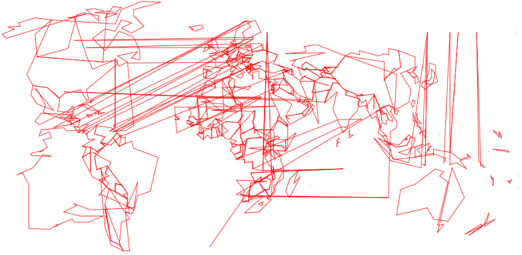
  <br>
  <i>fig. 1: Unicode madness, most countries leak everywhere and half of Russia somehow gets drawn over south America.</i>
  <br>
  <br>
  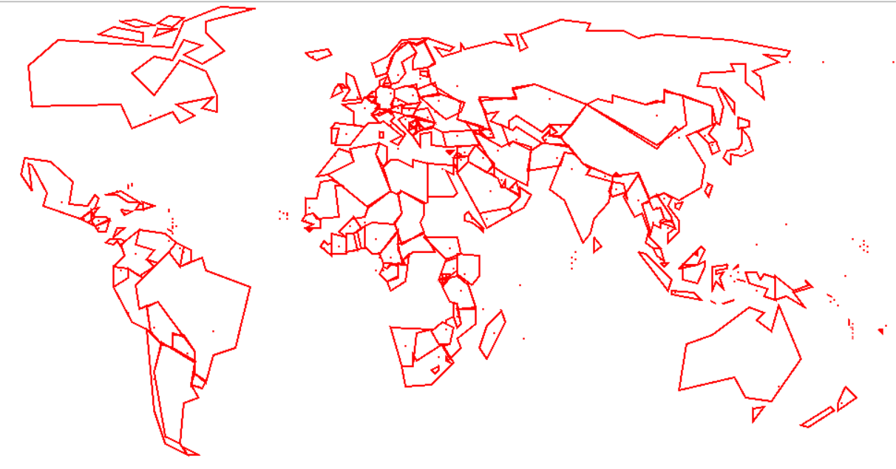
  <br>
  <i>fig. 2: Debugging, displaying small dots for the capitols, redrawing countries that had corrupted data...</i>
  <br>
  <br>
  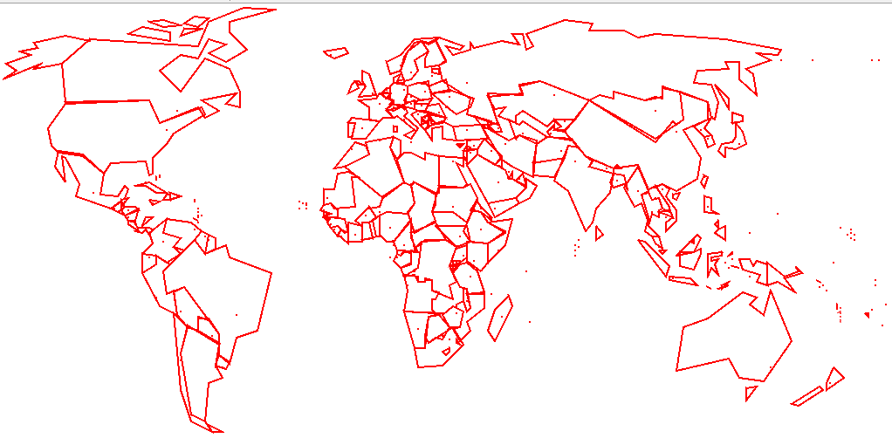
  <br>
  <i>fig. 3: More debugging... and realizing that many territories like Greenland and Western Sahara are not countries... Damn, Earth! :)</i>
  <br>
  <br>
  <p>These tests confirmed that this project was possible. Indeed, the names, shapes and capitols of all the countries on Earth can fit in just 6.2kb in JSON. Now I'm sure there is plenty of room left for a more detailed map, plus the game's code, the music and even more data!
  <p>But I didn't stop there. I used the unused char U+254 ("þ") as a separator, and made a big string with all my JSON's data...
  <pre class="code">Algeria,AlgiersþtfpRqLiOjVc]noÿmNþArgentina,Buenos Airesþ6¸?Ã>Ï@Ö<Ù;ï7ë4Èÿ<ñ=õ@õÿ>Ðþ ... </pre>
  <p>Then I made a tool that converts this string in a binary file. After gzipping, I saw my data fell from 6.2kb to 5.6kb! 600 bytes saved, <a href="https://twitter.com/MaximeEuziere/status/630818472608534528">that's a great news</a>! If you're wondering why this conversion is so efficient, it's for two main reasons. First, the JSON contained some escape sequences ("\\" instead of "\", "\r" and "\n" instead of line breaks, \' instead of quotes) that became a single byte in binary (the escape was no longer necessary). But most of the savings come from the "code point-to-binary" conversion for all the characters between U+80 and U+FF (these characters take 2 bytes each in UTF-8, as opposed to just 1 byte if we store their code points in binary). You can find more info about how many bytes are used for each character in each charset on <a href="http://xem.github.io/charsets">this page</a>.
  
  <p>Here's a golfed encoder that does this conversion in about 230b:
  <pre class="code">
// Unicode to binary encoder
// Input (m) can contain chars between U+0 and U+255
// Output (download) is a binary file
m=m.replace(/\\\\/g,"\\").replace(/\\r/g,"\r").replace(/\\n/g,"\n").replace(/\\'/g,"'");y=[];for(i in m)y.push(m.charCodeAt(i));location="data:application/octet-stream;base64,"+btoa(String.fromCharCode.apply(!1,new Uint8Array(y)))</pre>

  <p>Of course, at some point, this binary data needs to be read and converted back as a long Unicode string. I made a little JS program that does it in about 160bytes. It's totally worth the overhead, considered the hundreds of bytes that can be saved through binary.
  
  <pre class="code">
// Binary to Unicode decoder
// After execution, h contains the decoded string.
with(new XMLHttpRequest)open("GET","data.bin"),responseType='arraybuffer',send(),onload=function(){h="";for(i in u=new Uint8Array(response))h+=String.fromCharCode(u[i])}</pre>
  <p><b>Golf tip:</b> instead of data.bin, you can name your binary file "0" (or any number), without extension. It will reduce the name used in open() but also make the quotes unnecessary:
<pre class="code">with(new XMLHttpRequest)open("GET",0), ... </pre>
  <br>
  <br>
  <hr>
  <br>
  <h3>Compo: Day 1</h3>
  
  <p>When the compo started, my map editor was functional, and I could start developing my game for real. But before that, I wanted to experiment another thing: to represent the Earth on a 3D-looking sphere instead of always a flat map.
  <p>I didn't want to use (or make) a 3D engine just for that. I was looking for a very lightweight solution to give the illusion of a real sphere using a few tricks of trigonometry-fu, like <b>Aemkei</b> did for his <a href="http://aem1k.com/world/">1kb world</a>. I'm not an expert but, by chance, my friend <b>Subzey</b> helped me write these simple equations that turn instantly some map coordinates into a projected globe's coordinates:
  
  <pre class="code">
// map_x and map_y placed in the interval [-1:1]
globe_x = Math.sin(map_x * Math.PI) * Math.cos(map_y * Math.PI / 2);
globe_y = Math.sin(map_y * Math.PI/2);</pre>
  <br>
  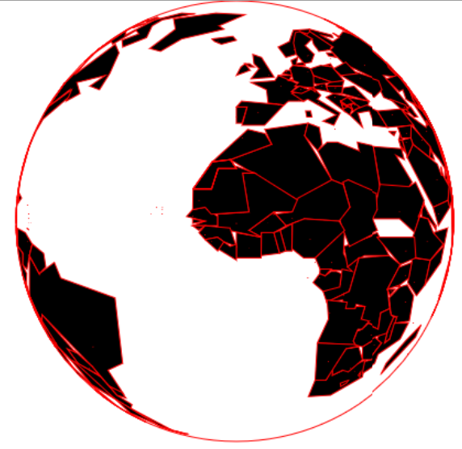
  For more info, tke a look at <a href="http://codepen.io/subzey/pen/rVoXQx">this demo by Subzey</a>.
  <br>
  <br>
  Here's <a href="images/js13k15/5.png">what I saw when I tried to adapt this technique to my map</a>.
  <br>
  <br>
  After debugging, here's a <a href="demos/js13k15/globe1.html">demo using my world map (animated)</a>
  <br>
  <br>
  <p>After long hours fighting with Canada and Russia (because they are too large to behave correctly where the "-1" and the "1" are connected), I managed to hide the back side of the globe and thus, make it much more realistic.
  <br>
  <br>
  Here's a <a href="demos/js13k15/globe2.html">demo with only the front face of the globe (animated)</a>
  <br>
  <br>
  <p>Great! Everything works. All that's left to do now is to develop the game in a few kilobytes, use another couple of kb for music, and all the rest of my zip will be used to store as many data as possible.  
  <p>The first thing I developed in the game was a "Home screen" (featuring the rotating 3D globe in more realistic colors, plus slightly blinking stars scrolling in the background), and a presentation screen for each "level" of the game.
  <br>
  <br>
  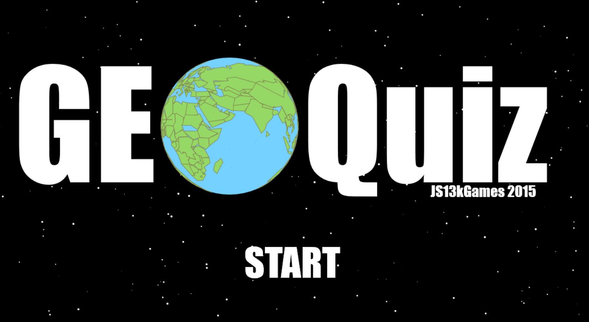
  <br>
  <br>
  
  <br>
  <blockquote class="twitter-tweet" lang="fr"><p lang="en" dir="ltr">Day 1: I already initialized 46 variables and wrote 430 lines of code for my game. (2.7kb mini/1.2k gzip) Just the beginning! :)&#10;<a href="https://twitter.com/hashtag/js13kgames?src=hash">#js13kgames</a></p>&mdash; xem (@MaximeEuziere) <a href="https://twitter.com/MaximeEuziere/status/631898962954465281">13 Août 2015</a></blockquote>
  <script async src="//platform.twitter.com/widgets.js" charset="utf-8"></script>
  <br>
  <hr>
  <br>
  <h3>Compo: Day 2</h3>
  <p>I improved the graphics with better colors and gradients.
  <br>
  <br>
  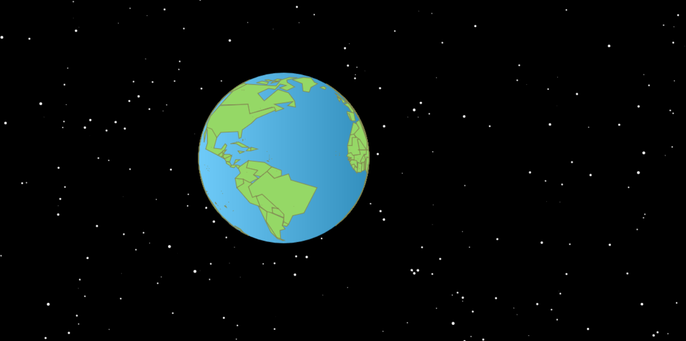
  <br>
  <br>
  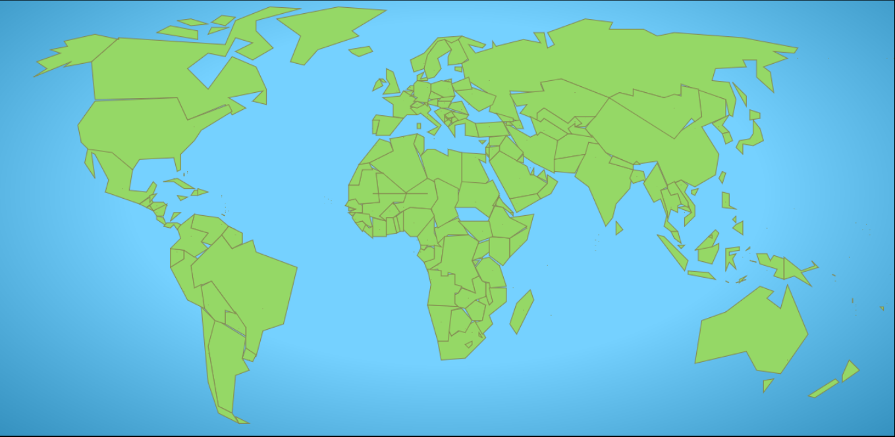
  <br>
  <p>I also began to implement a basic interactivity: showing the name of a target and a 10-second timer, clicking on the map, telling if the target has been clicked, and restarting with the next puzzle.
  <br>
  <br>
  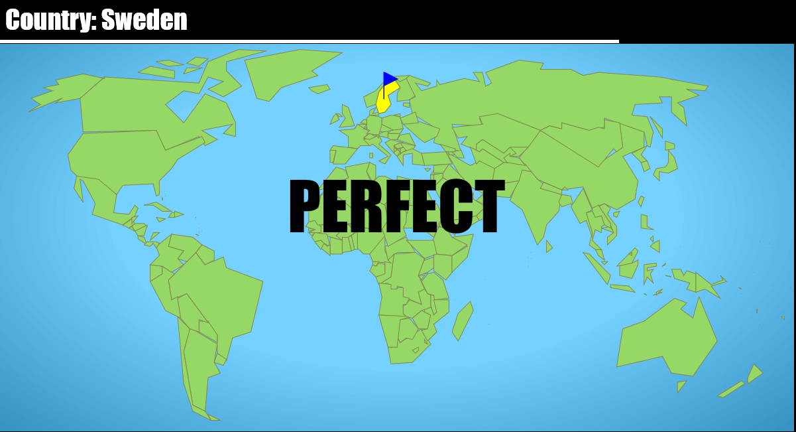
  <br>
  <p>To find if a country is clicked, I use the canvas function "ctx.isPointInPath(mouseX, mouseY)" just after drawing the country in yellow. It's very handy! But when we click outside of the country, I have to loop on all the points of the country, compute which one is the closest (computing distances using Pythagore), and use it for the green flag and the red line.
  <br>
  <br>
  
  <br>
  <blockquote class="twitter-tweet" lang="fr"><p lang="en" dir="ltr">Day 2: game specs are almost finalized, the design takes shape. it&#39;s a little playable already :)&#10;48 vars, 4.2kb min, 1.8kb zip&#10;<a href="https://twitter.com/hashtag/js13kgames?src=hash">#js13kgames</a></p>&mdash; xem (@MaximeEuziere) <a href="https://twitter.com/MaximeEuziere/status/632279653504393216">14 Août 2015</a></blockquote>
  <script async src="//platform.twitter.com/widgets.js" charset="utf-8"></script>
  <br>
  <hr>
  <br>
  <h3>Days 3 & 4</h3>
  <p>During this weekend, I started refactoring some code and compressed my data a little bit more (about 200b) by removing some separator bytes in my binary file. (But *spoiler alert* there will be a big data overhaul in a few days, so I'll talk more about it later!).
  <p>I also worked on the gameplay and added an distance counter that tells you an idea of how far you are from a target. This number will be used to compute the player's score.
  <br>
  <br>
  
  <br>
  <p>Of course, Pythagore isn't a great solution to compute distances on a sphere projected on a map, it works well enough for a mini-game.
  <p>I also worked on the gameplay of the level 2 (finding capitols):
  <br>
  <br>
  
  <br>
  <br>
  
  <p>... and worked on the scoring system (your "error gauge" decreases after every mistake and if it reaches 0, the game is over).
  <br>
  <p>Also, with a little help from my friends and my Twitter friends, I produced an important chunk of data: the names and positions of 100 famous places on Earth, separated in 3 categories (easy, medium, hard). The data looks like this in JSON, and of course, it will be part of the final binary file:
  <pre class="code">{
  "Christ the Redeemer": "Hº",
  "The Great Chinese Wall": "ÁI",
  "The Great Sphinx": "ƒZ",
  "The Eiffel Tower", "m9"
  ...
}</pre>

  <br>
  <hr>
  <br>
  <h3>Days 5-11</h3>
    <p>I knew I had too much free space, so I spent the spare time I had this week adding the U.S.A. states and capitols to my database. Same format as the World's cities and capitols, but I directly drew the "final map", i.e. with all the little details I could draw. This brought my total data counter to 7.9kb zipped.
    <br>
    <br>
    
    <p>I also decided to reorganize and optimize my data once again, to make it as small and compressible as possible:
    <ul>
    <li>First, I separated the text (the places' names) and the binary data. Having all my names stored in the JS code and all the coordinates stored in a binary file will reduce the effort to retrieve the data I need from the binary file, and will help the compression too (because "just text" or "just random bytes" compresses better than if all is mixed up).
    <li>I also changed the order of the data to put all the places first, then all the capitols, then all the US capitols, then all the countries, then all the US states. The advantage of this is that I don't need any separators in the first three datasets. I just have to store all the places/capitols/US capitols coordinates sequencially and I'll just read them two by two when I'll try to retrieve the data.
    <li>Finally, I gathered all my names in a big JS tring, but without any separators: to distinguish them, I'll just use the uppercase letters at the beginning of each name. So the names now look like this:
    <pre class=code>Cape canaveralChrist the redeemerThe great chinese wallThe great sphinxThe eiffel towerTower of pisaMount everestSagrada familiaBig benThe statue of libertyForbidden cityThe pyramids of gizaThe palace of versailles...</pre>
    
    <p>After zipping, I discovered that this overhaul made me lose (I mean, earn) 800 bytes of data, so that's a great news!
    
    <blockquote class="twitter-tweet" lang="fr"><p lang="en" dir="ltr">Today I saved 800b in my zip just by organizing my game&#39;s data in a smarter and more compressible way. 7.9kb =&gt; 7.1kb. Yay :D&#10;<a href="https://twitter.com/hashtag/js13kgames?src=hash">#js13kgames</a></p>&mdash; xem (@MaximeEuziere) <a href="https://twitter.com/MaximeEuziere/status/634610685914284032">21 Août 2015</a></blockquote>
<script async src="//platform.twitter.com/widgets.js" charset="utf-8"></script>
  <hr>
  <br>
  <h3>Days 12 - 18</h3>
  <p>I spent that week rewriting the game to adapt it to the new data format, and revamped all the code to make it more logic and easy to maintain.
  <br>
  <br>
  <hr>
  <br>
  <h3>Days 19 - 25</h3>
  <p>I spent that week fixing the gameplay of the 13 levels of the game. <a href)"https://twitter.com/MaximeEuziere/status/638677982844952576">and tweeted about it</a>
  <br>
  <br>
  <hr>
  <br>
  <h3>Days 26 - 32: Last week</h3>
  <p>I spent that last week redrawing the final world map in high quality, debugging all the little artifacts that were remaining, and added some last minute features to respect the theme "Reversed" and make the game a little more interesting: the maps get reversed every five puzzles, and the fronteers disappear during the last 5 puzzles of each level. I also inserted some little last-minute hacks to make the game better and better-looking without spending a lot of time on it. One weird hack I discovered and used, was about the data shuffling. I initially did that on page load and remarked that the puzzles order were often very similar, as if there was no real randomness in the shuffle function. I assumed that Math.random() was influenced by the JS execution time, so I delayed all the data shuffling from the page load to the moment where the player clicks on "START". The puzzles looked much more random after that.
  <p>On friday, I asked my colleagues to test my game, and the result was very good. They loved it, and they played it very well!
  <br>
  <blockquote class="twitter-tweet" lang="fr"><p lang="en" dir="ltr">Hiring my colleagues to beta test my <a href="https://twitter.com/hashtag/js13k?src=hash">#js13k</a> game. They&#39;re very good! One of them reached level 13! <a href="http://t.co/dBiRHQKSxi">pic.twitter.com/dBiRHQKSxi</a></p>&mdash; xem (@MaximeEuziere) <a href="https://twitter.com/MaximeEuziere/status/642250536180404224">11 Septembre 2015</a></blockquote>
<script async src="//platform.twitter.com/widgets.js" charset="utf-8"></script>
  <style>#js13k2015 .twitter-tweet[data-tweet-id="642250536180404224"]{height:430px!important}</style>
  <br>
  <p>Oh, and... how about the size? Well, it was surprisingly small: 10.9kb. And it still lacked sound or music, because I have absolutely no talent for that. I launched <a href="https://twitter.com/MaximeEuziere/status/642302415098769409">a desperate cry for help on Twitter</a> and a great guy (<a href="https://twitter.com/sqaxomonophonen">Anders Kaare</a>) answered my prayers and agreed to compose a musical theme for GeoQuiz in less than 24h. He did such a great job, he also included a reversed variation for the puzzles where the map is reversed, plus a "blacker" variation for the puzzles where the map is black, and without fronteers. Kudos to him!
  <p>I released the final build a few hours before the end of the compo. My final zip weighs 11.9kb... Once again, I failed at filling the whole 13kb allowed by the contest, but I'm happy with the result, even if I could have made it even better with more time... and if these damn <a href="http://apps.timwhitlock.info/emoji/tables/iso3166">Unicode flags</a> were already useable in browsers!
  <br>
  <br>
  <hr>
  <br>
  <h3>One week after</h3>
  <p>I received a lot of <a href="https://twitter.com/McFunkypants/status/644350930075254786">great</a> <a href="https://twitter.com/mhcurylo/status/645337527570857988">feedbacks</a> for my game, and it also appeared on some <a href="https://twitter.com/keithkarnage/status/643842201433317380">video tests</a>. Some people asked for a little enhancement to make it a better learning tool: in the "capitols" puzzles, they asked me to display the name of the country in which the capitol is located. So I added this feature on the Github version of my game.
  <br>
  <br>
  
  <br>
  <br>
  <hr>
  <br>
  <h3>Conclusion</h3>
  <p>See you next year, js13kgames! And thanks for existing! It was fun to code for you!
  <br>
  <br>
  <p><i>PS: I invite you to take a look at the entry <a href="http://js13kgames.com/entries/mug-gniwech">Mug-Gniwech</a>, it was made by one of my colleagues whom I'm introducing to the fine art of JS code-golfing, and I contributed a little to his game during the brainstorming phase, the graphics creation, and the code's organization. :)</i>
  <br>
  <br>
  <p>Cheers,
  <br>
  <b>@MaximeEuziere</b>
</div>

<div class=section id=js1k2015>
  <h2>JS1k 2015 post-mortem</h2>
  <h3>february 2015</h3>
  <p>This month was very busy! I spent almost all my free time <s>working</s> golfing for JS1k.</p>
  <br>
  <p>➾ I contributed to <a href="http://subzey.github.io/js1k2015invitro/" target=_blank>the great invitro</a> made by @subzey, by finding a brand new compression technique, allowing to hash the canvas properties as well as the canvas functions.
  <br>You can read more about it in <a href="https://github.com/subzey/js1k2015/tree/master/postmortem" target=_blank>his post mortem</a> and the discussion in <a href="https://github.com/Siorki/RegPack/issues/21" target=_blank>this RegPack ticket</a>.
  <br>It was very exciting to discover this new technique and save about 50 bytes on a demo we thought we couldn't compress anymore!</p>
  <br>
  
  <br>
  <br>
  <hr>
  <br>
  <p>➾ I gathered the best code-golfed games and apps made during the past months by "the codegolf team" into three compilations:
  <br><br>- <a href="http://js1k.com/2015-hypetrain/demo/2121" target=_blank>Mini Apps Collection</a><br>Featuring 7 apps! Mini Code Editor, HTML & CSS minifier, hex viewer, dataURI converter, spritesheet and JSPerf.<br>(1477b minified, 1024b regpacked)
  <br><br>- <a href="http://js1k.com/2015-hypetrain/demo/2100" target=_blank>Mini Games Collection #1</a><br>Mine Sweeper, Pop Tiles, and Game of Life.<br>(1221b minified, 1023b regpacked)
  <br><br>- <a href="http://js1k.com/2015-hypetrain/demo/2145" target=_blank>Mini Games Collection #2</a><br>Simon with sound and 2048.<br>(1220b minified, 1022b regpacked)
  <br><br>It took a lot of time to fit each of these compilations in 1k, which involved removing some features not compatible with js1k's rules (like accessing "top" and localStorage"), managing to inject big chunks of HTML and JS into the shim with many "document.write", "innerHTML" and "outerHTML"-based hacks, and optimizing the whole code for a better RegPack compression (by repeating code as much as possible, sometimes in very silly ways)...
  <br><br>Thanks to @p01, @subzey, @aemkei, @LauckAndLoad, @bburky, @mathias and @veubeke for their contribution in each of these projects!
  <br>You can read more about these apps and games (and their original projects) by clicking the "demo details" button on each demo.
  </p>
  <br>
  <br>
  
  <br>
  <br>
  <hr>
  <br>
  <p>➾The theme was "Hype Train", so I couldn't resist making <a href="http://js1k.com/2015-hypetrain/demo/2160" target=_blank>this little hommage</a> to asdfmovie's sequence <a href="https://www.youtube.com/watch?v=5DjOL2we8ko" target=_blank>I like trains</a>. The code has nothing special, just a lot of points coordinates and a loop displaying them with moveTo and lineTo's. This kind of "monotonous" source code packs very well (1472b minified - 902b regpacked)
  <br>
  <br>
  </p>
  <br>
  <hr>
  <br>
  <p>➾ The biggest challenge was of course my "serious" entry, <a href="http://js1k.com/2015-hypetrain/demo/2316" target=_blank>hypeRcube</a>!</p>
  <p>With all the success of the 3D demos during the past years, my idea was to produce the first 4D demo of JS1k, featuring an "hypercube" (the 4D equivalent of a 3D cube). I had no precise idea of what I would (or could) do in 1k, but I aimed for some kind of animated / rotating hypercube, like the ones we can see on <a href="http://en.wikipedia.org/wiki/Tesseract" target=_blank>wikipedia's gifs</a>.</p>
  <p>It took more than 10 iterations (10 more or less big rewrites) to become what it is today, and each of these rewrites was marked by a new exciting feature, a compression breakthrough, or a funny bug that made me understand that I was not on the good path. You can tke a look at these beta versions here:</p>
  <p>&bull; <a href="demos/hypercube/0.html">Proof of concept</a>, very laggy but featuring an intro, perspective, camera rotation and the 6 4D rotations (3.1kb minified, and only 1.3kb regpacked, due to heavy code reuse). This PoC convinced me that doing a 4D demo for js1k was possible! (<a href="https://twitter.com/MaximeEuziere/status/566610056540852225" target=_blank>tweet</a>)
  <p>&bull; <a href="demos/hypercube/1.html">Beta #1</a>, with more reactive buttons, and intensive golfing (2.0kb minified, 1.1kb regpacked) 
  <p>&bull; <a href="demos/hypercube/2.html">Beta #2</a>, almost fitting in 1k (1.9kb minified, 1037b regpacked)
  <p>&bull; <a href="demos/hypercube/3.html">Beta #3</a>, golfed intensively (1.6kb minified, 963b regpacked). From this point I knew that I would be able to add many more features and graphical enhancements in my 1kb demo!<br>Actually, I added features and golfed them at the same time to stay as close as possible to 1kb.
  <p>&bull; <a href="demos/hypercube/4.html">Beta #4</a>, adding colors, and allowing to play/pause animations... but it's so slow ! (1.5B minified, 1022b regpacked) - <a href="https://twitter.com/MaximeEuziere/status/566615949009498113" target=_blank>funny</a>... <a href="https://twitter.com/MaximeEuziere/status/566629132935901184" target=_blank>bugs</a>.
  <p>&bull; <a href="demos/hypercube/5.html">Beta #5</a>, enhancing speed and adding a perspective slider going from an isometric view (2.5D) to an exaggerated 3D view... (1.5kb minified, 1030b regpacked)
  <p>&bull; <a href="demos/hypercube/6.html">Beta #6</a>, adding two color pickers and optimizing the workflow for RegPack (reusing the vars produced by RegPack and putting all the code in a string that will execute itself repeatedly using a timeout (1.58kb minified, 1042b regpacked) - the main achievement here was to achieve drawing the hypercube in a single pass, using only connected edges and not passing more than one time by the same edge, thanks to <a href="images/js1k15-4.png" target=_blank>this <s>wonderful</s> crazy path</a> I've drawn on paint (other funny <a href="https://twitter.com/MaximeEuziere/status/566947180267982849" target=_blank>bug</a>)
  <p>&bull; <a href="demos/hypercube/7.html">Beta #7</a>, YAY EPILEPTIC PARTY! very buggy but I find it artistic. (see <a href="https://twitter.com/MaximeEuziere/status/567068576239345665" target=_blank>gif</a>)
  <p>&bull; <a href="demos/hypercube/8.html">Beta #8</a>, stabilized and golfed a bit more (1.56kb minified, 974b regpacked)
  <p>&bull; <a href="demos/hypercube/9.html">Beta #9</a>, I tried to fill the hypercube in red but it was a bad idea. (<a href="https://twitter.com/MaximeEuziere/status/569130388939010049" target=_blank>related tweet</a>)
  <p>&bull; <a href="demos/hypercube/10.html">Beta #10</a> finished, with an extra feature to slow down or speed up the animation (1.57kb minified, 1021b regpacked)
  <p>Making this demo helped me understand better the 4th dimension, and even if I only scratched the surface, I find it amazing. I was surprised to see so many features and graphic effects fit in 1kb, thanks to many epic golfing tricks, but also hand-made line-drawing (see demo #6), as well as dirty hacks to optimize the code for RegPack (repeating big chunks as much as possible to reduce entropy), and faking the perspective effect by just drawing lines on a canvas and making the points closer to each other to give the impression that they are further from the camera...</p>
  <p>To achieve so many things, the secret holds in two words: passion and organization. If you want to see how organized it is, you can read the source code below. I detailed it as much as I could to make it useful for anyone wanting to discover the tricks used inside.
  <p>Thanks for your attention and see you next year!
  <br>
  <br>
  
  <br>
  <br>
  </p>
  <hr>
  <br>
  <p><h3>Source code</h3>
  <p><b>Commented (5735b)</b>
  <br>
  <button onclick=commentedhypercube.style.display='block';this.style.display='none'>Show</button>
  <pre id=commentedhypercube class=code style=display:none>// Golf & build process
// ====================

// The content of the following loop function above is:
// * golfed
// * minified with Closure Compiler
// * cleaned (bacause CC leaves unnecessary spaces)
// * RegPacked (NB: in RegPack settings, add "a b c _ X Y Z" to the list of unrenamable vars)
// and the result is submitted to js1k


// What happens in this demo
// =========================
// - When the demo loads, Regpack generates and evals a string: _.
// - It also leaves the variable g to null
// - When _ is eval'ed, it draws the current frame and sets a timeout to re-eval itself, and so on
      

// Variables
// =========

// a: canvas
// b: body
// c: canvas context2d
// d: which animation (0: none, 1: X, 2: Y, 3: Z)
// e: animation direction (1 = forward, 3 = backward)
// f: array containing the coordinates of all the points of the tesseract (to read 3 by 3). They are arranged to form a hamiltonian path where all edges are used only once (see http://img.ctrlv.in/img/15/02/14/54dfca5f4c396.png)
// g: null at the beginning, then truthy while the demo plays
// h: rotation state (0: pause, 1: play)
// i: iterator
// j: lines color's input
// k: perspective (-10 to 10: 2.5d do exaggerated 3D)
// l: mouse X
// m: mouse Y
// n: demo state (0: pause, 1: play)
// o: demo frame counter
// p: rotation frame counter
// q: number of frames in an animation loop
// r: unused
// s: unused
// t: temp var
// u: X coordinate of each point projected on a cube (0 => 1, 1 => 1, 2 => 2, 3 => 2)
// v: Y coordinate of each point projected on a cube
// w: Z coordinate of each point projected on a cube
// x: X coordinate of each point in the tesseract
// y: Y coordinate of each point in the tesseract
// z: Z coordinate of each point in the tesseract


// This simulates the state of _ and g after unpacking.
_ = "";
g = null;

loop = function(){

// ==============
// RegPacked code
// ==============

// Initializations (only at the first frame, when g is null)
// ---------------

if(!g){

  // Variables
  d =
  e =
  h = 
  k = 
  o = 
  n =
  p = 
  l =
  m = 0;
  
  // Body background
  b.style.background = "#112233";

  // Points coordinates (full version: [[0,0,0],[3,0,0],[3,3,0],[2,2,1],[2,1,1],[3,0,0],[3,0,3],[2,1,2],[2,2,2],[1,2,2],[1,2,1],[1,1,1],[2,1,1],[2,1,2],[1,1,2],[1,1,1],[0,0,0],[0,0,3],[1,1,2],[1,2,2],[0,3,3],[3,3,3],[3,0,3],[0,0,3],[0,3,3],[0,3,0],[3,3,0],[3,3,3],[2,2,2],[2,2,1],[1,2,1],[0,3,0],[0,0,0]] )
  g = f = "030000300330221211300303212222122121111211212112111000003112122033333303003033030330333222221121030000".split("");
  
  // Inputs & buttons
  document.write("&lt;center>&lt;input type=range style=width:6em oninput=k=value/5-9>&lt;input type=color value=#112233 oninput=b.style.background=value>&lt;input type=color value=#ffffff id=j>&lt;p>&lt;button onclick=p=1==d?q-p:q;h=1;d=1;e=1>X&lt;button onclick=p=1==d?q-p:q;h=1;d=1;e=3>-X&lt;button onclick=p=2==d?q-p:q;h=1;d=2;e=1>Y&lt;button onclick=p=2==d?q-p:q;h=1;d=2;e=3>-Y&lt;button onclick=p=3==d?q-p:q;h=1;d=3;e=1>Z&lt;button onclick=p=3==d?q-p:q;h=1;d=3;e=3>-Z&lt;/button>&lt;p>&lt;button onclick=h=1-h>pause&lt;button onclick=if(q&lt;2048)p*=2,q*=2>slow&lt;button onclick=if(4&lt;q)p/=2,q/=2>fast");
  
  q = 256;
  
  // When mouse moves
  onmousemove = function(e){
    
    // Get X
    l = (a.width - e.pageX * 2) / 50;
    
    // Get Y
    m = (350 - e.pageY * 2) / 30;
    
    // Start animation
    n = 1;
  };
}

// Main loop
// =========

// If demo has started, increment frame counter
if(n){
  o++;
}

// If current animation is not in pause, play it. Reset it when it's finished (to loop)
if(h){
  p = (p + q - 1) % q;
}

// Flush canvas (doesn't work on IE T_T )
a.width += 0;


// Loop on all the points
for(i = f.length; i-=3;){

  // Get its "real" position (in the tesseract)
  x = +f[i];
  y = +f[i+1];
  z = +f[i+2];
  
  // Get its projected position on a cube
  u = x &lt; 2 ? 1 : 2;
  v = y &lt; 2 ? 1 : 2;
  w = z &lt; 2 ? 1 : 2;
  
  
  // During the first 170 frames, animate from 0d (point) to 1d (line) to 2D (square) to 3D (cube) to 4d (tesseract)
  if(o &lt; 170){
  
    x = (
      o &lt; 30                                // if o &lt; 30
      ? 1.5 + (i &lt; 30 ? .01 : 0)            // x = 1.5 + a little X delta to show the initial dot on non-Firefox browsers (T_T)
      : o &lt; 50                              // else if o &lt; 50
        ? 1.5 + (u - 1.5) * (o - 30) / 20   // x = a value between 1.5 and the closest position from the center
        : o &lt; 150                           // else if o &lt; 170
          ? u                               // x = the closest position
          : u + (x - u) * (o - 150) / 20    // x = a value between the closest position and the final position
    );
    
    y = (
      o &lt; 70                                // if o &lt; 70
      ? 1.5                                 // y = 1.5
      : o &lt; 90                              // else if o &lt; 90
        ? 1.5 + (v - 1.5) * (o - 70) / 20   // y = a value between 1.5 and the closest position from the center
        : o &lt; 150                           // else if o &lt; 170
          ? v                               // y = the closest position
          : v + (y - v) * (o - 150) / 20    // y = a value between the closest position and the final position
    );
    
    z = (
      o &lt; 110                               // if o &lt; 110
      ? 1.5                                 // z = 1.5
      : o &lt; 130                             // else if o &lt; 130
        ? 1.5 + (w - 1.5) * (o - 110) / 20  // z = a value between 1.5 and the closest position from the center
        : o &lt; 150                           // else if o &lt; 170
          ? w                               // z = the closest position
          : w + (z - w) * (o - 150) / 20    // z = a value between the closest position and the final position
    );
  }
  
  // After the introduction, when the buttons are clicked, 4D animations are performed
  else {
    
    // X / Y / Z animations
    t = ([x,x,y,z][d] + e) % 4;
    u = x &lt; 2 ? [0,1,1,0][t] : 3 - [0,1,1,0][t];
    v = y &lt; 2 ? [0,1,1,0][t] : 3 - [0,1,1,0][t];
    w = z &lt; 2 ? [0,1,1,0][t] : 3 - [0,1,1,0][t];
    
    if(d == 1){
      u = t;
    }
    
    if(d == 2){
      v = t;
    }
    
    if(d == 3){
      w = t;
    }
    
    // x,y,z in-between
    x = x + (u - x) * p / q;
    y = y + (v - y) * p / q;
    z = z + (w - z) * p / q;
  }
  
  c.lineTo(
    a.width / 2 - 100 + x * 60 - (x - 1.5) * (z - 1.5) * (k + 9) + l * (z - 1.5),
    80 + y * 60 - (y - 1.5) * (z - 1.5) * (k + 9) + m * (z - 1.5)
  );
}

// Decrease line width progressively from 35 to 2.
c.lineWidth = o &lt; 99 ? 35 - o / 3 : 2;

// Set lines style
c.lineCap = c.lineJoin = "round";
c.strokeStyle = j.value;

// Draw the lines
c.stroke();

// Draw the next frame in 30ms.
setTimeout(_,30);

// =====================
// End of RegPacked code
// =====================

};

// This simulates the timeout inside the packed code
loop();
setInterval(loop, 30);</pre>
  <p><b>Minified (1550b)</b>
  <br>
  <button onclick=minifiedhypercube.style.display='block';this.style.display='none'>Show</button>
  <pre id=minifiedhypercube class=code style=display:none>g||(d=e=h=k=o=n=p=l=m=0,b.style.background="#112233",g=f="030000300330221211300303212222122121111211212112111000003112122033333303003033030330333222221121030000".split(""),document.write("&lt;center>&lt;input type=range style=width:6em oninput=k=value/5-9>&lt;input type=color value=#112233 oninput=b.style.background=value>&lt;input type=color value=#ffffff id=C>&lt;p>&lt;button onclick=p=1==d?J-p:J;h=1;d=1;e=1>X&lt;button onclick=p=1==d?J-p:J;h=1;d=1;e=3>-X&lt;button onclick=p=2==d?J-p:J;h=1;d=2;e=1>Y&lt;button onclick=p=2==d?J-p:J;h=1;d=2;e=3>-Y&lt;button onclick=p=3==d?J-p:J;h=1;d=3;e=1>Z&lt;button onclick=p=3==d?J-p:J;h=1;d=3;e=3>-Z&lt;/button>&lt;p>&lt;button onclick=h=1-h>pause&lt;button onclick=if(J&lt;2048)p*=2,J*=2>slow&lt;button onclick=if(4&lt;J)p/=2,J/=2>fast"),J=256,onmousemove=function(r){l=(a.width-2*r.pageX)/50;m=(350-2*r.pageY)/30;n=1});n&&o++;h&&(p=(p+J-1)%J);a.width+=0;for(i=f.length;i-=3;)S=+f[i],y=+f[i+1],T=+f[i+2],u=2>S?1:2,v=2>y?1:2,w=2>T?1:2,170>o?(S=30>o?1.5+(30>i?.01:0):50>o?1.5+(u-1.5)*(o-30)/20:150>o?u:u+(S-u)*(o-150)/20,y=70>o?1.5:90>o?1.5+(v-1.5)*(o-70)/20:150>o?v:v+(y-v)*(o-150)/20,T=110>o?1.5:130>o?1.5+(w-1.5)*(o-110)/20:150>o?w:w+(T-w)*(o-150)/20):(t=([S,S,y,T][d]+e)%4,u=2>S?[0,1,1,0][t]:3-[0,1,1,0][t],v=2>y?[0,1,1,0][t]:3-[0,1,1,0][t],w=2>T?[0,1,1,0][t]:3-[0,1,1,0][t],1==d&&(u=t),2==d&&(v=t),3==d&&(w=t),S+=(u-S)*p/J,y+=(v-y)*p/J,T+=(w-T)*p/J),c.lineTo(a.width/2-100+60*S-(S-1.5)*(T-1.5)*(k+9)+l*(T-1.5),80+60*y-(y-1.5)*(T-1.5)*(k+9)+m*(T-1.5));c.lineWidth=99>o?35-o/3:2;c.lineCap=c.lineJoin="round";c.strokeStyle=C.value;c.stroke();setTimeout(_,30)</pre>
  <p><b>Packed (1024b)</b>
  <br>
  <button onclick=packedhypercube.style.display='block';this.style.display='none'>Show</button>
  <pre id=packedhypercube class=code style=display:none>for(_='on~e=R-1.5)QQ*(PPo-O30N0N000M0+60*L0)/20KinputIroundHbutt~G11F=(E0>o?DD1.5BB+(A212@=t),idthtylePTPk+9)+)*p/J?1:2,=+f[i;R1>;c.stroke-2*r.page ~I=&lt;G ~click=p===d&&(;R3>-33[0,1,1,0][t]F2valuea.w>&lt;I typR	=2>c.lineb.s.backgH=)*(o-15KK:15D	color =#?:3-,==d?J-p:J;h=1;d=g||(d=Rh=k=o=n=p=l=m=0,"#2",g=f="MN002@FN0N3@22@@F12F100000312200N0N0N03222221M".split(""),document.write("&lt;center	range s=w:6emk=/5-92ffffff id=C>&lt;p>11X11X22Y22Y33Z33Z&lt;/G>&lt;p>h=1-h>pauseif(J&lt;2048)p*=2,J*slowif(4&lt;J)p/=2,J/fast"),J=256,~mousemovRfuncti~(r){lEX)/50;mE350Y)/N;n=1});n&&o++;h&&(pEp+J-1)%J);+=0;for(i=f.length;i-=3;)S],y+1],T+2],uSvywT17D(S=3AN>i?.01:0):5AuO3u:u+(S-u,y=7B:9AvO7v:v+(y-v,T=FB:13AwOFw:w+(T-w):(tE[S,S,y,T][d]+e)%4,uSvywT1u2v3wS+Eu-S,y+Ev-y,T+Ew-T),To(/2-10LS-(Sl*(TQ,8Ly-(ym*(TQ);W=99>o?35-o/3:2;Cap=Join="H"S=C.();setTimeout(_,N)';g=/[^ -?CJS-}]/.exec(_);)with(_.split(g))_=join(shift());eval(_) &lt;3</pre>
  <hr>
  <p>In case you were wondering, yeah, I used almost all the alphabet as variable names. This demo contains a big state machine needing all those variables. And yes, it's a heart at the end of the RegPacked code, because I had 3 bytes left and "eval(_) <3" is totally valid. It's useless but it's my way to say that the demo was made with love! :D
  <p>Cheers,
  <br><b>Xem</b>
  <br>
  <br>
  PS: <a href="https://twitter.com/js1k/status/569436901901520896" target=_blank style="font-size: 25px">please retweet if you liked it!</a>
</div>

<div class=section id=js13k2014>
	<h2>JS13k 2014 post-mortem </h2>
	<h3>september 2014</h3>
  <p><a href=//js13kgames.com>JS13kgames</a> is an annual code golfing competition where you can build (desktop / mobile / server-based) HTML5 games that have to fin in a 13kb zip.</p>
  <p>13kb is <a href=//twitter.com/mrspeaker/status/234946942214496256>like, infinity</a> for extreme code golfers, but we decided to give it a try anyway:</p>
  <p>I made <b>AlcheMixer</b> by myself, you can try it <a href=//js13kgames.com/entries/alchemixer>here</a></p>
  <p>I also made <b>Quintessence</b> with @subzey and @nderscore, you can try it <a href=//js13kgames.com/entries/quintessence>here</a> and read @subzey's great notes <a href=//gist.github.com/subzey/b18c482922cd17693d65>here</a>!</p>
  <p>Sadly, we didn't have time, and didn't even need, to golf the source code of those games, as they were way under the 13kb mark at the end of the month... But it was fun anyway!</p>
  <p>Hope you like them! For the record, AlcheMixer was ranked 72th in the desktop games category and Quintessence 8th in the mobile games category.</p>
  <p>Cheers, @MaximeEuziere</p> 
</div>

<div class=section id=dom>
	<h2>DOM oddities</h2>
	<h3>july-october 2014</h3>
  <p>This article will cover a few oddities I found by writing bizarre HTML and inspecting the DOM. I'll update it when I find new things:
  <hr>
  <p><b>Head</b>
  <p>The HEAD element is hidden by default on all Web pages.
  <br>
  It can contain elements such as META, TITLE, LINK, STYLE, SCRIPT and BASE.
  <br>
  But what happens when you force them to be visible, and editable? Here's the answer: <a href=//xem.github.io/show>Show</a> !
  <br>
  <br>
  <iframe src="https://xem.github.io/show" width=700 height=700></iframe>
  <p>As you can see, all those elements can behave like regular DIVs. Even the META, LINK and BASE can become containers, even if they are generally used as self-contained elements (without children nor closing tag). Some browsers even allow to edit the TITLE block and update the browser's titlebar accordingly. Also, the LINK element is shown as an Anchor even though it's not really clickable.
  <hr>
  <p><b>Paragraphs</b>
  <p>&bull; A paragraph can't contain another paragraph. If you try to do something like &lt;p>&lt;p>&lt;/p>&lt;/p>, not two but three neighbours &lt;P>s are added in the DOM: the outer one, the inner one, and an empty one caused by the final &lt;/p>. Anyway, they won't be nested:
  <br>
  <br>
  <iframe src="https://xem.github.io/miniCodeEditor/1.1/#%7Fp%20{%20background%3A%20%23def%3B%20padding%3A%2010px%20}%7F%3Cp%3EOuter%3Cp%3Einner%3C/p%3E%3C/p%3E1" width=700 height=400></iframe>
  <p>Same thing if you change their display to "inline", they can't be nested at all:
  <br>
  <br>
  <iframe src="https://xem.github.io/miniCodeEditor/1.1/#%7Fp%20{%0A%20%20display%20%3A%20inline%3B%20%0A%20%20background%3A%20%23def%3B%0A%20%20padding%3A%2010px%3B%0A%20%20margin%3A%2010px%0A}%7F%3Cp%3EOuter%20%3Cp%3Einner%3C/p%3E%3C/p%3E1" width=700 height=400></iframe>
  <br>
  ... Unless you write the inner paragraph with JS:
  <br><br>
  <iframe src="http://xem.github.io/miniCodeEditor/1.1/#p.innerHTML%20%3D%20%22%3Cp%3EYo%22p%20%7B%20background%3A%20%23def%3B%20border%3A%201px%20dotted%20red%20%7D%3Cp%20id%3Dp%3E1" width=700 height=400></iframe>
  <br>
  <hr>
  <p><b>Anchors</b>
  <br>
  Anchors (&lt;A>) behave like paragraphs in the sense that they can't be nested:
  <br>
  <br>
  <iframe src="https://xem.github.io/miniCodeEditor/1.1/#%7Fa%20{%20background%3A%20%23def%3B%20margin%3A%2010px%3B%20padding%3A%2010px%20}%7F%3Ca%3ELink%201%0A%3Ca%3Elink%202%0A1" width=700 height=400></iframe>
  <br>
  But something strange happens when you try to nest an anchor in a paragraph in an anchor:
  <br>
  <br>
  <iframe src="https://xem.github.io/miniCodeEditor/1.1/#%7Fa%20{%20float%3A%20left%3B%20padding%3A%2010px%3B%20margin%3A%2010px%3B%20background%3A%20%23def%20}%7F%3Ca%3ELink%201%0A%3Cp%3E%0A%3Ca%3ELink%2021" width=700 height=400></iframe>
  <br>
  That's right, a third empty A is added into the DOM! Go figure...
  <br>
  <hr>
  <br>
  <p><b>HTML, HEAD and BODY</b>
  <br>
  <p>The HTML, HEAD and BODY tags are optional in the HTML source, but are automatically added in the DOM by the browsers. Did you know they can be removed too?</p>
  <iframe src="http://xem.github.io/miniCodeEditor/1.1/#%3Chtml%20id%3Dhtml%3E%0A%3Chead%20id%3Dhead%3E%0A%20%20%3Cstyle%3Ebody%20%7Bbackground%3A%20%23def%20%7D%3C/style%3E%0A%3C/head%3E%0A%3Cbody%20id%3Dbody%3E%0A%20%20%3Cbutton%20onclick%3Dhtml.remove%28%29%3ERemove%20HTML%3C/button%3E%0A%20%20%3Cbutton%20onclick%3Dhead.remove%28%29%3ERemove%20HEAD%3C/button%3E%0A%20%20%3Cbutton%20onclick%3Dbody.remove%28%29%3ERemove%20BODY%3C/button%3E%0A%3C/body%3E%0A%3C/html%3E1" width=700 height=400></iframe>
  <br>
  <p>There's another thing that browsers do automatically: they place some HTML tags in the HEAD and other tags in the BODY, as long as they are in the right order: </p>
  <iframe src="http://xem.github.io/miniCodeEditor/1.1/#%7F%7F%3Ctitle%3Etitle%3C/title%3E%0A%3Cmeta%20charset%3Dutf-8%3E%0A%3Clink%20rel%3Dstylesheet%20href%3Dstyle.css%3E%0A%3Cp%3Eparagraph%3C/p%3E%0A%3Cbr%3E%0A%3Cbutton%20onclick%3Dalert%28document.documentElement.innerHTML%29%3ESee%20the%20DOM%3C/button%3E1" width=700 height=400></iframe>
  <br>
  <br>
  <p>But if your HTML source contains HEAD-related elements after BODY-related elements, they'll be in the body (but they'll stay hidden, of course):</p>
  <iframe src="http://xem.github.io/miniCodeEditor/1.1/#%7F%7FHi%0A%3Ctitle%3Etitle%3C/title%3E%0A%3Cmeta%20charset%3Dutf-8%3E%0A%3Clink%20rel%3Dstylesheet%20href%3Dstyle.css%3E%0A%3Cbr%3E%0A%3Cbutton%20onclick%3Dalert%28document.documentElement.innerHTML%29%3ESee%20the%20DOM%3C/button%3E1" width=700 height=400></iframe>
  <br>
  <br>
  <br>
  <hr>
  <br>
  <br>
  <b>To be continued...</b>
</div>

<div class=section id=js1k_2pgames>
	<h2>JS1k 2014 post-mortem: 2P Games</h2>
	<h3>march 2014</h3>
  <p>Welcome again, to the making-of of <a href= target=_blank>2P Games classic</a> and <a href=//js1k.com/2014-dragons/demo/1933 target=_blank>2P Games ++</a>, my team projects for <a href=//js1k.com target=_blank>JS1k</a> 2014.
  <p>I've made these games with the awesome code golfer <b>Subzey</b>, who helped me in many code-golfing projects last year<br>(<a href=//github.com/xem/miniCodeEditor target=_blank>a JSfiddle clone</a>, <a href=//github.com/xem/chip8 target=_blank>a chip8 emulator</a>, <a href=//github.com/xem/paste target=_blank>a Pastebin clone</a>, <a href=//github.com/xem/JSciissors target=_blank>a JS packer</a>,  <a href=//gist.github.com/xem/7086007 target=_blank>a JS-to-unicode converter</a>, ...)
  <hr>
  <p><h3>Source code</h3>
  <p><b>Commented (5735b)</b>
  <br>
  <button onclick=commented2pg.style.display='block';this.style.display='none'>Show</button>
  <pre id=commented2pg class=code style=display:none>/** Globals **/
// a: init function
// b: body
// c, d, e: board size
// f: rules (0: reversi / 1: find 4 / 2: XnO / 3: XnO 3D)
// g: game state (0: game over / 1: playing)
// h: HTML
// i, j, k, l: loop vars
// m: model (array filled with -1/0/1)
// p: current player(1: O / -1: X)
// q: onclick

/** Specific vars for init function **/
// i: lines
// j: columns
// k: cell number

/** Specific vars for play function **/
// c,d,e: params

// XnO, XnO3D, Find 4
// r: sum of the marks that are needed to win

// Reversi:
// s: cell is playable (0: not playable / 1: playable)
// t: direction is playable
// u, v: loop vars
// w: score

/** Unicode space: " " **/


// Draw function (redraw everything after each move)
// c: reset (if == 0)
a=function(c,d,e){
  
  // Init cell number, HTML
  l=0;
  h="&lt;center>&lt;font face=arial>&lt;p>&lt;button onclick=m=[];f=2;a(p=g=s=1)>XnO&lt;button onclick=m=[];f=3;a(p=g=s=1)>XnO3D&lt;button onclick=m=[];f=1;a(p=g=s=1)>Find4&lt;button onclick=m=[];f=w=0;m[27]=m[36]=-1;m[28]=m[35]=1;a(p=g=s=1)>Flip&lt;/button>&lt;p>";
  
  // Show HTML and game status
  
  if(c){

    // Loop on tables, write table HTML
    for(i="1113"[f];i--;){
    
      h+="&lt;/table>&lt;p>&lt;table border>";
    
      // Loop on lines
      for(j="8633"[f];j--;)

        // Write line HTML, loop on cells
        for(h+="&lt;tr>",k="8733"[f];k--;)
        
          // Write cell HTML
          h+="&lt;th width=20 onclick=q("+[l,7-j,7-k]+") id=t"+l+">"+"X.O"[1+(m[l]=m[l++]||0)];
    }
  
    h+="&lt;/table>&lt;p>";
    
    // Board not full
    if(~m.indexOf(0)){
    
      h+=(
        g
        ?
          
        // Game not over: show next
        "XnO"[p+1]+" next&lt;p>"
        
        :
        
        // Game over (not reversi): show winner
        "XnO"[-p+1]+" won"
      )
      
      // Reversi
      if(!f){
      
        // Leader, pass button
        h+=(w?w>0?"O>X":"X>O":"O=X")+"&lt;p>&lt;button onclick=a(p=-p)>pass";
      }
    }
    
    // Board full
    else{

      h+=
      
      f
      
      ?
      
      // Not reversi: show winner or draw
      (g?"draw":"XnO"[-p+1]+" won")
      
      :
        
      // Reversi: show winner or draw
      (w?w>0?"O won":"X won":"draw")
    }
  }

  b.innerHTML=h;
}

a();

// onclick
// c: current cell number
// d: current cell's line
// e: current cell's column
q=function(c,d,e){
  
  // If the game is not over and the cell is empty
  if(g&&!m[c]){
  
    // XnO / XnO 3D
    if(f>1){
    
      // Put a mark
      // Update model, set total
      // Test victory
      for(i=3;i--;)
        for(j=3;j--;)
          if(
            k=i*9,
            l=j*3,
            ~[
              m[k+j]+m[k+j+3]+m[k+j+6], // Columns 2D
              m[k+l]+m[k+l+1]+m[k+l+2], // Lines 2D
              m[k+4]+m[k+0]+m[k+8], // Diagonals 2D
              m[k+4]+m[k+2]+m[k+6], // Diagonals 2D
              m[l+10]+m[l]+m[l+20], // Lines 3D
              m[l+10]+m[l+2]+m[l+18], // Lines 3D
              m[i+12]+m[i]+m[i+24], // Columns 3D
              m[i+12]+m[i+6]+m[i+18], // Columns 3D
              m[13]+m[0]+m[26], // Diagonals 3D
              m[13]+m[2]+m[24], // Diagonals 3D
              m[13]+m[6]+m[20], // Diagonals 3D
              m[13]+m[8]+m[18], // Diagonals 3D
              m[l+i]+m[l+i+9]+m[l+i+18] // Same cell in all tables
            ].indexOf((m[c]=p)*3)
          )
          g=0;
    }
    
    // Find 4
    if(f==1){
    
      // If a wrong cell is clicked, apply gravity
      for(;35>c&&!m[c+7];c+=7);

      // Test if 4 marks are aligned
      for(i=6;i--;)
        for(j=7;j--;)
          if(
            k=i*7+j,
            ~[
              j&lt;4&&m[k]+m[k+1]+m[k+2]+m[k+3], // Horizontally
              i&lt;3&&m[k]+m[k+7]+m[k+14]+m[k+21], // Vertically
              i&lt;3&&j&lt;4&&m[k]+m[k+8]+m[k+16]+m[k+24], // Diagonally 1
              i&lt;3&&j>2&&m[k]+m[k+6]+m[k+12]+m[k+18] // Diagonally 2
            ].indexOf((m[c]=p)*4)
          )
          g=0;
    }

    // Reversi
    if(!f){

      // Reset cell's playability
      s=0;

      // For each direction
      for(i=2;~i--;){
        for(j=2;~j--;){

          // Reset that direction's playability
          // If the neighbour is the opponent
          if(i|j&&(t=0,m[8*(d+i)+e+j]==-p)){

            // Loop on the next neighbours in that direction
            // If current color is found, stop, good direction
            // If an empty cell is found, stop, bad direction
            for(
              k=d+i,l=e+j;
              ~k&&k&lt;9&&~l&&l&lt;9&&(m[8*k+l]!=p||!(s=t=1))&&m[8*k+l];
              k+=i,l+=j
            );

            // If this direction is playable
            if(t){

              // Loop on the opposite neighbours
              for(
                u=d,v=e;
                u!=k||v!=l;
                u+=i,v+=j
              ){

                // Toggle them
                m[u*8+v]=p;
              }
            }
          }
        }
      }
      
      // Compute score
      w=0;
      for(i=64;i--;){
        w+=m[i];
      }
    }

    // Change player
    if(s)p=-p;
    
    // Redraw board
    a(1);
  }
}</pre>
  <p><b>Minified (1613b)</b>
  <br>
  <button onclick=minified2pg.style.display='block';this.style.display='none'>Show</button>
  <pre id=minified2pg class=code style=display:none>a=function(c,d,e){l=0;h="&lt;center>&lt;font face=arial>&lt;p>&lt;button onclick=m=[];f=2;a(p=g=s=1)>XnO&lt;button onclick=m=[];f=3;a(p=g=s=1)>XnO3D&lt;button onclick=m=[];f=1;a(p=g=s=1)>find4&lt;button onclick=m=[];f=w=0;m[27]=m[36]=-1;m[28]=m[35]=1;a(p=g=s=1)>flip&lt;/button>&lt;p>";if(c){for(i="1113"[f];i--;)for(h+="&lt;/table>&lt;p>&lt;table border>",j="8633"[f];j--;)for(h+="&lt;tr>",k="8733"[f];k--;)h+="&lt;th width=20 onclick=q("+[l,7-j,7-k]+") id=t"+l+">"+"X\xa0O"[1+(m[l]=m[l++]||0)];h+="&lt;/table>&lt;p>";~m.indexOf(0)?(h+=g?"XnO"[p+1]+" next&lt;p>": "XnO"[-p+1]+" won",f||(h+=(w?0&lt;w?"O>X":"X>O":"O=X")+"&lt;p>&lt;button onclick=a(p=-p)>pass")):h+=f?g?"draw":"XnO"[-p+1]+" won":w?0&lt;w?"O won":"X won":"draw"}b.innerHTML=h};a();q=function(c,d,e){if(g&&!m[c]){if(1&lt;f)for(i=3;i--;)for(j=3;j--;)if(k=9*i,l=3*j,~[m[k+j]+m[k+j+3]+m[k+j+6],m[k+l]+m[k+l+1]+m[k+l+2],m[k+4]+m[k+0]+m[k+8],m[k+4]+m[k+2]+m[k+6],m[l+10]+m[l]+m[l+20],m[l+10]+m[l+2]+m[l+18],m[i+12]+m[i]+m[i+24],m[i+12]+m[i+6]+m[i+18],m[13]+m[0]+m[26],m[13]+m[2]+m[24],m[13]+m[6]+m[20],m[13]+m[8]+m[18],m[l+i]+m[l+i+9]+m[l+i+18]].indexOf(3*(m[c]=p)))g=0;if(1==f){for(;35>c&&!m[c+7];c+=7);for(i=6;i--;)for(j=7;j--;)if(k=7*i+j,~[4>j&&m[k]+m[k+1]+m[k+2]+m[k+3],3>i&&m[k]+m[k+7]+m[k+14]+m[k+21],3>i&&4>j&&m[k]+m[k+8]+m[k+16]+m[k+24],3>i&&2&lt;j&&m[k]+m[k+6]+m[k+12]+m[k+18]].indexOf(4*(m[c]=p)))g=0}if(!f){s=0;for(i=2;~i--;)for(j=2;~j--;)if(i|j&&(t=0,m[8*(d+i)+e+j]==-p)){k=d+i;for(l=e+j;~k&&9>k&&~l&&9>l&&(m[8*k+l]!=p||!(s=t=1))&&m[8*k+l];k+=i,l+=j);if(t)for(u=d,v=e;u!=k||v!=l;u+=i,v+=j)m[8*u+v]=p}w=0;for(i=64;i--;)w+=m[i]}s&&(p=-p);a(1)}}</pre>
  <p><b>Packed (1024b)</b>
  <br>
  <button onclick=packed2pg.style.display='block';this.style.display='none'>Show</button>
  <pre id=packed2pg class=code style=display:none>for(_='+=Z];YonWhZVV"<U;a(S.indexOf(R18]]RQi+PL[K],KJ]+KIJP12IGl+FJF10IEtableC){Bif(A--;)@;H@Ak="draw"p+1]+"K8*XnO=0;=-p)k+]=w?0<w?"Ofor(i=<p>&&IHKki@H= wW"J13I],3>i3"[fY	buttW*(Kcp)))D=0U/C> Wclick==functiW(c,d,eB""[-Sp=D=s=1)><L=[Yf=alh="<center><fWt face=arial>233D1find4wK27K36-1;K28K351flip</>";AcB"111	i@<C border>",H="863	H@Utr>",k="873	k@Uth width=20M("+[l,7-H,7-k]+") id=t"+F">"+"X\\xa0O"[1+(KlKF+]||0)Y";~LR0)?(VD?""[ next": ,f||(V(>X":"X>O":"O=X")+"<a(p>pass")):Vf?D?:::"X:}b.innerHTML=h}S);MAD!Kc]BA1<f)3;39*i,l=3*H,~[KHH+3H+6JlF1F2J408J426ElIF20EF2IF18GiIP24GP6IP180I262I246I208I18JFiIFP9IFPQ3;A1==fB;35>c!Kc+7YcZ7);6;77*PH,~[4>123Kk714214>816242<612Q4}A!fBs2;~2;~H@Ai|H(t=0,(d+i)+e+HBk=d+i;l=e+H;~k9>k~l9>l(l]!=p||!(s=t=1))lY=i,F=H);At)u=d,T=e;u!=k||T!=l;uZi,TZH)u+Tp}w64;i@wZKi]}s(pS1)}}';g=/[^ -?DHLMOTX[-~]/.exec(_);)with(_.split(g))_=join(shift());eval(_)</pre>
  <hr>
  <p><h3>The idea</h3>
  <p>Subzey and I code-golfed <a href=//xem.github.io/MiniSweeper/ target=_blank>a minesweeper game in 480b</a> in 2013 and it was really fun and very instructive.
  <p>So, for JS1k 2014, I gave ourselves a big challenge: to fit as many 2-player games as possible in 1kb. Who knows, we could maybe fit three, four, five simple games in 1k...?
  <p>People have already made awesome 2-player games for JS1k (<a href=//js1k.com/2014-dragons/demo/1720 target=_blank>1</a>, <a href=//js1k.com/2013-spring/demo/1319 target=_blank>2</a>, <a href=//js1k.com/2011-dysentery/demo/941 target=_blank>3</a>, <a href=//js1k.com/2011-dysentery/demo/947 target=_blank>4</a>, <a href=//js1k.com/2010-first/demo/679 target=_blank>5</a>, <a href=//js1k.com/2010-first/demo/430 target=_blank>6</a>, <a href=//js1k.com/2010-first/demo/41 target=_blank>7</a>, <a href=//js1k.com/2010-first/demo/23 target=_blank>8</a>, <a href=//js1k.com/2010-first/demo/430 target=_blank>9</a>), but we've never seen game compilations, and that's why I chose to try that. I chose five board games:   Tic-Tac-Toe, Tic-Tac-Toe 3D, Four in a row, Reversi and Checkers.
  <br>
  <br>
  Then, we tried to implement those games separately, in good old HTML and JS (the boards are made with tables, not drawn on the canvas):
  
  <br>
  We quickly (and sadly) abandoned the last two games (reversi and checkers) because the first three already needed more than 2kb.
  <br>
  We gathered those 3 games into one, and golfed them as much as possible, until the whole demo could fit in 1kb. This process included reducing the graphics to the strict minimum (just tables, X and O's). It actually went under 750b, and from that point, we had to decide whether to enhance the graphics or add a fourth game. We decided to make 4 games in one (because that would be impressive), and make a 2k version with great graphics.
  <br>
  Besides the graphics, almost all our efforts have been made on the 1k version and its 4 games. Actually, we golfed that demo on three levels!
  <br>
  <hr>
  <p><b>1st level of golf: JS optimisation</b>
  <p>The first goal is indeed to have the shortest JS code possible.<br>
  A lot of effort has been made to fit the menu + the four playable games in 1613b.
  <p>The games needed a lot of variables, and we had to introduce 23 global vars. Almost all the alphabet, and most of them are heavily reused.
  <p>To save bytes and avoid any kind of DOM manipulation, all the elements on the screen are redrawn after each player's move.
  <p>Here's the program's structure:
  <pre class=code>// Draw function
a=function(c,d,e){
  
  // Init HTML (menu)
  // When a button of the menu is clicked, the game state is reset,
  // and the model m (an array representing the board) is initialized.
  h="&lt;center>&lt;font face=arial>&lt;p>&lt;button onclick=m=[];f=2;a(p=g=s=1)>XnO&lt;button onclick=m=[];f=3;a(p=g=s=1)>XnO3D&lt;button onclick=m=[];f=1;a(p=g=s=1)>Find4&lt;button onclick=m=[];f=w=0;m[27]=m[36]=-1;m[28]=m[35]=1;a(p=g=s=1)>Flip&lt;/button>&lt;p>";
  
  // If a game has been started
  if(c){

    // write table HTML (the board) according to the model
    // ... snip ...
    
    // Write informations under the board (current player, winner, ...)
    // ... snip ...

  }
  
  // Update page's &lt;body>
  b.innerHTML=h;
}

// Show the menu on load
a();

// Onclick (when a player clicks on the board to play)
q=function(c,d,e){
  
  // If the game is not over and the cell is empty
  if(g&&!m[c]){
  
    // Current player plays current game and updates the model
    // ... snip ...

    // Change player
    p=-p;
    
    // Redraw everything
    a(1);
  }
}</pre>
  <p>The board drawing snippet is very simple, and made of three loops. One for the boards, another one for the lines, and a last one for the cells of each line, depending on the model. "f" represents the current game (0: reversi / 1: find 4 / 2: XnO / 3: XnO 3D).
  <p>&lt;P>, &lt;TR> and &lt;TH> elements don't need to be closed.
  <p>&lt;TH> elements have the advantage of being bold and centered, but their borders are hidden when they are empty. That's why we use the blank character \xa0 in the empty cells. (i.e. the 0's in the model.)
  <pre class=code>// Loop on tables, write table HTML
for(i="1113"[f];i--;){

  h+="&lt;/table>&lt;p>&lt;table border>";

  // Loop on lines
  for(j="8633"[f];j--;)

    // Write line HTML, loop on cells
    for(h+="&lt;tr>",k="8733"[f];k--;)
    
      // Write cell HTML
      h+="&lt;th width=20 onclick=q("+[l,7-j,7-k]+") id=t"+l+">"+"X\xa0O"[1+(m[l]=m[l++]||0)];
}
h+="&lt;/table>&lt;p>";</pre>
<p>The rules of each game were reduced to their minimum after a lot of iterations. After each click, the game updates the model and checks for a victory:<p>
<p><b>Tic-Tac-Toe, Tic-Tac-Toe 3D:</b>
<pre class=code>for(i=3;i--;)
  for(j=3;j--;)
    if(
      k=i*9,
      l=j*3,

      // In the model, the players marks are represented as 1 and -1.
      // If 3 or -3 is found in this array representing all the possible alignments,
      // it means that a player has won.
      ~[
        m[k+j]+m[k+j+3]+m[k+j+6], // Columns 2D
        m[k+l]+m[k+l+1]+m[k+l+2], // Lines 2D
        m[k+4]+m[k+0]+m[k+8], // Diagonals 2D
        m[k+4]+m[k+2]+m[k+6], // Diagonals 2D
        m[l+10]+m[l]+m[l+20], // Lines 3D
        m[l+10]+m[l+2]+m[l+18], // Lines 3D
        m[i+12]+m[i]+m[i+24], // Columns 3D
        m[i+12]+m[i+6]+m[i+18], // Columns 3D
        m[13]+m[0]+m[26], // Diagonals 3D
        m[13]+m[2]+m[24], // Diagonals 3D
        m[13]+m[6]+m[20], // Diagonals 3D
        m[13]+m[8]+m[18], // Diagonals 3D
        m[l+i]+m[l+i+9]+m[l+i+18] // Same cell in all tables
      ].indexOf((m[c]=p)*3) // here, we update the model and test the alignments
    )
    g=0; // game over</pre>
<p><b>Find four:</b>
<pre class=code>// If a wrong cell is clicked, apply gravity
for(;35>c&&!m[c+7];c+=7);

// Test if 4 marks are aligned
for(i=6;i--;)
  for(j=7;j--;)
    if(
      k=i*7+j,
      ~[
        j&lt;4&&m[k]+m[k+1]+m[k+2]+m[k+3], // Horizontally
        i&lt;3&&m[k]+m[k+7]+m[k+14]+m[k+21], // Vertically
        i&lt;3&&j&lt;4&&m[k]+m[k+8]+m[k+16]+m[k+24], // Diagonally 1
        i&lt;3&&j>2&&m[k]+m[k+6]+m[k+12]+m[k+18] // Diagonally 2
      ].indexOf((m[c]=p)*4)
    )
    g=0;</pre>
<p><b>Reversi:</b>
<pre class=code>// Reset cell's playability
s=0;

// For each direction
for(i=2;~i--;){
  for(j=2;~j--;){

    // Reset that direction's playability
    // If the neighbour is the opponent
    if(i|j&&(t=0,m[8*(d+i)+e+j]==-p)){

      // Loop on the next neighbours in that direction
      // If current color is found, stop, good direction
      // If an empty cell is found, stop, bad direction
      for(
        k=d+i,l=e+j;
        ~k&&k&lt;9&&~l&&l&lt;9&&(m[8*k+l]!=p||!(s=t=1))&&m[8*k+l];
        k+=i,l+=j
      );

      // If this direction is playable
      if(t){

        // Loop on the opposite neighbours
        for(
          u=d,v=e;
          u!=k||v!=l;
          u+=i,v+=j
        ){

          // Toggle them
          m[u*8+v]=p;
        }
      }
    }
  }
}

// Compute score
w=0;
for(i=64;i--;){
  w+=m[i];
}</pre>
<p>After each move, all the screen is updated, including the board and the game status (leader, winner, draw, pass, etc...)<p>
<pre class=code>// Board not full
if(~m.indexOf(0)){

  h+=(
    g
    ?
      
    // Game not over: show next
    "XnO"[p+1]+" next&lt;p>"
    
    :
    
    // Game over (not reversi): show winner
    "XnO"[-p+1]+" won"
  )
  
  // Reversi
  if(!f){
  
    // Leader, pass button
    h+=(w?w>0?"O>X":"X>O":"O=X")+"&lt;p>&lt;button onclick=a(p=-p)>pass";
  }
}

// Board full
else{

  h+=
  
  f
  
  ?
  
  // Not reversi: show winner or draw
  (g?"draw":"XnO"[-p+1]+" won")
  
  :
    
  // Reversi: show winner or draw
  (w?w>0?"O won":"X won":"draw")
}</pre>
<p>All this code was minified with Google Closure Compiler and optimized manually.
<br>
<hr>
<p><b>2nd level of golf: RegPack optimization</b>
<p>The JS source could be much smaller than that, but when you deal with JS packers, the main rule is not to be short, it is to repeat yourself as much as possible. That's why many snippets of the code are arranged (and sometimes "unoptimized" to have a better result in a JS packer.
<br>
<hr>
<p><b>3rd level of golf: make the packed code smaller</b>
<p>During the development of this game, RegPack v3 was being developed by Siorki. Subzey and I used this tool up to its limits and helped the author improving it via Github. We also tweaked the regexp in the final result to lose a few extra bytes and fit the whole thing in 1k!
<pre class=code>for(_='/** snip **/';g=/[^ -?DHLMOTX[-~]/.exec(_);)with(_.split(g))_=join(shift());eval(_)</pre>
<br>
<hr>
<p><b>The 2K version</b>
<p>The only change in the "++" version is high-quality graphics. Here, the boards and the players marks can get the right shape, colors, borders, texts, which enhances the gaming experience a lot. Here's the code that changed in the "redraw" function:
<pre class=code>// Reversi
if(f==0){

  h+="&lt;table border>";
  for(j=8;j--;){
    h+="&lt;tr>";
    for(k=8;k--;){
      h+="&lt;th width=20 onclick=q("+[l,7-j,7-k]+") id=t"+l+" bgcolor=#5b5>"+["&lt;table bgcolor=0 width=20 height=20 class=i>&lt;/table>","\xa0","&lt;table bgcolor=#fff width=20 height=20 class=i>&lt;/table>"][1+(m[l]=m[l++]||0)];
    }
  }
  h+="&lt;/table>&lt;br>";

}

// 4 in a row
if(f==1){
  h+="&lt;table cellspacing=5 bgcolor=#aad>";
  for(j=6;j--;){
    h+="&lt;tr>";
    for(k=7;k--;){
      h+="&lt;th width=20 onclick=onclick=q("+[l,7-j,7-k]+") bgcolor=#fff style='border-radius:50%;overflow:hidden'>"+["&lt;table bgcolor=red width=20 height=20 class=i>&lt;/table>","\xa0","&lt;table bgcolor=yellow width=20 height=20 class=i>&lt;/table>"][1+(m[l]=m[l++]||0)];
    }
  }
  h+="&lt;/table>&lt;br>";
}

// Tic Tac Toe
if(f==2){
  h+="&lt;table style=border-collapse:collapse>";
  for(j=3;j--;){
    h+="&lt;tr>";
    for(k=3;k--;){
      h+="&lt;th width=20 onclick=q("+[l,7-j,7-k]+") style='"+(j?"border-bottom:2px solid;":"")+(k?"border-right:2px solid;":"")+"'>"+"X\xa0O"[1+(m[l]=m[l++]||0)];
    }
  }
  h+="&lt;/table>&lt;br>";
}

// Tic Tac Toe 3D
if(f==3){
  for(i=3;i--;){
    h+="&lt;table border style=margin-left:"+(4*(1-i))+"em>";
    for(j=3;j--;){
      h+="&lt;tr>";
      for(k=3;k--;){
        h+="&lt;th width=20 onclick=q("+[l,7-j,7-k]+")>"+"X\xa0O"[1+(m[l]=m[l++]||0)];
      }
    }
    h+="&lt;/table>&lt;br>";
  }
}

// Board not full
if(~m.indexOf(0)){

  h+=(
    g
    ?
      
    // Game not over: show next
    "Next player: &lt;b>"+
    [
      ["&lt;table bgcolor=0 width=20 height=20 class=i>&lt;/table>","\xa0","&lt;table bgcolor=#fff width=20 height=20 class=i>&lt;/table>"],
      ["&lt;table bgcolor=red width=20 height=20 class=i>&lt;/table>","\xa0","&lt;table bgcolor=yellow width=20 height=20 class=i>&lt;/table>"],
      "X\xa0O",
      "X\xa0O"
    ][f][p+1]+"&lt;/b>"
    
    :
    
    // Game over (not reversi): show winner
    "&lt;b>"+[
      ["&lt;table bgcolor=0 width=20 height=20 class=i>&lt;/table>","\xa0","&lt;table bgcolor=#fff width=20 height=20 class=i>&lt;/table>"],
      ["&lt;table bgcolor=red width=20 height=20 class=i>&lt;/table>","\xa0","&lt;table bgcolor=yellow width=20 height=20 class=i>&lt;/table>"],
      "X\xa0O",
      "X\xa0O"
    ][f][-p+1]+"&lt;/b> won!"
  )
  
  // Reversi
  if(!f){
  
    // Leader, pass button
    h+="&lt;p>&lt;button onclick=a(p=-p)>Pass";
  }
}

// Board full
else{

  h+=
  
  f
  
  ?
  
  // Not reversi: show winner or draw
  (g?"draw":
  [
    ["&lt;table bgcolor=0 width=20 height=20 class=i>&lt;/table>","\xa0","&lt;table bgcolor=#fff width=20 height=20 class=i>&lt;/table>"],
    ["&lt;table bgcolor=red width=20 height=20 class=i>&lt;/table>","\xa0","&lt;table bgcolor=yellow width=20 height=20 class=i>&lt;/table>"],
    "X\xa0O",
    "X\xa0O"
  ][f][-p+1]
  +" won!")
  
  :
    
  // Reversi: show winner or draw
  (w?w>0?"&lt;table bgcolor=#fff width=20 height=20 class=i>&lt;/table> won!":"&lt;table bgcolor=0 width=20 height=20 class=i>&lt;/table> won!":"Draw!")
}</pre>
<p>That's all folks! See ya!
<p>Maxime and Anton
</div>

<div class=section id=js1k_floppydragon>
	<h2>JS1k 2014 post-mortem: Floppy Dragon</h2>
	<h3>febuary 2014</h3>
  <p>Welcome to the making-of of <a href=//js1k.com/2014-dragons/demo/1704 target=_blank>Floppy Dragon</a>, my individual entry for <a href=//js1k.com target=_blank>JS1k</a> 2014.
  <p>In febuary 2014, all the Internet was talking about the game Flappy Bird, so I decided (for fun) to make a mini-game inspired by that, but featuring a dragon instead of a bird, and stalactites in a cave instead of pipes. I also wanted to introduce many cool details such as responsive display, nice animated graphics, random maps, increasing speed and difficulty, textual interface, etc. And, of course, it had to fit in 1k of JavaScript.
  <hr>
  <p><h3>Source code</h3>
  <p><b>Commented (2876b)</b>
  <br>
  <button onclick=commentedfd.style.display='block';this.style.display='none'>Show</button>
  <pre id=commentedfd class=code style=display:none>// Variables
// a: the canvas
// b: the body
// c: the canvas's 2d context
// d: (reused) game has started (0/1)
// e: game has ended (0/1)
// f: score
// g: the random map
// h: dragon's vertical speed
// i, j: dragon's coordinates x, y
// k: steps already passed (1 step = 20px)
// l: the game's framerate
// n: the game's loop function
// o: loop var
// p: dragon's drawing path
// v, w, y, z: temp vars

// Initialization
// Scale the scene as if it was 1000px high
c.scale(a.height/1E3,a.height/1E3);

// Reset
d=e=f=h=0;
g=[];
for(o=0;o<1E3;o++)
  g[o]=g[o+1E3]=8*Math.random()|1-1;
i=j=300;
k=20;
l=50;
g[20]=0;
g[40]=1;
g[60]=2;
g[80]=3;
g[100]=4;
g[110]=5;
g[120]=6;
g[140]=7;

// Controls (click / tap / press any key)
ontouchstart=onmousedown=onkeydown=function(){
  
  // If game is over, reset
  if(e){
    d=e=f=h=0;
    g=[];
    for(o=0;o<1E3;o++)
      g[o]=g[o+1E3]=8*Math.random()|1-1;
    i=j=300;
    k=20;
    l=50;
  }
  
  // If game is not over, start the game if it's not started, and jump
  else{
    h=45;
    d=1;
  }
};

// Game loop
(n=function(){

  // Background
  c.fillStyle="#E50";
  c.fillRect(0,0,4E4,4E4);
  
  // Walls
  c.fillStyle="#920";
  
  // Roof
  c.beginPath();
  c.moveTo(-k,0);
  for(o=2E3;o--;)
    o%20
    ?
    c.lineTo(40*o-k,20+4*g[o])
    :
    (c.lineTo(40*o-k,100*g[o]),c.lineTo(40*o-k-4,100*g[o]));
  c.lineTo(40*o-k,0);
  c.fill();
  
  // Ceiling
  c.beginPath();
  c.moveTo(-k,2E3);
  for(o=2E3;o--;)
    o%20
    ?
    c.lineTo(40*o-k,980-4*g[o])
    :
    (c.lineTo(40*o-k,100*(g[o]+3)),c.lineTo(40*o-k-4,100*(g[o]+3)));
  c.lineTo(40*o-k,1E3);
  c.fill();
  
  // Dragon
  p="fEFf&{{~_=,;=vviJ.jfVi/.OoyizyhkhEwf74)\n$fwwuvtU`"+(10<h?"iZ[*)yj:*im**y|Ktdww54#5Dy\iz[Kzi[Jiijk[e@1!":"zl]LfU{\lKtBUh{zzU66iigig5\n&iiyz{vfwwiyDfwiiE");
  c.fillStyle="#000";
  c.beginPath();
  c.moveTo(v=i-e,w=(j-=h)-e);
  for(o in p){
    y=8-2*(p.charCodeAt(o)>>4);
    z=16-2*(p.charCodeAt(o)&15);
    c.lineTo(v+=(e?y:z),w+=(e?-z:y));
  }
  c.fill();
  
  // Apply gravity if the game has started
  d&&(h-=6);
  
  // Loop on the map if we are far enough
  d&&!e&&(k+=20,4E4<k&&(k-=4E4));
  
  // Increase score and game speed after each obstacle
  !d||e||(k+280)%800||(f++,20<l&&l--);
  
  // Game over
  if(50>j||950<j||!((k+300)%800)&&(j<100*g[20*~~(k/800)+20]+50||j>100*g[20*~~(k/800)+20]+250))
    e=40;
  
  // Text
  c.fillStyle="#fff";
  c.font="6em Arial";
  d&&c.fillText(f,a.width/(a.height/1E3)/2-30*1,500);
  d||c.fillText("#FloppyDragon",a.width/(a.height/1E3)/2-30*11,500);
  e&&c.fillText("score",a.width/(a.height/1E3)/2-30*4,400);
  c.fillText(e?"restart":!d?"start":"",a.width/(a.height/1E3)/2-30*5,600);
  
  // Loop
  setTimeout(n,l)
})()</pre>
  <p><b>Minified (1507b)</b>
  <br>
  <button onclick=minifiedfd.style.display='block';this.style.display='none'>Show</button>
  <pre id=minifiedfd class=code style=display:none>c.scale(a.height/1E3,a.height/1E3);d=e=f=h=0;g=[];for(o=0;1E3>o;o++)g[o]=g[o+1E3]=8*Math.random()|0;i=j=300;k=20;l=50;ontouchstart=onmousedown=onkeydown=function(){if(e){d=e=f=h=0;g=[];for(o=0;1E3>o;o++)g[o]=g[o+1E3]=8*Math.random()|0;i=j=300;k=20;l=50}else h=45,d=1};(n=function(){c.fillStyle="#E50";c.fillRect(0,0,4E4,4E4);c.fillStyle="#920";c.beginPath();c.moveTo(-k,0);for(o=2E3;o--;)o%20?c.lineTo(40*o-k,20+4*g[o]):(c.lineTo(40*o-k,100*g[o]),c.lineTo(40*o-k-4,100*g[o]));c.lineTo(40*o-k,0);c.fill();c.beginPath();c.moveTo(-k,2E3);for(o=2E3;o--;)o%20?c.lineTo(40*o-k,980-4*g[o]):(c.lineTo(40*o-k,100*(g[o]+3)),c.lineTo(40*o-k-4,100*(g[o]+3)));c.lineTo(40*o-k,1E3);c.fill();p="fEFf&{{~_=,;=vviJ.jfVi/.OoyizyhkhEwf74)\n$fwwuvtU`"+(10<h?"iZ[*)yj:*im**y|Ktdww54#5Dy\iz[Kzi[Jiijk[e@1!":"zl]LfU{\lKtBUh{zzU66iigig5\n&iiyz{vfwwiyDfwiiE");c.fillStyle="#000";c.beginPath();c.moveTo(v=i-e,w=(j-=h)-e);for(o in p)y=8-2*(p.charCodeAt(o)>>4),z=16-2*(p.charCodeAt(o)&15),c.lineTo(v+=e?y:z,w+=e?-z:y);c.fill();d&&(h-=6);d&&!e&&(k+=20,4E4<k&&(k-=4E4));!d||e||(k+280)%800||(f++,20<l&&l--);if(50>j||950<j||!((k+300)%800)&&(j<100*g[20*~~(k/800)+20]+50||j>100*g[20*~~(k/800)+20]+250))e=40;c.fillStyle="#fff";c.font="6em Arial";d&&c.fillText(f,a.width/(a.height/1E3)/2-30,500);d||c.fillText("#FloppyDragon",a.width/(a.height/1E3)/2-330,500);e&&c.fillText("score",a.width/(a.height/1E3)/2-120,400);c.fillText(e?"restart":d?"":"start",a.width/(a.height/1E3)/2-150,600);setTimeout(n,l)})()</pre>
  <p><b>Packed (1024b)</b>
  <br>
  <button onclick=packedfd.style.display='block';this.style.display='none'>Show</button>
  <pre id=packedfd class=code style=display:none>_='c.scale(,	;ontouchH=onmousedown=onkeydowif(e){	}else h=45,d=1};(Eq";Rect(0,0,^,^9Q"-k,0Q+N),0()-k,2E3980-(+3)N(+3)),Y(p="fEFf&{{~_=,;=vviJ.jfVi/.OoyizyhkhEwf74)\\n$fwwuvtU`"+(10<h?"iZ[*)yj:*im**y|Ktdww54#5Dy\\iz[Kzi[Jiijk[e@1!":"zl]LfU{\\lKtBUh{zzU66iigig5\\n&iiyz{vfwwiyDfwiiE"0"v=i-e,w=(j-=h)-eG in p)y=8>>4),z=16&15),Iv+=e?y:z,w+=e?-z:y(dW(h-=6dW!eW(k+=Q,^<kW(k-=^)!dXeX(k+280)%8X(f++,Q<lWl--if(q>jX9q<jX!((k+3)%8)W(j<qXj>2q))e=40;fff";c.font="6em Arial";dWf1,5dX"#FloppyDragon"11,5eW"score"4,4e?"reH":d?"":"H"5,6setTimeout(n,l)})()I40*o-k,a.width/()/2-30*	d=e=f=h=0;g=[];G=0;Y>o;o++)=g[o+Y]=8*Math.random()|0;i=j=3;k=Q;l=qc.fill;c.beginPath(c.moveTo(Style="#G=2E3;o--;)o%Q?,a.height/Y1*g[Q*~~(k/8)+Q]+);g[o]-2*(p.charCodeAt(o)Text(00n=function(){4*):(,1*Gfor(oHstartIc.lineTo(N),-4,1*Q20W&&X||Y1E3^4E4q50';for(Y in $='q^YXWQNIHG	')with(_.split($[Y]))_=join(pop());eval(_)</pre>
  <hr>
  <p><h3>Responsive display</h3>
  
  <p>In JS1k entries, <b>a</b> represents a fullscreen canvas, and <b>c</b> represents the 2D context of this canvas. On load, the canvas' width and height are automatically set to the innerWidth and innerHeight of the window. There are many ways to draw into this canvas, but I chose the following approach:<br>
  First, I scale the canvas' context with this ratio:
  <pre class=code>c.scale(a.height/1E3,a.height/1E3);</pre>
  Then, the game just has to draw on the canvas' context as if it was 1000px high and infinitely long, and the drawing will spread on all the screen.
  <p>For the orange background, I simply draw a huge rectangle on the canvas when I start rendering each frame:
  <pre class=code>// Background
c.fillStyle="#E50";
c.fillRect(0,0,4E4,4E4);</pre>
  <hr>
  <p><h3>Random map</h3>
  
  <p>In the source code of Floppy Dragon, there's a little piece of code that initializes the game. This code is executed on load, but also when the player loses and decides to try again. In this snippet, I generate an array <b>g</b> with 1000 random integers between 0 and 7, stored from index 0 and index 1000:
  <pre class=code>g=[];
for(o=0;o<1E3;o++)
  g[o]=g[o+1E3]=8*Math.random()|1-1;</pre>
  <p>In the game loop, this array is used as a heightmap to draw the upper and lower walls of the cave, and the obstacles:<br>
  A new "step" is drawn every 40px to make the walls look less flat, and an obstacle is drawn every 20 steps. All these points depend on the heightmap values. The obstacles use these values x 100.
  <p>To sum up, the walls are just two big polygons that are drawn with a very similar code, the only difference is that they are mirrored and show the obstacles in a complementary way (a 300px gap is kept between each pair of stalactites)
  In the following code, k represents the horizontal offset of the scene. This rendering is performed at each frame.
  <pre class=code>// Draw the walls
c.fillStyle="#920";

// Roof
c.beginPath();
c.moveTo(-k,0);
for(o=2E3;o--;)
  o%20
  ?
  // Wall
  c.lineTo(40*o-k,20+4*g[o])
  :
  // Obstacle
  (c.lineTo(40*o-k,100*g[o]),c.lineTo(40*o-k-4,100*g[o]));
c.lineTo(40*o-k,0);
c.fill();

// Ceiling
c.beginPath();
c.moveTo(-k,2E3);
for(o=2E3;o--;)
  o%20
  ?
  // Wall 
  c.lineTo(40*o-k,980-4*g[o])
  :
  // Obstacle
  (c.lineTo(40*o-k,100*(g[o]+3)),c.lineTo(40*o-k-4,100*(g[o]+3)));
c.lineTo(40*o-k,1E3);
c.fill();</pre>
  <p>The maps repeats itself every 1000 steps, thanks to this code that goes 4000px back as soon as the game scrolls more than 4000px:
  <pre>// Loop on the map if we are far enough
  d&&!e&&(k+=20,4E4&lt;k&&(k-=4E4));</pre>
  <hr>
  <p><h3>User interface</h3>
  <p>The user interface is made of different texts showing the game name, the score, and a start / restart message. These texts are centered and scaled. In the following code, <b>d</b> is set if the game is started, <b>f</b> is the score, and <b>e</b> is set if the game is over.
  <pre class=code>// Text
  c.fillStyle="#fff";
  c.font="6em Arial";
  d&&c.fillText(f,a.width/(a.height/1E3)/2-30*1,500);
  d||c.fillText("#FloppyDragon",a.width/(a.height/1E3)/2-30*11,500);
  e&&c.fillText("score",a.width/(a.height/1E3)/2-30*4,400);
  c.fillText(e?"restart":!d?"start":"",a.width/(a.height/1E3)/2-30*5,600);</pre>
  <p>User interface also means controls, and the controls are simple: press any key or click or tap to start, flap, or restart. When those events are fired, the "reset sequence" is executed (if the game is over), or the dragon flaps (if the game is running, or starting). <b>h</b> represents the vertical speed of the dragon, <b>i</b> and <b>j</b> represent its coordinates, and <b>l</b> is the game's speed.
  <pre>// Controls
ontouchstart=onmousedown=onkeydown=function(){
  
  // If game is over, reset
  if(e){
    d=e=f=h=0;
    g=[];
    for(o=0;o<1E3;o++)
      g[o]=g[o+1E3]=8*Math.random()|1-1;
    i=j=300;
    k=20;
    l=50;
  }
  
  // If game is not over, start the game if it's not started, and jump
  else{
    h=45;
    d=1;
  }
};</pre>
  <p>Talking about framerate, as I explained earlier, the game's speed is increasing. A variable (<b>l</b>) holds the number of milliseconds between each frame. It starts at 50 and is decremented after each obstacle passed, with a lower limit of 20. The rendering function is called recursively with the corresponding timeout:
  <pre class=code>// Game loop
(n=function(){

  // ... snip ...
  
  // Increase score and game speed after each obstacle
  !d||e||(k+280)%800||(f++,20&lt;l&&l--);
  
  // ... snip ...
  
  // Loop
  setTimeout(n,l)
})()</pre>
  <p>At each frame, we also apply gravity (i.e. increment the vertical coordinate of the dragon)
  <pre class=code>// Apply gravity if the game has started
d&&(h-=6);</pre>
  <p>Finally, we have to detect when the game is lost (when the dragon's head hits the floor or the ceiling or an obstacle. Here's how it is done:
  <pre class=code>// Game over
if(50>j||950<j||!((k+300)%800)&&(j<100*g[20*~~(k/800)+20]+50||j>100*g[20*~~(k/800)+20]+250))
  e=1;</pre>
  <hr>
  <p><h3>Draw the dragon</h3>
  <p>Last but not least, when all the game mechanics are ready, and the code is minified and packed, I have only 360 bytes left to draw the hero of the game: the dragon.
  I thought I could simply use a unicode character such as <a href=//www.fileformat.info/info/unicode/char/1f409/index.htm target=_blank>U+1F409</a> or <a href=//www.fileformat.info/info/unicode/char/1f432/index.htm target=_blank>U+1F432</a>. But these models are not very good-looking, and they aren't displayed correctly on all browsers.
  <p>I could also use pixel art (<a href=//js1k.com/2014-dragons/demo/1659 target=_blank>like this</a>) or bezier curves (<a href=//js1k.com/2014-dragons/demo/1648 target=_blank>like that</a>) but this would have used too many characters to draw what I had in mind.
  <p>So I decided to draw a shape made of tiny lines, and compress it with a home-made technique:
  
  <p>The shape starts at the neck of the dragon. Each point of the shape has coordinates very close to the previous point. My goal was to store the X and Y coordinates of each point in an unique ASCII character. So I stored the X offset in the first 3 bits of each character (range: -4 to +4), and the Y offset in the last 4 bits (range: -8 to +8).
  <p>As a result, I was able to represent the dragon's body plus the two different wings shapes in just 196 characters (most of these are invisible).
  <pre class=code>p="fEFf&{{~_=,;=vviJ.jfVi/.OoyizyhkhEwf74)\n$fwwuvtU`"+(10&lt;h?"iZ[*)yj:*im**y|Ktdww54#5Dy\iz[Kzi[Jiijk[e@1!":"zl]LfU{\lKtBUh{zzU66iigig5\n&iiyz{vfwwiyDfwiiE");</pre>
  <p>And here is the code that draws the full shape at the good coordinates. Note that the coordinates are inverted when the dragon dies, in order to draw the falling animation.
  <pre class=code>
  c.fillStyle="#000";
  c.beginPath();
  c.moveTo(v=i,w=(j-=h));
  for(o in p){
    y=8-2*(p.charCodeAt(o)>>4);
    z=16-2*(p.charCodeAt(o)&15);
    c.lineTo(v+=(e?y:z),w+=(e?-z:y));
  }
  c.fill();</pre>
  <br>
  <hr>
  <p>To finish, a few final optimizations and JScrush helped me fit this game in 1024 bytes, and I submitted it two weeks after the beginning of the contest. It had the honor to be mentioned <a href=//twitter.com/js1k/status/433406361087401984 target=_blank>here</a> and <a href=//qfox.nl/weblog/312 target=_blank>here</a> by Peter van der Zee, who organizes JS1k every year.
  <p>Cheers,<br>
  Maxime
  <br>
  <br>
</div>


<div class=section id=implicitgetelementbyid_en>
	<h2>Implicit getElementById's</h2>
	<h3>october 2013, october 2016</h3>
	<div id=getelementbyid>
		<p>What is the most useful JavaScript function, but also the most annoying to write? <b>document.getElementById()</b>, of course! It is so useful, and so long, that every decent JS library contains an alias to call it easily (generally <b>$()</b>).</p>
    <p>But did you know that we often don't even need to call it? Indeed, all the modern browsers (including IE6+) allow to access any element by calling directly its <b>id</b> as a global var! Surprisingly, <a href="https://html.spec.whatwg.org/multipage/browsers.html#named-access-on-the-window-object">it's even in the specs</a>!
    <p>Examples:
    <pre>&lt;div id="myId">&lt;/div>
&lt;script>
  alert(myId);                            // --> [object HTMLDivElement]
  alert(myId.id);                         // --> "myId"
  alert(window.myId.id);                  // --> "myId"
  alert(this.myId.id);                    // --> "myId"
  alert(self.myId.id);                    // --> "myId"
  alert(top.myId.id);                     // --> "myId"
  alert('myId' in window);                // --> true
  alert(window.hasOwnProperty("myId"));   // --> true
&lt;/script></pre>
    <p>So "myId" is clearly a property of window! However, it's not "enumerable", so we can't see it if we loop or make a console.dir() on the window object:</p>
    <pre>
// Display the content of window:
console.dir(window);                      // myId is not présent.

// Loop through the properties of window:
var present = false;
for(var i in window){
  if(i == 'myId'){
    present = true;
  }
}
alert(present);                           // --> false
    </pre>
    <p>It's also important to note that if an id is not a valid JS identifier (for example if it contains a "-" or starts with a number), you can't access it directly, but you can still access it with <b>window["invalid-identifier"]</b>.
    <p>For the record, Mathias Bynens wrote <a href="https://mathiasbynens.be/notes/html5-id-class">a very interesting article about ids and Unicode</a>. Crazy!
    <p>On my side, I experimented with this "feature" and found some funny things:</p>
    <p><b>An implicit id can't have the same name as a protected JS keyword:</b></p>
    <pre>&lt;div id=function>&lt;/div>
&lt;script>alert(function) // SyntaxError: Unexpected token )&lt;/script></pre>
		<br>
    <p><b>An implicit getElementById can't overload a native global var, such as window.screen:</b></p>
    <pre>&lt;div id=screen>&lt;/div>

&lt;script>
  screen.innerHTML = "screen";          // --> nothing happens
  alert(screen);                        // --> [object Screen]
&lt;/script></pre>
		<br>
    <p><b>Also, it can't redefine a global var defined earlier</b></p>
    <pre>&lt;script>
  global0 = 1;
&lt;/script>

&lt;div id=global0><&lt;/div>

&lt;script>
  global0.innerHTML = "global0"; // --> nothing happens
  alert(global0);                // --> 1
&lt;/script></pre>
		<br>
    <p><b>A global var defined with the "window." prefix can overload an implicit getElementById</b></p>
    <pre>&lt;div id=global1>&lt;/div>

&lt;script>
  global1.innerHTML = "global1"; // --> the div contains the text "global1" 
  console.log(global1);          // --> [object HTMLDivElement]
  window.global1 = 1;            // overload global1
  console.log(global1);          // --> 1
&lt;/script></pre>
    <br>
    <p><b>If we try to overload an implicit getElementById with a global var defined without any prefix, this is what happens (the results differ according to the browser used):</b></p>
    <pre>&lt;div id=global2>&lt;/div>

&lt;script>
  global2.innerHTML = "global2"; // --> the div contains the text "global2" 
  try{global2 = 1}               // Try to overload global2
  catch(e){alert(e)}             // --> TypeError on IE < 9 / no error on other browsers
  console.log(global2);          // --> [object HTMLDivElement] on IE < 9 / 1 on other browsers
&lt;/script></pre>
    <br>
    <p><b>Finally, if we try to overload an implicit getElementById with a global var defined with a "var", this is what happens:</b></p>
    <pre>&lt;div id=global3>&lt;/div>

&lt;script>
  global3.innerHTML = "global3"; // --> TypeError: Can't set property 'innerHTML' of undefined
  console.log(global3);          // --> undefined
  var global3 = 1;               // --> Try to overload global3
  console.log(global3);          // --> 1
&lt;/script></pre>
    <br>
    <p>As you can see, even if the var global3 is defined later in the code, <a href="https://developer.mozilla.org/en-US/docs/Glossary/Hoisting">browsers hoist variable definitions at the beginning of their scopes</a>, and that's why it still breaks the lines 1 and 2.</p>
    <hr>
    <p>To conclude, this technique is useful in some particular cases where we don't want to use a heavy library nor call the long function <b>document.getElementById()</b>, especially in code golfing contests. But in real life, it's safer to use the good old native methods because the implicit <b>document.getElementById</b> comes with several traps, and can lead to hours of debugging...</p>
		<br>
		Cheers!
		<br>
		<b>@MaximeEuziere</b>
	</div>
</div>

<div class=section id=implicitgetelementbyid_fr style=display:none>
  
	<h2>Les "getElementById" implicites</h2>
	<h3>octobre 2013</h3>
	<div id=getelementbyid_fr>
		<p>Quelle fonction JavaScript est la plus utile, et la plus embêtante à écrire? <b>document.getElementById()</b>, bien sûr! C'est tellement utile, et tellement long que toute librairie JS digne de ce nom crée un alias (généralement <b>$()</b>) pour pouvoir l'appeler facilement.</p>
    <p>Mais saviez-vous qu'on n'a, bien souvent, même pas besoin de l'appeler? En effet, tous les navigateurs qu'on peut trouver en circulation aujourd'hui (y compris IE6+) permettent d'accéder à un élément HTML en utilisant directement son <b>id</b> comme une variable globale! C'est un fonctionnement complètement non-standard, mais qui a le bon goût de marcher partout, et extrêmement bien.</p>
    <pre>&lt;div id="monId">&lt;/div>
&lt;script>
  alert(monId);                           // --> [object HTMLDivElement]
  alert(monId.id);                        // --> "monId"
  alert(window.monId.id);                 // --> "monId"
  alert(this.monId.id);                   // --> "monId"
  alert(self.monId.id);                   // --> "monId"
  alert('monId' in window);               // --> true
  alert(window.hasOwnProperty("monId"));  // --> true
&lt;/script></pre>
    <p>"monId" est bien une propriété window, mais il n'est pas énumérable, autrement dit, on ne tombera pas dessus si on fait une boucle ou un console.dir():</p>
    <pre>
// On affiche le contenu de window:
console.dir(window);                      // monId n'est pas présent.

// On itère sur les propriétés de window:
var present = false;
for(var i in window){
  if(i == 'monId'){
    present = true;
  }
}
alert(present);                           // --> false
    </pre>
    <p>J'ai fait quelques expériences avec cette "fonctionnalité", et j'ai découvert des choses rigolotes:</p>
    <p><b>Un id implicite ne peut pas avoir le même nom qu'un mot-clé JavaScript protégé</b></p>
    <pre>&lt;div id=function>&lt;/div>
&lt;script>alert(function) // SyntaxError: Unexpected token )&lt;/script></pre>
		<br>
    <p><b>Un getElementById implicite ne peut pas écraser une variable globale native, par exemple window.screen:</b></p>
    <pre>&lt;div id=screen><&lt;/div>

&lt;script>
  screen.innerHTML = "screen";          // --> rien ne se passe
  alert(screen);                        // --> [object Screen]
&lt;/script></pre>
		<br>
    <p><b>Il ne peut pas non plus écraser une variable globale définie auparavant:</b></p>
    <pre>&lt;script>
  global0 = 1;
&lt;/script>

&lt;div id=global0><&lt;/div>

&lt;script>
  global0.innerHTML = "global0";        // --> rien ne se passe
  alert(global0);                       // --> 1
&lt;/script></pre>
		<br>
    <p><b>Une variable globale définie avec le préfixe "window." peut écraser un getElementById implicite</b></p>
    <pre>&lt;div id=global1>&lt;/div>

&lt;script>
  global1.innerHTML = "global1";        // --> la div contient le texte "global1" 
  console.log(global1);                 // --> [object HTMLDivElement]
  window.global1 = 1;                   // Essayons d'écraser global1
  console.log(global1);                 // --> 1
&lt;/script></pre>
    <br>
    <p><b>Si on essaye d'écraser un getElementById implicite avec une variable globale définie sans aucun préfixe, voici ce qui se passe:</b></p>
    <pre>&lt;div id=global2>&lt;/div>

&lt;script>
  global2.innerHTML = "global2";        // --> la div contient le texte "global2" 
  try{global2 = 1}                      // Essayons d'écraser global2
  catch(e){alert(e)}                    // --> TypeError sur IE < 9 / pas d'erreur ailleurs
  console.log(global2);                 // --> [object HTMLDivElement] sur IE < 9 / 1 ailleurs
&lt;/script></pre>
    <br>
    <p><b>Et enfin, si on essaye d'écraser un getElementById implicite avec une variable globale définie avec un "var", voici ce qui se passe:</b></p>
    <pre>&lt;div id=global3>&lt;/div>

&lt;script>
  global3.innerHTML = "global3";        // --> Uncaught TypeError: Cannot set property 'innerHTML' of undefined
  console.log(global3);                 // --> undefined
  var global3 = 1;                      // --> Essayons d'écraser global3
  console.log(global3);                 // --> 1
&lt;/script></pre>
    <br>
    <p>Dans ce cas-là, la présence du mot-clé "var" à la ligne 3 change l'ordre dans lequel le code JS est parsé, et ça fait bugger les lignes 1 et 2.</p>
    <hr>
    <p>En conclusion, cette astuce est pratique dans quelques cas particuliers où on souhaite ni installer une lourde librairie, ni appeler la longue fonction <b>document.getElementById()</b>, notamment dans des épreuves de code golfing. Mais dans le cadre professionnel, il est plus prudent de continuer à utiliser les bonnes vieilles méthodes natives car les pièges des <b>document.getElementById</b> implicites sont nombreux, et ça peut mener à des heures de débogage...</p>
		<br>
		A bientôt!
		<br>
		<b>@MaximeEuziere</b>
	</div>
</div>

<div class=section id=textshadows_en>
  
	<h2>The joys of text-shadow... on IE.</h2>
	<h3>septembre 2013</h3>
	<div id=text-shadow_en>
		<p>We don't present <b>text-shadow</b> anymore, this CSS property allowing to set a shadow to a text.<br>(see: <a href="http://www.w3.org/TR/css3-text/#text-shadow" target=_blank>the specs</a>, <a href="https://developer.mozilla.org/fr/docs/CSS/text-shadow" target=-blank>the MDN page</a>)</p>
		<p>Many browsers have some small implementation problems, but the worst are, of course, the old IE. More precisely, IE &lt; 10.</p>
		<p>However, those browsers have access to proprietary "filters", created by Microsoft, and allowing to achieve a similar effect.<br>Sometimes, we have no other choice than using them. This article explains how.</p>
		<p>Two filters allow to simulate shadows: Shadow and Glow.</p>
		<p><b>Here is the "Shadow" version:</b></p>
		<p>CSS:</p>
		<pre style="white-space: nowrap; overflow: auto">h1 {
<br>
&nbsp; text-shadow: 2px 2px 3px #ff0000; /* IE10+, Firefox 3.5+, Opera 9.5+, Chrome, Safari, and mobile browsers */
<br>
&nbsp; filter:progid:DXImageTransform.Microsoft.Shadow(color='#ff0000', Direction=135, Strength=3); zoom: 1; /* IE 6-9 */
<br>
}</pre>
		<p>HTML:</p>
		<pre>&lt;h1>Shadowed title&lt;/h1></pre>
		<p>Rendu:</p>
  	<style class=hidden>h1.ombre1 { text-shadow: 2px 2px 3px #ff0000; filter:progid:DXImageTransform.Microsoft.Shadow(color='#ff0000', Direction=135, Strength=3); zoom: 1; }</style>
		<div class=demo>
			<h1 class=ombre1>Shadowed title</h1>
		</div>
		<p>If you look at this wonderful demo on an old IE (or on IE10 in legacy mode) you will see a shadow. But you will also notice that the text became all pixellized, and unfortunately, there is no solution for that.</p>
		<p>Please note that "Direction" is set in degrees (for example, 0 = up, 90 = right, 180 = bottom, 270 = left) and "Strength" vaguely corresponds to the shadow's spread. (in reality, it looks more like a perspective effect...)</p>
		<p><b>And here is the "Glow" version</b></p>
		<p>CSS:</p>
		<pre style="white-space: nowrap; overflow: auto">h1 {
<br>
&nbsp; text-shadow: 0px 0px 1px #ff0000; /* Good browsers */
<br>
&nbsp; filter: glow(color=#ff0000,strength=3); zoom: 1; /* IE 6-9 */
<br>
}</pre>
		<p>HTML:</p>
		<pre>&lt;h1>Glowing title&lt;/h1></pre>
		<p>Rendu:</p>
  	<style class=hidden>.ombre2 { text-shadow: 0px 0px 3px #ff0000; filter: glow(color=#ff0000,strength=1); zoom: 1; }</style>
		<div class=demo>
			<h1 class=ombre2>Glowing title</h1>
		</div>
		<p>The Glow filter mainly creates a halo around the text. But it's still quite ugly on IE. (you can have something less ugly if you don't exaggerate this much on the colours)</p>
		<hr>
		<p>Note that the filters can be combined, like the CSS3 text-shadows. It's useful, especially when we want a "text-stroke" effect.</p>
		<pre style="white-space: nowrap; overflow: auto">h1 {
<br>
&nbsp; text-shadow: 1px 1px 1px #ff0000, 1px -1px 1px #00ff00, -1px -1px 1px #0000ff, 1px 1px 1px #f0000f; /* Good browsers */
<br>
&nbsp; filter: progid:DXImageTransform.Microsoft.Shadow(color='#ff0000', Direction=0, Strength=1), progid:DXImageTransform.Microsoft.Shadow(color='#00ff00', Direction=90, Strength=1), progid:DXImageTransform.Microsoft.Shadow(color='#0000ff', Direction=180, Strength=1), progid:DXImageTransform.Microsoft.Shadow(color='#f0000f', Direction=270, Strength=1); zoom: 1; /* IE 6-9 */
<br>
}</pre>
		<p>HTML:</p>
		<pre>&lt;h1>Titre with many shadows&lt;/h1></pre>
		<p>Rendu:</p>
  	<style class=hidden>.ombre3 { text-shadow: 1px 1px 1px #ff0000, 1px -1px 1px #00ff00, -1px -1px 1px #0000ff, 1px 1px 1px #f0000f; filter: progid:DXImageTransform.Microsoft.Shadow(color='#ff0000', Direction=0, Strength=1), progid:DXImageTransform.Microsoft.Shadow(color='#00ff00', Direction=90, Strength=1), progid:DXImageTransform.Microsoft.Shadow(color='#0000ff', Direction=180, Strength=1), progid:DXImageTransform.Microsoft.Shadow(color='#f0000f', Direction=270, Strength=1); zoom: 1;}</style>
		<div class=demo>
			<h1 class=ombre3>Titre with many shadows</h1>
		</div>
		<p>Keep in mind that it's very verbose, and very ugly on IE, when it's not used correctly.</p>
		<hr>
		<p>Besides, I have an exclusive bug to show you:</p>
		<p>These browsers only work on block elements, not on inline elements.</p>
    <p>So if you need shadows on a &lt;span>, you'll have to write some nonsense like... <b>span { display: block }</b>.</p>
		<br>
		<br>
		Cheers!
		<br>
		<b>@MaximeEuziere</b>
	</div>
</div>

<div class=section id=textshadows_fr style=display:none>
  
	<h2>Les joies du text-shadow... sur IE.</h2>
	<h3>septembre 2013</h3>
	<div id=text-shadow_fr>
		<p>On ne présente plus <b>text-shadow</b>, cette propriété CSS3 permettant d'appliquer une ombre à un texte.<br>(voir: <a href="http://www.w3.org/TR/css3-text/#text-shadow" target=_blank>les specs</a>, <a href="https://developer.mozilla.org/fr/docs/CSS/text-shadow" target=-blank>la page MDN</a>)</p>
		<p>Plusieurs navigateurs ont des petits soucis d'implémentation, mais les plus notables sont, bien évidemment, les vieux IE. Plus précisément, IE &lt; 10.</p>
		<p>Ceux-ci ont toutefois accès à des "filtres" créés par Microsoft, et qui permettant de produire un effet similaire.<br>Et parfois, on n'a pas le choix, il faut s'en servir. Voici comment faire.</p>
		<p>Deux filtres permettent de simuler des ombres: Shadow et Glow.</p>
		<p><b>Voici la version "Shadow":</b></p>
		<p>CSS:</p>
		<pre style="white-space: nowrap; overflow: auto">h1 {
<br>
&nbsp; text-shadow: 2px 2px 3px #ff0000; /* IE10+, Firefox 3.5+, Opera 9.5+, Chrome, Safari, et tous avigateurs mobiles */
<br>
&nbsp; filter:progid:DXImageTransform.Microsoft.Shadow(color='#ff0000', Direction=135, Strength=3); zoom: 1; /* IE 6-9 */
<br>
}</pre>
		<p>HTML:</p>
		<pre>&lt;h1>Titre ombré&lt;/h1></pre>
		<p>Rendu:</p>
  	<style class=hidden>h1.ombre1 { text-shadow: 2px 2px 3px #ff0000; filter:progid:DXImageTransform.Microsoft.Shadow(color='#ff0000', Direction=135, Strength=3); zoom: 1; }</style>
		<div class=demo>
			<h1 class=ombre1>Titre ombré</h1>
		</div>
		<p>Si vous regardez cette magnifique démo sur un vieux IE (ou sur IE10 en mode vieux IE) vous verrez bien une ombre. Mais vous verrez aussi que le texte est devenu tout pixellisé, et il n'y a hélas aucun moyen de corriger cela.</p>
		<p>Il est à noter que "Direction" s'exprime en degrés (par exemple, 0 = haut, 90 = droite, 180 = bas, 270 = gauche) et "Strength" correspond vaguement à l'étalement de l'ombre. (en réalité, ça ressemble plus à un effet de profondeur qu'à une ombre)</p>
		<p><b>Et voici la version "Glow"</b></p>
		<p>CSS:</p>
		<pre style="white-space: nowrap; overflow: auto">h1 {
<br>
&nbsp; text-shadow: 0px 0px 1px #ff0000; /* Bons navigateurs */
<br>
&nbsp; filter: glow(color=#ff0000,strength=3); zoom: 1; /* IE 6-9 */
<br>
}</pre>
		<p>HTML:</p>
		<pre>&lt;h1>Titre entouré d'ombre&lt;/h1></pre>
		<p>Rendu:</p>
  	<style class=hidden>.ombre2 { text-shadow: 0px 0px 3px #ff0000; filter: glow(color=#ff0000,strength=1); zoom: 1; }</style>
		<div class=demo>
			<h1 class=ombre2>Titre entouré d'ombre</h1>
		</div>
		<p>Le filtre Glow permet plutôt de créer un halo autour du texte. Cela dit, c'est bien moche sur IE. (oui, j'ai un peu exégéré avec mon texte en gras et mes ombres en rouge, il y a moyen de faire quelque chose qui soit... passable.)</p>
		<hr>
		<p></p>Il est à noter que les filters peuvent être additionés, tout comme les text-shadow CSS3. C'est pratique, notamment pour obtenir un effet à la "text-stroke" (pour dessiner le contour des lettres).</p>
		<pre style="white-space: nowrap; overflow: auto">h1 {
<br>
&nbsp; text-shadow: 1px 1px 1px #ff0000, 1px -1px 1px #00ff00, -1px -1px 1px #0000ff, 1px 1px 1px #f0000f; /* Bons navigateurs */
<br>
&nbsp; filter: progid:DXImageTransform.Microsoft.Shadow(color='#ff0000', Direction=0, Strength=1), progid:DXImageTransform.Microsoft.Shadow(color='#00ff00', Direction=90, Strength=1), progid:DXImageTransform.Microsoft.Shadow(color='#0000ff', Direction=180, Strength=1), progid:DXImageTransform.Microsoft.Shadow(color='#f0000f', Direction=270, Strength=1); zoom: 1; /* IE 6-9 */
<br>
}</pre>
		<p>HTML:</p>
		<pre>&lt;h1>Titre avec plusieurs ombres&lt;/h1></pre>
		<p>Rendu:</p>
  	<style class=hidden>.ombre3 { text-shadow: 1px 1px 1px #ff0000, 1px -1px 1px #00ff00, -1px -1px 1px #0000ff, 1px 1px 1px #f0000f; filter: progid:DXImageTransform.Microsoft.Shadow(color='#ff0000', Direction=0, Strength=1), progid:DXImageTransform.Microsoft.Shadow(color='#00ff00', Direction=90, Strength=1), progid:DXImageTransform.Microsoft.Shadow(color='#0000ff', Direction=180, Strength=1), progid:DXImageTransform.Microsoft.Shadow(color='#f0000f', Direction=270, Strength=1); zoom: 1;}</style>
		<div class=demo>
			<h1 class=ombre3>Titre avec plusieurs ombres</h1>
		</div>
		<p>Cela dit, c'est très verbeux, et également très moche sur IE si on s'en sert mal.</p>
		<hr>
		<p>A part ça, j'ai un petit bug bonus, en exclusivité:</p>
		<p>Ces filtres ne marchent que sur les blocs, et pas sur les éléments inline.</p>
		<p>Autrement dit, si on vous demande de mettre des ombres sur des <b>span</b>, la seule solution sera d'écrire le non-sens suivant: <b>span { display: block }</b> ... et prier pour que ça ne casse pas toute votre page...</p>
		<br>
		<br>
		A bientôt!
		<br>
		<b>@MaximeEuziere</b>
	</div>
</div>
	
	
<div class=section id=lists_en>
  
	<h2>Ordered and unordered lists</h2>
	<h3>august 2013</h3>
	<div id=listscontent_en>
		<p>HTML lists... we all know them by heart: they exist since the first versions of HTML and XHTML, and they almost didn't change since then. They also work on all browsers.</p>
		<p>Let's study their HTML.<br><b>&lt;ul></b> means "unordered list", <b>&lt;ol></b> means "ordered list", et <b>&lt;li></b> means "list item".<br>Here is their simplest form (note that the &lt;/li> are optionals)</p>
		<p><b>Demo:</b></p>
		<pre>&lt;ul>
  &lt;li>Element 1
  &lt;li>Element 2
  &lt;li>Element 3
&lt;/ul>

&lt;ol>
  &lt;li>Element 1
  &lt;li>Element 2
  &lt;li>Element 3
&lt;/ol></pre>
		Result:
		<div class=demo>
			<ul>
				<li>Element 1
				<li>Element 2
				<li>Element 3
			</ul>
			<br>
			<ol>
				<li>Element 1
				<li>Element 2
				<li>Element 3
			<ol>
		</div>
		<p>The <b>li</b> can also contain <b>ul</b> or <b>ol</b> sub-lists. (but we'll talk about that later)</p>
		<p>The lists also have specific attributes:</p>
		<ul>
			<li><b>&lt;ul></b> (and its <b>&lt;li></b>s) can have a "type" attribute, with the value "circle", "square" or "disc". This allows to change their ticks ("circle" by default).</li>
			<li><b>&lt;ol></b> (and its <b>&lt;li></b>s) can also have a "type" attribute, with values like "A", "a", "I", "i", "1". This allows to set their number notation ("1" by default).</li>
			<li>You should avoid the type attribute, and use CSS instead (we'll come to this later)</li>
			<li><b>&lt;ol></b> can have a "start" attribute telling where the numbering should begin, and its <b>&lt;li></b>s can have a "value" attribute to change their default number, and the following ones. (This works on IE6+)</li>
		</ul>
		<p><b>Démo:</b></p>
		<pre>&lt;ol start="10">
  &lt;li>Element 10
  &lt;li>Element 11
  &lt;li>Element 12
  &lt;li value="20">Element 20
  &lt;li>Element 21
  &lt;li>Element 22
  &lt;li value="5">Element 5
  &lt;li>Element 6
  &lt;li>Element 7
&lt;/ol></pre>
		Ce qui donne:
		<div class=demo>
			<ol start="10">
				<li>Element 10
				<li>Element 11
				<li>Element 12
				<li value="20">Element 20
				<li>Element 21
				<li>Element 22
				<li value="5">Element 5
				<li>Element 6
				<li>Element 7
			</ol>
		</div>
		<ul>
			<li>And finally,  <b>&lt;ol></b> can have a "reversed" attribute (appeared with HTML5) allowing to count the elements from bottom up. But since it doesn't work on IE &lt; 11, you should rather set a decreasing "value" to each <b>&lt;li></b> to get the same effect.</li>
		</ul>
		<hr>
		<p>Now let's see their default CSS code, and their dedicated CSS properties:</p>
		<p><b>&lt;ul></b> and <b>&lt;ol></b> are normal blocks (display: block). They have a default padding-left that depends on the browser (around 40px). The ticks are included in this padding and they can't be selected as normal text with the mouse.</p>
		<p><b>&lt;ul></b> has disc-shaped bullets (list-style: disc outside none).</p>
		<p><b>&lt;ol></b> has numbers in front of each element (list-style: decimal outside none).</p>
		<p><b>&lt;li></b> have a special display (display: list-item), almost identical to display: block. They also have a list-style (inherited), but they can overload it individually.</p>
		<p>
		The <b>list-style</b> property is a shorthand notation allowing to set three parameters:<br>
		<ul>
			<li><b>list-style-type</b> (that can have <a href="https://developer.mozilla.org/fr/docs/CSS/list-style-type" target=_blank>many many values</a>),</li>
			<li><b>list-style-position</b> (that can have the value "inside", "outside" or "inherit". Inside allows them to contain their own ticks, instead of letting them stay in their parent's padding.)</li>
			<li><b>list-style-image</b>, which is "none" by default, but it can also be the url of an image. If the URL is invalid (or if the image isn't fount), there is a fallback on the default list-style-type (disc, decimal, ...).</li>
		</ul>
		</p>
		<hr>
		<p>Now let's see the different problems that lists can cause us:</p>
		<p>&nbsp;&bull;
			If you apply a <a href="http://meyerweb.com/eric/tools/css/reset/" target=_blank>CSS reset</a> to your page, it will delete the paddings on <b>ul</b> and <b>ol</b> elements, and their ticks will be hidden.
			<br>
			<b>Solution 1</b>: put the ticks inside the <b>li</b> with this rule:
			<pre>ul, ol { list-style-position: inside }</pre>
			The ticks reappear, but we still lose the indentation of nested lists.
			<br>
			<pre>&lt;ul>
  &lt;li>list
  &lt;li>list
    &lt;ol>
      &lt;li>sub-list
      &lt;li>sub-list
    &lt;/ol>
&lt;/ul></pre>
			<div class=demo>
				<ul style="list-style-position: inside; margin: 0; padding: 0;">
				<li style="margin: 0; padding: 0;">list
				<li style="margin: 0; padding: 0;">list
					<ol style="list-style-position: inside; margin: 0; padding: 0; display: block">
						<li style="margin: 0; padding: 0;">sub-list
						<li style="margin: 0; padding: 0;">sub-list
					</ol>
				</ul>
			</div>

			<b>Solution 2 (the good one)</b>: don't change the ticks position, but re-set a padding-left to the lists, like this:
			<br>
			<pre>ul, ol { padding-left: 2em }</pre>
			Result:
			<div class=demo>
				<ul>
				<li>list
				<li>list
					<ol style="display:block">
						<li>sub-list</li>
						<li>sub-list</li>
					</ol>
				</ul>
			</div>
			Indeed, the padding-left are cumulative, and so the nested lists are correctly indented. 
		</p>
		<p>
		&nbsp;&bull; If we nest ordered lists, their numbers will stay the same (decimal notation). A good typographic practice is to do this:
			<pre>ol { list-style-type: decimal }
ol ol { list-style: upper-alpha }
ol ol ol { list-style:  lower-roman }
ol ol ol ol { list-style: lower-alpha }</pre>
			<br>
			Which allows nested lists as pretty as this, with up to four levels:
			<div class=demo>
			<ol>
				<li>level 1</li>
				<li>item</li>
				<li>item</li>
				<li><ol>
						<li>level 2</li>
						<li>item</li>
						<li>item</li>
						<li><ol>
								<li>level 3</li>
								<li>item</li>
								<li>item</li>
								<li><ol>
										<li>level 4</li>
										<li>item</li>
										<li>item</li>
									</ol>
							</ol>
					</ol>
			</ol>
			</div>
		</p>
		<p>
		&nbsp;&bull;
				The CSS resets generally set a vertical-align: baseline and a line-height: 1.5em to all the elements of the page, and this causes a problem on IE &lt; 8 when we have nested lists.
				<br>
				Indeed, if you watch the following list on IE &lt; 8, you will see the numbers "fall" at the bottom of the sub-lists, and the ticks will be misaligned with the text ahead.
				<br>
				<div class=demo>
				<ol>
					<li>level 1</li>
					<li>item</li>
					<li>item</li>
					<li style="vertical-align: baseline"><ol>
							<li>level 2</li>
							<li>item</li>
							<li>item</li>
							<li style="vertical-align: baseline"><ol>
									<li>level 3</li>
									<li>item</li>
									<li>item</li>
									<li style="vertical-align: baseline"><ol>
											<li>level 4</li>
											<li>item</li>
											<li>item</li>
										</ol>
								</ol>
						</ol>
				</ol>
			</div>
			<p>To fix the "falling" ticks, use this CSS dode:</p>
			<pre>ol, ul, li { vertical-align: top }</pre>
			<p>To fix the alignment between the ticks and the text, there is no miracle solution, but five possible approaches:</p>
			<ul>
				<li>Consider that an offset of a few pixels is not a big deal on IE &lt; 8, and do nothing.</li>
				<li>Put a "1em" line-height on all the page.</li>
				<li>Let the default line-height to "1.5em", but set the &lt;li>'s line-height to "1em" and their padding to "0.25em 0", which will do the job, unless the text of the &lt,li> spreads on two lines or more, because these lines would be very close.</li>
				<li>Replace the default tick with an image that looks like a tick, but with a few pixels of vertical offset.</li>
				<li>
					Or... (and this is the solution I recommend) put an element (like a &lt;span>) in each &lt;li>, and apply this style:
					<pre>li span { *position: relative; *top: -0.5em }</pre>
					Result:
					<div class=demo>
						<ul>
							<li><span style="*position: relative; *top: -0.5em">Item 1</span></li>
							<li><span style="*position: relative; *top: -0.5em">Item 2</span></li>
							<li><span style="*position: relative; *top: -0.5em">Item 3</span></li>
						</ul>
					</div>
				</li>
			</ul>
			<p>However, there is a bug on all the NEWER versions of IE (except IE6 and 7!), which you can see here:</p>
			<div class=demo>
			<ol>
				<li>level 1</li>
				<li>item</li>
				<li>item</li>
				<li><ol style="display: block">
						<li>level 2</li>
						<li>item</li>
						<li>item</li>
						<li><ol style="display: block">
								<li>level 3</li>
								<li>item</li>
								<li>item</li>
								<li><ol style="display: block">
										<li>level 4</li>
										<li>item</li>
										<li>item</li>
									</ol>
							</ol>
					</ol>
			</ol>
			</div>
			<p>Each sub-list has a huge gap on top. It's not a margin or a padding, it's an IE bug. To get rid of it, you can set float: left to the lists (but it could lead to flow issues), or put them in display: inline-block (that's what I recommend):</p>
			<pre>li ul, li ol { display: inline-block }</pre>
			<p>So, everything is correct now.</p>
			<p>Other list-related bugs and their solutions are described <a href="http://stylisticweb.com/design-tutorials/15-ie6-bugs-and-simple-solutions" target=_blank>here</a>, but I won't talk about them because they are too much specific.</p>
			<hr>
			<p>Instead, let's talk about the original things that we can do with HTML lists:</p>
			<ul>
				<li>
					A &lt;li> can live without a &lt;ol> or a &lt;ul> around it. In this case, it will have a circle-shaped tick (on all the browsers).
				</li>
				<li>
					A &lt;ul> / &lt;ol> can contain elements that are not &lt;li>. (or even some text). These elements won't have a tick or a number.
				</li>
				<li>
					There are several easy ways to display a list on many columns.<br><a href="http://alistapart.com/article/multicolumnlists" target=_blank>This article</a> is exhaustive on this subject.
				</li>
				<li>
					A list can look like a file tree with a simple 1px image and some ingenious CSS code: <a href="http://css-tricks.com/style-a-list-with-one-pixel/" target=_blank>take a look at this</a>.
				</li>
				<li>
					The &lt;li> elements can use one (or many) unicode character(s) as their ticks, thanks to CSS3 (and it works on IE8+):
					<pre>li { list-style: none }
li:before { content: ">>"; margin:0 1em 0 -3em;  }</pre>
          Result:
					<style style="display: none">
					.custombullet li { list-style: none }
					.custombullet li:before { content: ">>"; margin: 0 1em 0 -3em; }
					</style>
					<div class=demo>
						<ul class=custombullet>
							<li>Item 1</li>
							<li>Item 2</li>
							<li>Item 3</li>
						</ul>
					</div>
				</li>
			</ul>
			<p>I'll stop here, and I invite you to look at <a href="//xem.github.io/Blog" target="_blank">my last project, Basis</a>: a basic "boilerplate" for HTML/CSS/JS pages, with a custom CSS reset that contains all these best practices, and many others.</p>
			<br>
			<br>
			Cheers!
			<br>
			<b>@MaximeEuziere</b>
	</div>
</div>

<div class=section id=lists_fr style=display:none>
  
	<h2>Les listes ordonnées et non-ordonnées</h2>
	<h3>août 2013</h3>
	<div id=listscontent_fr>
		<p>Les listes HTML... tout le monde les connaît par coeur: elles existent depuis les toutes premières versions d'HTML et XHTML, et sont restées quasiment inchangées jusqu'à aujourd'hui. Elles fonctionnent d'ailleurs sur tous les navigateurs.</p>
		<p>Etudions tout d'abord leur HTML.<br><b>&lt;ul></b> signifie "unordered list", <b>&lt;ol></b> signifie "ordered list", et <b>&lt;li></b> signifie "list item".<br>Voici leur écriture la plus simple: (vous noterez que les &lt;/li> sont optionnels)</p>
		<p><b>Démo:</b></p>
		<pre>&lt;ul>
  &lt;li>Element 1
  &lt;li>Element 2
  &lt;li>Element 3
&lt;/ul>

&lt;ol>
  &lt;li>Element 1
  &lt;li>Element 2
  &lt;li>Element 3
&lt;/ol></pre>
		Ce qui donne:
		<div class=demo>
			<ul>
				<li>Element 1
				<li>Element 2
				<li>Element 3
			</ul>
			<br>
			<ol>
				<li>Element 1
				<li>Element 2
				<li>Element 3
			<ol>
		</div>
		<p>Les <b>li</b> peuvent à leur tour contenir des sous-listes <b>ul</b> ou <b>ol</b>. (mais nous en reparlerons plus tard)</p>
		<p>Les listes ont également des attributs spécifiques:</p>
		<ul>
			<li>L'<b>&lt;ul></b> (et ses <b>&lt;li></b>) peuvent avoir un attribut type, ayant comme valeur "circle", "square" ou "disc". Cela permet de changer leurs puces (par défaut à "circle").</li>
			<li>L'<b>&lt;ol></b> (et ses <b>&lt;li></b>) peuvent aussi avoir un attribut type, ayant comme valeur "A", "a", "I", "i", "1". Cela permet de changer leurs numérotations (par défaut à "1").</li>
			<li>L'attribut type est toutefois à éviter, il vaut mieux faire ces modifications avec du CSS. (on va en reparler)</li>
			<li>L'<b>&lt;ol></b> peut avoir un attribut "start" disant où doit commencer la numérotation, et ses <b>&lt;li></b> peuvent avoir un attribut "value" changeant le numéro de l'élément courant, et de ceux qui suivent. (et c'est compatible IE6+)</li>
		</ul>
		<p><b>Démo:</b></p>
		<pre>&lt;ol start="10">
  &lt;li>Element 10
  &lt;li>Element 11
  &lt;li>Element 12
  &lt;li value="20">Element 20
  &lt;li>Element 21
  &lt;li>Element 22
  &lt;li value="5">Element 5
  &lt;li>Element 6
  &lt;li>Element 7
&lt;/ol></pre>
		Ce qui donne:
		<div class=demo>
			<ol start="10">
				<li>Element 10
				<li>Element 11
				<li>Element 12
				<li value="20">Element 20
				<li>Element 21
				<li>Element 22
				<li value="5">Element 5
				<li>Element 6
				<li>Element 7
			</ol>
		</div>
		<ul>
			<li>Et enfin, <b>&lt;ol></b> peut avoir un attribut "reversed" (apparu en HTML5) servant à compter à l'envers (de bas en haut). Mais vu qu'il ne fonctionne pas sur IE &lt; 11, il est préférable de mettre directement des "value" décroissantes à chaque <b>&lt;li></b> pour obtenir cet effet.</li>
		</ul>
		<hr>
		<p>Voyons maintenant leur code CSS par défaut, et les propriétés CSS qui leurs sont dédiées:</p>
		<p><b>&lt;ul></b> et <b>&lt;ol></b> sont des blocs classiques (display: block). Ils ont un padding-left qui varie selon les navigateurs (environ 40px). Les puces sont incluses dans ce padding et ne peuvent pas être sélectionnées à la souris, en tant que texte.</p>
		<p>L'<b>&lt;ul></b> a des puces en forme de disque (list-style: disc outside none).</p>
		<p>L'<b>&lt;ol></b> a des numéros en face de chaque élément (list-style: decimal outside none).</p>
		<p>Les <b>&lt;li></b> ont un affichage particulier (display: list-item), quasiment identique à du display: block. Ils ont également un list-style hérité de leur parent, mais qui peut être surchargé individuellement.</p>
		<p>
		La propriété CSS <b>list-style</b> est une écriture shorthand qui peut être utilisée pour fixer trois paramètres:<br>
		<ul>
			<li><b>list-style-type</b> (pouvant avoir <a href="https://developer.mozilla.org/fr/docs/CSS/list-style-type" target=_blank>une multitude de valeurs</a>),</li>
			<li><b>list-style-position</b> (qui peut avoir comme valeur "inside", "outside" et "inherit", inside leur permettant de contenir leurs puces, au lieu de les laisser dans le padding du parent.)</li>
			<li><b>list-style-image</b>, qui est par défaut à "none", mais qu'on peut remplacer par l'url d'une image. Si l'URL est invalide (ou si l'image est absente), c'est le list-style-type (disque, décimal, ...) qui sera utilisé comme fallback.</li>
		</ul>
		</p>
		<hr>
		<p>Voyons maintenant les différents problèmes que les listes peuvent nous poser:</p>
		<p>&nbsp;&bull;
			Si vous appliquez un <a href="http://meyerweb.com/eric/tools/css/reset/" target=_blank>CSS reset</a> à votre page, celui-ci va supprimer les paddings des <b>ul</b> et des <b>ol</b>, ce qui cachera leurs puces.
			<br>
			<b>Solution 1</b>: mettre les puces dans les <b>li</b> grâce à cette règle:
			<pre>ul, ol { list-style-position: inside }</pre>
			Les puces réapparaissent, mais on perd l'indentation des listes imbriquées.
			<br>
			<pre>&lt;ul>
  &lt;li>liste
  &lt;li>liste
    &lt;ol>
      &lt;li>sous-liste
      &lt;li>sous-liste
    &lt;/ol>
&lt;/ul></pre>
			<div class=demo>
				<ul style="list-style-position: inside; margin: 0; padding: 0;">
				<li style="margin: 0; padding: 0;">liste
				<li style="margin: 0; padding: 0;">liste
					<ol style="list-style-position: inside; margin: 0; padding: 0; display: block">
						<li style="margin: 0; padding: 0;">sous-liste
						<li style="margin: 0; padding: 0;">sous-liste
					</ol>
				</ul>
			</div>

			<b>Solution 2 (la bonne)</b>: ne pas toucher à la position des puces, mais remettre un padding-left aux listes, comme ceci:
			<br>
			<pre>ul, ol { padding-left: 2em }</pre>
			Ce qui donne:
			<div class=demo>
				<ul>
				<li>liste
				<li>liste
					<ol style="display:block">
						<li>sous-liste</li>
						<li>sous-liste</li>
					</ol>
				</ul>
			</div>
			En effet, les padding-left s'additionnent, ce qui permet à la sous-liste d'être plus indentée que sa liste parente. 
		</p>
		<p>
		&nbsp;&bull; Si on imbrique plusieurs listes ordonnées, leurs numérotations seront identiques (notation décimale). Une bonne pratique typographique consiste à faire ceci:
			<pre>ol { list-style-type: decimal }
ol ol { list-style: upper-alpha }
ol ol ol { list-style:  lower-roman }
ol ol ol ol { list-style: lower-alpha }</pre>
			<br>
			Ce qui permet d'avoir des listes imbriquées aussi jolies que ceci, quand quatre listes ordonnées sont imbriquées:
			<div class=demo>
			<ol>
				<li>level 1</li>
				<li>item</li>
				<li>item</li>
				<li><ol>
						<li>level 2</li>
						<li>item</li>
						<li>item</li>
						<li><ol>
								<li>level 3</li>
								<li>item</li>
								<li>item</li>
								<li><ol>
										<li>level 4</li>
										<li>item</li>
										<li>item</li>
									</ol>
							</ol>
					</ol>
			</ol>
			</div>
		</p>
		<p>
		&nbsp;&bull;
				Les CSS resets mettent généralement un vertical-align: baseline et un line-height: 1.5em à tous les éléments de la page, et ça pose problème sur IE &lt; 8 dans le cas où on a des listes imbriquées.
				<br>
				En effet, en regardant la liste suivante sur IE &lt; 8, vous verrez les numéros "tomber" tout en bas des sous-listes, et les puces seront mal alignées avec les textes en face.
				<br>
				<div class=demo>
				<ol>
					<li>level 1</li>
					<li>item</li>
					<li>item</li>
					<li style="vertical-align: baseline"><ol>
							<li>level 2</li>
							<li>item</li>
							<li>item</li>
							<li style="vertical-align: baseline"><ol>
									<li>level 3</li>
									<li>item</li>
									<li>item</li>
									<li style="vertical-align: baseline"><ol>
											<li>level 4</li>
											<li>item</li>
											<li>item</li>
										</ol>
								</ol>
						</ol>
				</ol>
			</div>
			<p>Pour corriger les puces qui "tombent", utilisez ce CSS:</p>
			<pre>ol, ul, li { vertical-align: top }</pre>
			<p>Pour corriger l'alignement entre les puces et le texte, il n'y a pas de solution miracle, mais cinq approches possibles:</p>
			<ul>
				<li>Soit considérer que quelques pixels de décalage sur IE &lt; 8, c'est pas grave, et ne rien faire.</li>
				<li>Soit mettre un line-height à "1em" sur toute la page.</li>
				<li>Soit laisser le line-height par défaut à "1.5em", mais mettre le line-height des &lt;li> à "1em" et leur padding à "0.25em 0", ce qui fera quasiment le même effet qu'un line-height: 1.5em, l'inconvénient étant que si le texte d'un &lt;li> s'étale sur deux lignes, ces lignes seront très collées.</li>
				<li>Soit remplacer la puce par une image qui a l'apparence d'une puce, mais décalée de quelques pixels vers le bas.</li>
				<li>
					Soit (et c'est la solution que je préconise) mettre un élément (par exemple &lt;span>) dans chaque &lt;li>, et appliquer ce style:
					<pre>li span { *position: relative; *top: -0.5em }</pre>
					Ce qui donne:
					<div class=demo>
						<ul>
							<li><span style="*position: relative; *top: -0.5em">Item 1</span></li>
							<li><span style="*position: relative; *top: -0.5em">Item 2</span></li>
							<li><span style="*position: relative; *top: -0.5em">Item 3</span></li>
						</ul>
					</div>
				</li>
			</ul>
			<p>Il y a par contre un bug présent sur tous les derniers IE parus (sauf IE6 et 7!), et que vous pouvez observer ici:</p>
			<div class=demo>
			<ol>
				<li>level 1</li>
				<li>item</li>
				<li>item</li>
				<li><ol style="display: block">
						<li>level 2</li>
						<li>item</li>
						<li>item</li>
						<li><ol style="display: block">
								<li>level 3</li>
								<li>item</li>
								<li>item</li>
								<li><ol style="display: block">
										<li>level 4</li>
										<li>item</li>
										<li>item</li>
									</ol>
							</ol>
					</ol>
			</ol>
			</div>
			<p>Chaque sous-liste est décalée vers le bas. Ce n'est pas une marge ni un padding, c'est un bug d'IE. Pour s'en débarasser, vous pouvez soit mettre les sous-listes en float:left (ce qui pose des problèmes de flot), soit (et c'est la bonne solution) les mettre en inline-block:</p>
			<pre>li ul, li ol { display: inline-block }</pre>
			<p>Avec ça, tout rentre dans l'ordre.</p>
			<p>D'autres bugs IE6/7 relatfs aux listes, et leurs solutions, sont détaillés <a href="http://stylisticweb.com/design-tutorials/15-ie6-bugs-and-simple-solutions" target=_blank>ici</a>, mais je n'en parlerai pas car ils apparaissent dans des cas trop spécifiques.</p>
			<hr>
			<p>Parlons plutôt des choses originales qu'on peut faire avec des listes HTML:</p>
			<ul>
				<li>
					Un &lt;li> peut ne pas avoir d'&lt;ol> ou d'&lt;ul> autour. Il sera alors précédé d'un cercle (et ce, sur tous les navigateurs).
				</li>
				<li>
					Un &lt;ul> / &lt;ol> peut contenir autre choses que des &lt;li>. (des éléments HTML ou du texte). Ceux-ci seront dénués de puces ou de numéros.
				</li>
				<li>
					Il existe des moyens simples pour faire en sorte qu'une liste s'affiche sur plusieurs colonnes.<br><a href="http://alistapart.com/article/multicolumnlists" target=_blank>Cet article</a> traite ce sujet de façon exhaustive.
				</li>
				<li>
					Une liste peut ressembler à une arborescence avec une image de 1px et du CSS ingénieux: <a href="http://css-tricks.com/style-a-list-with-one-pixel/" target=_blank>voyez plutôt</a>.
				</li>
				<li>
					Les &lt;li> peuvent avoir des caractères unicode comme puces, grâce au CSS3 (et ça marche sur IE8+):
					<pre>li { list-style: none }
li:before { content: ">>"; margin:0 1em 0 -3em;  }</pre>
				Ce qui donne:
					<style style="display: none">
					.custombullet li { list-style: none }
					.custombullet li:before { content: ">>"; margin: 0 1em 0 -3em; }
					</style>
					<div class=demo>
						<ul class=custombullet>
							<li>Item 1</li>
							<li>Item 2</li>
							<li>Item 3</li>
						</ul>
					</div>
				</li>
			</ul>
			<p>Sur ce, je m'arrête là, et je vous invite à jeter un oeil à <a href="//xem.github.io/Blog" target="_blank">mon dernier projet, Basis</a>: un point de départ (ou "boilerplate", comme on dit outre-France) pour faire des pages HTML/CSS/JS, avec un CSS reset maison qui inclut toutes ces techniques pour bien gérer les listes (imbriquées) sur tous les navigateurs.</p>
			<br>
			<br>
			A bientôt!
			<br>
			<b>@MaximeEuziere</b>
	</div>
</div>


<div class=section id=contenteditable_en>
  
	<h2>The HTML5 contenteditable attribute</h2>
	<h3>july 2013</h3>
	<div id=contenteditablecontent_en>
		<p>The <b>contenteditable</b> attribute makes any HTML element editable with the mouse and/or the keyboard.</p>
		<p>
		This attribute is one of the <a href="http://dev.w3.org/html5/markup/global-attributes.html">HTML5 global attributes</a>, so it can be applied to all HTML5 elements.
		<br>
		It's also one of those features that existed in browsers for a long time before W3C standardization.
		<br>
		Indeed, <a href="http://caniuse.com/contenteditable">we can use this attribute</a> on browser as old as IE 5 and Firefox 3! Microsoft created it, by the way.
		</p>
		<p>
		It's easy to use: like <b>id</b> or <b>class</b>, you can use <b>contenteditable="true"</b> on any element, or simply <b>contenteditable</b>.
		<br>
		Note that this attribute is inherited by default. So the value <b>contenteditable="inherit"</b> is completely useless (but it exists).
		<br>
		However, if you want to make an element editable, but not its children, these children must have <b>contenteditable="false"</b>.
		</p>
		<p contenteditable><b>Example:</b> click on this paragraph to edit the text inside.</p>
		<hr>
		<p>Here's the list of crazy facts about <b>contenteditable</b>:</p>
		<ul>
			<li>
				Like we saw earlier, we can make an element non-editable if its parent is editable. The non-editable element can still be selected, moved and deleted.
				<p contenteditable><b>Example:</b> In this editable paragraph, <b contenteditable="false">this text in bold</b> can't be edited, but you can move and delete it with the mouse.</p>
				On Firefox, we can't move text from an editable container to another editable container... that's a bug.
			</li>
			<li>
				Firefox allows to resize images that have or inherit the <b>contenteditable</b> behavior.<br><br>
				<b>Example:</b><br>
				<p contenteditable> Click on this image  to resize it.</p>
			</li>
			<li>
				Any HTML code can be inserted in an editable element
				<div contenteditable><b>Example:</b> You can copy-paste here<br><br>- The content of another Webpage:<br><br><br><br>- The content of a Word / Excel document:<br><br><br><br></div>
			</li>
			<li>
				Thanks to this attribute, we can make complete WYSIWYG editors, like <a href="http://ckeditor.com/demo#full">CKEditor</a>.
			</li>
			<li>
				You can also access to a quick notepad by typing <b>data:text/html, &lt;html contenteditable></b> in the address bar of your browser (or by clicking <a href="data:text/html, <html contenteditable>" target="_blank">here</a>).
				This trick comes from <a href="https://coderwall.com/p/lhsrcq">Jose Jesus Perez Aguinaga</a>.
				You can find many variations of this notepad <a href="https://news.ycombinator.com/item?id=5135194" target="_blank">here</a>. 
			</li>
			<li>If you make a <b>style</b> element visible and editable, this can make a crazy auto-recursive editor, in which you can edit in real time the style of the block you're writing into.<br>Try it:<br>
				<style spellcheck="false" contenteditable>style[contenteditable] {
	display: block;          /* make <style> blocks visible */
	white-space: pre;        /* presentation */
	font-family: monospace;  /* typography */
	background: #ddeeff;     /* background color */
	color: #112233;          /* text color */
}</style>
			</li>
			<li>
				<b>script</b> elements can also be visible and editable (here's an exemple). However, the JavaScript code isn't executed when you edit it. It's a simple text block.<br>
				<script contenteditable>console.log("Log unique");</script>
				<br>
				(open your F12 console to see this message)
				<br>
				But JavaScript itself allows to detect changes happening in a <b>script</b> element and execute its content.<br>
				Warning: don't do this at home (XSS attacks can occur). This example is only a proof of concept.<br> 
				<script id="js" contenteditable>// This block has the id "js".
var js = document.getElementById("js");
js.onkeyup = function(){
	eval(js.innerText);
}
console.log("Log at each edition");</script>
				<br>
				This works fine on Chrome and IE 10. Sadly, Firefox and IE9 can't listen to keystrokes events on <b>script</b> elements... But you can replace them with textareas, which are natively editable.
			</li>
		</ul>
		<br>
		<br>
		Cheers!
		<br>
		<b>@MaximeEuziere</b>
	</div>
</div>

<div class=section id=doctype_fr>
  
	<h2>Le doctype HTML5</h2>
	<h3>juin 2013</h3>
	<div id=doctype>
		<p>Le doctype n'est pas un élément HTML comme les autres, c'est un préambule qui sert à dire au navigateur comment il doit afficher le reste de la page.</p>
		<p>Ce préambule existe depuis HTML2 et XHTML1. Toutefois, jusqu'à l'apparition d'HTML5, les doctypes étaient de très longues chaînes impossibles à mémoriser par coeur, et pour peu qu'on fasse une faute de frappe, les navigateurs pouvaient mal le prendre, en particulier IE qui applique des règles d'affichage ancestrales (qu'on appelle aussi "mode quirks") en cas de doctype absent ou invalide.</p>
		<p>Bref: ce qu'il faut retenir, c'est que maintenant, le doctype s'écrit comme ceci: <b>&lt;!doctype html></b>, et qu'il doit être placé tout au début du document HTML. Il est suivi de l'élément racine, à savoir <b>&lt;html></b>.</p>
		</p>Oui mais comment on fait du XHTML5 alors? La réponse est simple: ça n'existe pas. Il n'y a qu'un HTML5, et il n'est ni "X" ni "strict" ni "transitional". et ça ne l'empêche pas de bien marcher, même sur les IE préhistoriques.</p>
		<hr>
		<p>Voici maintenant la liste tant attendue des trucs de ouf concernant <b>le doctype HTML5</b>:</p>
		<ul>
			<li>Le <b>doctype</b> est insensible à la casse et peut contenir plusieurs espaces avant et après le mot "html". Vous pouvez donc l'écrire <b>&lt;!DoCtYpE &nbsp; &nbsp; HtMl &nbsp; ></b> si ça vous chante.</li>
			<li>Le <b>doctype</b> HTML5 peut contenir <a href="http://www.w3.org/html/wg/drafts/html/master/syntax.html#the-doctype" target="_blank">d'autres informations</a>, mais aucune n'est utile quand on écrit son HTML à la main ou avec un IDE moderne.
			<li>
				Le <b>doctype</b> et l'élément <b>title</b> sont les deux seuls éléments obligatoires dans un document HTML5 valide.
				<br>
				Voici le plus petit valide document HTML5:
				<pre>&lt;!doctype html>
&lt;title>&lt;/title></pre>
			</li>
			<li>
				Le doctype ne peut pas être lu, ni modifié en JavaScript, mais on peut tout de même savoir si le navigateur est en mode quirks ou en mode compatibilité comme ceci:
				<pre>if(document.compatMode === 'CSS1Compat'){
	// On est pas en mode quirks!
}
if(document.compatMode === 'BackCompat'){
	// On est en mode compatibilité!
}</pre>
				<button onclick="alert(document.compatMode!=='CSS1Compat')">Est-on en mode quirks?</button>
				<button onclick="alert(document.compatMode!=='BackCompat')">Est-on en mode compatibilité?</button> (si les deux sont "false", tout va bien)
			</li>
			<li>A propos du "mode compatibilité", qui pousse IE7, IE8, IE9 et IE10 à afficher les pages Web avec le moteur de rendu de leur prédécésseur (E6, IE7, IE8 et IE9, respectivement), de nombreuses raisons font que ce mode s'active sur IE, mais le plus souvent, c'est dû au fait qu'on visionne une page HTML qui se trouve sur son PC, ou sur un réseau local. Pour éviter ce désagrément, ouvrez IE, faites "alt" pour que le menu du haut apparaisse, allez sur "outils > paramètres d'affichage de compatibilité" et décochez "Afficher les sites intranet dans Affichage de compatibilité". Faites "OK" et redémarrez IE. C'est réglé!</li>
			<li>
				Sur IE < 9, le <b>doctype</b>, du fait qu'il commence par un <b>!</b>, est considéré comme un <b>commentaire HTML</b>. En voici la preuve:
				<pre>// Récupérons le nom du premier élément HTML de cette page dans le DOM
var premier_element = document.getElementsByTagName("*")[0].tagName;</pre>
				<button onclick="alert(document.getElementsByTagName('*')[0].tagName)">Quel est le nom du premier élément du DOM?</button> ("!" sur IE < 9, "HTML" ailleurs)
				<br>
				<br>
				(Les IE < 9 sont d'ailleurs les seuls navigateurs à inclure les commentaires (sauf les commentaires conditionnels) dans <b>document.getElementsByTagName("*")</b>, comme décrit <a href="http://lea.verou.me/2009/02/20things-you-should-know-when-not-using-a-js-library/" target="_blank">ici</a>)
			</li>
			<li>
				Le <b>doctype</b> HTML5 fait apparaitre de vilaines scrollbars autour des <b>iframes</b> sur IE6, pour <a href="http://inmyexperience.com/2003/01/iframe-and-doctype-follies.html" target="_blank">d'obscures raisons</a>, alors que les doctypes d'avant HTML4 ne le faisaient pas. Le seul moyen de les faire disparaître est d'utiliser l'attribut (hélas non standard) <b>scrolling=no</b> sur vos iframes... si vous voulez supporter IE6, bien sûr, ce que je ne vous conseille pas de faire.</li>
				Démo: iframe normale<br>
				<iframe style="width: 200px; height: 40px; border: 1px solid black;"></iframe>
				<br><br>iframe sans scrollbars sur IE6<br>
				<iframe style="width: 200px; height: 40px; border: 1px solid black;" scrolling=no></iframe>
			</li>
			<li>Il y a un autre bug sur IE, y compris IE10 (et peut-être IE11, à confirmer): si votre page est en mode quirks, et qu'elle contient des <b>iframe</b> qui ont un doctype valide, ces <b>iframe</b> s'afficheront tout de même en mode quirks!
		</ul>
		<br>
			<br>
		A bientôt!
		<br>
		<b>@MaximeEuziere</b>
	</div>
</div>

<div class=intro style="margin: 0 0 50vh">
  <h3>Wait! There's more!</h3>
  Use the summary to see the other articles!
</div>

  </div>
  <iframe src="//meuziere.free.fr/visits" width=1 height=1 hidden></iframe>
  <style>
    .section { display: none }
    .section:target { display: block }
  </style>
  
  <script>
    if(!location.hash){
      location.hash=document.querySelector(".section").id;
    }
  </script>
  </body>
</html>
